Mở Đầu & Mục Lục
“Thomas Hanna đã viết một cuốn sách tuyệt vời, giải đáp những câu hỏi mà các chuyên gia chỉ mới bắt đầu đặt ra. Và ông làm điều đó theo cách mà cả người đọc bình thường lẫn các chuyên gia y tế đều thấy hấp dẫn, đầy thú vị và những nhận định sắc sảo.”
Dieter Kallinke, M.D., chuyên gia hàng đầu về đau đớn tại Heidelberg.
“Một trong những cuộc cách mạng sâu sắc nhất trong tư duy của chúng ta liên quan đến những mối liên hệ căn bản giữa cơ thể và tâm trí. Giờ đây, khi chúng ta bắt đầu hiểu đôi chút về sức mạnh chữa lành bên trong mình, thì Somatics xuất hiện để cho hình dạng và khuôn khổ cho kiến thức mới tìm ra ấy. Chúng ta thật may mắn có Tom Hanna qua việc xuất bản cuốn sách này.”
Paul DuBois, Ph.D., Giám đốc Điều hành, Hiệp hội Tâm lý học Nhân văn.
“Giáo dục somatic may mắn có Thomas Hanna. Cuốn sách mới nhất của ông, Somatics, đánh dấu một sự chín chắn và tinh tế mới trong lĩnh vực mà chính ông đã đặt tên.”
Michael Murphy, Giám đốc Viện Esalen.
Có thể, tôi sẽ đặt Somatics vào tay mọi nhà thần kinh học, bác sĩ nội khoa, y tá, nhà trị liệu tâm sinh lý, và nhà tâm lý học lâm sàng trên khắp đất nước.”
Elmer E. Green, Ph.D., Phòng khám Menninger.
“Somatics nên được dịch sang mọi ngôn ngữ phương Tây, và nó nên được đọc bởi tất cả các bậc cha mẹ và nhà giáo dục.”
Gerda Alexander, người sáng lập Eutony.
“Chiếc mắt xích bị thiếu giữa nhiều bác sĩ và bệnh nhân của họ có thể được tìm lại nếu cả hai bên hiểu Somatics thực sự nói về điều gì: chúng ta được tổ chức khôn ngoan và kỳ diệu đến thế nào để sống một cuộc đời tốt hơn nhiều người trong chúng ta vẫn đang sống.”
Mark Schmid-Neuhaus, M.D., Bác sĩ Trưởng, Công viên Y tế Munich.
CŨNG CỦA THOMAS HANNA
- Cơ Thể Của Sự Sống (1980)
- Sự Kết Thúc Của Chuyên Chế: Tiểu Luận Về Khả Năng Của Nước Mỹ (1976)
- Những Cơ Thể Trong Cuộc Nổi Loạn: Nhập Môn Tư Duy Somatic (1970)
- Những Nhà Hiện Sinh Trữ Tình (1963)
- Tư Tưởng Và Nghệ Thuật Của Albert Camus (1958)
SÁCH DO THOMAS HANNA BIÊN TẬP
- Những Người Khám Phá Nhân Loại (1979)
- Di Sản Bergson (1963)
Somatic học: Đánh Thức Lại Sự Kiểm Soát Vận Động, Tính Linh Hoạt Và Sức Khỏe Của Tâm Trí.
Thomas Hanna, Giám đốc Viện Novato Nghiên Cứu Và Đào Tạo Somatic.
Cambridge, Massachusetts — Viện Novato Nghiên Cứu Somatic.
Hai bức tranh ở các trang 5 và 6 ban đầu xuất hiện trong The Body of Life của Thomas Hanna, do Alfred A. Knopf, Inc. xuất bản, bản quyền © 1980 bởi Thomas Hanna.
Nhiều tên gọi do nhà sản xuất và người bán dùng để phân biệt sản phẩm của họ được xem là nhãn hiệu thương mại. Khi những tên gọi đó xuất hiện trong cuốn sách này và Perseus Books biết đến một yêu cầu nhãn hiệu, các tên gọi đã được in với chữ cái đầu viết hoa (ví dụ, Vegemite). Thuật ngữ "Bài tập Somatic" là nhãn hiệu thương mại và không được sử dụng khi chưa có sự cho phép của Thomas Hanna.
Cuốn sách này không nhằm, cũng không nên được xem như, lời khuyên y tế. Đối với những lời khuyên như vậy, bạn nên tham khảo ý kiến bác sĩ. Nếu bạn cảm thấy đau nghiêm trọng hoặc kéo dài trong hoặc sau các Bài tập Somatic, thì bạn có thể có vấn đề khác ngoài chứng quên cảm giác–vận động, và bạn nên tham khảo ý kiến bác sĩ ngay lập tức.
Dữ Liệu Phân Loại Xuất Bản Của Thư Viện Quốc Hội
- Hanna, Thomas, 1928—
- Somatic học: đánh thức lại sự kiểm soát vận động, tính linh hoạt và sức khỏe của tâm trí / Thomas Hanna.
- Có chỉ mục.
- ISBN 0-201-07979-8
- 1. Liệu pháp vận động cho người cao tuổi. 2. Lão khoa. 3. Tích hợp cảm giác–vận động. 4. Vận động cho người cao tuổi.
- RC953.8.E93H36
- 613.7'1—dc19
- CIP
Bản quyền © 1988 bởi Thomas Hanna
Bảo lưu mọi quyền. Không phần nào của ấn phẩm này được sao chép, lưu trữ trong hệ thống truy xuất, hoặc truyền tải, dưới bất kỳ hình thức hay phương tiện nào, điện tử, cơ học, chụp ảnh, ghi âm, hoặc khác, khi chưa có sự cho phép bằng văn bản trước của nhà xuất bản. In tại Hợp chủng quốc Hoa Kỳ.
Perseus Books là thành viên của Perseus Books Group.
Minh họa bìa bởi Dorothea Sierra.
Thiết kế và minh họa nội dung bởi Kenneth J. Wilson (Wilson Graphics & Design).
Sắp chữ Palatino cỡ 10 bởi Compset, Inc.
Tìm chúng tôi trên World Wide Web tại http://www.perseusbooks.com
Cuốn sách này được dành tặng ELEANOR CRISWELL.
- Giới thiệu: Huyền Thoại Về Lão Hóa, trang xi
- Phần 1 — Những Câu Chuyện Về Chứng Quên Cảm Giác–Vận Động
- Chương 1 — Barney (42 Tuổi): Tháp Pisa Nghiêng, trang 3
- Đoạn xen: Vận Động Và Cảm Nhận—Hai Mặt Của Cùng Một Đồng Xu
- Chương 2 — James (32 Tuổi): Cơn Ác Mộng Về Lưng, trang 9
- Đoạn xen: Căng Cơ Mạn Tính
- Chương 3 — Louise (56 Tuổi): Vai Đông Cứng
- Đoạn xen: "Somatic" Nghĩa Là Gì
- Chương 4 — Harley (60 Tuổi): Càng Hạ Cánh Bị Co Lại
- Đoạn xen: Các Tầng Vô Ý Thức Của Não
- Chương 5 — Alexander (81 Tuổi): Los Viejitos
- Tóm tắt: Năm Ca Bệnh Này Dạy Chúng Ta Điều Gì
- Phần 2 — Chứng Quên Cảm Giác–Vận Động Xảy Ra Như Thế Nào
- Chương 6 — Teo Cơ: Vai Trò Của Sự Buông Xuôi Dần Dần
- Chương 7 — Các Phản Xạ Cơ Bắp Của Stress
- Chương 8 — Phản Xạ Đèn Đỏ
- Chương 9 — Phản Xạ Đèn Xanh
- Chương 10 — Tổng Áp Lực Thần Kinh–Cơ: Tư Thế Già Nua Và "Cái Kẹp Tối"
- Đoạn xen: Cây Cung Của Thợ Bắn Và Nguy Cơ Của "Cái Bụng Chặt"
- Chương 11 — Chấn Thương: Vai Trò Của Tai Nạn
- Đoạn xen: Giữ Vẻ Quyến Rũ Và Sắc Sảo
- Chương 12 — Kỳ Vọng: Vai Trò Của Thái Độ Tinh Thần
- Đoạn xen: Học Cách Uống Từ Giếng
- Phần 3 — Chương Trình Bài Tập Somatic
- Chương 13: Làm Thế Nào Để Đạt Lợi Ích Tối Đa Từ Các Bài Tập Somatic
- Đoạn xen: "Cú Giãn Mình Con Mèo" Hàng Ngày
- Chương 14: Các Bài Tập Somatic!
- Bài học 1: Kiểm Soát Các Cơ Duỗi Của Lưng
- Bài học 2: Kiểm Soát Các Cơ Gập Của Bụng
- Bài học 3: Kiểm Soát Các Cơ Của Vùng Thắt Lưng
- Bài học 4: Kiểm Soát Các Cơ Liên Quan Đến Sự Xoay Thân Mình
- Bài học 5: Kiểm Soát Các Cơ Của Khớp Hông Và Chân, trang 123
- Bài học 6: Kiểm Soát Các Cơ Của Cổ Và Vai
- Bài học 7: Cải Thiện Hơi Thở
- Bài học 8: Cải Thiện Bước Đi
Giới Thiệu: Huyền Thoại Về Lão Hóa
Một trong những câu đố cổ xưa và nổi tiếng nhất là của Sphinx: "Cái gì có một giọng nói nhưng lại trở thành bốn chân, hai chân và ba chân?" Trong thần thoại Hy Lạp, Oedipus đã đưa ra câu trả lời đúng: con người, bò bằng cả tay chân khi còn sơ sinh, đi bằng hai chân khi trưởng thành, và tựa vào gậy khi về già.
Điều đó giải được câu đố của Sphinx. Nhưng nó không giải được một câu đố thứ hai ẩn giấu bên trong câu thứ nhất: Tại sao con người, sau khi học đi thẳng đứng, lại có thể mất khả năng đó và thường kết thúc bằng việc đi với một cây gậy? Rõ ràng, giả định ở đây là già đi nghĩa là trở nên tàn tật. Giả định này được chấp nhận vào thế kỷ thứ năm trước Công nguyên khi Sophocles viết về Sphinx, nhưng lạ lùng thay, nó vẫn tiếp tục được chấp nhận vào cuối thế kỷ hai mươi.
"Điều đó là hiển nhiên," tất cả chúng ta đều tuyên bố. "Chính sự lão hóa khiến chúng ta trở nên cứng đơ và đau nhức. Từ thế kỷ thứ năm trước Công nguyên đến thế kỷ hai mươi sau Công nguyên, khi con người già đi, họ trở nên tàn tật và yếu đuối. Làm sao có thể khác được?"
Nhưng còn một cách khác. Không thể phủ nhận rằng, khi chúng ta già đi, chúng ta thường trở nên cứng đơ, nhưng điều đó không giải thích được tại sao sự thoái hóa này lại xảy ra. Câu hỏi vẫn còn: Điều gì xảy ra trong quá trình lão hóa để giải thích cho sự suy giảm này? Làm sao y học khoa học, vốn bảo vệ chúng ta khỏi nhiễm trùng và các rối loạn cơ quan, kéo dài tuổi thọ của chúng ta lên hơn 80 năm, lại không bảo vệ được chúng ta khỏi những cơn cứng đơ, đau nhức và nhức mỏi thông thường? Tại sao chúng ta lại cho rằng sau một độ tuổi nhất định—ví dụ, ba mươi—cơ thể chúng ta đã bắt đầu thoái rã? Chúng ta thậm chí chưa đến tuổi trung niên!
Suốt các thế kỷ, câu đố bên trong câu đố vẫn còn đó, cũng khó hiểu với chúng ta ngày nay như nó đã từng đối với người Hy Lạp cổ đại. Vào cuối thế kỷ hai mươi, chúng ta vẫn bị ám ảnh bởi huyền thoại rằng lão hóa đồng nghĩa với thoái hóa. Chúng ta có thể sống lâu hơn, nhưng chúng ta không sống tốt hơn. Sau một thời gian dài như vậy, lẽ ra có điều gì đó đã được cải thiện. Với tất cả những gì chúng ta biết hiện nay, một số thông tin mới, một số hiểu biết mới, lẽ ra đã làm rõ được tại sao cơ thể chúng ta dường như bị hỏng khi bước vào tuổi trung niên. Nếu chúng ta có thể tìm ra cách sự hỏng hóc này xảy ra, chúng ta có thể học được cách ngăn ngừa nó.
Khoa học thế kỷ hai mươi đang dò dẫm tiến về phía trước để hiểu rõ hơn về sự suy thoái của cơ thể. Hans Selye đã nhận ra rằng các bệnh lý sinh lý
có thể phát sinh từ các nguyên nhân tâm lý, chẳng hạn như stress. Đó là một quan điểm "somatic": cụ thể là, mọi thứ chúng ta trải nghiệm trong đời sống đều là một trải nghiệm của cơ thể. Moshe Feldenkrais đã đưa quan điểm đó vào thực hành bằng phương pháp giáo dục lại cơ thể của ông, Functional Integration (Tích Hợp Chức Năng). Tôi vui mừng nói rằng phương pháp điều trị của tôi dựa trên công trình của cả Selye và Feldenkrais đã đạt được những kết quả ngoạn mục trong việc đối kháng với quá trình lão hóa. Con người, một khi đã tiến từ việc bò bằng cả tay chân sang đi bằng hai chân, không còn cần phải thoái lui về tư thế khập khễnh khi họ già đi. Nói cách khác, sự suy yếu của cơ thể được giả định dưới huyền thoại về lão hóa là không phải không tránh khỏi. Nhìn chung, nó vừa có thể tránh được, vừa có thể đảo ngược được.
Tôi biết điều này là đúng, vì tôi đã thấy nó xảy ra hàng ngàn lần. Những khách hàng tôi đã làm việc cùng trong suốt 12 năm qua cho thấy những thay đổi có thật và bền vững. Nhiều năm sau, họ vui vẻ xác nhận điều đó. Tôi thú nhận rằng 20 năm trước, tôi đã không tin rằng điều tôi thấy diễn ra trong phòng khám của mình mỗi ngày là có thể.
Mặc dù các khách hàng—đa số từ 30 tuổi trở lên—đều nghe những điều tốt đẹp về công việc của tôi, nhưng khi đến với tôi lần đầu, họ mang theo sự pha trộn của hy vọng và hoài nghi như tôi đã từng có. Nhưng một khi chúng tôi kết thúc công việc cùng nhau, họ thường nói với tôi: "Tôi đã không hề nghĩ rằng điều này thực sự có thể. Đã mang vấn đề này suốt nhiều năm, với chẳng có gì giúp đỡ, tôi quyết định rằng mình phải học cách chung sống với nó." Rồi họ thường thêm một nhận xét thú vị: "Anh biết không, dù tôi đã nghĩ điều này là không thể, bằng cách nào đó tôi vẫn luôn nghĩ rằng lẽ ra nó phải có thể."
Một suy nghĩ tương tự được bày tỏ bởi một nhóm bác sĩ, bác sĩ chỉnh xương, bác sĩ chỉnh hình, và nhà vật lý trị liệu đến từ Úc, những người mà tôi đã hướng dẫn một số thủ thuật này: "Anh đã chỉ cho chúng tôi thấy điều mà chúng tôi nghĩ lẽ ra phải học trong quá trình đào tạo nhưng đã không học. Đó là mắt xích bị thiếu trong chăm sóc sức khỏe." Một trong những bác sĩ tham dự lớp học của tôi là một bác sĩ tim mạch lừng danh, hành nghề tại Sydney. Trong một bài viết ông viết sau đó về cảm nghĩ của mình đối với lớp học, ông nói rằng điều ông học được "có tiềm năng hiểu được mối quan hệ giữa tâm và cơ thể cũng lớn như thuyết tương đối của Einstein đã có đối với vật lý học."
Suốt 12 năm nay tôi đã nghe những lời xác nhận như vậy, và tôi tin chắc rằng ai cũng có thể tránh được sự mất mát chức năng cơ thể—lời nguyền của việc già đi. Tất cả chúng ta đều biết, và có lẽ cũng ganh tị, một số người mà ở những năm cuối đời dường như đã tránh được quá trình lão hóa. Không có lý do gì để cơ thể chúng ta phải chịu đựng khi phần lớn cuộc đời vẫn còn ở phía trước.
Nhiều người trong mỗi thế hệ tiếp tục hoạt động năng động cho đến khi qua đời. Đây là một hiện tượng mà các nhà lão học cuối cùng cũng đã nhận ra. Họ gọi đó là "sự già hóa thành công". Tất cả chúng ta đều biết những ví dụ. Một số người nổi tiếng nhất trong mỗi thời đại đã sống đến một tuổi thọ cao, vẫn làm việc, suy nghĩ và sáng tạo cho đến phút cuối. Ngay cả Sophocles, người đã đưa cho chúng ta câu đố của Sphinx, cũng viết vở kịch cuối cùng của mình ở tuổi 90.
Sự thật là, trong suốt cuộc đời, các hệ thống cảm giác–vận động của chúng ta liên tục đáp ứng với những căng thẳng và chấn thương hằng ngày bằng các phản xạ cơ bắp cụ thể. Những phản xạ này, khi bị kích hoạt lặp đi lặp lại, tạo ra những sự co cơ theo thói quen
mà chúng ta không thể—một cách có ý thức—nới lỏng. Những sự co cơ này đã trở nên sâu sắc đến mức không tự nguyện và vô ý thức, đến nỗi cuối cùng chúng ta không còn nhớ cách di chuyển tự do. Kết quả là cứng đơ, đau nhức, và phạm vi vận động bị hạn chế.
Trạng thái đã thành thói quen của sự quên lãng này được gọi là chứng quên cảm giác–vận động (SMA). Đó là sự mất trí nhớ về cảm giác của một số nhóm cơ nhất định và cách kiểm soát chúng. Và, vì điều này xảy ra bên trong hệ thần kinh trung ương, chúng ta không nhận biết được, nhưng nó ảnh hưởng đến tận cốt lõi của chúng ta. Hình ảnh chúng ta có về chính mình, về những gì chúng ta có thể trải nghiệm, và về những gì chúng ta có thể làm bị suy giảm sâu sắc bởi chứng quên cảm giác–vận động. Và chính sự kiện này, cùng các tác động thứ phát của nó, mà chúng ta lầm tưởng là "đang già đi".
Nhưng chứng quên cảm giác–vận động không liên quan gì đến tuổi tác. Nó có thể, và thực sự, xảy ra bất cứ lúc nào—từ thời thơ ấu trở đi. Trẻ em lớn lên trong những hoàn cảnh gia đình rối loạn, hoặc trong những môi trường đầy sợ hãi khác như chiến tranh, cho thấy các triệu chứng của chứng quên cảm giác–vận động: lồng ngực hõm, vai luôn luôn nhấc cao, cổ cong quá mức. Những tai nạn chấn thương hoặc ca phẫu thuật nghiêm trọng ở người trẻ có thể gây ra những sự co cơ mạn tính giống như ở người lớn tuổi bị quy oan cho sự lão hóa: ví dụ, sự nghiêng cong của thân mình theo kiểu vẹo cột sống, một cú khập khễnh nhẹ, hoặc cơn đau mạn tính không chẩn đoán được không bao giờ biến mất trong suốt phần còn lại của cuộc đời.
Các phản xạ gây ra chứng quên cảm giác–vận động rất cụ thể. Có ba loại, và tôi đã đặt tên chúng là phản xạ Đèn Đỏ, phản xạ Đèn Xanh, và phản xạ Chấn thương. Chúng là một phần cốt yếu của SMA và hoàn thiện những khám phá cực kỳ quan trọng của Hans Selye và Moshe Feldenkrais. Tuy nhiên, trước khi thảo luận về ba phản xạ, tôi thấy quan trọng là phải chỉ ra những sự thật sau: (1) Ảnh hưởng của chứng quên cảm giác–vận động có thể bắt đầu ở bất kỳ tuổi nào, nhưng thường trở nên rõ rệt vào độ tuổi ba mươi và bốn mươi; (2) SMA là một phản ứng thích nghi của hệ thần kinh; và (3) vì SMA là một phản ứng thích nghi đã được học, nên nó có thể được dỡ bỏ.
Đây là tin tốt của tôi: Chứng quên cảm giác–vận động có thể tránh được, và có thể đảo ngược được. Bạn có thể thoát khỏi nó bằng cách sử dụng trực tiếp và thực tế hai khả năng là đặc tính riêng có của hệ thống cảm giác–vận động con người: dỡ bỏ những gì đã được học; và nhớ lại những gì đã bị quên. Trong Phần 3, bạn sẽ tìm thấy tám Bài tập Somatic. Chúng cung cấp một cách trực tiếp và hiệu quả để lập trình lại hệ thống cảm giác–vận động. Những bài tập này là một khám phá lớn. Trước hết, chúng xóa bỏ những ảnh hưởng chính của điều bị quy oan là sự già đi. Hơn nữa, chúng đặc biệt quan trọng đối với những người ở độ tuổi ba mươi, những người bắt đầu trải nghiệm tác động tích lũy của phản xạ Đèn Đỏ, phản xạ Đèn Xanh, và phản xạ Chấn thương. Ở người lớn tuổi, chúng thực sự đảo ngược quá trình đã khiến rất nhiều người cảm thấy cứng đơ và đau nhức.
Lợi ích tối hậu của các Bài tập Somatic có thể được tìm thấy trong việc áp dụng chúng vào giáo dục thể chất cho người trẻ. Tôi tin chắc rằng một chương trình huấn luyện sớm về nhận biết cảm giác cá nhân và kiểm soát vận động
sẽ mang lại, trong vòng một thế hệ, sự đảo ngược của những vấn đề sức khỏe cộng đồng lớn—bệnh tim mạch, ung thư, và bệnh tâm thần. Những tuyên bố này có tầm xa, nhưng không hơn những quan niệm sai lầm về tác hại của sự lão hóa đã tồn tại hàng thiên niên kỷ. Các Bài tập Somatic có thể thay đổi cách chúng ta sống cuộc đời mình, cách chúng ta tin rằng tâm trí và cơ thể tương tác với nhau, mức độ mạnh mẽ mà chúng ta nghĩ mình có trong việc kiểm soát cuộc sống, và mức độ trách nhiệm mà chúng ta nên có trong việc chăm sóc toàn bộ con người mình. Thực tế, vì những khám phá này liên quan đến quan niệm của chúng ta về con người là gì và có thể trở thành gì, chúng có ý nghĩa triết học rộng lớn cho việc hiểu bản chất sự tồn tại của chúng ta.
Tôi cho rằng chứng quên cảm giác–vận động mô tả một loại vấn đề sức khỏe mà cho đến nay vẫn chưa được công nhận. Dù vậy, loại này có lẽ chiếm hơn một nửa số bệnh tật của con người. SMA là một bệnh lý không thuộc y khoa cũng không thuộc ngoại khoa, và nó không thể được chẩn đoán hay điều trị trong những truyền thống này. Đó là một bệnh lý somatic, đòi hỏi không phải điều trị mà là giáo dục. Với các ca bệnh và bằng chứng nghiên cứu, cuốn sách này đóng vai trò như một giới thiệu thực tiễn về lĩnh vực mới của somatic học, vốn cho rằng trải nghiệm con người ở ngôi thứ nhất phải được xem có tầm quan trọng khoa học và y học ngang bằng với quan sát bên ngoài ở ngôi thứ ba.
Somatic học cung cấp cho chúng ta một cách để sống dưới những đòi hỏi căng thẳng của môi trường đô thị-công nghiệp mà vẫn giữ được sức khỏe—cả về thể chất lẫn tinh thần. Nó giúp chúng ta hiểu xu hướng—của cuộc sống nói chung và của các xã hội công nghệ nói riêng—làm hao mòn hạnh phúc của chúng ta. Không cần phải đầu hàng một cách mù quáng trước điều đó như một hệ quả không tránh khỏi của lão hóa; thay vào đó, chúng ta sẽ nhìn thẳng vào nó và vượt qua nó.
Thông điệp của cuốn sách này, một phần, là câu trả lời của Oedipus cho câu đố của Sphinx là sai, là một huyền thoại. Nhưng còn một thông điệp lớn hơn, sẽ trở nên rõ ràng một khi bạn tìm hiểu về chứng quên cảm giác–vận động và nguyên nhân của nó: Khi chúng ta già đi, cơ thể—và cuộc đời—của chúng ta nên tiếp tục tốt lên, cho đến tận phút cuối. Tôi tin rằng tất cả chúng ta, trong sâu thẳm con tim, đều cảm thấy đó là cách cuộc sống thực sự nên được sống.
Phần 1 — Những Câu Chuyện Về Chứng Quên Cảm Giác–Vận Động
Hệ thống cảm giác–vận động là một cơ chế căn bản cho mọi trải nghiệm và hành vi của con người. Và hiểu được chứng quên cảm giác–vận động là hiểu được một trong những nguyên nhân căn bản của các rối loạn chức năng mà chúng ta đã lầm tưởng là hậu quả của lão hóa.
Trong phần này là năm ca điển hình đã tiến triển nặng của chứng quên cảm giác–vận động, trong đó tổn thương cơ thể đã tích lũy qua nhiều năm. Trong phòng khám của tôi, tôi thấy những ca như vậy dưới nhiều hình thức mỗi ngày. Nếu bạn tinh mắt, bạn sẽ thấy chúng trên mọi con phố ở mọi thành phố và thị trấn tại Hoa Kỳ. Tôi ước tính rằng ít nhất ba phần tư người lớn ở Mỹ mắc chứng quên cảm giác–vận động, và gần như không ai biết phải làm gì về điều đó.
Chương 1 — Barney (42 Tuổi): Tháp Pisa Nghiêng
Barney, một giám đốc bảo hiểm, ở độ tuổi bốn mươi. Suốt vài năm, anh cảm thấy cơn đau mạn tính ở phía bên phải. Thêm vào đó, anh thường xuyên mất thăng bằng và vấp ngã. Khi bác sĩ của anh nghe anh than phiền, bà ấy cho chụp X quang, nhưng không thấy dị dạng rõ ràng. Bà kết luận rằng 42 năm sung sức của sự hao mòn đã gây ra sự thoái hóa viêm khớp của khớp hông. Bà nói với Barney—người cao lớn—rằng anh bị viêm khớp, điển hình của quá trình lão hóa, và anh phải học cách chung sống với nó. Bà kê aspirin và cho nghỉ ngơi trên giường vào những ngày cơn đau dữ dội.
Không hài lòng với cách điều trị này, Barney đã đến gặp một bác sĩ chỉnh hình, người nói với anh rằng các xương ở phần dưới cột sống của anh bị lệch khỏi vị trí và cần được chỉnh lại. Anh ta chỉnh cột sống cho Barney, nhưng hông vẫn tiếp tục đau. Barney sau đó đến gặp một thầy châm cứu, người xác định kinh mạch nào bị liên quan và châm kim vào đúng chỗ. Điều đó làm dịu cơn đau của Barney, nhưng bốn ngày sau nó lại trở lại.
Vì vậy, với tiền sử này—rất điển hình—Barney đã đến gặp tôi. Anh đã nghe nói tôi làm một việc bất thường gọi là "giáo dục somatic", mà không ai hiểu rõ lắm, nhưng dù sao cũng được cho là rất thành công.
Sau khi nghe câu chuyện của anh, tôi muốn xác định vị trí cơn đau. Barney chỉ vào phía sau xương chậu bên phải, vùng nằm giữa khớp hông và xương cùng. Tôi sờ vùng đó. Đường đau nằm ở cơ mông trung (gluteus medius), cơ kéo dài ngang qua mông từ đầu đùi đến điểm giữa phía sau của xương chậu. Đó là cơ mà chúng ta thường co lại khi đứng bằng một chân. Nó giữ chân áp vào xương chậu để duy trì sự ổn định khi chúng ta nghiêng người sang một bên. Khớp hông của Barney không đau khi chạm vào cũng như khi vận động. Chính cơ mông trung là chỗ bị đau nhức.
Tôi báo cho Barney biết rằng anh không bị viêm khớp, mà có một cơ bị làm việc quá sức một cách đau đớn, đau nhức vì co liên tục. "Tại sao bác sĩ lại nói tôi bị viêm khớp?" anh hỏi. Tôi nói với anh rằng tôi không biết. Tôi biết rằng X quang không cho thấy mô cơ, dù đau hay không. Và tôi biết rằng các bác sĩ thường nói với những bệnh nhân đang chịu cơn đau mạn tính và không thể chữa khỏi bằng y học rằng họ bị viêm khớp và không có gì có thể làm được. Huyền thoại cổ xưa về lão hóa được ăn sâu chắc chắn trong y học hiện đại.
Giờ đây, khi đã biết chính xác vị trí cơn đau của Barney, tôi yêu cầu anh đứng ngay trước mặt tôi, nhắm mắt lại. Toàn bộ thân mình của Barney nghiêng gần 15 độ sang phía phải. Vì phần lớn trọng lượng của anh vì thế luôn nằm ở phía bên phải, cơ mông trung của anh luôn ở trạng thái co.
Khi Barney đứng đó, tôi sờ cơ mông trung bên trái của anh. Nó mềm và không co. Rồi tôi sờ cơ đó ở phía bên phải. Nó cứng và đang co. Khi tôi sờ các cơ ở lưng anh, chúng cũng tương tự: các cơ bên trái tương đối mềm và thư giãn, trong khi các cơ lưng bên phải thì căng—đặc biệt là những cơ gần cột sống. Các cơ ở phía bên phải của Barney bị co mạn tính, kéo anh vào một đường cong vẹo cột sống, khiến trọng lượng tăng thêm của thân mình làm cơ mông trung bên phải phải co liên tục—do đó gây ra cơn đau và mệt mỏi mạn tính trong cơ.
Barney không thể tự ý nới lỏng các cơ ở phía bên phải của lưng. Chúng đơn giản là không đáp ứng. Tôi bảo Barney đứng trước một chiếc gương toàn thân, để anh có thể thấy độ nghiêng 15 độ của mình. Anh đã không hề hay biết là mình bị nghiêng. Nhưng anh nhớ bác sĩ đã nói với anh rằng chân phải của anh ngắn hơn chân trái. Chúng tôi đo hai chân, và chúng dài bằng nhau. Tôi yêu cầu Barney đứng thẳng người rồi nhắm mắt lại. "Cảm thấy thế nào?" tôi hỏi. "Anh có thấy cân bằng không?" "Không," anh nói. "Tôi thấy mình nghiêng sang trái." Ngay khi anh thả lỏng, thân mình lập tức nghiêng trở lại sang phải. Rồi tôi bảo anh nghiêng xa về phía trái với mắt nhắm và sau đó trở về vị trí mà anh cảm thấy là thẳng đứng. Không chút do dự, anh lập tức trở lại với độ nghiêng 15 độ sang phải. "Giờ tôi thẳng rồi," anh nói. Nhưng trông anh như Tháp Pisa.
Không chỉ nhận thức của Barney về các cơ phía bên phải bị khiếm khuyết, mà nhận thức của anh về vị trí của cơ thể trong không gian cũng vậy. Cảm giác thăng bằng của anh bị méo mó. Một thời, hồi còn trẻ, Barney đã có sự kiểm soát vận động bình thường đối với các cơ ở cả hai bên. Các giác quan của anh đã từng nhận biết được các cơ của mình đang làm gì để thay đổi tư thế của cơ thể trong không gian. Nhưng từ đó anh đã mất cả sự kiểm soát vận động lẫn nhận biết cảm giác. Điều mà anh từng làm, giờ anh không còn làm được. Điều mà anh từng cảm nhận, giờ anh không còn cảm nhận được. Đó là tác động điển hình của chứng quên cảm giác–vận động.

Hình 1: Tư Thế Của Barney
Tôi hỏi Barney xem anh đã từng bị chấn thương nghiêm trọng nào chưa. Anh nói có, năm năm trước anh đã gãy đùi trái trong một tai nạn ô tô. Tại thời điểm đó, tôi biết tại sao anh bắt đầu nghiêng sang phía phải: Sau khi gãy chân, người ta thường nghiêng cơ thể sang phía bên kia, dồn trọng lượng lên chân
không bị thương. Trong những tuần dài hồi phục, sự nghiêng sang phải của Barney đã trở thành thói quen và hoàn toàn vô ý thức. Một tai nạn chấn thương đã gây ra chứng quên cảm giác–vận động.
Một khi Barney được hướng dẫn cách cảm nhận các cử động cơ bắp của mình như anh đã từng làm, và một khi anh học lại được cách kiểm soát các cơ của mình, ba điều đã xảy ra: (1) Anh không còn đau ở xương chậu, dù bị "viêm khớp" của tuổi già; (2) giờ anh đứng thẳng, với trọng lượng cân bằng đều trên mỗi chân và các cơ thân mình cân bằng trái phải; và (3) cảm giác thăng bằng của anh được phục hồi, để anh biết khi nào mình thẳng đứng và khi nào mình bị nghiêng. Anh không còn tư thế chênh vênh đã khiến anh vấp ngã liên tục.
Tóm lại, Barney không còn chứng quên cảm giác–vận động. Tốt hơn nữa, giờ anh có được kiến thức vui vẻ về cách ngăn ngừa việc này tái diễn. Anh giờ đã tự duy trì được, không cần sự giúp đỡ của tôi, cũng như của bất kỳ chuyên gia y tế nào khác, để kiểm soát vấn đề này.
Đoạn Xen: Vận Động Và Cảm Nhận—Hai Mặt Của Cùng Một Đồng Xu
Khi Barney lần đầu đến với tôi, anh không thể kiểm soát đúng cách các cơ của thân mình và xương chậu—đó là một khiếm khuyết vận động—và không thể cảm nhận đúng cách những gì các cơ đó đang làm với cơ thể anh—đó là một khiếm khuyết cảm giác. Cả hai vấn đề đều liên quan đến hệ thần kinh trung ương, tức là não và tủy sống, hệ thống tổng thể điều khiển cơ thể.
Khi nhìn vào hệ thần kinh trung ương, chúng ta thấy khía cạnh căn bản nhất của nó là nó có, cả về cấu trúc lẫn chức năng, hai bộ phận: bộ phận cảm giác và bộ phận vận động. Từ não xuống dọc cột sống đến xương cụt, các dây thần kinh cảm giác thoát ra từ phía sau cột sống và các dây thần kinh vận động thoát ra từ phía trước (xem Hình 2).
Rễ sau (Dorsal root).
Các tế bào thần kinh truyền tín hiệu cảm giác đầu vào.
Các tế bào thần kinh truyền tín hiệu vận động và tự chủ đầu ra.
Rễ trước (Ventral root).

Hình 2: Đường Truyền Cảm Giác Và Vận Động Trong Tủy Sống
Mọi thứ chúng ta cảm nhận được ở thế giới bên ngoài cơ thể và mọi thứ chúng ta cảm nhận được bên trong cơ thể đều đi vào não của chúng ta qua các dây thần kinh cảm giác. Mọi việc chúng ta làm trên thế giới và mọi cử động chúng ta thực hiện đều chảy ra từ não xuống cột sống qua các dây thần kinh vận động. Các dây thần kinh cảm giác kiểm soát nhận thức của chúng ta về thế giới và về chính mình. Các dây thần kinh vận động kiểm soát các cử động của chúng ta trên thế giới và bên trong mình thông qua sự gắn kết với các cơ của bộ xương và các cơ trơn của nội tạng.
Hai bộ phận căn bản này của tủy sống vươn lên vào não: Các tế bào thần kinh cảm giác tiếp tục đến phía sau rãnh trung tâm của não, và các tế bào thần kinh vận động tiếp tục đến phía trước của não (xem Hình 3).
Trung tâm khởi phát các thông điệp đi ra.
Thị giác.
Vùng liên hợp.
Vùng liên hợp thính giác.
Vùng ngôn ngữ vận động (chỉ ở bên trái).
Trung tâm tiếp nhận thông tin đầu vào.
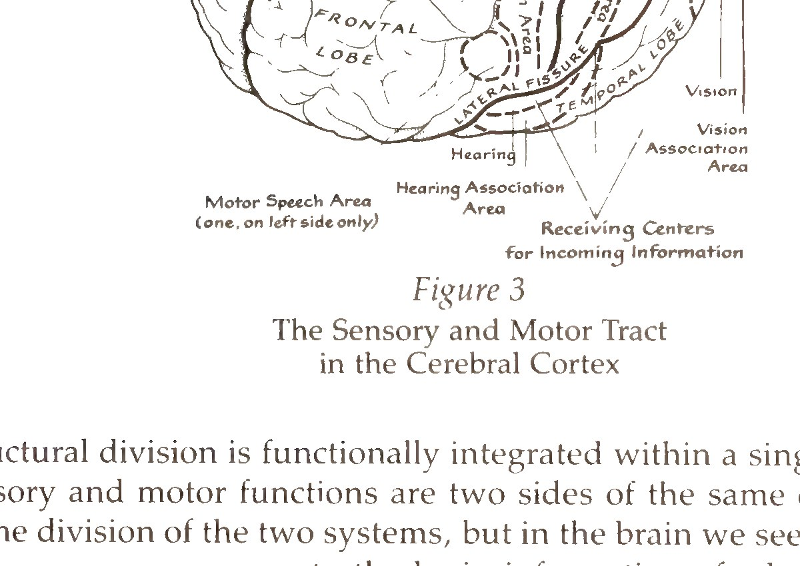
Hình 3: Đường Truyền Cảm Giác Và Vận Động Trong Vỏ Não
Sự phân chia cấu trúc này được tích hợp về mặt chức năng trong một hệ thống thần kinh duy nhất: Chức năng cảm giác và vận động là hai mặt của cùng một đồng xu. Ở cột sống chúng ta thấy sự tách biệt của hai hệ thống, nhưng ở não chúng ta thấy sự tích hợp của chúng.
Các dây thần kinh cảm giác mang đến não thông tin về những gì đang xảy ra trên thế giới cũng như trong cơ thể chúng ta. Được cung cấp thông tin này, não có thể tính toán cần làm gì và làm thế nào: tức là, não tích hợp thông tin cảm giác đầu vào với các mệnh lệnh gửi ra cho hệ thống vận động. Những chức năng tích hợp của hệ thống cảm giác và vận động này căn bản và quen thuộc đến mức, cũng như con cá không nhận ra nước, chúng ta không nhận ra sự hoạt động không ngừng của chúng.
Chúng ta hiếm khi nhận thức được hai chức năng tích hợp này khi làm một việc đơn giản như lật trang sách. Khi một người đến cuối trang, bàn tay trái của người đó nhấc lên, đi sang phải, tìm thấy mép của trang tiếp theo ở góc phải của cuốn sách, và lật sang trái. Nhưng để bàn tay trái "tìm thấy mép của trang tiếp theo" đòi hỏi thông tin cảm giác chính xác về vị trí của bàn tay và vị trí của cuốn sách. Khi bàn tay trái của bạn nhấc lên, nó phải biết nó đang đi đâu, nếu không nó có thể nhấc lên và rơi xuống bên sườn bạn, hoặc đập vào mũi bạn, hoặc vươn qua và chạm vào vai phải của bạn. May mắn thay, nó không làm vậy. Bạn biết bàn tay và cuốn sách của mình ở đâu, vì trong từng khoảnh khắc bạn di chuyển bàn tay, bạn đang nhận một dòng thông tin cảm giác liên tục về vị trí, hướng, đường nét, quỹ đạo, và tốc độ của cử động bàn tay liên quan đến vị trí được cảm nhận của mép trang tiếp theo ở góc phải của cuốn sách.
Trong khoa học thần kinh sinh lý đương đại, sự tương tác liên tục giữa thông tin cảm giác và sự dẫn dắt vận động được gọi là một "hệ thống phản hồi" hoạt động theo các "vòng lặp": Các dây thần kinh cảm giác "phản hồi" thông tin đến các dây thần kinh vận động, với phản ứng của chúng "quay vòng lại" bằng các mệnh lệnh vận động dọc theo các dây thần kinh vận động. Khi cử động diễn ra, các dây thần kinh vận động lại "phản hồi" thông tin mới cho các dây thần kinh cảm giác về vị trí của bàn tay. Vòng phản hồi này tiếp tục trao đổi thông tin cho đến khi bàn tay và các ngón tay chạm vào trang giấy và lật nó.
Một khi chúng ta suy ngẫm về điều đó, chúng ta thấy rõ rằng mình cần một dòng thông tin cảm giác liên tục từ bên ngoài để duy trì sự kiểm soát liên tục các cử động cơ bắp từ bên trong ra. Chúng ta không thể có ý thức làm bất cứ điều gì trên thế giới này nếu hệ thống cảm giác–vận động của chúng ta không hoạt động liên tục.
Nhận ra hệ thống cảm giác–vận động căn bản rõ ràng đến thế nào đối với cách chúng ta sống khiến chúng ta nhận ra một điều căn bản khác: Nếu có bất cứ điều gì trục trặc với hệ thống cảm giác–vận động, cuộc sống của chúng ta sẽ bị suy giảm tận gốc. Nếu có điều gì đó làm mờ đi nhận thức cảm giác của chúng ta, chúng ta sẽ không biết cách kiểm soát cơ thể và hành động của mình một cách hiệu quả. Nếu có điều gì đó làm chai đi sự kiểm soát vận động của chúng ta, chúng ta không chỉ trở nên bị giới hạn và kém hiệu quả trong hành động, mà sự phản hồi của chúng ta cũng trở nên rối ren và thiếu chính xác. Vì các chức năng cảm giác và vận động được tích hợp thành một hệ thống, bất cứ điều gì trục trặc ở một phần sẽ tự động trục trặc ở phần kia. Cách chúng ta cảm nhận thế giới và cảm nhận về chính mình bị ảnh hưởng không kém cách chúng ta hành động trên thế giới và mức độ hoạt động tốt của cơ thể.
Các rối loạn chức năng của hệ thống cảm giác–vận động là vấn đề nghiêm trọng, và khi chúng xảy ra, chúng gây ra sự suy giảm căn bản trong cuộc sống của chúng ta. Hàng ngàn năm qua, chúng đã bị gắn liền với các chứng rối loạn của lão hóa và vì thế được cho là không thể tránh khỏi và không thể đảo ngược. Nhưng, như chúng ta sẽ thấy, chúng có thể được ngăn ngừa và đảo ngược.
Chương 2 — James (32 Tuổi): Cơn Ác Mộng Về Lưng
Cơn đau mạn tính ở lưng dưới thì đậm chất Mỹ không khác gì bánh táo. Nó phổ biến và dễ đoán đến mức chúng ta không ngạc nhiên khi nó xảy ra. Nhưng cái mà các bác sĩ gọi là "hội chứng lưng dưới" cũng "Anh như thịt bò", cũng "Pháp như phô mai Brie", cũng "Đức như bia", cũng "Nhật như rượu sake", và cũng "Úc như Vegemite". Cơn đau lưng dưới mạn tính phổ biến đến mức các cuộc khảo sát ở những quốc gia công nghiệp hóa cho thấy có tới ba phần tư dân số trên 45 tuổi mắc phải. Bác sĩ người Anh Wilfred Barlow ước tính rằng một nửa dân số trưởng thành ở Anh bị đau lưng dưới dữ dội và đau thần kinh tọa.
Có một mối quan hệ trực tiếp giữa đau lưng mạn tính và những tình huống căng thẳng, đầy thách thức. Điều đó thậm chí còn là một phần của văn hóa dân gian hiện đại chúng ta. Làm một nhân viên bán hàng, làm một người quản lý, đáp ứng các chỉ tiêu, thời hạn và mục tiêu đã định—tất cả đều là những thủ tục cơ bản của thực tiễn kinh doanh hiện đại—là chấp nhận nguy cơ mắc đau lưng mạn tính. Chúng ta mong đợi tổn thương xảy ra cho cơ thể mình, ngay cả khi chúng ta không làm việc chân tay.
Điều đó đã xảy ra với James. James là kỹ thuật viên tại một xưởng truyền hình, công việc mà anh đã làm hơn 10 năm. Khi anh ở độ tuổi hai mươi lăm, anh nhận thấy những cơn đau nhẹ thoảng qua ở lưng dưới, nhưng chúng luôn biến mất. Đến cuối độ tuổi hai mươi, cơn đau trở nên phổ biến hơn. Anh luôn có cùng một cơn đau khi thức dậy, và nó ở lại với anh cho đến khi anh bắt đầu hoạt động nhiều hơn vào buổi sáng.
Đến đầu độ tuổi ba mươi, cơn đau buổi sáng quen thuộc của James đã trở thành mạn tính, một cơn đau lưng tăng dữ dội vào cuối buổi chiều. Anh cảm thấy đau không chỉ ở đường cong của lưng dưới mà thường xuyên lan xuống phía sau xương chậu. Anh khó đi được quãng đường dài. Bước chân của anh ngắn lại, và anh mệt nhanh hơn. Tại xưởng, khả năng nghiêng người về trước và với tới bảng điều khiển của anh vừa bị hạn chế vừa chậm chạp hơn. Nếu James làm việc trong vườn vào thứ Bảy, sáng Chủ nhật anh gần như không thể đi lại. Và trong hai dịp—một lần khởi động máy cắt cỏ và một lần dùng xẻng—lưng anh bỗng nhiên "đổ sập". Mỗi lần như vậy anh đông cứng lại vì cơn đau dữ dội đến mức phải nằm trên giường suốt một tuần.
Đó là một cơn ác mộng đối với James, người mà nếu không có chuyện đó thì sức khỏe hoàn toàn tốt, vẫn rất năng động, và có cơ thể thể thao. Thực tế, anh từng chạy bộ thường xuyên. Ở tuổi 32, anh trông trẻ và cảm thấy trẻ, chỉ trừ việc cơ thể anh đang "đổ vỡ dần". Dường như không có gì giúp được. Nếu anh nghỉ ngơi và uống thuốc giảm đau, cơn đau sẽ giảm, nhưng rồi nó trở lại sau vài ngày. Cách chữa tốt nhất là đến gặp bác sĩ chỉnh hình mỗi tuần, cách này giảm đau ngay lập tức. Tuy nhiên, trong vòng khoảng một ngày, cơn đau lại luôn trở lại.
Bác sĩ của James, sau khi xem phim X quang, nói rằng các đĩa đệm liên đốt sống của anh đang yếu đi và bắt đầu nhô ra khi thành sau của các đốt sống thắt lưng hẹp lại—ông gọi đó là "thoái hóa đĩa đệm". Ông cho James xem phim X quang. Chúng cho thấy các đốt sống thắt lưng nghiêng về phía sau theo một đường cong lưng võng, với các mặt khớp sau của đốt sống trông như đang rơi vào chất liệu đĩa đệm, vốn đang nhô ra ngoài.
Bác sĩ nói rằng nếu các đĩa đệm yếu hơn nữa, chúng có thể thoát vị hoặc vỡ, và khi đó cách giảm đau duy nhất sẽ là phẫu thuật, để lấy bỏ chất liệu đĩa đệm nhô ra hoặc nối các đốt sống dưới lại với nhau. Bác sĩ của James không hứa cho anh hồi phục một trăm phần trăm, chỉ hứa rằng ca phẫu thuật sẽ tránh được tình trạng liệt.
Khi tôi gặp James, anh đang trong tình trạng tuyệt vọng. Nhưng trong vòng hai tuần, anh không còn đau nữa; anh chỉ cảm thấy một cứng đơ lan tỏa đang nhanh chóng biến mất ở lưng và thân mình. Trong vòng sáu tuần, anh đã bắt đầu chạy bộ lại, lần đầu tiên sau năm năm.
Điều gì đã sai với cái lưng của James? Liệu một công việc căng thẳng có thực sự làm các đĩa đệm tan rã và xương sụp đổ không? Không, đương nhiên là không. Nhưng căng thẳng kéo dài có thể gây ra sự co ngày càng tăng ở các cơ cạnh cột sống (paravertebral) chạy thẳng đứng xuống hai bên cột sống và gắn vào phần trên của xương cùng. Đó là nguồn gốc của cơn cứng đơ và đau mạn tính ở lưng.
Khi James kể cho tôi vấn đề của anh, tôi đã làm hai việc đơn giản: tôi sờ anh, và tôi nhìn anh. Sờ nắn (palpation)—cảm nhận cơ thể bệnh nhân—gần như là một nghệ thuật đã bị thất lạc trong thế giới y học. Tại sao lại sờ bệnh nhân nếu bạn có thể nhìn bên trong cơ thể họ bằng X quang? Lý do là vì X quang không cho thấy các mô mềm của cơ thể, như các cơ. Khi tôi sờ các cơ cạnh cột sống của James, tôi thấy chúng không mềm mà co cứng, gần như như những sợi cáp. Và khi tôi nhìn anh từ bên cạnh, tôi thấy lưng dưới của anh cong thành một đường lưng võng.
Đường lưng võng mà tôi thấy chính là điều bác sĩ thấy trong phim X quang—các đốt sống dưới nghiêng theo một đường cong lordosis cực đoan, như cây cung của thợ bắn. Nhưng vì X quang không cho thấy sự co cơ, nên phim đã không cho bác sĩ thấy sợi dây căng đã kéo cây cung vào đường cong của nó. Sợi dây đó chính là các cơ cạnh cột sống của James, bị co mạn tính, có lẽ đến 50 phần trăm, ngày đêm. Nghiên cứu về sự co cơ trương lực cực đoan đã cho thấy nó diễn ra không gián đoạn ngay cả trong lúc ngủ. Không có gì lạ khi James và những người khác có vấn đề này thức dậy trong tình trạng đau nhức.
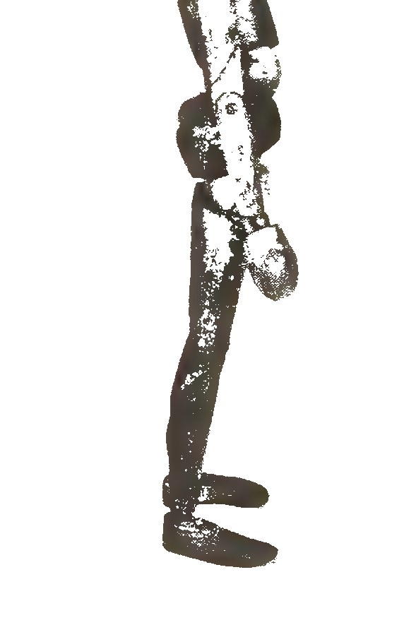
Hình 4: Tư Thế Của James
Sự căng phía sau khổng lồ của các cơ cạnh cột sống bị co quá mức này đã dần dần làm cong các đốt sống của James, khiến bề mặt sau của chúng bị ép xuống vào các đĩa đệm, làm các đĩa đệm nhô ra nhẹ. Phim X quang tạo ra ảo giác về một chồng khối lập phương sụp đổ vì thiếu chống đỡ (Hình 5a). Tuy nhiên, nếu chúng ta nhớ rằng đây không phải là một chồng khối cấu trúc mà là một hệ thống cơ-xương được điều khiển bởi một bộ não hoạt động trong một môi trường căng thẳng, chúng ta sẽ thấy điều khá khác khi nhìn vào phim X quang: một đoạn cột sống đã bị uốn cong dưới áp lực của một sức kéo cơ bắp hoạt động mạn tính (Hình 5b). Căn bệnh gốc của cơn đau lưng James là chứng quên cảm giác–vận động, một vấn đề có thể truy nguyên về bộ não của anh.
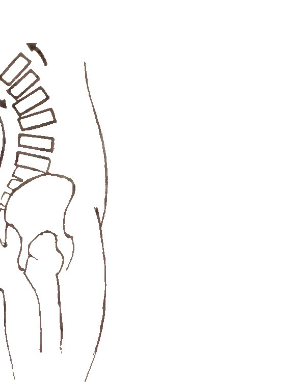
Hình 5a: Ảo Giác "Các Khối Sụp Đổ"
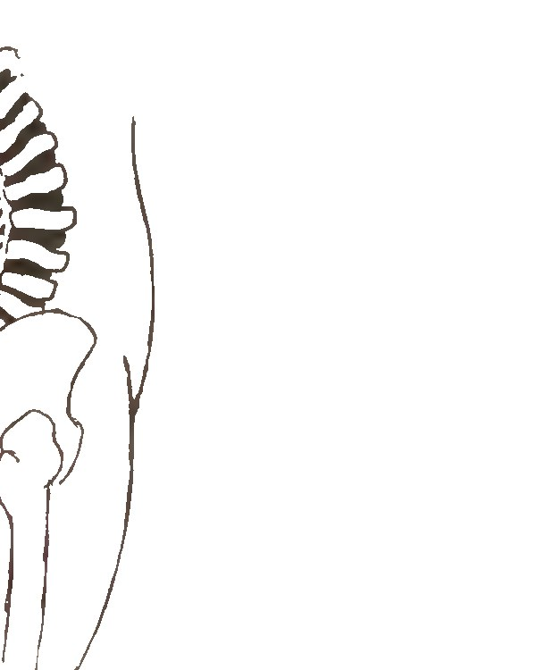
Hình 5b: Các Đốt Sống Bị Uốn Cong Bởi Sức Kéo Của Cơ Bắp
Ngay khi chúng ta nhận ra James là một con người có bộ não, dù chức năng của nó có khiếm khuyết, chúng ta biết anh có thể tự quyết định những thay đổi chức năng nào mình cần thực hiện. Nhưng nếu chúng ta chỉ nghĩ về James như một con búp bê cơ khí không có não với cấu trúc cột sống sụp đổ, thì chúng ta có một tình huống y tế nguy cấp, đòi hỏi phải thiết kế lại cột sống của con búp bê—ca phẫu thuật mà bác sĩ của James không thể đảm bảo.
Tôi điều trị James như một con người có thể học lại cách cảm nhận và kiểm soát các cơ bị căng quá mức ở lưng dưới của anh. Tôi bảo anh nằm xuống một bàn làm việc có đệm, để giải thoát bộ não anh khỏi phản ứng quen thuộc là phải chống đỡ trọng lượng. Tôi
giúp anh cảm nhận sự vận động ở xương chậu và ở các đốt sống lưng dưới. Khi anh bắt đầu cảm nhận những cử động này, anh báo cho tôi biết rằng anh đang nhận biết vùng lưng đó lần đầu tiên sau nhiều năm: "Tôi bắt đầu cảm thấy có gì đó ở đó," anh nói. "Trước đây, tôi không cảm thấy gì ngoài cơn đau." Một khi sự phản hồi cảm giác này về não trở nên rõ ràng hơn với anh, tôi yêu cầu anh thử thực hiện những cử động nhẹ nhàng ở những phần lưng mà anh bắt đầu cảm nhận được. Chúng tôi tiến hành dần dần dọc theo toàn bộ chiều dài cột sống, với James cảm nhận rồi nhẹ nhàng co các cơ đã tự động co cho đến lúc đó. Các cơ cạnh cột sống chậm rãi bắt đầu mềm ra, và đường cong lordosis cực đoan bắt đầu được buông lỏng. Tôi bảo anh vòng tay ra sau lưng để sờ các cơ, để cảm giác xúc giác ở bàn tay anh có thể bổ sung cho sự cảm nhận nội tại của bộ não anh về sự mềm ra của các cơ.
Một khi chúng tôi đã thiết lập lại đủ năng lực cảm giác–vận động, tôi dạy James một Bài tập Somatic đơn giản, một bài anh có thể tập vào buổi tối trước khi đi ngủ và vào buổi sáng khi mới thức dậy. Vào những thời điểm này, khi sóng não chậm hơn, não cởi mở hơn với việc học điều mới.
James tập những bài ngắn ngủi này về kiểm soát somatic trong một tuần. Khi anh xuất hiện tại buổi hẹn thứ hai với nụ cười, tôi biết chứng quên cảm giác–vận động của anh đang phai dần. Giờ anh đã thoát khỏi cơn đau cấp, và anh có thể cử động dễ dàng hơn và tự tin hơn. Chúng tôi tiếp tục khám phá thêm các cử động của cột sống và thân mình trên bàn làm việc, và anh học một Bài tập Somatic tham vọng hơn. Anh tiếp tục tuần thứ hai luyện tập để học lại sự kiểm soát cảm giác–vận động.
Lần gặp tiếp theo, James báo tin rằng ngay cả cơn đau nhức nhẹ anh từng cảm thấy cũng đã biến mất. Thay vì than phiền về đau, giờ anh muốn thân mình mình dẻo hơn nữa. Với tôi, điều đó có nghĩa là anh đã đi qua tấm gương sang phía bên kia. Anh không còn tập trung vào cách thoát khỏi cơn đau, mà vào cách đạt được tính linh hoạt lớn hơn—báo hiệu sự trở lại của kiểm soát cảm giác–vận động. Tôi nhận rõ rằng mình sắp mất một khách hàng, và tôi chúc mừng James về điều đó. Trong buổi gặp thứ ba, chúng tôi khám phá cách việc kiểm soát tốt hơn các cơ trung tâm của thân mình giờ đây cho phép các khớp vai và hông vận động tự do hơn. Tôi dạy anh một mô hình cử động phức tạp liên quan đến sự phối hợp của thân mình, cánh tay và chân. Rồi tôi từ biệt anh với tư cách khách hàng.
Nhiều năm sau, tôi nói chuyện với James và hỏi anh thế nào rồi. Anh nói rằng anh không có vấn đề gì cả. Buổi sáng, anh vẫn thực hiện các Bài tập Somatic mà tôi đã dạy. Anh không thấy bình thường nếu không nhắc mình nhớ cảm giác dễ chịu thế nào khi các cơ được dài ra và thư giãn. Khi thức dậy, anh "giãn mình như một con mèo" rồi đi làm. Mỗi tuần vài ngày, anh chạy bộ vào sáng sớm. Áp lực của sản xuất truyền hình vẫn như cũ, nhưng James thì không còn như cũ. Anh dẻo dai trong cách ứng phó với căng thẳng, và anh yêu thích công việc của mình. "Anh đã đúng," James nói. "Người ta có thể vừa giữ bánh vừa ăn bánh mà."
Đoạn Xen: Căng Cơ Mạn Tính
James may mắn vì chúng tôi đã chẩn đoán và điều chỉnh sự căng cơ của anh sớm. Anh chỉ trải qua vài năm trong cơn đau. Chúng tôi vẫn có thể điều chỉnh được vấn đề của anh nếu anh đến muộn hơn trong cuộc đời, nhưng lúc đó anh đã phải chịu 20 hoặc 30 năm đau đớn. Tôi đã có nhiều khách hàng bị đau gần như liên tục ở một bộ phận nào đó của cơ thể suốt tới 40 năm. Họ cũng luôn có sự căng cơ mạn tính ở những vùng đó. Đau liên tục và căng cơ mạn tính đi cùng nhau. Nhưng hoàn toàn có thể ngăn ngừa không để chúng xảy ra.
Các cơ được thiết kế cho một hành động: co lại, hoặc ngắn lại. Sự co xảy ra khi cơ nhận một tín hiệu điện-hóa từ hệ thần kinh trung ương báo làm như vậy. Khi tín hiệu dừng, sự co dừng, và cơ thư giãn trở lại độ dài ban đầu. Không cần năng lượng để thư giãn và kéo dài một cơ, chỉ cần năng lượng để co và rút ngắn nó. Khi chúng ta tự ý co một cơ rồi thư giãn nó, cơ nên mềm ra gần như hoàn toàn. Một cơ được thư giãn hoàn toàn không có hoạt động điện nào trong đó. Kiểm soát tự nguyện trọn vẹn một cơ là khả năng vừa co được toàn bộ chiều dài của cơ, vừa thư giãn nó hoàn toàn đến suốt chiều dài của nó.
Tuy nhiên, nhiều người co các cơ ở lưng, hông hoặc vai để cử động. Nhưng rồi, khi cử động kết thúc, họ không tự ý thư giãn các cơ trở lại độ dài đầy đủ. Thay vì sự co và mức tiêu thụ năng lượng giảm xuống zero, các cơ vẫn giữ ở mức co 10 phần trăm—hoặc 20 phần trăm, thậm chí 40 phần trăm. Dù có cố gắng đến đâu, những người này không thể thư giãn hoàn toàn các cơ của mình. Các cơ của họ tiếp tục làm việc và đốt cháy năng lượng.
Mọi cơ đều có trương lực (tonus); tức là, một độ đàn hồi tự nhiên hoặc khả năng giãn ra và co lại khi có kích thích. Ở trạng thái nghỉ, trương lực bằng zero. Vì vậy, nếu chúng ta kiểm soát hoàn toàn một cơ, chúng ta có thể đạt được trương lực cơ bằng zero—sự thư giãn hoàn toàn. Nhưng nếu chúng ta mất quyền kiểm soát tự nguyện đối với cơ đó, trương lực của nó có thể tăng lên 10, 20, thậm chí 40 phần trăm. Đó là chứng căng cơ mạn tính.
Nếu trương lực là 10 phần trăm, cơ sẽ luôn cảm thấy mỏi và rắn. Nếu trương lực là 20 phần trăm, cơ sẽ cảm thấy mỏi, rất rắn, và đau nhức. Nếu trương lực là 40 phần trăm, cơ sẽ cảm thấy mỏi, cứng, và khá đau đớn. Những người có trương lực cơ cao mạn tính thường cảm thấy cơ mình "yếu" vì họ không thể cử động tự do. Đôi khi các bác sĩ sẽ nói với họ rằng các cơ đã trở nên yếu. Trái lại, cơ họ khá mạnh, nhưng chúng mỏi và bị làm việc quá sức vì co liên tục. Nếu chúng ta chỉ cần bận tâm cảm nhận cơ của mình, chúng ta sẽ cảm thấy độ cứng của nó—dấu hiệu chắc chắn của sự co liên tục. Cơ bị co mạn tính giống như một động cơ không thể tắt được. Nó tiếp tục chạy và đốt cháy năng lượng.
Đây là lý do các cơ có trương lực cao luôn đau nhức. Glycogen, loại được
dự trữ trong cơ để cung cấp năng lượng cho sự co, liên tục bị đốt cháy. Sự đốt cháy glycogen tạo ra sự co, và glycogen sau đó được chuyển thành axit lactic. Nếu có sự đốt cháy liên tục, thì sẽ có sự tích tụ liên tục axit lactic, và axit càng nhiều, các tế bào cảm giác của cơ càng bị kích thích. Sự tích tụ liên tục 10 phần trăm sẽ tạo đủ hoạt động để cơ cảm thấy mỏi. Sự tích tụ liên tục 40 phần trăm sẽ tạo ra nhiều axit nóng đến mức quanh các tế bào thụ cảm đau, đến nỗi dòng máu không thể cuốn trôi đi được, và cơ sẽ liên tục cảm thấy đau đớn.
Việc bị đau nhức hoặc đau cơ mạn tính từ cuối độ tuổi hai mươi trở đi là phổ biến. Nó có thể kéo dài năm này qua năm khác, có lúc gần như không cảm nhận được, nhưng có lúc không thể chịu đựng được, tùy vào mức độ căng thẳng mà cá nhân đã trải qua. Khi chúng ta già đi, chúng ta đã có thời gian tích lũy nhiều trải nghiệm căng thẳng và chấn thương. Vì vậy, ở những năm về sau, chúng ta thường bị trương lực cơ lớn hơn, do đó cứng đơ hơn trong các cử động của cơ thể, cũng như tư thế bị biến dạng hơn. Vì sự sản xuất liên tục axit lactic, những cơ cứng và đơ này cũng đau nhức và đau đớn mạn tính.
Sự cứng cơ, hạn chế vận động, mệt mỏi, biến dạng tư thế và đau mạn tính này bị hiểu nhầm là hậu quả của "tuổi già"—một căn bệnh hư cấu được cho là dẫn đến thoái hóa sinh lý, mệt mỏi liên tục và yếu đuối, và là "không thể đảo ngược". Thực tế, tuổi tác không liên quan gì đến điều đó. Những hiện tượng này là kết quả của sự tích lũy các phản ứng sinh lý đối với căng thẳng và tai nạn chấn thương. Thường phải mất nhiều năm để tích lũy đủ căng thẳng hoặc chấn thương nhằm nâng trương lực cơ lên mức không lành mạnh như vậy. Nhưng sự căng cơ mạn tính tương tự cũng có thể xảy ra ở một người trẻ, nếu những năm thơ ấu và thiếu niên đặc biệt chấn thương. Tôi đã thấy nhiều người ở độ tuổi hai mươi và ba mươi có cùng cơ thể, cùng trương lực cao, và cùng những than phiền như những người ở độ tuổi bảy mươi. Trong mọi trường hợp, họ đã từng bị bệnh thời thơ ấu, phẫu thuật, một sự ly tán gia đình bi thảm, hoặc một tình huống chính trị-xã hội đe dọa như chiến tranh.
Trương lực cơ tăng lên thường xảy ra ở những năm về sau. Điều đó không còn nghi ngờ gì. Nhưng nó xảy ra ở những năm về sau, không phải vì sự tích lũy của yếu tố bí ẩn "tuổi tác", mà vì sự tích lũy của những yếu tố không bí ẩn là cuộc sống căng thẳng và tai nạn chấn thương. Sống càng lâu, người ta càng có nhiều cơ hội cho những sự kiện này xảy ra và tích lũy. Một số người bị tích lũy sớm và dữ dội nên cho thấy các triệu chứng này sớm. Những người khác may mắn thoát khỏi những ảnh hưởng của căng thẳng hoặc chấn thương, và họ vẫn dẻo dai và sinh động ở tuổi 70 như hồi 25. Tôi hy vọng rằng, với sự hiểu biết ngày càng tăng về chứng quên cảm giác–vận động, nhóm sau này sẽ ngày càng đông hơn.
Khi chúng ta nghĩ rằng cơ thể con người có gần 800 cơ, và tất cả chúng đều chứa đầy các tế bào cảm giác, chúng ta có thể hiểu vì sao hạnh phúc của chúng ta phụ thuộc vào thông tin cảm giác được các cơ phản hồi về não.
Những người có trương lực cơ cao không thấy dễ chịu. Thường họ không thấy hy vọng hồi phục. "Ồ, tôi thấy mình già quá!" hàng trăm khách hàng đã nói với tôi như vậy, ngụ ý rằng trương lực cao của họ là không thể đảo ngược.
Nhưng các phản ứng cơ bắp đối với căng thẳng có thể được vượt qua. Có thể cảm thấy thực sự "trẻ" bất kể độ tuổi của một người. Nói một cách thực tế, điều đó có nghĩa là tận hưởng một trương lực cơ rất thấp về sự co và chi phí năng lượng, và rất cao về sự thoải mái và kiểm soát. Nhiệm vụ somatic căn bản trong suốt cuộc đời chúng ta là giành được ngày càng nhiều quyền kiểm soát đối với chính mình, học cách trôi cùng căng thẳng và chấn thương của cuộc sống, như một nút bần nổi trên mặt sóng.
Chương 3 — Louise (56 Tuổi): Vai Đông Cứng
Khi tôi gặp Louise, cô ấy đang bị "vai đông cứng." Hai năm trước đó, cô đã ngã và gãy phần trên của xương cánh tay, nơi cánh tay khớp với vai. Một bác sĩ phẫu thuật đã đặt một chiếc đinh vào xương để giữ nó lại với nhau, rồi sau đó lấy ra. Cấu trúc xương đã lành và trở lại bình thường, nhưng chức năng của cánh tay thì không lành lại. Vật lý trị liệu đã giúp giảm bớt phần nào độ cứng sau ca mổ của cánh tay, nhưng sự cải thiện là rất ít. Louise không thể nâng cánh tay phải lên cao hơn vị trí ngang, cũng không thể đưa nó ra sau lưng. Cô có thể đưa tay về phía trước, nhưng ngay cả điều đó cũng khó khăn vì cô bị đau mạn tính dữ dội ở phía trước khớp vai. Louise, ở tuổi ngoài năm mươi, đã đưa ra một kết luận: "Tôi nghĩ là mình đã quá đỉnh rồi."
Sau khi Louise kể cho tôi tiền sử của mình, tôi bảo cô đứng dậy để tôi có thể quan sát tư thế đứng và cảm nhận các cơ của cô—đúng như tôi đã làm với Barney và James. Nhìn cô từ phía trước, tôi thấy vai phải của cô thấp hơn vai trái. Nó trông như bị "kéo xuống," và bàn tay phải của cô buông thấp hơn bàn tay trái ba phần tư inch. Cô nói: "Cánh tay tôi cảm thấy nặng như 50 pound." Cô đứng trước mặt tôi, trông buồn rầu và rũ xuống một bên.
Khi tôi chạm vào các cơ của cô, tôi lập tức hiểu tại sao cánh tay cô lại nặng đến vậy. Cô đã đúng: nó bị đè nặng xuống. Có một sự co cơ mạnh mẽ ở latissimus dorsi (cơ lưng rộng), cơ này bám vào mặt trên của xương cánh tay và vào bờ của xương bả vai, rồi dàn rộng xuống khắp lưng đến phần dưới của cột sống và xương chậu. Sự co cơ liên tục này kéo cánh tay cô xuống và ngăn cô không thể với lên cao hơn mức ngang. Để thực hiện ngay cả những cử động đưa tay về phía trước đơn giản nhất, như lái xe hay ăn uống, cô buộc phải dùng lực co cực lớn ở các cơ trên đỉnh vai. Những cơ này phải chịu đau mạn tính dữ dội; chúng liên tục bị làm việc quá sức. Và cơ latissimus dorsi đã đông cứng nằm ngoài tầm kiểm soát của cô.
Cơ ngực khỏe của Louise, pectoralis (cơ ngực lớn), cũng bị co lại và cứng đơ một cách không tự nguyện. Cơ này, nằm ngay cạnh latissimus dorsi, có điểm bám ở mặt trên của xương cánh tay. Các sợi của nó xòe ra ở phía trước ngực, bám vào xương đòn, hay xương quai xanh, và xương ức, hay xương ngực,
rồi vươn xuống tận xương sườn thứ năm, hoặc đôi khi là xương sườn thứ sáu. Lồng ngực, đến lượt nó, lại bị kéo xuống bởi một sự co cơ mạn tính của cơ bụng, cơ kéo dài xuống từ nửa dưới của ngực đến xương mu. Độ cứng của sự co cơ ngực và cơ bụng đã giữ cho vai hơi hướng ra trước và xuống dưới, chống lại sức kéo cũng không ngừng của latissimus dorsi về phía sau và xuống dưới. Như vậy, vai đã bị "đông cứng." Cứ như thể Louise có một cánh tay bị què.
Vì Louise ở tuổi năm mươi, cô đã cho rằng đó là do tuổi tác mà cánh tay cô không lành lại. Bác sĩ của cô nói với cô rằng cánh tay cô bị đông cứng do các dính kết hình thành quanh chỗ gãy đã xảy ra gần khớp. Ông nói rằng các dính kết đó có thể được lấy ra bằng phẫu thuật. Nhưng sau hai lần can thiệp phẫu thuật—đặt chiếc đinh rồi lấy nó ra—Louise đã phản đối việc mổ thêm. Lạ lùng thay, cô nghĩ rằng nó sẽ không giúp ích gì.
Louise đã đúng theo trực giác: Phẫu thuật đã không thể giúp được cái vai đông cứng của cô, bởi vì không phải một "vật"—một sự tắc nghẽn cấu trúc, chẳng hạn như "các dính kết"—đang ngăn cản cử động. Đúng hơn, những vùng trong não của Louise nằm ngoài tầm kiểm soát có ý thức của cô liên tục gửi tín hiệu bảo các cơ cô co lại. Sự phân biệt này giữa một "vật" (nghĩa là một cấu trúc) và một năng lực (nghĩa là một chức năng) là nền tảng khi nhìn nhận các vấn đề của con người theo góc nhìn của somatic học. Nếu một "vật" là nguyên nhân, thì phải cắt bỏ hoặc biến đổi bằng hóa chất một cấu trúc nào đó. Nhưng nếu nguyên nhân là thiếu năng lực tự nguyện, thì phải khôi phục một chức năng của con người.
Cụ thể là, Louise phải học lại cách sử dụng các cơ của mình một cách hiệu quả, và chính điều đó đã đặt ra vấn đề. Từ kinh nghiệm của mình, tôi biết cái gì đang gây ra vai đông cứng của cô, nhưng tất cả những gì Louise cảm nhận được là một cánh tay phải nặng nề và một cơn đau dữ dội ở phía trước vai. Cô không hề nhận biết sự co cơ của mình. Không những cô không thể thư giãn các cơ đó, cô còn không thể cảm nhận được chúng. Cô tin, như bác sĩ của cô đã nói, rằng một cấu trúc nào đó nằm ngoài khả năng kiểm soát của cô đang chặn cử động của cô.
Để khôi phục năng lực tự nguyện của Louise trong việc kiểm soát các cơ đã bị "đông cứng," tôi phải giúp cô nhận biết hành động co cơ từ bên trong chính hệ thần kinh trung ương của cô. Trong lúc cô nằm nghiêng sang trái, có một cái gối dưới đầu và bên phải hướng lên, tôi đặt một bàn tay ở phần lưng dưới của cô, ngay bờ của cơ latissimus dorsi, và bàn tay kia lên vai phải của cô. Rồi tôi di chuyển hai bàn tay cùng nhau để cô có thể cảm nhận được sự liên kết giữa chúng.
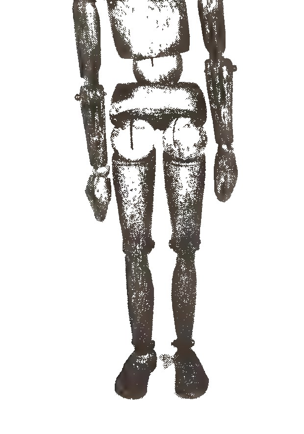
Hình 6: Tư thế của Louise
Dần dần cô bắt đầu nhận ra rằng cử động ở phần lưng dưới của cô liên kết trực tiếp với cử động ở vai cô. Tại thời điểm đó, tôi yêu cầu cô làm một điều lạ lùng: co cơ latissimus dorsi mạnh nhất có thể, kéo dài tận xuống xương chậu, làm cho vai cô càng thêm căng và "đông cứng" hơn nữa. Trong lúc cô làm thế, tôi giữ cánh tay cô hướng về phía trước và kéo chắc nó về hướng ngược lại, để khiến cô co cơ còn mạnh hơn. Tại sao tôi lại bắt cô làm như vậy? Để sự phản hồi cảm giác khiến cô nhận thức rõ ràng rằng chính cô đang co vai mình vào một vị trí đông cứng.
Louise tập việc tự nguyện làm cho vai mình càng căng hơn, luân phiên co rồi thả lỏng cơ đã "đông cứng" vốn đã giữ cánh tay cô trong trạng thái co giật. Khi cô tiếp tục cử động này, cô làm tốt dần lên: Cô đang nhớ lại cách làm điều đó. Và càng nhớ lại, cô càng làm tốt hơn. Chẳng bao lâu, việc thả lỏng cơ từng co giật ấy đã thành công đến mức cơ trở nên mềm và lỏng, cho phép vai cô cử động tự do lần đầu tiên sau hai năm.
Louise vừa mừng rỡ vừa kinh ngạc. Cô thậm chí bắt đầu rơi nước mắt trước sự kỳ diệu của sự biến đổi ấy. Và niềm vui trong những giọt nước mắt của cô càng lớn thêm khi cô nhận ra, ngày càng rõ, rằng mình đã giành lại được quyền kiểm soát bản thân. Điều kỳ diệu không nằm ở bất cứ điều gì tôi đã làm; sự biến đổi đã xảy ra vì chính Louise đã thực hiện nó từ bên trong. Cô cảm thấy một trải nghiệm mở rộng khi khám phá lại chính mình là một người tự do và tự kiểm soát được.
Chúng tôi tiếp tục áp dụng quy trình tương tự với các cơ khác ở khớp vai của Louise cho đến cả cảm nhận của cô về những gì mình đang làm lẫn sự kiểm soát vận động của cô đều đã rõ ràng đầy đủ. Sau đó tôi dạy cô một Bài tập Somatic để cô có thể luyện lại năng lực cảm giác–vận động mới tìm thấy của mình ngay trước khi đi ngủ và ngay sau khi thức dậy. Hai tuần sau, trong buổi tập thứ ba, cô đã nâng cánh tay phải lên đến vị trí thẳng đứng và có thể áp nó vào tai phải của mình.
Từ đó về sau, Louise luôn thấy thoải mái, dẻo dai và năng động: Chứng đau vai của cô không tái phát. Và một điều khác cũng không tái phát: cảm giác buồn rầu, "đã quá đỉnh" của cô. Cô quên mất mình đang ở tuổi năm mươi và bắt đầu cư xử như một người phụ nữ trẻ hơn rất nhiều. Trải nghiệm khám phá ra rằng mình có trong bản thân những nguồn lực để vượt qua một vấn đề thể chất nghiêm trọng đã trả lại cho cô sự sống động và tự tin.
Đan Xen: "Somatic" Là Gì
Có hai cách để nhìn nhận một con người: từ ngoài vào, hoặc từ trong ra. Nhìn từ bên ngoài, qua mắt một nhà sinh lý học hay một bác sĩ, con người rất khác với con người mà họ hiện ra khi tự nhìn nhận mình từ trong ra.
Khi người ta nhìn một con người khác, người ta thấy một "cơ thể" với một hình dạng và kích thước bên ngoài nhất định. Điều đó cũng giống như một bức tượng hay một con bù bằng sáp được quan sát
cũng có hình dạng và kích thước "thân thể." Nhưng khi con người nhìn vào chính mình từ bên trong, người ấy nhận biết được các cảm giác, cử động và ý định—một sinh thể hoàn toàn khác, đầy đặn hơn. Nhìn một cơ thể từ bên ngoài là cái nhìn ngôi thứ ba: Người ta thấy một "anh ấy," một "cô ấy," hoặc một "nó." Nhưng khi con người nhìn vào chính mình từ bên trong, đó là cái nhìn ngôi thứ nhất—một cái nhìn đặc quyền của "tôi," nghĩa là đang nhận biết về "chính tôi, bản thân tôi."
Điều mà các nhà sinh lý học thấy từ cái nhìn ngôi thứ ba, hướng ra ngoài của họ luôn là một "cơ thể." Điều mà cá nhân thấy từ cái nhìn ngôi thứ nhất, hướng vào trong của mình luôn là một soma (cơ thể sống). Soma là một từ Hy Lạp mà, từ thời Hesiod trở đi, đã mang nghĩa "cơ thể sống." Nhận thức nội tâm này về chính mình—sống động, tự cảm nhận, hướng vào trong—khác hẳn về căn bản với nhận thức hướng ra ngoài về cái mà chúng ta gọi là một "cơ thể," bởi cái đó cũng có thể là một con người, một bức tượng, một con bù, hoặc một xác chết—dưới góc nhìn khách quan, tất cả những thứ đó đều là "các cơ thể."
Bất kỳ góc nhìn nào về con người mà không bao gồm cả cái nhìn somatic ngôi thứ nhất lẫn cái nhìn sinh lý ngôi thứ ba đều là lừa dối. Nhìn một con người chỉ như một cơ thể hướng ngoài, ngôi thứ ba là chỉ thấy một con rối hay con bù cơ thể có thể được thay đổi bằng các phương pháp bên ngoài của kỹ thuật hóa học và phẫu thuật. Đây, ngay từ cái nhìn đầu tiên, là một quan niệm sai về con người: Nó phiến diện và không đầy đủ.
Bởi vì "y học khoa học" đã xây dựng chính nó trên nền tảng của cái nhìn khách quan, ngôi thứ ba về con người như một cơ thể, nên nó là một cách tiếp cận lừa dối và không đầy đủ đối với sức khỏe con người. Y học khoa học không chỉ bỏ qua một chân lý căn bản về con người, mà còn tự định sẵn cho mình sự kém hiệu quả triền miên như một phương pháp giúp con người tiến bộ. Vì cái nhìn của y học về con người là không đầy đủ, nên khả năng giúp đỡ con người của y học cũng không đầy đủ.
Sự độc đáo của con người nằm ở việc, đồng thời, vừa là chủ thể vừa là khách thể. Con người là những chủ thể tự cảm nhận và tự vận động, đồng thời lại là những khách thể có thể được quan sát và thao tác.
Đối với chính bạn, bạn là một soma. Đối với người khác, bạn là một cơ thể. Chỉ có bạn mới có thể cảm nhận mình là một soma—không ai khác làm được điều đó. Nhưng mọi người khác đều có thể thấy bạn như một cơ thể. Ngay cả bạn cũng có thể thấy mình như một cơ thể bằng cách nhìn vào gương. Trong gương, bạn sẽ thấy một "anh ấy" hay "cô ấy" bên ngoài, ngôi thứ ba, cũng như mọi người khác; nhưng chỉ có bạn mới có nhận thức đặc quyền là đồng thời thấy cả "tôi."
Thảm họa lớn của các khoa học về con người là chúng ta, có thể nói, đã cùng nhau quay lại chống chính mình. Chỉ có một người có thể thấy mình là một sinh thể somatic ngôi thứ nhất, nhưng hàng triệu người có thể thấy người đó là một sinh thể cơ thể ngôi thứ ba. Hệ quả là, hàng triệu người đó có thể hợp lại với nhau để quan sát, đo lường và vẽ sơ đồ cơ thể khách quan của con người. Đó là con đường dễ dàng và hiển nhiên mà các ngành khoa học đã chọn.
Nhưng cái dễ dàng và hiển nhiên chưa chắc đã đúng hay hiệu quả. Việc hàng triệu người nghiên cứu các cơ thể khách quan của chúng ta là rất tốt: Có một số sự thật căn bản và
thiết yếu cần được xác định về việc con người chịu tác động của những lực vật lý và hóa học giống như mọi cơ thể khác, từ nguyên tử đến tiểu hành tinh. Nhưng nếu hàng triệu người đó tiến hành nghiên cứu các cơ thể con người cứ như thể con người chỉ là những cơ thể khách quan ngôi thứ ba, chứ không đồng thời là những soma chủ quan ngôi thứ nhất, thì họ mù quáng và nguy hiểm. Họ mù quáng vì đã huấn luyện mình chỉ thấy một mặt của con người trọn vẹn: Họ bỏ qua mặt somatic của chúng ta. Và họ nguy hiểm vì những quan sát, dự đoán và phương pháp thực hành của họ dựa trên một quan niệm sai lầm, không đầy đủ về con người.
Lý do khiến sinh lý học và y học không nhận ra được những huyền thoại đứng sau lão hóa là vì chúng đã không nhận ra sự thật căn bản rằng mọi con người đều tự nhận biết, tự cảm nhận và tự vận động: Họ là những soma tự chịu trách nhiệm. Góc nhìn somatic không chỉ thừa nhận rằng con người là những sinh thể cơ thể có thể trở thành nạn nhân của các lực vật lý và hữu cơ, mà còn thừa nhận rằng họ cũng là những sinh thể somatic có thể tự thay đổi mình. Con người có thể học cách cảm nhận các chức năng bên trong của mình và cải thiện sự kiểm soát đối với các chức năng somatic của mình.
Đây là chủ đề nền tảng của cuốn sách này: rằng góc nhìn somatic phải được thêm vào góc nhìn cơ thể khách quan nếu chúng ta muốn hiểu chính xác điều gì xảy ra cho con người khi họ già đi. Bằng cách thêm góc nhìn somatic vào các khoa học về con người, chúng ta không chỉ trở nên có khả năng vượt qua những vấn đề sức khỏe lớn bị quy sai cho lão hóa, mà còn có khả năng vượt qua nhiều vấn đề sức khỏe lớn đang hành hạ toàn bộ nhân loại.
Khi nói điều này, tuyệt đối không có ý ngụ ý rằng khoa học sinh lý là vô hiệu. Trái lại, những đóng góp của nó cho việc hiểu các chức năng khách quan của con người là to lớn. Điều tôi muốn nói là, dù vậy, đóng góp đó vẫn chưa đầy đủ và chưa thỏa đáng, và điều này thể hiện rõ trong sự thiếu hụt triền miên của chẩn đoán y khoa và sự bất lực của các phương pháp điều trị y khoa trong những lĩnh vực mà tôi đang thảo luận.
Góc nhìn somatic bổ sung và hoàn thiện cái nhìn khoa học về con người, làm cho một nền khoa học chân chính có thể ra đời—một nền khoa học thừa nhận con người trọn vẹn: cả mặt tự nhận biết, tự chịu trách nhiệm lẫn mặt "cơ thể" có thể quan sát từ bên ngoài. Cùng nhau, hai góc nhìn này làm nên một khoa học chân chính về con người. Bằng cách hoàn thiện một quan niệm về con người đã quá lâu chịu cái bệnh thiếu hụt, chúng ta sẽ đặt chân lên một châu lục mới của sự tiến bộ nhân loại.
Chương 4 — Harley (60 Tuổi): Càng Hạ Cánh Bị Co Lại
Đi lại với một bước chân êm ái, đều đặn là một trong những chức năng thiết yếu của con người. Chúng ta là những sinh thể hai chân với cách đi lại khác với bất kỳ động vật hai chân nào khác: Mỗi cánh tay đung đưa tự do để cân bằng với cử động của chân bên kia. Có một sự xoắn ở giữa cột sống của chúng ta, tập trung giữa đốt sống sườn thứ bảy và thứ tám, tại đó phần thân trên xoay theo một hướng và phần thân dưới xoay theo hướng kia.

Hình 7a: Đi bộ hai chân bình thường nhìn từ bên

Hình 7b: Đi bộ hai chân bình thường nhìn từ trước
Ít nhất thì đó là điều xảy ra trong cử động hai chân bình thường (xem Hình 7a và 7b), đòi hỏi tư thế phải thẳng đứng để các sự xoay ở trên và dưới được êm ái và đều đặn. Nếu tư thế của cơ thể bị cong hay nghiêng, sự cân bằng êm ái bị phá vỡ hoàn toàn, và người ta phải đi với dáng chậm chạp, ngập ngừng, không đều. Khi điều đó xảy ra, việc đi lại trở nên kém hiệu quả, dễ mệt mỏi và thường đau đớn.
Harley bước vào văn phòng tôi với một cái khập khễnh rõ rệt. Cơ thể anh nghiêng hẳn sang trái, và anh đưa chân trái ra theo một đường cong hướng ra ngoài khi đưa nó về phía trước. Ngoài ra, Harley là một người đàn ông khỏe mạnh, rạng rỡ ở tuổi ngoài sáu mươi, với dáng dấp của một người chăn nuôi trang trại ở California đã sống phần lớn cuộc đời ngoài trời. Khoảng một năm trước đó, anh ngã từ một chiếc xe bán tải và đáp xuống đầu gối trái, vốn đã sưng tấy và bầm tím, khiến anh đi khập khễnh trong vài tuần. Kiểm tra bằng tia X cho thấy, may mắn thay, bao khớp gối không bị tổn thương. Sụn và các gân đã bị va đập và giật mạnh, nhưng vẫn còn nguyên vẹn.
Dù vậy, sau khi cơn đau và sự sưng tấy đã tan đi, Harley thấy mình đi lại với đầu gối trái cong cứng, trọng tâm cơ thể dồn hẳn xuống chân trái. Anh gặp khó khăn ngay cả trong việc đi lại quanh nhà, nhưng điều anh nhớ nhất là được nhảy múa vuông (square dancing) với vợ.
Tôi kiểm tra đầu gối của Harley và thấy nó cử động khá tự do; và khi tôi thao tác với chân anh, nó có thể duỗi thẳng hoàn toàn. Không có vật cản bên trong cũng như không có tiếng kêu rắc rắc, và bao khớp cũng không bị lỏng khi tôi tạo áp lực ngang lên khớp gối. Đó là một đầu gối hoàn toàn khỏe mạnh, chỉ khác là, khi đứng hay đi, Harley không thể duỗi thẳng nó. Tôi đã biết ngay rằng vấn đề của anh là chức năng, chứ không phải cấu trúc.
Khi đứng, Harley nghiêng hẳn sang trái, với cái đầu nghiêng ngược sang phải để bù trừ. Tôi hỏi anh xem các cơ ở bên phải cổ anh có luôn đau nhức không, và anh đáp có. Tất cả các cơ ở bên trái thân mình anh đều căng cứng, đặc biệt là những cơ ở thắt lưng bên trái. Chúng kéo lồng ngực anh sang trái đến mức nó chạm vào xương chậu. Cứ như thể những cơ đó vẫn còn đang co rút để đáp lại cú ngã vào đầu gối. Trên thực tế, chính chuyện đó đang xảy ra: Chấn thương đau đớn của cú ngã đã kích hoạt trong não một sự co cơ phản xạ ở bên trái, và nó đã kéo dài từ lúc ngã cho đến tận nay. Cú sốc vào bên trái cơ thể anh—vào bán cầu não phải của anh—có thể nói là đã bị đóng băng theo thời gian.
Các cơ ở thắt lưng và hông bên trái của Harley co giật đến mức anh không thể cử động hay duỗi thẳng chân một cách bình thường. Xương chậu và đầu gối bên trái của anh
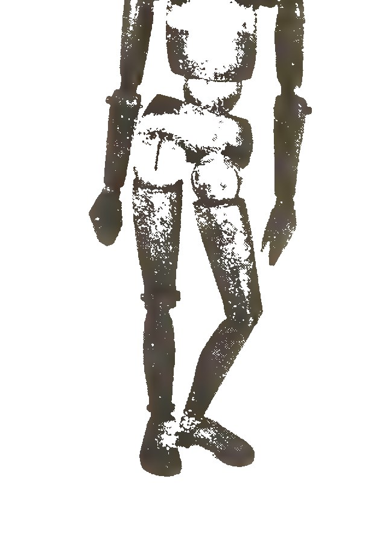
Hình 8: Tư thế của Harley
"đông cứng" trong một tư thế cong, co rút—như bộ hạ cánh của máy bay được thu lại một nửa. Vì công nghệ y khoa chỉ cho phép các bác sĩ tập trung vào bức tranh nhỏ, nên các bác sĩ của anh, khi nhìn vào đầu gối để tìm tổn thương cấu trúc, đã bỏ lỡ bức tranh lớn hơn về điều thực sự đang xảy ra cho toàn bộ bên trái cơ thể anh.
Tôi bắt đầu giúp Harley làm quen lại với các cơ mạnh mẽ ở bên trái cơ thể anh, mà lúc đó anh không cảm nhận được. Trung tâm của chứng quên cảm giác–vận động (SMA) ở anh nằm ở bên trái cơ thể, trong các cơ nối lồng ngực với xương chậu. Trong lúc anh nằm nghiêng trên bàn làm việc của tôi, tôi di chuyển xương chậu giúp anh theo đúng cách nó sẽ cử động nếu chính anh tự làm một cách có ý thức. Khi anh bắt đầu cảm nhận được cử động ở vùng thắt lưng đó, tôi yêu cầu anh thử tự làm lấy—tự nguyện co các cơ thắt lưng vốn đã căng ấy thêm một chút nữa. Hãy xem xét điều này dưới góc nhìn chức năng: Các cơ thắt lưng bên trái của Harley liên tục nhận một tín hiệu từ phần không tự nguyện trong não anh bảo chúng co lại, có thể ở mức 50 phần trăm khả năng của chúng. Tôi yêu cầu anh co chúng ở mức 80 phần trăm trở lên bằng cách gửi một tín hiệu mạnh hơn nữa từ phần tự nguyện của não. Tín hiệu điện hóa từ vỏ não, phần tự nguyện của não, mạnh hơn tín hiệu từ các phần dưới vỏ não, không tự nguyện, trong não anh. Theo thuật ngữ điện hóa, tín hiệu tự nguyện đã "lấn át" tín hiệu không tự nguyện và khẳng định lại quyền kiểm soát của nó đối với các cơ thắt lưng. Bằng cách này, ngay khi Harley nhận ra rằng anh có thể tự nguyện kiểm soát các cơ thắt lưng của mình, một sự kiện kỳ diệu đã xảy ra: Chúng bắt đầu mềm ra và dài ra lần đầu tiên sau một năm rưỡi.
Harley và tôi tiếp tục luyện tập điều này cho đến khi anh làm tốt hơn. Khi anh làm tốt hơn, không chỉ khả năng co và thả lỏng các cơ đó của anh được cải thiện, mà cảm nhận của anh về vùng cơ thể này cũng bắt đầu được cải thiện. Khi hông anh thả lỏng xuống vị trí bình thường, anh đã có thể duỗi thẳng đầu gối khi đi.
"Tôi cảm thấy như bên trái của mình đang thức dậy lại," Harley nói. Thực tế, não anh đang thức dậy; nghĩa là vỏ não, nơi ngự trị các hành động tự nguyện của não, đã bắt đầu lại nắm quyền kiểm soát cơ thể anh. Đó là một sự thật thần kinh học tuyệt đẹp: tăng nhận biết về cơ thể có nghĩa là tăng nhận biết cảm giác về mặt thần kinh, và sự nhận biết cảm giác này về các cơ đi đôi với sự kiểm soát vận động tự nguyện đối với các cơ. Điều này là vì hệ thống cảm giác–vận động là một "vòng phản hồi": nói cách khác, nếu bạn không cảm nhận được nó, bạn không thể cử động nó, và bạn càng cử động được nó, bạn càng cảm nhận được nó. Đó là một quy luật của hệ thống cảm giác–vận động, một bộ phận vững chắc của nền tảng sinh lý thần kinh của giáo dục somatic.
Tôi không muốn điều này có vẻ như tôi chẳng bao giờ dành nhiều hơn ba buổi cho một thân chủ, nhưng hóa ra là Harley và tôi chỉ gặp nhau thêm hai lần nữa và thế là hết. Trong buổi đầu, tôi dạy anh kiểm soát các cơ thắt lưng; trong buổi thứ hai, chúng tôi tập trung vào các cơ hông; và trong buổi thứ ba, chúng tôi tập trung vào việc phối hợp mắt cá chân và đầu gối với các cơ hông và thắt lưng. Cuối buổi thứ ba, Harley không còn khập khễnh chút nào. Anh đi với bước chân êm ái,
đều đặn, thân mình thẳng đứng và hai cánh tay trên đung đưa tự do cân bằng với các cử động phía dưới của hai chân. Harley có thể duỗi thẳng đầu gối hoàn toàn tự do, và chẳng bao lâu anh trở lại với buổi nhảy múa vuông (square dancing) hàng tuần mà anh yêu thích.
Đan Xen: Các Tầng Vô Thức Của Não Bộ
Một trong những đặc điểm nổi bật nhất của chứng quên cảm giác–vận động (SMA) là chúng ta không hề biết gì về sự co cơ trong lúc nó đang diễn ra. Thật là một trải nghiệm giật mình khi phát hiện ra rằng chúng ta đang chủ động làm điều gì đó mà không hề biết.
Mỗi ngày tôi giúp các thân chủ của mình khám phá khía cạnh này của SMA. Ví dụ, khi một thân chủ bị đau vai mạn tính đang nằm trên bàn làm việc có đệm của tôi, tôi nâng cánh tay cô ấy lên không trung và bảo cô thư giãn. Rồi, khi tôi buông tay ra, cánh tay vẫn cứ ở trên không. Tôi gọi sự chú ý của cô đến điều đó: "Nhìn cánh tay của bạn đi. Bạn có thấy gì lạ không?" Cô nhìn và nói là không, cô không thấy gì lạ cả. "Nhưng bạn đang giữ cánh tay bạn trên không đấy!" "Ồ!" cô nói, và buông tay xuống ngay lập tức. "Tôi không hề nhận ra mình đang làm gì." Hoặc một người luôn bị đau cổ sẽ nằm trên bàn, ngửa lưng, trong lúc tôi cố nâng đầu anh ta lên. Tôi không nâng được vì các cơ phía sau cổ đã cứng đơ. Tôi nói với anh: "Thư giãn các cơ ở phía sau cổ để tôi nâng đầu anh lên." Anh tự nguyện thả lỏng chúng, và tôi nâng đầu anh lên rồi đặt xuống. Tôi đợi hai giây rồi thử lại. Đầu không nâng lên được nữa—các cơ phía sau đã co lại, nhưng anh không hề hay biết. Nếu không được nhắc, anh không bao giờ nhận ra điều đó. Suốt cả ngày, ngày nào cũng vậy, anh co chặt các cơ phía sau cổ, hoàn toàn không biết gì về chúng, rồi đến gặp tôi và tự hỏi tại sao cổ anh lại đau liên tục. Những cơ đó mệt mỏi và đau nhức vì phải làm việc liên tục—và anh không hề biết là chính anh đang làm thế.
Các thân chủ của tôi đã được những chuyên gia y tế khác cho biết rằng có một nguyên nhân đơn giản, tiềm ẩn nào đó gây ra cơn đau của họ—một dây thần kinh bị chèn ép, có một gai xương, có viêm bao hoạt dịch, viêm khớp, viêm gân. Trong y học hiện đại, điều đó nghe có vẻ hợp lý, nên việc phẫu thuật quanh hay chỗ dây thần kinh bị chèn ép, hay cạo xương, hay tiêm các loại thuốc khác nhau vào vùng đó cũng có vẻ hợp lý không kém. Tuy nhiên, khi những cách chữa đó không giảm được cơn đau liên tục, bệnh nhân lại được báo rằng họ mắc các bệnh mãn tính và phải học cách sống chung với chúng.
Sự co cơ kéo dài sẽ gây đau nhức hoặc đau. Mọi vận động viên đều biết điều đó, cũng như mọi người lính đã hoàn thành cuộc hành quân 40 dặm đầu tiên của mình. Dù là tự nguyện hay không tự nguyện, sự co cơ kéo dài đều gây đau nhức. Khi SMA xảy ra trong hệ cơ, sự co không tự nguyện được duy trì không chỉ trong một ngày—như trường hợp vận động viên hay người lính—mà là mỗi ngày. Nó có thể tiếp diễn không suy giảm—và không ai để ý—trong vài tuần, vài tháng, vài năm, hoặc suốt cả cuộc đời. Thường thì các cơn co SMA ở lưng dưới xuất hiện ngay từ đầu tuổi hai mươi và tiếp diễn không suy giảm, với cường độ thay đổi, trong suốt phần đời còn lại của một người.
Tôi có thể nói với các thân chủ của mình: "Này, bạn có nhận ra là bạn đang tự làm điều này với chính mình không?"
"Thôi đừng co cơ nữa thì cơn đau sẽ hết!" Tôi có thể nói thế. Tôi có thể nói điều đó suốt cả một năm, hoặc mười năm, nhưng nó chẳng tạo ra chút khác biệt nào, ngoại trừ việc đẩy họ vào tuyệt vọng. Họ không thể cảm nhận sự co cơ của mình qua tai, từ tôi—họ phải cảm nhận nó bên trong chính cơ thể họ.
Tôi đã thảo luận ở phần trước về cách việc cảm nhận và cử động các cơ của chúng ta là một vòng phản hồi, đi từ cơ đến tủy sống và não rồi lại quay về. Vòng lặp này cũng có thể là một đường đi ngắn qua hệ thần kinh, đi từ cơ vào tủy sống rồi lại ra ngoài mà không cần đến các đường thần kinh đi lên não. Đó là đường cảm giác–vận động được dùng khi một bác sĩ gõ nhẹ chiếc búa của mình ngay dưới xương bánh chè của bệnh nhân, gợi ra phản xạ đầu gối. Xung lực cảm giác của cái gõ đi đến một đoạn cụ thể của cột sống và được chuyển ngược lại với một sự co cơ tự động.
Trong SMA, mạch cảm giác–vận động bị lệch khỏi lộ trình thường lệ của nó đi qua các trung tâm kiểm soát tự nguyện của não, rồi vướng vào các phản ứng phản xạ của những đường đi không tự nguyện trong não. Vòng phản hồi cảm giác–vận động vẫn là một—từ cơ đến não rồi đến cơ—nhưng khi các xung thần kinh đi lên cột sống, chúng như bị đoản mạch: nghĩa là, sự phản hồi của các xung cảm giác–vận động diễn ra dưới mức ý thức của các chức năng tự nguyện của não.
Điều này không khó hiểu khi chúng ta tính đến các tầng tiến hóa của não người. Con người không sở hữu một bộ não duy nhất cho bằng sở hữu ba bộ não phối hợp cùng hoạt động. Mỗi tầng tiến hóa từ tầng trước đó, và mỗi lớp lại bổ sung những tinh chỉnh về chức năng mà tầng thấp hơn trước đó còn thiếu. Sự rối loạn trong phối hợp giữa chúng là đặc trưng của SMA.
Paul MacLean mô tả cấu trúc ba lớp này là bộ não ba ngôi (triune brain). Lớp sớm nhất, phát triển ở các loài sên biển và cá nguyên thủy, kiểm soát các chức năng thiết yếu như điều hòa nhịp tim, tuần hoàn máu, hô hấp, di chuyển và sinh sản. Dùng ẩn dụ chiếc xe hơi, MacLean mô tả tầng này như khung gầm thần kinh (neural chassis). Tầng não tiếp theo—theo sự so sánh của MacLean—đã thêm bánh xe vào khung gầm. Tầng trung gian này tinh chỉnh các chức năng thiết yếu của tầng đầu, tổ chức chúng thành sự phối hợp vận động lớn hơn, sự chú ý có tổ chức hơn đối với các hành động tấn công và phòng vệ, và sự quan tâm nhiều hơn đến lãnh thổ cùng thứ bậc xã hội (pecking order, trật tự mổ). Ở mức phát triển đầy đủ, tầng trung gian là nơi chứa đựng một số cảm xúc nhất định: nỗi sợ khiến con vật rút lui, cơn giận huy động con vật tấn công, ham muốn tình dục dẫn con vật đến giao phối. Những chức năng cảm xúc này cho thấy độ nhạy cao hơn đối với các điều kiện xung quanh và việc hành động nào là phản ứng phù hợp. Tầng chức năng não này hiện diện mạnh mẽ trong não người và là nguồn trung tâm của các hành động không tự nguyện, vì thế là vô ý thức. Tầng cao nhất xuất hiện cùng với sự hình thành của vỏ não mới (neocortex), mà MacLean
đã ví như người lái xe tại vô lăng của khung gầm thần kinh. Đây là sự bùng nổ khổng lồ của các tế bào xám ở động vật có vú, tiếp tục phát triển ở các loài linh trưởng, và đạt đến mức phát triển phức tạp nhất ở loài người. Vỏ não mới, một tập hợp khổng lồ các tế bào thần kinh, là nơi ngự trị việc học tập và kiểm soát tự nguyện diễn ra trong phần còn lại của não. Là nguồn của các hành động có ý thức, trung tâm kiểm soát tự nguyện này là một cơ quan khổng lồ của sự thích nghi và học hỏi. Nó chỉ sở hữu những năng lực sơ khai lúc mới sinh, nhưng khi chúng ta trưởng thành, nó dần dần nhưng vững chắc bắt đầu học tất cả những năng lực và cử động phức tạp mà chúng ta gắn liền với việc lớn lên.
Sự trưởng thành là sự phát triển của việc học ở vỏ não ngày càng lớn hơn. Quá trình này có thể tiếp diễn vô hạn, cải thiện và tinh chỉnh các hành động của con người, trừ khi những điều kiện tiêu cực buộc não phải thực hiện các hành động khẩn cấp để tồn tại. Stress kéo dài và những tai nạn chấn thương chính là những điều kiện tiêu cực như vậy, làm lệch vỏ não tự nguyện khỏi sự kiểm soát bình thường của nó đối với hệ thống cảm giác–vận động. Khi điều đó xảy ra, các vùng thấp hơn và nguyên thủy hơn của tầng thứ nhất và thứ hai sẽ nắm quyền kiểm soát. Đó là một sự thoái lui về phản ứng không tự nguyện. Điều đó chính là những gì xảy ra trong chứng quên cảm giác–vận động (SMA).
Sẽ tốt biết bao nếu chúng ta luôn có thể trả lại quyền kiểm soát các cơ của mình cho vỏ não tự nguyện sau những khoảnh khắc căng thẳng! Khi ấy, tiến trình sống sẽ không bị gián đoạn bởi nỗi đau và sự tàn tật đi kèm với SMA. Chúng ta sẽ tiếp tục trưởng thành suốt cuộc đời, thay vì phí sức lực vào việc chống cự và duy trì một cách không tự nguyện những sự co cơ không cần thiết. Chúng ta sẽ tiến gần hơn đến tiềm năng đầy đủ của mình với tư cách con người. Đó là hy vọng của somatic học.
Chương 5 — Alexander (81 Tuổi): Los Viejitos
Vùng Tarascon ở tây nam Mexico nổi tiếng với điệu Danza de los Viejitos truyền thống — "Vũ điệu của những ông lão nhỏ". Những ông lão nhỏ, đội mũ vành phẳng trên những bộ râu trắng dài, đều cúi người về phía trước, tựa vào gậy. Họ mặc áo sơ mi trắng rộng và quần ống rộng của những người nông dân vùng đất quanh thành phố Patzcuaro.
Thực ra, bên trong những bộ trang phục tóc trắng và y phục trắng ấy là những cậu bé có đôi chân cực kỳ nhanh. Khi bản nhạc vừa cất lên, những "ông lão nhỏ" đứng bất động, trông như không thể nào đứng thẳng được. Rồi, dần dần, họ bắt đầu dịch chuyển cơ thể theo nhịp, đầu gối nhấc lên, chân lết đi, và trước khi bạn kịp nhận ra, họ đã nhảy một điệu quickstep nhỏ làm lóa mắt vì độ nhanh của nó. Rồi, đúng lúc bạn nghĩ họ đã chạm tới giới hạn, nhịp nhạc bỗng tăng gấp đôi đến mức phi thường, và những ông lão nhỏ nhảy dữ dội, chân tay mờ đi vì dập nhịp xuống mặt đất. Trong suốt tất cả những điều ấy, họ không hề ngừng cúi người tựa vào chiếc gậy đi bộ.
Người dân Tarascon biết đến huyền thoại về lão hóa và hình ảnh ông lão đi bằng "ba chân". Họ thể hiện một cái nhìn duyên dáng đầy thấu hiểu theo cách họ trình bày ý niệm rằng bên trong những viejitos này thực ra là những cậu bé đang chờ tiếng nhạc để thúc đẩy họ xuất hiện trở lại trong điệu nhảy vui tươi. Thật là một sự biến đổi tuyệt vời khi một thân thể già nua, dường như không thể cử động như tuổi trẻ, bỗng nhiên thể hiện sự nhanh nhẹn và tính linh hoạt đến thế!
Alexander là một người đàn ông 81 tuổi trông hoàn toàn giống một viejito: ông đi bằng gậy và cúi người về phía trước khoảng 50 độ so với phương thẳng đứng. Con trai ông đã đưa Alexander đến gặp tôi, báo trước rằng cha mình bị đau liên tục ở ngực và bụng. Ông bị khóa cứng trong độ cong 50 độ, đến mức khi ngủ ngửa ông phải kê ba chiếc gối lớn dưới đầu. Tư thế cực đoan này chính là hình ảnh của ông lão trong câu đố của Sphinx.

Hình 9: Tư thế của Alexander
Con trai Alexander nói với tôi rằng, xét theo tuổi của cha mình, anh không kỳ vọng có điều gì có thể thay đổi được tư thế cúi gằm ấy, nhưng anh hy vọng tôi có thể giảm bớt phần nào cơn đau mạn tính ở phía trước cơ thể Alexander. Ngoài tư thế ra, Alexander là một người nhanh nhẹn, cảnh giác cao độ, không than phiền gì ngoài cơn đau thường xuyên ở bụng và lưng dưới. Da dẻ ông tốt, ông ăn uống ngon miệng, quan tâm đến nhiều hoạt động, và nhìn chung ông khá khỏe mạnh.
Như tôi vẫn làm với mọi thân chủ, tôi quan sát Alexander kỹ từ mọi góc độ khi ông đứng cũng như khi đi. Tôi sờ các cơ ở thân mình ông để xác định điều gì đang gây ra biến dạng tư thế của ông. Cơ bụng của ông cứng và dai như da thuộc. Cơ bụng dài ấy kéo dài từ xương mu và đường bẹn lên tận giữa ngực, phủ hơn một nửa phía trước lồng ngực. Khi nó bị căng, nó kéo ngực xuống về phía xương mu. Khi nó căng đến mức cứng và dai như da thuộc, nó kéo toàn bộ thân mình về phía trước thành đường cong điển hình của một viejito. Các cơ liên sườn nhỏ giữa các xương sườn của Alexander cũng căng quá mức, ép thành ngực xuống, kéo đầu ông về phía trước, và làm biến dạng đường viền cổ ông thành hình dạng như của một con kên kên.
Như mọi vận động viên đều biết, những cơ được dùng quá mức sẽ đau nhức vào ngày hôm sau. Trong trường hợp của Alexander, các cơ ở bụng, ngực và cổ ông luôn được sử dụng, vì thế luôn đau nhức và mệt mỏi. Các cơ ở lưng ông cũng vậy, phải vật lộn để ngăn thân mình ông gục hoàn toàn. Vì Alexander không thể tự ý buông bỏ sự co cơ ấy, ông sống chung với đau đớn và mệt mỏi liên tục. Ông thức dậy thấy tràn đầy năng lượng, rồi trong vòng một vài giờ, ông lại mệt nhoài. Hơn nữa, sự co cơ mạn tính ở bụng và ngực đã giới hạn Alexander trong kiểu thở rất nông và tối thiểu. Lượng oxy hít vào không đủ để chuyển hóa thức ăn, và điều đó càng làm tăng thêm sự mệt mỏi thường xuyên của ông.
Bác sĩ của Alexander đã giải thích với ông rằng cảm giác yếu ở phía trước cơ thể là do teo cơ: theo như lời bác sĩ, các cơ ấy đang thoái hóa. Tuy nhiên, đây lại là điều ngược lại với những gì đang thực sự xảy ra: cơ bụng của Alexander chẳng yếu chút nào, mà trái lại cực kỳ mạnh. Chúng không thể không mạnh được, vì chúng phải làm việc liên tục.
Nhận ra rằng vấn đề của Alexander không phải do sự thoái hóa cấu trúc cơ thể mà là do rối loạn chức năng, tôi bắt đầu dạy ông cách vượt qua khó khăn căn bản của mình: chứng quên cảm giác–vận động (SMA) ở các cơ bị ảnh hưởng. Vì tôi không có ba chiếc gối nhồi đầy để cho ông nằm ngửa, tôi bảo ông nằm nghiêng. Ở tư thế nghiêng này, tôi không cố duỗi thẳng thân mình ông mà làm ngược lại: tôi làm ông thoải mái hơn bằng cách cong ông về phía trước gần 90 độ. Ông thấy thích điều đó. Tôi bắt đầu chỉ cho ông thấy tất cả các cơ thân mình ông đang làm gì khi ông cuộn người lại. Ban đầu ông không rõ tôi đang làm gì, nhưng dần dần ông bắt đầu nhận biết các vùng khác nhau ở phía trước cơ thể.
Tôi yêu cầu ông co cơ bụng mạnh hơn một chút so với mức chúng đã tự co ngoài ý thức. Ban đầu ông than rằng mình quá yếu để làm vậy, nhưng dần dần ông bắt đầu đạt được một mức độ co cơ có ý thức vừa phải. Khi làm được, ông nói: "Tôi không còn cảm thấy cơn đau ở bụng nữa."
Chúng tôi tập theo cách đó một lúc, rồi, để đo lường những thay đổi ông đã đạt được, tôi yêu cầu ông nằm ngửa. Ông phản đối, nói rằng sẽ không có đủ chỗ tựa cho phần thân trên và đầu. Tôi chỉ cho ông chiếc gối lớn mà tôi đã đặt trên bàn. Nó được nghiêng lên khoảng 30 độ so với mặt bàn. Ông nói nó quá thấp. Tôi bảo ông thử rồi sẽ thấy. Ông lật người lại và nhận ra mình có thể nằm với đầu tựa vào nó. Trong chưa đầy một giờ, ông đã duỗi thẳng thêm 20 độ!
Tôi dạy Alexander một số Bài tập Somatic để tập hai lần mỗi ngày, lúc đi ngủ và lúc thức dậy, rồi cho ông về. Tôi không gặp lại ông trong vài tuần, nhưng con trai ông báo tin rằng những cơn đau dữ dội ở bụng đã biến mất, giấc ngủ của ông tốt hơn nhiều, và ông tràn đầy năng lượng hơn hẳn. Ông không còn mệt mỏi vào giữa buổi sáng nữa.
Sáu tuần sau tôi gặp lại Alexander lần thứ hai, và trong buổi đó chúng tôi đạt được sự buông lỏng thêm nữa ở cơ bụng của ông, rồi bắt đầu làm tương tự với các cơ ở cổ. Khi, cuối buổi, ông nằm ngửa, đầu ông giờ hạ xuống mức 10 độ. Từ đó về sau, ông chỉ ngủ với một chiếc gối thay vì ba. Năng lượng và phạm vi hoạt động của ông cải thiện rất nhiều. Viejito đã bắt đầu nghe lại bản nhạc bên trong mình và đã bắt đầu nhảy.
Một thay đổi còn ý nghĩa hơn nữa đã xảy ra trong cuộc sống của Alexander: ông bớt lo âu. Suốt nhiều năm ông luôn thận trọng, hay cáu kỉnh và sợ hãi. Giờ đây, có lẽ vì không còn cảm thấy đau đớn liên tục, ông không còn bị làm phiền bởi những chuyện từng làm ông bận tâm. Hệ quả là, ông suy nghĩ và quyết định sáng suốt hơn. Vợ ông nói với tôi một điều căn bản hơn: ông dễ sống chung hơn nhiều — giống như thời trước khi ông nghỉ hưu.
Alexander từng là một trụ cột của ngành công nghiệp, với quyền lực và đặc quyền của vị trí đó. Một khi đã nghỉ hưu, ông không còn cảm thấy sự bất khả xâm phạm mà ông từng có suốt cuộc đời làm việc. Ông đã thay đổi hoàn toàn lối sống và điều chỉnh nền tảng kinh tế của cuộc sống mình. Thay vì hoạt động trong công việc của thế giới, ông trở nên thụ động. Thay vì độc lập, ông cảm thấy phụ thuộc vào những lực lượng khác. Nghỉ hưu là một thay đổi gây rất nhiều stress cho Alexander, và stress liên tục ấy đã biểu hiện ra ở mức cơ thể qua những cơn co cơ bụng. Những cơn co ấy làm hơi thở ông ngắn lại, kéo thân mình ông về phía trước, và khiến ông cảm thấy đau liên tục chồng lên sự lo âu liên tục.
Không phải tuổi già đã hành hạ Alexander; mà là chứng quên cảm giác–vận động (SMA) ngày càng tăng lên để đáp ứng với lối sống đã thay đổi triệt để của ông. Không phải lão hóa khiến con vật trong câu đố của Sphinx đi từ hai chân sang ba chân; mà chính là điều đã xảy ra với Barney, James, Louise và Harley — những tác động tiêu cực của stress và các chấn thương do tai nạn. Khi chứng quên cảm giác–vận động được tránh khỏi và phản ứng cơ bắp đối với stress và chấn thương được điều chỉnh, thì "tuổi già" biến mất. Từ những ông lão nhỏ của Tarascon hiện ra một tuổi trẻ bị che giấu, bắt đầu cử động theo những cách gây ngạc nhiên.
Tóm tắt: Những Gì Năm Bệnh Án Này Dạy Cho Chúng Ta
1. Những Vấn Đề Này Là Chức Năng, Không Phải Cấu Trúc.
Trong cả năm bệnh án, những vấn đề — thoạt nhìn có vẻ là những sự hỏng hóc không thể sửa chữa của cơ thể — thực ra lại là các rối loạn chức năng của hệ thần kinh. Nhìn từ bên ngoài, chúng dường như liên quan đến năm cơ thể đang thoái hóa; nhưng nhìn từ bên trong, đây là năm bộ não đã mất quyền kiểm soát các chức năng cơ thể mình.
Theo thuật ngữ của riêng tôi, đây là những vấn đề thuộc somatic — không phải vấn đề của thân thể. Đây là những vấn đề chức năng — không phải vấn đề cấu trúc. Đây là những vấn đề chỉ có thể do chính người bệnh giải quyết — không phải do bác sĩ. Đây là những vấn đề phản ánh sự mất kiểm soát từ bên trong hệ thống con người — chứ không phải sự xuống cấp của các bộ phận cơ thể ở bên ngoài hệ thống ấy.
2. Các Vấn Đề Chức Năng Là Những Trường Hợp Quên Cảm Giác–Vận Động.
Cả năm người này đều đang chịu đựng những vấn đề không thuộc y học. Họ nằm ngoài tầm với của sự trợ giúp y tế, mà họ đã cạn kiệt mọi dịch vụ của ngành này. Họ không mắc bệnh truyền nhiễm, không có tổn thương thể chất, cũng không bị mất cân bằng sinh hóa. Họ đang chịu đựng một sự mất trí nhớ: trí nhớ về cảm giác khi cử động một số cơ nhất định của cơ thể, và trí nhớ về cách thức cử động chính những cơ ấy.
Cụ thể hơn, sự mất trí nhớ của họ là chứng quên cảm giác–vận động (SMA). Tôi biết chắc chắn là như vậy, chỉ đơn giản vì việc được chỉ cho cảm nhận của một số kiểu co cơ nhất định, và cách các cơn co ấy được thực hiện, đã dẫn đến việc chấm dứt các vấn đề của họ. Họ giành lại chức năng bình thường và cảm giác khỏe mạnh bình thường của cơ thể mà không cần bất kỳ loại kháng sinh nào cho nhiễm trùng, phẫu thuật nào cho tổn thương, hay thuốc nào để điều chỉnh mất cân bằng sinh hóa.
3. Những Vấn Đề SMA Này Do Chất Lượng Vòng Đời Của Họ Gây Ra, Không Phải Số Lượng: Không Phải Số Năm, Mà Là Điều Đã Xảy Ra Trong Những Năm Đó.
Bản thân tuổi tác, xét về mặt sức khỏe, là trung tính. Tuổi tác chưa từng làm hại ai, cũng chưa từng giết chết một con người nào. Chính những gì xảy ra trong quá trình lão hóa mới làm hại và giết chết con người.
Mọi điều xảy ra với ta trong suốt cuộc đời đều gây ra một phản ứng tất yếu trong hệ thần kinh trung ương. Não bộ của ta đáp ứng và thích nghi với các sự kiện xảy ra. Nếu ta sống một cuộc đời bị giới hạn, chật hẹp, não ta sẽ thích nghi với điều đó. Nếu ta chịu đựng nhiều năm lo âu, sợ hãi và tuyệt vọng, não ta sẽ thích nghi với điều đó. Nếu ta gặp cú sốc, tai nạn thương tích, bệnh tật nghiêm trọng, hay phẫu thuật phức tạp, não ta sẽ đáp ứng và thích nghi với điều đó. Đây là những sự kiện mang lại chứng quên cảm giác–vận động, khiến ta tin rằng mình đang thoái hóa một cách bất lực. Mặt khác, nếu ta tận hưởng nhiều năm hài lòng, tự tin và hy vọng, não ta sẽ thích nghi với điều đó. Và với những hiệu ứng rất khác biệt.
Não là một cơ quan thích nghi. Nó đáp ứng với các sự kiện trong đời ta bằng bất cứ cách nào cần thiết để sinh tồn và tiếp tục tồn tại. Nhưng, vì não kiểm soát trực tiếp hoặc gián tiếp tất cả các chức năng cơ thể ta, điều này có nghĩa là toàn bộ cơ thể ta phản ánh những gì đã xảy ra với ta trong suốt cuộc đời.
Các rối loạn chức năng cơ thể trong cả năm bệnh án này rõ ràng phản ánh một sự thích nghi somatic bên trong đối với những sự kiện cụ thể đã xảy ra trong suốt cuộc đời ấy. SMA là kết quả đáng tiếc của những sự thích nghi cụ thể do hệ thần kinh trung ương thực hiện để đáp ứng với những gì xảy ra với ta trong cuộc sống. Phần 2 thảo luận về những sự thích nghi cụ thể này.
4. SMA Luôn Ảnh Hưởng Đến Toàn Bộ Hệ Thống Somatic Và Có Nguồn Gốc Ở Trung Tâm Cơ Thể Con Người.
Bất kỳ sự mất cân bằng nào trong hệ thống cảm giác–vận động cũng tạo ra sự mất cân bằng trong toàn bộ cơ thể. Khi các cơ ở một chi duy nhất trở nên co thắt, vụng về, hoặc quá mềm nhũn, sự mất kiểm soát và phối hợp hiệu quả này trong hệ cơ–xương gây ra một sự bù trừ tự động trong tất cả các bộ phận cơ thể khác có liên quan. Não bộ thực hiện những sự bù trừ này một cách tự động và ngoài ý thức, nhằm cố gắng tái cân bằng toàn bộ hệ thống.
Rõ ràng, sự tái cân bằng bù trừ này gây ra sự biến dạng các chức năng somatic bên trong và cấu trúc cơ thể bên ngoài. Toàn bộ hệ thống somatic rối loạn chức năng và trở nên lệch lạc. Vì não được lập trình di truyền để bảo vệ hệ thống somatic, nên nó tái cân bằng và bù trừ cho sự mất cân bằng ấy, nhưng giờ đây toàn bộ hệ thống đã trở nên kém hiệu quả, kém dẻo dai hơn, phản ứng chậm hơn, có thói quen tự gây stress cho mình, và vận hành với sự hao hụt đáng kể năng lượng. Đây chính xác là những triệu chứng của cái mà ta lầm tưởng là "tuổi già".
Nhưng SMA không chỉ luôn ảnh hưởng đến toàn bộ hệ thống somatic, mà còn có nguồn gốc ở trung tâm cơ thể con người: cụ thể là ở vùng thắt lưng, lưng dưới và bụng, nơi những cơ lớn và mạnh mẽ nối các đốt sống và lồng ngực với xương chậu. Vùng này là trung tâm trọng lực của cơ thể con người. Và chính là vùng nơi các triệu chứng của "tuổi già" đầu tiên xuất hiện.
Tóm lại, vì bất kỳ rối loạn cảm giác–vận động nào cũng ảnh hưởng không chỉ đến toàn bộ hệ thống somatic mà còn, đặc biệt, đến trung tâm trọng lực của cơ thể con người, nên hai vấn đề đồng thời và liên kết với nhau sẽ xảy ra. Trước hết, các rối loạn chức năng sẽ xảy ra ở các cơ tại trung tâm trọng lực, dẫn đến rối loạn chức năng trong cử động của (1) trung tâm cột sống–chậu; (2) các khớp vai và hông; (3) khuỷu tay và đầu gối; và (4) các vùng xa của cổ tay và bàn tay, mắt cá chân và bàn chân. Ngược lại, vấn đề kia là những chấn thương và rối loạn chức năng ở các vùng xa của cổ tay và bàn tay, mắt cá chân và bàn chân, khuỷu tay và đầu gối, khớp vai và hông, cùng cột sống sẽ gây rối loạn chức năng ở các cơ gần trung tâm trọng lực cột sống–chậu.
Hiện tượng này hiện rõ trong cả năm bệnh án. Trong cả năm trường hợp, các cơ ở trung tâm cơ thể đều tham gia một cách then chốt, bất kể vấn đề cụ thể ở các bộ phận ngoại vi của cơ thể là gì.

Hình 10
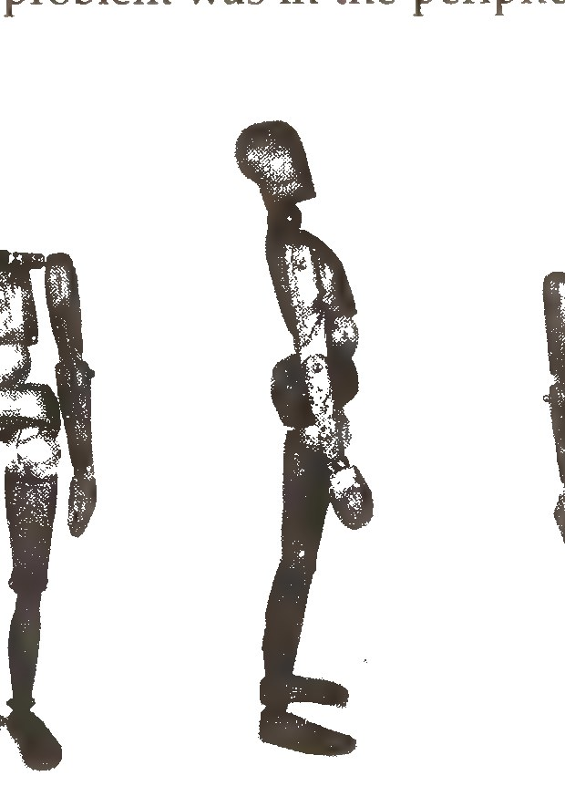
Hình 11
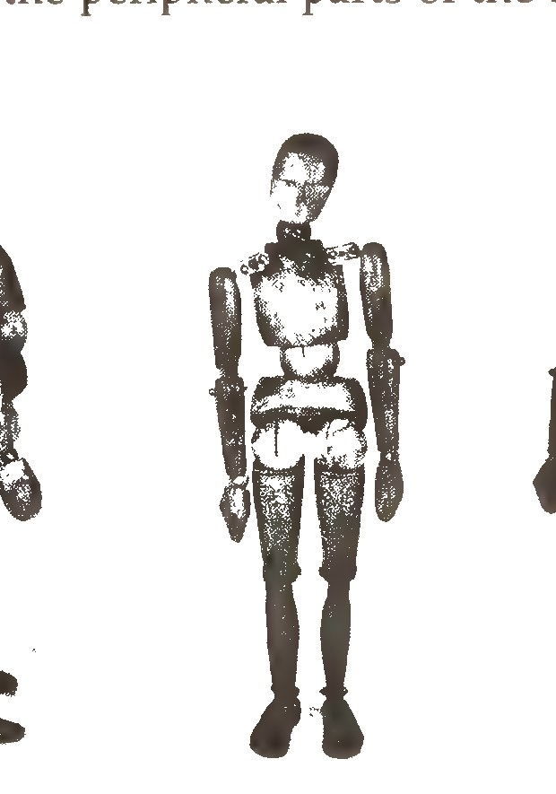
Hình 12
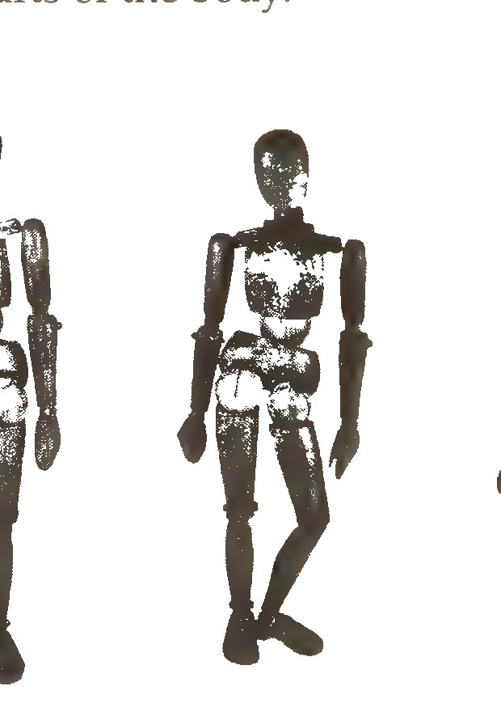
Hình 13

Hình 14
Vấn đề cụ thể ở hông của Barney là các cơ ở phía bên phải lưng ông bị co ngoài ý thức: toàn bộ lồng ngực bên phải bị kéo xuống về phía bên của xương chậu, gây ra tư thế nghiêng vẹo cột sống và cảm giác thăng bằng bị méo (xem Hình 10).
Vấn đề cụ thể ở lưng của James là các cơ cạnh cột sống lớn nối phần cột sống dưới và lồng ngực với xương chậu bị co ngoài ý thức: toàn bộ lồng ngực dưới bị kéo xuống thành đường cong như cái cung về phía sau xương chậu, cản trở cả việc đi lại lẫn động tác với tay của ông (xem Hình 11).
Vấn đề cụ thể ở vai của Louise là các cơ của đai vai vươn xuống phía bên phải thân mình bị co ngoài ý thức: toàn bộ khớp vai–cánh tay bị kéo xuống, phía trước và phía sau, về phía xương chậu trong một tư thế "đông cứng" (xem Hình 12).
Vấn đề cụ thể ở dáng đi khập khễnh và đầu gối cong của Harley là các cơ ở vùng thắt lưng bên trái của ông bị co kéo lên trên ngoài ý thức về chỗ bám của chúng ở lồng ngực và cột sống bên trái: toàn bộ hông và chân được giữ lên trên như bộ hạ cánh đã thu một nửa của máy bay (xem Hình 13).
Vấn đề cụ thể ở tư thế cúi gằm của Alexander là các cơ bụng nối ngực với xương mu và phần dưới của xương chậu bị co ngoài ý thức: toàn bộ thân mình ông bị kéo về phía trước và xuống dưới thành tư thế cúi gằm kinh điển của tuổi già (xem Hình 14).
Nhưng, trong cả năm trường hợp, vấn đề căn bản thực ra là như nhau: sự co cơ ngoài ý thức ở các cơ trong trung tâm trọng lực của cơ thể, ảnh hưởng đến ngoại vi của cơ thể; hoặc sự co cơ ngoài ý thức ở ngoại vi cơ thể, gây ra một cơn co bù trừ ở trung tâm trọng lực. Trong cả năm trường hợp, những cơ mạnh mẽ nối cột sống và lồng ngực với xương chậu chính là nguồn gốc của vấn đề cụ thể của mỗi người.
Hông của Barney, lưng của James, vai của Louise, dáng đi khập khễnh của Harley và tư thế cúi gằm của Alexander là những biểu hiện khác nhau của cùng một sự kiện: những cơn co cơ mạn tính ở trung tâm cơ thể, mà họ không thể cảm nhận cũng không thể kiểm soát, và có liên hệ trực tiếp với những cơn co mạn tính ở ngoại vi cơ thể.
Cuối cùng, cần nhớ rằng, trong cả năm bệnh án, chính nhờ trở nên có ý thức về cảm giác và các cử động tự nguyện ở trung tâm cơ thể mình mà những người này đã vượt qua được các cơn co phản xạ tự động và vô ý thức do SMA gây ra.
5. Nhìn Từ Bên Trong Và Theo Chức Năng, SMA Là Một Vấn Đề Somatic Duy Nhất; Nhìn Từ Bên Ngoài Và Theo Cấu Trúc, SMA Là Một Vô Số Vấn Đề Y Học Bí Ẩn.
Như tôi đã chỉ ra trước đó, tuổi tác không phải là nguyên nhân của bất cứ điều gì, dù lành mạnh hay không lành mạnh. "Tuổi tác" là một thuật ngữ trung tính, cũng như "sự sống": sống là già đi. Tuy nhiên, trong giới y học và trong nghiên cứu y học, chữ tuổi tác lại có một ý nghĩa bí ẩn. Dù theo định nghĩa, chữ này chẳng có ý nghĩa bệnh lý nào cả, nhưng trong cách dùng y khoa, nó lại mang ý nghĩa bệnh lý mạnh mẽ: nó là nguyên nhân bí ẩn, không rõ ràng của mọi triệu chứng bí ẩn ở người cao tuổi mà người ta không thể chẩn đoán hay điều trị hiệu quả. "Bác sĩ ơi, sao tôi không được giúp đỡ vậy?" "Ồ, ông không trẻ hơn được nữa đâu. Sau một thời gian, mọi thứ bắt đầu hỏng hóc. Đó đại loại là điều ông nên mong đợi ở tuổi của mình."
Đây, dĩ nhiên, là vô nghĩa. Tuổi tác chẳng liên quan gì đến hàng trăm vấn đề mà người ta đổ lỗi cho nó. "Tuổi tác" là một bệnh lý ngụy trang. Đằng sau sự bí ẩn là sự thiếu hiểu biết, mà phần lớn là sự thiếu hiểu biết về tình trạng somatic của chứng quên cảm giác–vận động.
Năm bệnh án này là nguyên mẫu của hàng triệu bệnh án và của những triệu chứng điển hình xảy ra khắp nơi trên thế giới mỗi ngày. Trong suốt 12 năm, tôi đã ghi chép lại một số than phiền mà các thân chủ có khi họ lần đầu đến gặp tôi. Tất cả đều có liên hệ rõ ràng với các cơ trung tâm của cơ thể, và tất cả đều được giải quyết khi những cơ này không còn kìm hãm các vùng cơ thể khác mà chúng ảnh hưởng. Trong mọi trường hợp, SMA là vấn đề somatic duy nhất nằm ở nguồn gốc của vô số triệu chứng bí ẩn ấy.
Ngoài những cơn đau ở bàn chân, ngón chân, chân, mông, ngực, cánh tay, bàn tay, lưng, cổ và hàm, các thân chủ của tôi còn báo cáo những triệu chứng như đau thần kinh tọa ở chân, đầu gối sưng, giãn tĩnh mạch, mắt cá chân yếu dễ bị xoay quá mức, mắt cá chân cứng không xoay được, chuột rút ở chân, tê bì hoặc "kim châm" ở bàn tay, đau đầu do căng cơ mạn tính, ù tai, đau mắt, thở nông, táo bón, đi tiểu thường xuyên, co thắt niệu đạo, viêm khớp, và hạn chế cử động của đầu. Tất cả những than phiền của họ đều mang tính mạn tính, tất cả đều không đáp ứng với các phương pháp điều trị y khoa và cận y khoa, và tất cả đều được giải quyết khi SMA được dọn sạch.
Xin lưu ý rằng tôi không nói là tất cả họ đều đã được "chữa khỏi". Chữa khỏi là một thủ tục y học không có ý nghĩa gì đối với SMA. Chữa khỏi và điều trị là những gì được làm cho một người bệnh thụ động — một công trình kỹ thuật từ bên ngoài đi vào bên trong. Việc ghi nhớ lại cảm giác–vận động là một quá trình giáo dục, do chính người đó chủ động thực hiện — một thành tích somatic nội tại đi từ trong não bộ đến hệ thống cơ bắp.
Tất cả những than phiền kể trên đều là những gì các thân chủ cảm nhận và mô tả. Đó không phải là những gì bác sĩ và các chuyên gia y tế khác mô tả. Họ đã được các chuyên gia y khoa chẩn đoán là bị đau dây thần kinh, vẹo cột sống, gù lưng, ưỡn cột sống quá mức, viêm khớp, viêm bao hoạt dịch, viêm xương khớp, loãng xương, hẹp ống sống, gai xương, hội chứng ống cổ tay, đĩa đệm bị ép, đĩa đệm bị phình, đĩa đệm bị trượt, đĩa đệm bị thoát vị, đĩa đệm thoái hóa, đĩa đệm bị trật, rối loạn lo âu hóa thân, phản ứng dị ứng, chấn thương sau phẫu thuật, và, cuối cùng, "cơn đau không thể chẩn đoán".
Từ quan điểm y học, việc những than phiền, sau khi được chẩn đoán như vậy, vẫn tiếp diễn dù đã điều trị có nghĩa là chúng "không thể chữa khỏi" và do đó là lỗi của tuổi già. Nhưng, từ quan điểm somatic, đây mới chỉ là phần một của một cuộc điều tra gồm hai phần, phần thứ hai cho thấy chứng quên cảm giác–vận động — đặc biệt là ở các cơ trong trung tâm trọng lực của cơ thể — chính là nguyên nhân của những vấn đề chức năng này. Những vấn đề chức năng như vậy không thể được "chữa khỏi" bằng "điều trị"; nhưng chúng có thể được kiểm soát bằng cách học lại. May mắn thay, đó chính là điều đã xảy ra cho hàng ngàn người với những than phiền và chẩn đoán được liệt kê ở trên.
Chương 6 — Teo Cơ: Vai Trò Của Sự Buông Xuôi Dần Dần
Không có lời khuyên nào nguy hiểm hơn thế này: "Giờ ông đã lớn tuổi rồi, ông nên chậm lại một chút." Đây là con đường dẫn thẳng đến sự tàn tạ. Lời khuyên như vậy không chỉ làm suy yếu; nó còn nguy hiểm đến tính mạng.
Một phần của huyền thoại truyền thống về lão hóa là tuổi càng cao thì hoạt động thể chất càng phải giảm. Nhưng sự khôn ngoan dân gian có thể sai lầm sâu sắc. Trong trường hợp này, nó lại giúp mang lại chính sự mất mát sức khỏe mà nó tưởng tránh được.
Sự thật thì rất khác. Nếu bạn muốn găm một câu châm ngôn lên tường, hãy găm câu này: "Chức năng duy trì cấu trúc." Câu châm ngôn phổ biến hơn là "Dùng thì còn, bỏ thì mất." Lời khuyên này đúng về mặt giải phẫu, sinh lý và thần kinh học.
Ví dụ, nếu xương của ta không được thường xuyên dùng để chịu những trọng lượng đáng kể và chịu đựng những lực mạnh, chúng sẽ trở nên mềm. Nếu cơ của ta không được thường xuyên dùng trong những hoạt động thử thách và đòi hỏi kỹ năng, chúng sẽ yếu đi và đáp ứng kém hơn. Nếu các tế bào não của ta không được tham gia một cách có hệ thống vào nhiều hoạt động tự nguyện đa dạng, chúng sẽ thoái hóa.
Sự mềm đi, yếu đi và thoái hóa các nguồn lực của ta diễn ra dần dần và âm thầm — không phải vì lão hóa, mà vì những gì ta ngừng làm khi ta già đi.
Những người tin rằng họ nên nhẹ nhàng hơn khi già đi là đang tự lừa dối; họ là những người đang đầu hàng các chức năng sống của mình từng chút một.
Đối với hầu hết mọi người, hành động trưởng thành, chín chắn và ổn định vào cuộc sống người lớn là một hành động suy thoái. Đó là một hành động có chủ đích, và thường được tính toán kỹ, của việc dần dần từ bỏ những khả năng chức năng đã đạt được trong quá trình trưởng thành.
Sự trưởng thành là một quá trình học hỏi dài, trong đó một vốn các chức năng được xây dựng lên, cho phép ta sống trọn vẹn cuộc đời. Nhưng thường thì chuyện đó không xảy ra. Vừa mới có được vốn chức năng hữu ích, ta đã ngừng dùng chúng — một trường hợp của sự lỗi thời được lên kế hoạch. Thật trớ trêu khi quá nhiều người phàn nàn về sự hỏng hóc của tủ lạnh và ô tô, đổ lỗi cho nhà sản xuất vì cố tình cài đặt sự hao mòn vào sản phẩm của họ, nhưng chính cơ thể họ lại thường hỏng hóc vì sự hao mòn có chủ đích được cài sẵn trong lối sống của họ.
Quả thật, một phần của Giấc mơ Mỹ là "đạt được thành quả", với sự hiểu ngầm rằng một người "đạt được thành quả" là người đã đạt đến địa vị của việc không làm gì cả — của sự thụ động. Một thân thể mặc đồ tắm bên hồ bơi, nằm bất động trên ghế tắm nắng, chính là hình ảnh người Mỹ về "đạt được thành quả". Tuy nhiên, ta không nên quên rằng đây cũng là hình ảnh của một cái xác chết.
Trở thành người lớn có nghĩa là ta không còn phải làm những việc ta từng làm khi còn nhỏ. Trẻ con chạy, còn ta người lớn đi bộ. Trẻ con leo trèo, còn ta đi thang máy. Trẻ con chui dưới bụi cây, còn ta đi vòng qua chúng. Trẻ con đứng trên đầu, còn ta ngồi bằng mông. Trẻ con lăn trên mặt đất, còn ta trở mình trên nệm. Trẻ con nhảy lên nhảy xuống, còn ta nhún vai lên xuống. Trẻ con cười rộn rã, còn ta mỉm cười kín đáo. Trẻ con tràn đầy sức sống, còn ta thì cẩn trọng. Trẻ con muốn vui chơi, còn ta muốn an toàn.
Tóm lại, trở thành một người lớn thành đạt có nghĩa là ngừng hành xử như trẻ con. Dấu hiệu thông thường của tuổi trưởng thành là ngừng vận hành như một người trẻ. Nhưng quan niệm này về tuổi trưởng thành có một hệ quả không tránh khỏi: Ngay khi ta ngừng dùng các chức năng ấy, ta mất chúng. Và ta mất chúng vì não của ta, một cơ quan thích nghi cực kỳ nhạy bén, điều chỉnh theo sự thiếu hoạt động này.
Nếu một số hành động không còn nằm trong danh mục hành vi của ta, não ta sẽ gạch bỏ chúng. Nói một chữ: nó quên. Nhận thức thực tế, hằng ngày về cảm giác của những hành động đó và cách chúng được thực hiện phai nhạt đi, và SMA là kết quả.
Nghiên Cứu Sinh Lý Và Giải Phẫu Về Lão Hóa Và Hoạt Động Thể Chất
Giờ đây ta biết đó là một sự thật rằng, khi một người già đi, hoạt động thể chất trở nên cần thiết hơn, chứ không phải ít đi. Trong một nghiên cứu kéo dài 10 năm với 268 người trên 60 tuổi, Palmore báo cáo rằng mức độ và tần suất ốm đau liên quan trực tiếp đến sự thụ động thể chất hơn là đến những yếu tố được nhắc đến nhiều như hút thuốc và thừa cân. Những người không hoạt động thể chất có khả năng phải nằm giường ít nhất 14 ngày mỗi năm cao gấp hai lần rưỡi so với những người năng hoạt động thể chất!
Trong cùng nghiên cứu dọc dài 10 năm đó, Palmore đã khám phá ra một điều quan trọng không kém: những người không hoạt động thể chất có khả năng đánh giá sức khỏe của mình là kém gấp bốn lần so với những người năng động. Tệ hơn, những người cao tuổi lười biếng này có khả năng báo cáo sức khỏe suy giảm khi đi khám định kỳ cao gấp đôi. Tệ hơn nữa, hơn 50 phần trăm trong số những người không hoạt động ấy đã chết sớm hơn dự kiến theo thống kê bảo hiểm, so với tỷ lệ từ một phần tư đến một phần ba ở những người có nhiều hoạt động vận động. Vì thế, khi ta thu hẹp phạm vi hoạt động thể chất, ta cũng làm giảm cơ hội có sức khỏe và sống thọ.
Nhiều nghiên cứu khác cụ thể hơn về tác dụng của các hoạt động thể chất đều đặn. Tại Los Angeles, ở Trung Tâm Lão Học Andrus, DeVries báo cáo rằng một chương trình rèn luyện thể chất được lên kế hoạch tốt dẫn đến cải thiện chức năng tim mạch. Tim hoạt động tốt hơn, tải lượng huyết áp được giảm, căng thẳng thần kinh giảm, làm huyết áp trở nên bình thường hơn, và
tỷ lệ mỡ trong cơ thể giảm xuống, làm giảm xác suất thống kê bị đau tim.
Tạp chí Journal of Gerontology đã báo cáo về các tác động sinh lý của một chương trình huấn luyện sức bền kéo dài một tháng, được tiến hành với một nhóm có tuổi trung bình là 70. Kết quả: Giảm stress tuần hoàn, được chứng minh bằng sự giảm mạch khi làm việc, huyết áp tâm thu sau khi tập, và nồng độ lactate trong máu. Barry, Steinmetz, Page và Rodahl, cùng những người khác, những người đã tiến hành thí nghiệm này, nhận thấy khi kết thúc rằng giới hạn tải lượng công việc của những công dân 70 tuổi này cao hơn 76 phần trăm so với một tháng trước đó! Thêm vào đó, các đối tượng cho thấy sự hấp thụ oxy và thông khí phổi được cải thiện, cũng như sự cải thiện huyết áp tâm thu và mức lactate trong máu sau khi tập. Những phát hiện tương tự đã được báo cáo trong nhiều nghiên cứu khác được công bố trên Journal of Gerontology, Journal of the American Geriatrics Society, và các tạp chí khác.
Nhà nghiên cứu người Anh, E. J. Bassey, khẳng định dứt khoát rằng, "Rõ ràng là việc tập luyện có thể cải thiện thể trạng và năng lực tối đa của người cao tuổi." Ông tiếp tục nói rằng một chương trình tập luyện thể chất, tự thân nó, "... sẽ không mang lại lợi ích lâu dài trừ khi nó xúc tác một sự thay đổi sang lối sống năng động hơn, bao gồm một lượng vận động tự phát phù hợp." Điều này, dĩ nhiên, có nghĩa là một lối sống năng động hơn so với lối sống mà người lớn thường chọn trong những năm trung niên, đặc biệt là sau thời điểm quan trọng là khi họ nghỉ hưu.
Ngoài nghiên cứu của Mỹ và Anh, còn có một lượng nghiên cứu đáng kể của Liên Xô về tác dụng của việc tập luyện đối với người cao tuổi. Các nhà khoa học Liên Xô đã phát hiện rằng cơ thể con người vẫn duy trì được chức năng cao và khả năng thích nghi miễn là nó được đưa ra những thử thách phù hợp mà nó có thể đáp ứng. Khi điều đó xảy ra, sẽ có những tác động tích cực đến tuyến thượng thận, hóa sinh máu, chuyển hóa carbohydrate, hệ tim mạch, hệ hô hấp, và hệ thần kinh.
Ở cấp độ giải phẫu, các nghiên cứu của Smith và Reddan tại một viện dưỡng lão dành cho phụ nữ đã cho thấy các bài tập thể chất đều đặn làm chậm mất xương và thúc đẩy tích lũy xương. Đây là một phát hiện quan trọng, bởi vì nỗi sợ gãy xương, đặc biệt là gãy hông, thường thúc đẩy phụ nữ cao tuổi trở nên cẩn trọng trong các hoạt động vận động của mình. Trái lại chính là sự bảo vệ tốt nhất cho họ.
Theo cùng hướng đó, Erickson đã nghiên cứu mối quan hệ giữa tính linh hoạt của khớp và hoạt động thể chất. Ông phát hiện rằng màng lưới collagen trong các mô liên kết sẽ co lại nếu không được kéo giãn thường xuyên. Một lần nữa, việc duy trì phạm vi hoạt động thể chất rộng rãi ngăn ngừa cứng khớp và do đó ngăn ngừa hạn chế vận động. Tóm lại, và hoàn toàn tách riêng với SMA, cả chức năng lẫn cấu trúc của cơ thể con người đều suy giảm trừ khi hoạt động thể chất được duy trì liên tục.
Nghiên Cứu Thần Kinh Về Lão Hóa Và Não Bộ
Như câu đố của Sphinx cho thấy rõ, chính sự mất kiểm soát vận động thể chất đã khơi nguồn cho huyền thoại về lão hóa. Trong những năm trung niên, ta thường nhận thấy sự bắt đầu suy giảm hiệu suất vận động, bao gồm cử động chậm hơn, sức mạnh giảm, và mất sự phối hợp vận động tinh tế.
Gần một thế kỷ nay, điều này đã được giải thích một cách khoa học là thuộc về thần kinh học. Vào những năm 1890, Hodge, một nhà thần kinh học, đã đếm số nơ-ron trong não của người trẻ và người già. Kết luận của ông là: "Khi công việc của cuộc sống được thực hiện, các tế bào, từng cái một, bị hao mòn. Đến một giai đoạn chỉ còn lại đủ số tế bào để tiếp tục các tiến trình cần thiết cho sự sống... ."
Hóa ra điều này không đúng; nhưng, đáng tiếc là, các nghiên cứu sau đó đã không sửa chữa sự hiểu lầm phổ biến này. Người ta vẫn tìm thấy những nhận định, trong cả sách giáo khoa đại học lẫn các ấn phẩm đại chúng, đại loại rằng ngay sau thời thơ ấu, não bắt đầu mất đi nguồn nơ-ron cố định của nó và sự mất mát này tiếp diễn cho đến hết cuộc đời. Thông tin như vậy củng cố huyền thoại về lão hóa và dẫn ta đến niềm tin u sầu rằng mỗi ngày trong cuộc đời, hàng ngàn tế bào não đang trôi ra khỏi đầu ta khi ta ngày càng mất cả năng lực tinh thần lẫn thể chất.
Cuối cùng người ta phát hiện ra rằng công việc đếm khoảng 100 tỷ nơ-ron ước tính của não đòi hỏi một trình độ tinh vi khoa học cao hơn nhiều so với cái mà Hodge có được vào những năm 1890. Công việc này phức tạp đến mức ngay cả công nghệ kính hiển vi và máy tính tiên nhất cũng không giải được câu đố ấy.
Cuốn The Aging Motor System tổng kết toàn bộ các nghiên cứu đã làm về lão hóa và não bộ. Trong đó, câu hỏi về các báo cáo nghiên cứu về sự mất nơ-ron được đề cập trực diện: "Kết luận chung có thể rút ra từ loạt báo cáo này là hiện tại chưa có kết luận chung nào về sự mất nơ-ron khi về già."
Được các nhà nghiên cứu Curcio, Buell và Coleman trình bày đầy đủ hơn, điều này có nghĩa là
Khi các dữ liệu định lượng khách quan tích lũy với tốc độ ngày càng nhanh, rõ ràng là những suy giảm liên quan đến tuổi tác không phải là phổ biến hay không tránh khỏi. Một số khía cạnh của hiệu suất không suy giảm; sự mất nơ-ron theo tuổi không được tìm thấy ở mọi vùng của hệ thần kinh; không phải nơ-ron nào cũng teo; không phải hệ dẫn truyền nào cũng suy giảm; một số chỉ số thần kinh không cho thấy sự sụt giảm; và một mức độ nào đó của tính dẻo thần kinh vẫn được duy trì ở hệ thần kinh già nua.
Nhận định này càng làm tăng độ tin cậy cho quan điểm của riêng tôi.
Trong cùng cuốn sách này, Lars Larsson xem xét chủ đề "Lão Hóa Ở Cơ Xương Ở Động Vật Có Vú". Ông phân định ba cấp độ cần được kiểm tra về tác động của lão hóa đối với chức năng cơ bắp: não bộ, các nơ-ron vận động dẫn truyền xung thần kinh từ não đến cơ, và bản thân cơ. Để giải thích sự suy giảm vận động đang hành hạ nhiều người cao tuổi, ông kết luận rằng "những yếu tố quan trọng nhất dường như là sự giảm hoạt động xung thần kinh liên quan đến việc không dùng dần dần, cùng với sự suy giảm chức năng và sự mất mát sau đó của các nơ-ron vận động." Điều ông nói là sự giảm xung thần kinh từ não, cùng với việc cơ ngày càng không được sử dụng, dẫn đến suy giảm chức năng cơ cũng như của các nơ-ron vận động liên quan trực tiếp.
Như vậy, vấn đề bắt nguồn từ sự không thể gửi xung thần kinh của não bộ.
Larsson nói chung đang đề cập đến điều mà tôi mô tả cụ thể là tình trạng chứng quên cảm giác–vận động.
May thay, SMA có thể được điều chỉnh. Ba biên tập viên của The Aging Motor System thấy ba cách để phòng ngừa và điều trị sự mất mát chức năng này: bằng thuốc, bằng huấn luyện lại hành vi, và bằng việc duy trì thể lực. Họ thấy một số khả năng trong điều trị bằng thuốc cần được khám phá thêm. Họ cũng thấy một số kỹ thuật huấn luyện hành vi như một cách để học lại các kỹ năng vận động; nhưng họ kết luận rằng, "cuối cùng, việc duy trì thể lực thông qua một lối sống tập luyện hằng ngày có thể mang lại một phương pháp rẻ tiền và an toàn để ngăn ngừa sự suy giảm hiệu suất vận động và tinh thần."
Tóm lại, những hiểu biết khoa học tốt nhất của chúng ta chỉ thẳng vào điều mà tôi đang đề xuất trong cuốn sách này: rằng nhiều vấn đề thể chất được cho là do tuổi già thực ra là những vấn đề chức năng do không sử dụng. Tôi mô tả điều này là chứng quên cảm giác–vận động, có tác động tạm thời và có thể được ngăn ngừa hoặc điều chỉnh bằng một chương trình tập luyện dựa trên thần kinh học như các Bài tập Somatic mà tôi trình bày ở Phần 3.
Chương 7 — Các Phản Xạ Cơ Bắp Của Stress
Hans Selye là một trong những nhân vật hàng đầu trong nghiên cứu y học thế kỷ hai mươi. Chính công trình nghiên cứu nội tiết học suốt nhiều thập kỷ của Selye đã dẫn đến việc ông xây dựng khái niệm stress, và nhận ra rằng có những "bệnh của sự thích nghi".
Việc Selye xây dựng hội chứng thích nghi chung (GAS) có lẽ là sự kiện đơn lẻ quan trọng nhất trong y học kể từ khi phát hiện ra thuyết mầm bệnh và sự phát triển của các loại thuốc kháng khuẩn. Ý nghĩa phi thường của nghiên cứu của Selye là nó đã đưa vào y học cái mà chúng ta gọi là một "khía cạnh somatic": cụ thể là quan điểm rằng các sự kiện tâm lý cũng quan trọng như các sự kiện sinh lý trong việc quyết định sức khỏe hay bệnh tật của con người.
Quan điểm somatic bao hàm cách mỗi người trong chúng ta nhìn nhận bản thân từ bên trong ra ngoài, và cách mà, từ quan điểm đó, sự khác biệt giữa tâm trí và thân thể biến mất. Từ bên trong mình, ta không nhận biết cái "thân thể" tự thân nó, mà nhận biết các cảm giác và tiến trình hoạt động của "thân thể" ấy.
Quan điểm somatic của Hans Selye đã mở rộng các chiều kích của nghiên cứu sức khỏe bằng cách nhấn mạnh tầm quan trọng đối với sức khỏe của những gì ta, từ bên trong mình, có thể làm để giảm tác động của stress bằng thái độ của chính ta và bằng cách ta kiểm soát cuộc đời mình. Sự nhấn mạnh này vào trách nhiệm tự thân là một dấu đặc trưng của quan điểm somatic.
Y học truyền thống nhấn mạnh quan điểm bên ngoài về những gì có thể làm cho thân thể cá nhân để cải thiện sức khỏe. Selye, trong khi hoàn toàn chấp nhận sự nhấn mạnh này, đã mở rộng các chiều kích của y học để đưa vào khả năng tự kiểm soát bên trong của mỗi cá nhân. Quan điểm somatic không làm mất đi gì của y học; nó bổ sung cho y học sự thừa nhận về sự tương tác giữa tâm và thân vốn có trong mọi bệnh của sự thích nghi. Đây là cách Selye diễn đạt điều đó:
Cuộc sống phần lớn là một tiến trình thích nghi với hoàn cảnh mà ta hiện diện. Một sự qua lại thường xuyên đã diễn ra giữa vật chất sống và môi trường vô tri của nó, giữa một sinh thể này và một sinh thể khác, ngay từ khi sự sống bắt đầu ở các đại dương tiền sử. Bí mật của sức khỏe và hạnh phúc nằm ở sự điều chỉnh thành công trước những điều kiện không ngừng thay đổi trên hành tinh này; cái giá phải trả cho sự thất bại trong tiến trình thích nghi vĩ đại ấy là bệnh tật và bất hạnh.
Nhưng, ngoài sự tiến hóa chung của sự sống này, còn có một loại tiến hóa khác diễn ra ở mỗi người trong suốt cuộc đời họ, từ lúc sinh đến lúc chết: đó là sự thích nghi với những stress và căng thẳng của cuộc sống hằng ngày. Thông qua sự tương tác không ngừng giữa các phản ứng tinh thần và thể chất của mình, con người có trong tay quyền năng ảnh hưởng đáng kể đến loại tiến hóa thứ hai này, đặc biệt nếu họ hiểu được cơ chế của nó và có đủ ý chí để hành động theo chỉ dẫn của trí tuệ con người.
Quan điểm của Selye diễn đạt rất trọn vẹn góc nhìn của riêng tôi. Thực ra, định nghĩa của ông về stress là thiết yếu để hiểu chủ đề của cuốn sách này: "Theo nghĩa y khoa, stress về bản chất là tốc độ hao mòn của cơ thể." Bản thân stress không tốt cũng không xấu; nó là "phản ứng không đặc hiệu của cơ thể trước bất kỳ yêu cầu nào." Sống có nghĩa là cơ thể ta liên tục bị đưa ra các yêu cầu; vì thế, cách ta đáp ứng và thích nghi với những yêu cầu đang diễn ra ấy sẽ quyết định cơ thể ta chịu đựng tốt đến đâu trước các yêu cầu của cuộc sống.
Nhưng, bạn sẽ nhận ra, nói về stress đơn giản là nói về bản chất của sự sống — về mức độ ta đối phó tốt với những yêu cầu hằng ngày đặt lên ta. Điều này có nghĩa là stress là một phần của bản chất lão hóa: cách ta đáp ứng với nó quyết định cách ta già đi. Selye đang đề cập đến cùng một câu hỏi chung mà ta đã thảo luận từ đầu. Quả thật, bằng cách diễn đạt lại những gì chúng ta đã trình bày cho đến đây, ta có thể nói rằng, "Theo nghĩa y khoa, những gì ta từ lâu vẫn coi là tác động của lão hóa về bản chất là tốc độ hao mòn của cơ thể." Cái gọi là "bệnh của lão hóa", như chúng tôi đã khẳng định, phần lớn là "bệnh của sự thích nghi". Hơn nữa, ta có quyền năng ảnh hưởng đến tốc độ hao mòn này nếu ta có "đủ ý chí để hành động theo chỉ dẫn của trí tuệ con người".
Nghiên cứu của Hans Selye đã thành công trong việc mở rộng các chiều kích của y học bằng cách cho thấy những tác động mà stress có thể có lên hệ nội tiết khi nó đáp ứng thích nghi trước một yêu cầu nào đó đặt lên toàn bộ hệ thống cơ thể. Trong hội chứng thích nghi chung của mình, ông mô tả phản ứng này gồm ba giai đoạn: phản ứng báo động, giai đoạn kháng cự, và giai đoạn kiệt sức.
Gần như bất kỳ sự kiện nào cũng có thể gây ra phản ứng báo động — từ việc chạy một dặm, đến thức trắng đêm, đến một cuộc cãi vã dữ dội, hoặc đến việc mắt thích nghi từ ánh sáng mờ của rạp chiếu phim ra ánh nắng chói chang ngoài trời. Yêu cầu đặt lên hệ thống mang lại một sự điều chỉnh bảo vệ; ví dụ, sự kích thích tuyến thượng thận: dịch tiết epinephrine và norepinephrine của tuyến này đánh thức và huy động các nguồn lực sinh học của cơ thể để chống lại yếu tố gây stress. Thường thì đây là giới hạn của phản ứng stress. Nhưng, nếu thời kỳ kháng cự kéo dài quá lâu, làm cạn kiệt dần nguồn lực kháng cự của cơ thể, sẽ đến một giai đoạn mà những nguồn lực ấy cạn sạch. Khi đó, một sự sụp đổ thực sự có thể xảy ra.
GAS là một tiến trình không tránh khỏi và bình thường đã được Selye ghi lại trong khoảng 30 cuốn sách. Nghiên cứu của Selye tập trung chủ yếu vào hệ tuyến
nói chung chỉ đề cập đến tác động của stress lên hệ thần kinh–cơ. Ông nhận ra rằng, khi ta chịu stress, sự gia tăng căng cơ là không tránh khỏi, và đã đề xuất nhiều thái độ và thực hành thư giãn có thể giúp giảm bớt điều đó. Nhưng nghiên cứu của ông không chỉ ra chính xác những sự kiện thần kinh–cơ nào xảy ra cùng với stress.
Trong suốt 12 năm hành nghề với tư cách là một nhà giáo dục somatic, tôi đã có nhiều dịp quan sát những tác động cụ thể của stress lên hệ thần kinh–cơ. Những phát hiện của tôi, được trình bày trong hai chương tới, giúp hoàn thiện thêm những khám phá ban đầu của Selye về phản ứng stress — cụ thể là khía cạnh sinh hóa của stress. Bằng cách nhìn kỹ hơn vào phản ứng stress, chúng ta sẽ khám phá ra rằng nó cũng có một khía cạnh cảm giác–vận động, có tầm quan trọng ngang bằng với khía cạnh sinh hóa mà Selye đã khám phá.
Điều tôi phát hiện ra là hệ thần kinh–cơ có hai phản ứng cơ bản đối với stress, cả hai đều tập trung ở giữa cơ thể con người, tại trung tâm trọng lực của nó. Hai phản ứng cơ bản này khác nhau vì chúng là hai dạng stress rất khác biệt — những gì Selye phân biệt là distress (stress tiêu cực) và eustress (stress tích cực).
Sự thích nghi thần kinh–cơ đối với stress tiêu cực kéo dài ("distress") là phản ứng rút lui, xảy ra chủ yếu ở phía trước cơ thể. Sự thích nghi thần kinh–cơ đối với stress tích cực kéo dài ("eustress") là phản ứng hành động, xảy ra ở phía sau cơ thể. Dễ hình dung phản ứng rút lui như phản xạ Đèn Đỏ. Phản ứng hành động có thể được coi là phản xạ Đèn Xanh. Tôi thảo luận về phản xạ Đèn Đỏ trong chương tới. Phản xạ Đèn Xanh là chủ đề của Chương 9, và phản xạ chấn thương, có phần khác biệt, được thảo luận ở Chương 11.
Chương 8 — Phản Xạ Đèn Đỏ: Cơ Bụng Và Phản Ứng Rút Lùi
Thật ngạc nhiên là một phản xạ duy nhất của não dưới lại có thể là nguyên nhân của nhiều thay đổi cơ thể như thế — những thay đổi gắn liền với lão hóa. Điều này cũng mang tính khai sáng, vì nó giúp chúng ta vừa hiểu vừa vượt qua được huyền thoại về lão hóa.
“Với việc nuôi ba đứa con, chăm sóc ngôi nhà và chồng mình, thì đương nhiên là tôi có những vết chân chim ở bên mắt rồi” — một người vợ nói.
“Nếu bạn muốn biết cảm giác ấy như thế nào — lo liệu một ngôi nhà, một người vợ và nuôi ba đứa con — thì cứ nhìn những nếp nhăn trên trán tôi. Đó là điều mà sự lo âu sẽ làm cho bạn” — một người chồng nói. Cả hai vợ chồng đều làm chứng cho cùng một phản xạ cổ xưa ấy.
“Tôi bắt đầu có một cái gù nhỏ ở sau gáy, giống hệt bác tôi. Đó có phải là cái gù lưng của bà lão (dowager's hump) không? Và cái đầu tôi thì: nó luôn rủ về phía trước. Trông nó thật kinh khủng, như của một ông lão. Anh có làm được gì về chuyện đó không?”
Đó là một biểu hiện của cùng phản xạ não dưới ấy.
“Tôi thật sự mong anh có thể làm gì đó cho vai tôi. Vợ tôi bảo chúng bị trĩ xuống. Trước đây tôi có một cái ngực khá to, giờ thì gần như không còn thấy nữa, nó phẳng thế mất rồi.” Những hệ quả của phản ứng rút lui qua nhiều năm đã tạo ra điều đó.
“Anh biết không, tôi chưa đầy 60 tuổi mà đã đứng cúi người về phía trước rồi. Hôm nọ tôi thấy trong ô kính của một cửa hàng hình ảnh một ông lão cúi xuống như cần một cây gậy. Rồi tôi nhận ra đó là chính mình!” Điều ông thấy là một sự phản chiếu của phản xạ Đèn Đỏ.
“Vấn đề của tôi là tôi không còn thở được nữa. Trước đây tôi có thể leo lên các bậc thềm đến cửa trước nhà mà chẳng nghĩ ngợi gì. Giờ tôi phải dừng lại để lấy hơi. Chuyện gì đang xảy ra với tôi vậy? Phổi tôi bắt đầu teo lại rồi sao?” Một lần nữa, đây chính là phản xạ ấy, được gợi ra quá thường xuyên và quá quen thuộc đến mức trở thành một thói quen vô ý thức. Chỉ có hệ quả của nó là được nhận biết.
“Tôi đã hoạt động suốt đời, và trước đây tôi có thể đi bộ vượt qua bất cứ ai. Nhưng có điều gì đó đã xảy ra với đùi tôi: Chúng đau nhức suốt. Và đầu gối tôi cũng vậy. Chúng đau khi tôi ngậy dậy vào buổi sáng.” Đây cũng là những hệ quả của phản xạ rút lui.
Trong nhiều thập kỷ, các nhà sinh học thần kinh đã bị cuốn hút bởi phản xạ ở người này, vì nó xuất hiện trong toàn bộ vương quốc động vật. Đôi khi nó
được gọi là “phản ứng giật mình”; vào những dịp khác nó được gọi là “phản ứng thoát thân,” vì nó giúp con vật tránh né hoặc lảng tránh một mối đe dọa. Đó là một phản xạ nguyên thủy của sự sinh tồn. Hoạt động của nó trong hệ thần kinh trung ương thường được trung gian hóa bởi những sợi thần kinh “khổng lồ” đủ lớn để cho xung thần kinh truyền đi nhanh hơn. Đó là một “hành động vận động nhanh” được cài đặt sẵn trong mạch của ngay cả những sinh vật rất đơn giản, giúp chúng sống sót bằng cách rút lui nhanh chóng khỏi nguy hiểm.
Khi bạn chạm vào một con hải quỳ, vòng xúc tu nhỏ của nó co lại ngay, rút lui khỏi kích thích đe dọa. Một con giun đất thông thường thể hiện phản ứng rút lui ngay lập tức khi cơ thể nó bị chạm bằng một que thăm. Con ruồi phiền phức nhưng khôn khéo thì đợi cho bạn gần như chạm tới nó rồi mới đột ngột lùi đi, né cái vỗ ruồi của bạn. Ngưỡng nguy hiểm của nó rất cao. Cá đáp trả bằng những cú lao nhanh, và tôm hùm đất thì bằng một cú vẫy đuôi bất ngờ.

Hình 15a: Phản ứng rút lui — Nhìn từ bên

Hình 15b: Phản ứng rút lui — Nhìn từ trước
Tất cả các loài động vật có vú đã được nghiên cứu đều thể hiện phản ứng rút lui (xem Hình 15a và 15b). Ngay cả ở những động vật phức tạp này, phản xạ vẫn nhanh và hiệu quả. Và ở loài động vật có vú phức tạp nhất, con người, phản ứng rút lui nhanh đến kinh ngạc. Nếu một người phụ nữ đang đi trên phố nghe tiếng nổ bất ngờ của ống xả ô tô, thì điều xảy ra là: Trong vòng 14 mili-giây, các cơ ở hàm cô bắt đầu co lại; ngay sau đó, khoảng 20 mili-giây sau, các cơ ở mắt và lông mày cô co lại. Nhưng, trước khi mắt cô kịp nhắm chặt,
các cơ ở vai và cổ cô (cơ thang) đã nhận được một xung thần kinh ở 25 mili-giây để co lại, nâng vai cô lên và kéo đầu cô về phía trước. Ở 60 mili-giây, khuỷu tay cô gập lại, rồi bàn tay cô bắt đầu xoay lòng bàn tay xuống dưới. Những xung thần kinh đi xuống này tiếp tục bằng cách co cơ bụng, kéo thân mình cô về phía trước, đồng thời kéo lồng ngực xuống và làm ngưng hơi thở của cô. Và, ngay sau đó, đầu gối cô gập lại và hướng vào trong, trong khi mắt cá chân lật bàn chân cô vào trong. Các cơ ở vùng bẹn thắt lại, và các ngón chân nhấc lên. Đây là sự tóm tắt của phản xạ Đèn Đỏ — sự rút lui của cơ thể khỏi nguy hiểm. Cơ thể được gập lại và cụm xuống, gần như sẵn sàng ngã và cuộn tròn thành tư thế bào thai.
Dòng thác xung thần kinh này bắt đầu ở mặt, rồi đi xuống cổ, rồi đến cánh tay và thân mình, và cuối cùng là đến chân và ngón chân. Tại sao lại có trình tự từ đầu trở xuống này? Vì xung phát ra từ thân não ở tầng thấp và đến các cơ vùng đầu sớm nhất, rồi mất thời gian để đi dọc theo các đường thần kinh xuống các bộ phận thấp hơn của cơ thể.
Phản ứng rút lui này, được con người chia sẻ với phần còn lại của vương quốc động vật, phát ra từ những vùng nguyên thủy của não sau — chính xác hơn, từ đường lưới-tủy bắt nguồn từ sự tạo lưới cầu não và hành não bụng. Như vậy, cơ chế của phản xạ này nằm sâu bên dưới sự kiểm soát của não trước, nơi khởi phát các hành động có ý thức, tự nguyện. Phản xạ rút lui không chỉ nguyên thủy hơn các hành động tự nguyện của ta, mà còn nhanh hơn nhiều. Nó xảy ra trước khi ta có thể nhận biết hay ức chế nó có ý thức. Nó là người bảo vệ nguyên thủy của ta, với phương châm là “Rút lui ngay, rồi mới suy nghĩ về chuyện đó sau.” Sinh tồn đòi hỏi một phản ứng tức thì. Ta không có sự xa xỉ được suy ngẫm dài dòng về mức độ nguy hiểm thực sự của mối đe dọa bất ngờ ấy.
Khi phản xạ Đèn Đỏ nhanh chóng chạy từ đầu xuống chân, nó gây ra sự co cơ ở chính những vùng tôi đã nhắc đến ở đầu chương: những vết chân chim và nếp nhăn trên trán, cái gù lưng của bà lão và cái đầu nhô ra trước, vai trĩ xuống và ngực phẳng, thân mình cúi gằm, hơi thở ngắn ngủm, và đầu gối đau nhức. Vì tất cả những điều này đều là những thay đổi cơ thể gắn với lão hóa, nên thật ngạc nhiên là chúng có thể do một phản xạ não dưới duy nhất gây ra.
Bằng cách nhận ra những hệ quả đã biết và được nghiên cứu kỹ của phản ứng rút lui, ta có thể đồng thời hiểu rõ hai vấn đề cực kỳ quan trọng: (1) những phản ứng cụ thể mà hệ thống thần kinh–cơ của ta tạo ra trước các điều kiện stress; và (2) nguyên nhân thực sự của những thay đổi cơ thể mà theo truyền thống và sai lầm người ta vẫn luôn đổ lỗi cho một căn bệnh hư cấu gọi là “lão hóa.”
Những Rối Loạn Chức Năng Do Phản Ứng Rút Lui Gây Ra
Phản xạ Đèn Đỏ là một phản ứng trước những sự kiện gây đau khổ. Đó là một phản ứng bảo vệ trước những sự kiện tiêu cực đe dọa ta, từ những lo ngại mơ hồ đến những nỗi lo âu mòn mỏi, đến những nguy hiểm lộ liễu. Phản ứng rút lui là một phản ứng thần kinh–cơ căn bản trước stress, cũng như hội chứng thích nghi chung của Selye là một phản ứng tuyến căn bản.
Thực ra, nó là một dạng cụ thể của phản ứng ấy: nghĩa là, một phản ứng bảo vệ trước những yếu tố gây stress tiêu cực.
Ví dụ, khi những nỗi lo kích hoạt phản ứng này, mắt và trán co lại, làm nhăn da. Nếu ta lo lắng đủ lâu, làn da ta sẽ nhăn vĩnh viễn. Khi những nỗi lo âu khiến các cơ ở cổ gập lại, khuôn mặt được đẩy ra phía trước trong không gian, khiến các cơ ở đáy cổ (quanh đốt sống cổ thứ bảy) phải co mạnh để nâng đỡ cái gánh nặng treo về phía trước ấy. Càng xảy ra thường xuyên, các cơ và mô mỡ quanh đốt sống cổ thứ bảy càng phát triển to và dày hơn, từ đó tạo ra cái gọi là gù lưng của bà lão.
Vai cũng vậy, mặt sau của vai được nối với cổ bởi chính các cơ thang. Khi những sự kiện gây đau khổ khiến ta lo âu, chúng gây ra phản xạ nâng và làm tròn xương bả vai về phía trước. Người ta không thể lo âu mà không co vai. Không thể nào nói “Oi Veh!” mà không nhấc vai lên. Đó là lý do những người lo âu mạn tính thường có vai và cổ đau nhức mạn tính. Nếu những nỗi lo nghiêm trọng ập đến một người từ sớm trong cuộc đời, thì vai cúi gằm sẽ xuất hiện sớm. Mức độ vai trĩ xuống và cổ co lại của một đứa trẻ là thước đo sự lo âu thời thơ ấu. Trong những năm thiếu niên đầy đau khổ, tư thế này rất phổ biến.
Như vậy, không phải “tuổi tác” gây ra những thay đổi cơ thể này — mà là sự đau khổ. Nó càng nhiều và kéo dài càng lâu, thì phản xạ Đèn Đỏ càng bộc lộ những hệ quả lâu dài. Không phải “tuổi tác” gây ra tư thế cúi gằm và hơi thở nông; mà là sự tích lũy phản ứng trước stress tiêu cực. Việc có gia đình, chăm sóc con cái, giữ một công việc, trả các hóa đơn và giải quyết những vấn đề hằng ngày của cuộc sống — tất cả đều là những nguyên nhân khiến ta trông già đi và cúi gằm, không leo lên được bậc thềm mà không hụt hơi và nghe thấy tim mình đập nhanh hơn.
Tư thế cúi gằm và hơi thở nông đi cùng nhau. Cả hai đều do sự co của cơ bụng gây ra. Cơ thẳng bụng là một bao cơ dài, khỏe, kéo dài từ điểm bám thấp ở xương mu và đường bẹn, vượt lên suốt phía trước ngực tận đến đường núm vú. Khi nó co, phần trên của lồng ngực bị kéo về phía trước và xuống dưới, còn xương mu thì bị kéo về phía trước và lên trên. Thân mình vì thế bị kéo vào đường cong gập của tư thế bào thai.
Sự co cơ bụng không chỉ ép lồng ngực xuống, mà còn ép toàn bộ nội dung của ổ bụng xuống, tạo áp lực lên các nội tạng. Điều này có nghĩa là khi cơ hoành nằm giữa lồng ngực và ổ bụng co lại trong lúc hít vào, và bắt đầu đi xuống về phía ổ bụng, thì hơi thở bị ngưng lại đột ngột. Chuyển động đi xuống như bơm của cơ hoành là cần thiết để tạo một áp suất âm trong khoang ngực nhằm hút không khí vào. Nhưng nếu các nội tạng bị chèn ép cản trở chuyển động đi xuống này, thì không có áp suất âm nào được tạo ra, và hơi thở trở nên không đầy đủ.
Khi ta bắt đầu hiểu cách các sự co cơ của phản xạ Đèn Đỏ gây ra những rối loạn chức năng của cơ thể, ta có được một góc nhìn khác về một số
“bệnh tật thường gặp của tuổi già.” Không chỉ sự co bụng này gây thở nông, nó còn tạo ra những vấn đề khác. Áp lực lên các nội tạng ảnh hưởng đến mọi chức năng nội tạng. Ví dụ, khi áp lực chất lỏng trong bàng quang tăng, niệu đạo tự động co lại, cho ta cảm giác cấp bách cần đi tiểu. Nhưng khi cơ bụng bị co cứng, nó ép vào bàng quang, làm tăng áp lực bên trong và tạo ra cảm giác giả tạo là bàng quang đã đầy. “Tiểu tiện nhiều lần” là một than phiền phổ biến ở người cao tuổi. Nó thường là hệ quả của một phản xạ Đèn Đỏ đã thành thói quen. Sự co bụng ấy cũng ảnh hưởng đến tiêu hóa và bài tiết. Táo bón và tình trạng cơ dạ dày co cứng mạn tính thường đi cùng nhau.
Đây là những hệ quả thứ phát của phản ứng rút lui. Nếu người ta không hiểu làm sao chúng có thể gây ra những rối loạn cơ bản của hệ hô hấp và tiêu hóa, thì rất dễ mắc sai lầm rằng đây là những “vấn đề y khoa” — chỉ ra sự hỏng hóc và thoái hóa của các cơ quan nội tạng. Không nhất thiết phải như vậy. Đó là lý do những rối loạn này có thể biến mất khi một người học được cách kiểm soát phản xạ thần kinh–cơ đang tạo ra chúng.
Đau nhức chân và đầu gối là đặc điểm điển hình của người cao tuổi. Quan sát kỹ cho thấy những người già này đã bắt đầu đi với đầu gối hơi gập, làm mất đi chức năng chịu lực của một đầu gối thẳng. Nếu các cơ đùi liên tục được dùng để chống đỡ trọng lượng trong lúc thức, chúng sẽ trở nên mệt mỏi và đau nhức mạn tính. Thêm vào đó, những vùng dưới xương bánh chè và phía sau khớp gối, nơi các gân đùi vượt qua đầu gối để bám vào chân dưới, sẽ trở nên đau và đôi khi viêm. Phẫu thuật nội soi khớp không phải là một giải pháp thích đáng. Giải pháp nằm ở việc vượt qua phản xạ Đèn Đỏ, để đi lại một lần nữa với sự chống đỡ đầy đủ của một chân thẳng đứng.
Còn nhiều rối loạn khác phát sinh khi cơ thể thường xuyên bị co trong phản ứng rút lui. Những rối loạn này không phải là những căn bệnh y khoa điển hình mà là một cái gì đó khác: cái mà Hans Selye gọi là “những căn bệnh của sự thích nghi.” Tôi đồng ý với Selye. Những căn bệnh ấy sẽ không xảy ra nếu một người có khả năng thích nghi với những stress đó bằng cách sử dụng thông minh các Bài tập Somatic. Hiệu quả là các cơ của ta trở nên thoát khỏi sự kiểm soát của các phản xạ não dưới và được trả lại dưới sự kiểm soát tự nguyện của ta.
Phản Ứng Rút Lui Trở Thành Thói Quen Trong Cơ Thể Chúng Ta Như Thế Nào
Sự thành thói quen là hình thức học tập đơn giản nhất. Nó xảy ra qua sự lặp đi lặp lại liên tục của một phản ứng. Khi cùng một phản ứng cơ thể xảy ra đi đi lại lại, khuôn mẫu của nó dần dần được “học” ở mức vô ý thức. Sự thành thói quen là một hành động thích nghi chậm rãi, không ngừng, ăn sâu vào các khuôn mẫu chức năng của hệ thần kinh trung ương. Khi bạn thấy ai đó biểu hiện bất kỳ hay tất cả những biến dạng tư thế của phản ứng rút lui, thì bạn đang nhìn vào một tư thế đã được khắc ghi vào hệ thần kinh–cơ qua sự thành thói quen. Một người đứng trong tư thế cúi gằm của tuổi già
đã học được một “thói quen” làm như vậy. Anh ta hay cô ấy không hề “hỏng hóc,” cũng không thoái hóa về cấu trúc cơ thể. Thay vào đó, người đó đã trở nên thích nghi sai trong các thói quen thần kinh–cơ của mình. Điều cực kỳ quan trọng là phải hiểu điều này, vì nếu cấu trúc cơ thể của người đó thực sự đã hỏng hóc cuối cùng, thì ta chẳng có thể làm được nhiều hơn là đưa cho người đó một cây gậy hay một dạng nẹp nào đó. Nhưng nếu tư thế cúi gằm của người đó — cùng với tất cả những bệnh tật đi kèm với nó — là một thói quen xấu học được qua sự lặp lại do tình cờ, thì nó có thể được sửa chữa. Sự kiểm soát cơ bắp tự nguyện, từng có được nhưng tạm thời bị lãng quên hoàn toàn, có thể được học lại.
Đã có một lượng nghiên cứu đáng kể về sự thành thói quen của động vật có vú đối với phản ứng rút lui. Vì hệ thần kinh trung ương của mọi động vật có vú, kể cả con người, đều giống nhau, nên những nghiên cứu này rất mang tính gợi mở. Kết quả cho thấy chính xác cách phản xạ Đèn Đỏ khắc dấu ấn của nó lên tư thế con người.
Với tư cách là một nhóm, động vật có vú rất khác với các động vật khác ở cách phản xạ giật mình của chúng hoạt động. Ở động vật bậc thấp, phản xạ này là tất cả hoặc không có gì — nó không có các mức độ. Ở người và các động vật có vú khác, tuy nhiên, phản xạ giật mình có các mức phản ứng từ mức thấp cho đến mức rất cao. Biên độ phân cấp này của phản ứng có thể được nghiên cứu và hiệu chỉnh chính xác bằng cách đo mức độ co cơ xảy ra trong lúc giật mình. Chúng phụ thuộc vào một số yếu tố, tất cả đều liên quan đến con người. Trước hết, mức độ phản ứng phụ thuộc vào các tầng khác của não nằm phía trên thân não và có thể điều chỉnh các phản ứng ban đầu của nó. Một ảnh hưởng lớn đến phản xạ giật mình là kỳ vọng. Vì kỳ vọng là một yếu tố quan trọng đến thế, tôi dành hẳn một chương cho nó ở phần sau. Kỳ vọng có thể làm dịu hoặc làm tăng phản ứng rút lui. Ví dụ, nếu động vật trong phòng thí nghiệm bị cho sợ rằng một điều gì đó có hại có thể xảy ra, thì phản ứng giật mình của chúng khi điều đó xảy ra sẽ cao hơn hẳn so với bình thường khi chúng không có nỗi sợ ấy.
Hiện tượng này được mọi người thừa nhận rộng rãi. Khi trẻ em được kể một câu chuyện ma, và sự hồi hộp dần dần dâng lên, rồi có người đi đến phía sau và hét lên “Boo!” — chúng có thể nhảy dựng cả lên khỏi giày. Mọi đạo diễn sân khấu và điện ảnh đều biết rằng tạo ra một cảm giác kỳ vọng hồi hộp là cách để làm khán giả giật mình mạnh nhất. Sau khi được dàn dựng đủ, kích thích được đưa vào đột ngột, và các cơ của khán giả co lại. Mọi người, vì phản xạ rút lui đã co bụng lại, đẩy không khí ra, bỗng thốt lên — “Ối!”
Trái ngược với phản ứng giật mình ở mức cao này, con người cũng có thể trải qua cùng phản ứng ấy ở mức thấp — thấp đến mức phản ứng giật mình chỉ có thể được phát hiện bằng các điện cực nhạy đo hoạt động điện của sự co cơ (điện cơ đồ, EMG). Trong một nghiên cứu thú vị được báo cáo từ Canada, người ta thấy rằng độ căng EMG tăng lên khi một người đang làm một công việc thử thách nào đó có kèm nỗi sợ thất bại. Khi công việc hoàn tất, độ căng EMG trở lại mức bình thường. Trong một thí nghiệm, độ căng EMG
được ghi từ các cơ ở trán, vốn rất nhạy với phản xạ Đèn Đỏ. Đồng thời, các đối tượng nghe một câu chuyện trinh thám hồi hộp. Khi câu chuyện tiếp diễn, độ căng cơ cứ tăng lên, làm rõ cho các nhà nghiên cứu rằng cảm giác hồi hộp gắn trực tiếp với cảm giác căng cơ. Khi câu chuyện đến cao trào và tình huống nguy hiểm được giải tỏa, sự căng đã tích lũy dần ấy tan biến đột ngột, trở về mức ban đầu.
Nhưng có những ngoại lệ quan trọng. Khi câu chuyện bị ngắt giữa chừng, sự căng cơ tích lũy vẫn còn lại, ngay cả nhiều giờ sau. Các nhà nghiên cứu Canada phát hiện hiện tượng này là một đặc điểm chung của con người: Sự căng tích lũy trong bất kỳ công việc nào của con người có kèm nỗi sợ thất bại sẽ không giảm khi công việc hoàn tất, nếu không có cảm giác đã hoàn tất. Khái niệm này có thể rất tinh tế. Nếu, ở cuối một công việc, các đối tượng thí nghiệm được người thí nghiệm khen ngợi về cách họ làm, thì độ căng cơ của họ giảm xuống. Nhưng nếu họ bị phê bình, độ căng cơ vẫn còn. Đó được gọi là “căng dư.”
Theo kết quả nghiên cứu từ Canada, rõ ràng là hệ thần kinh–cơ của con người có khả năng thích nghi với một mức căng cao hơn ở những cơ này, được kích hoạt bởi phản ứng rút lui. Hiển nhiên là, nếu sự hồi hộp và sợ hãi đã có sẵn, thì phản ứng giật mình dễ được kích hoạt hơn. Trong một thí nghiệm của Canada, những bệnh nhân lo âu cao độ được so sánh với người bình thường về phản ứng giật mình trước một tiếng ồn lớn đột ngột. Ngay cả trước thí nghiệm, điện cơ đồ cho thấy các cơ của bệnh nhân lo âu co cứng hơn so với nhóm đối chứng bình tĩnh hơn. Khi tiếng động giật mình được tạo ra, sự khác biệt giữa hai nhóm đối tượng không nằm nhiều ở phản ứng ngay lập tức. Nó trở nên rõ ràng ở những gì xảy ra sau đó. Các cơ của người bình thường trở về trạng thái ban đầu trong vòng nửa giây sau tiếng động bất ngờ đầu tiên. Độ căng cơ của người lo âu không chỉ tiếp tục cao mà còn tiếp tục tăng trong suốt cuộc thí nghiệm.
Thật không may, sống trong một “xã hội tiên tiến” chính là sống trong một xã hội đầy rẫy đau khổ. Lo âu chính là đơn vị tiền tệ trao đổi trong một xã hội công nghiệp. Ai cũng sống với những câu chuyện hồi hộp không được kết thúc. Ai cũng sống với những nỗi sợ được vượt qua rồi lại được thay thế bằng những nỗi sợ mới. Ai cũng có lo âu: lo âu về cuộc đời mình, về gia đình mình, về an toàn tài chính của mình, về chỗ đứng của mình trong cộng đồng, về sự an toàn của ngôi nhà mình, về sự an toàn của chính mình trên đường phố, về sự an toàn của đất nước, về sự an toàn của giống loài người. Và công việc của ta, và khách hàng của ta, và các ngân hàng, và các công ty cho vay, và Sở Thuế Vụ, và các tờ báo, và các chương trình tin tức truyền hình — tất cả đều tiếp thêm lo âu, để nó tích lũy trong cuộc đời ta, lớp này chồng lớp khác, tạo ra những mức căng cơ thói quen ngày càng tăng ở hàm, mắt, lông mày, cổ, vai, cánh tay, ngực, bụng và chân ta.
Sự co bụng ấy cũng tạo ra hai vấn đề khác, nằm ở mức trung gian trên một dải liên tục từ những vấn đề tâm lý truyền thống đến những vấn đề sinh lý: cụ thể là rối loạn cương dương và bệnh trĩ. Sự co mạn tính,
kéo thành ngực xuống về phía bẹn và xương mu, không dừng lại ở đó, mà còn căng tất cả các cơ nằm ở đáy khung chậu giữa xương mu và xương cụt, tức là cái dây đai cơ gọi là đáy chậu hay “vùng kín.” Phản xạ Đèn Đỏ gây co các cơ đáy chậu thông qua sự phối hợp hiệp đồng. Sự co cũng xảy ra do áp lực tăng lên trong ổ bụng, khiến các cơ thắt của niệu đạo và hậu môn co theo phản xạ. Sự thắt chặt mạn tính quanh các mạch máu dẫn đến dương vật và âm vật ngăn cản dòng máu chảy đầy đủ và sự dẫn truyền thần kinh đầy đủ, từ đó ngăn cản sự cương cứng.
Rối loạn cương dương phổ biến ở những người bị co mạn tính ở vùng bụng–đáy chậu. Và chính những người ấy, như có thể đoán trước, là những người thở nông và dễ có cảm giác lo âu. Vấn đề có vẻ là một vấn đề tâm lý truyền thống, nhưng không phải. Nó thường là một vấn đề cơ mang tính phản xạ, trong đó sự kiểm soát đã bị mất. Chứng quên cảm giác–vận động (SMA) thường nền tảng cho chứng rối loạn cương dương mạn tính, và nó thường thấy ở người cao tuổi. Nhưng đó là một thói quen, không phải là sự thoái hóa của “tuổi già.” Và thói quen thì có thể được phá bỏ.
Vì sự co bụng–đáy chậu mạn tính khiến hậu môn co lại, sự căng liên tục của nó không cho phép nó thư giãn trong lúc đại tiện. Điều này tạo ra áp lực không chịu nổi ở cơ thắt hậu môn, làm tổn thương các mạch máu và gây bệnh trĩ. Lời khuyên y khoa là không “rặn khi đi cầu” thì có liên quan nhưng không đặc biệt giúp ích, vì không thể đại tiện mà không tạo áp lực nội bụng lớn hơn. Giải pháp thì rõ ràng: giải tỏa sự co ở hậu môn/đáy chậu, mà thực chất có nghĩa là giải tỏa phản xạ Đèn Đỏ. Người ta không thể chỉ giải tỏa một phần của phản xạ; người ta phải giải tỏa toàn bộ. Cắt, kéo giãn, hay điều trị bằng hóa chất ở hậu môn sẽ không giải quyết được vấn đề, vì vấn đề mang tính chức năng, không phải cấu trúc. Sự co hậu môn không phải là nguyên nhân cụ thể gây bệnh trĩ; đúng hơn, nó là hệ quả cụ thể của phản xạ Đèn Đỏ.
Việc thoát khỏi sự kiểm soát của phản xạ Đèn Đỏ không chỉ giải tỏa sự co hậu môn mà còn tăng cường khả năng cương cứng, làm sâu hơi thở, nâng thành ngực lên, tăng cường chức năng tim, và nhiều điều khác nữa.
Ảnh Hưởng Của Phản Ứng Rút Lui Đến Hơi Thở Và Chức Năng Tim
Như đã lưu ý ở phần trước, sự chú ý dành cho những hệ quả của stress là rất lớn, nhưng nó đã không tập trung đúng vào vai trò của hệ thống thần kinh–cơ. Phản ứng rút lui là một phản ứng cơ căn bản trước stress tiêu cực, và một đặc điểm nền tảng của phản ứng này là sự ép nhẹ hơi thở. Bệnh tim mạch là một vấn đề sức khỏe hàng đầu trong xã hội đương đại. Vì thế thật đặc biệt là, trong các nghiên cứu về stress và chức năng tim, gần như không có sự chú ý nào dành cho hơi thở. Hơi thở được coi là không quan trọng hoặc chỉ là một biến số nhỏ trong những nghiên cứu này. Điều này thật đáng thất vọng sâu sắc, vì, theo một nghĩa nào đó, tim và phổi là cùng một cơ quan.
Máu tĩnh mạch vào các buồng bên phải của tim chảy trực tiếp qua các mô lọc và oxy hóa của phổi trước khi vào các buồng bên trái của tim. Phía bên phải của tim được nối với phía bên trái qua các đường đi của nó qua các mạch phổi. Những ảnh hưởng của hô hấp đến chức năng tim thì rõ ràng: Người ta thậm chí không thể ho, thở dài, hụt hơi, hay nín thở mà không gây ra một sự thay đổi ngay lập tức ở hoạt động mạch vành. Nhưng những ảnh hưởng này đã bị bỏ qua trong nghiên cứu khoa học. Nếu ta tìm một lý do cho điều này, trước hết ta có thể nhìn vào sự thiếu hiểu biết về mối quan hệ giữa stress và các phản ứng thần kinh–cơ trong giới nghiên cứu khoa học. Nếu Selye và những nhà nghiên cứu gần hơn đã biết về điều đó, thì đã có nhiều sự chú ý hơn dành cho nó sau này, đương nhiên vậy.
Những người không nằm dưới ảnh hưởng của phản xạ Đèn Đỏ có cơ bụng tương đối không bị ức chế. Họ có khả năng thở bằng cơ hoành, với bụng phình ra về phía trước và hai bên trong lúc hít vào. Kiểu thở sâu này có những ảnh hưởng sau đến chức năng tim:
- giảm nhịp tim
- giảm cung lượng tim
- giảm huyết áp tâm thu ngoại vi
- điều hòa hệ tim mạch bằng các chức năng phó giao cảm của hệ thần kinh tự chủ
- điều hòa nhịp tim bằng sự dâng trào và rút đi của chứng loạn nhịp xoang hô hấp
Số 5 là hệ quả được thừa nhận rộng rãi nhất của hô hấp đối với chức năng tim mạch. Chứng loạn nhịp xoang hô hấp đề cập đến cách mà nhịp tim thay đổi theo pha của hơi thở: Nhịp tim tăng lên trong pha hít vào, rồi giảm xuống trong pha thở ra. Sự luân phiên này là một dấu hiệu cho thấy nhánh phó giao cảm của hệ thần kinh tự chủ chiếm ưu thế hơn nhánh giao cảm bị căng thẳng, nhánh điều khiển phản ứng chiến hay chạy. Nhịp thở gắn với nhịp điệu lên xuống này nằm trong khoảng sáu chu kỳ thở mỗi phút.
Năm hệ quả liệt kê ở trên đặc trưng cho những chức năng tim mạch không bị stress, thường chiếm ưu thế trong lúc thở cơ hoành không bị ức chế. Chứng loạn nhịp xoang hô hấp, với áp lực dâng lên rồi xuống và tốc độ dòng chảy thay đổi, có tác dụng xoa bóp và đánh bóng các thành mạch, được làm mượt bởi áp lực đập nhịp. Nhờ thế, các ống mạch có xu hướng giữ được sự dẻo dai.
Sự hiện diện của chứng loạn nhịp xoang hô hấp là một dấu hiệu của sức khỏe mạch vành; sự vắng mặt của nó là bằng chứng lâm sàng cho khả năng cao hơn bị bệnh mạch vành. Nó
được biết là vắng mặt khi bị bệnh; hơn nữa, ta không nên ngạc nhiên khi khám phá ra rằng mối liên hệ lành mạnh này giữa hơi thở và chức năng tim thường suy giảm theo tuổi tác càng tăng.
Điều gì thay thế nó? Một nhịp tim ổn định hơn, không thay đổi. Và điều gì khác xảy ra? Nhịp thở nhanh hơn. Và trạng thái tâm lý–sinh lý nào liên quan trực tiếp đến sự thay đổi không lành mạnh này? Chính là stress và hơi thở nông xảy ra khi cơ bụng căng lên cùng với phản ứng rút lui. Khi phản ứng này lặp đi lặp lại và những hệ quả đã thành thói quen của nó tích lũy trong suốt quá trình lão hóa, hơi thở trở nên nông hơn và nhanh hơn. Đây được gọi là tăng thông khí.
Một nghiên cứu đã được tiến hành với 153 bệnh nhân đau tim ở khoa chăm sóc mạch vành của một bệnh viện ở Minneapolis–St. Paul. Những bệnh nhân này được khám để xác định xem họ là người thở bằng cơ hoành bụng hay người thở bằng ngực, với cơ bụng căng cứng ép họ vào kiểu thở ngực gắng sức đặc trưng của người thở nông. Kết quả của cuộc khảo sát cực kỳ rõ ràng: Mỗi một trong số 153 bệnh nhân được khám đều là người thở bằng ngực!
Tăng thông khí là một kiểu hoạt động hô hấp đặc trưng bởi sự đáp ứng thông khí tăng lên. Đó là một tình trạng đi kèm với tỷ lệ đau ngực, hồi hộp đập nhịp và sự hẹp động mạch của thiếu máu cục bộ tăng lên. Nó mô tả một đặc điểm hành vi Loại A thấy ở những người có nguy cơ cao mắc bệnh tim mạch vành. Nó cũng có vẻ liên quan trực tiếp với tăng huyết áp “nguyên phát,” tức là tăng huyết áp không rõ nguyên nhân. Trong số bệnh nhân được chẩn đoán lâm sàng là tăng huyết áp, từ 80 đến 95 phần trăm không có nguyên nhân nào được biết đến cho căn bệnh của họ — chẳng hạn như rối loạn chức năng thận.
Tuy nhiên, với những bằng chứng hiện có, ta có thể suy luận rằng quả thực có một nguyên nhân, dù là ẩn giấu, của tăng thông khí — một nguyên nhân chưa từng được đặc biệt chú ý hay điều tra: phản xạ Đèn Đỏ, sự kích hoạt của nó mang tính đặc hữu trong các xã hội công nghiệp, và sự thành thói quen của nó gây ra kiểu thở ngực nông của tăng thông khí. Tăng thông khí có những hệ quả đã biết sau đây đối với tim:
- tăng nhịp tim
- tăng cung lượng tim
- ức chế chứng loạn nhịp xoang hô hấp và thay thế nó bằng nhịp tim không thay đổi
- mất quyền kiểm soát phó giao cảm đối với các chức năng tim và bị thay thế bởi các chức năng của hệ thần kinh giao cảm
- hạ áp lực động mạch CO₂ và thay đổi pH, làm co mạch máu não và mạch máu da.
Hai nhà nghiên cứu y học đã khám phá những vấn đề này một cách thấu đáo nhất là Defares và Grossman. Bản tóm tắt của họ về các tài liệu khoa học chạm đến chủ đề then chốt này kết thúc bằng nhận định sau:
Phân tích của chúng tôi gợi ý một số khả năng thú vị cho các chiến lược can thiệp nhằm giảm nguy cơ ở những cá nhân Loại A. Một liệu pháp thở hướng tới làm chậm kiểu thở và tăng độ sâu của hơi thở có thể chứng tỏ là một phương pháp điều trị hiệu quả… …Có thể thay đổi kiểu thở một cách khá ổn định. Những liệu pháp như vậy có thể đồng thời giảm cả nguy cơ tâm lý lẫn nguy cơ mạch vành.”
Những Bài tập Somatic được thiết kế để đối kháng với những hệ quả của phản xạ Đèn Đỏ chính là “những liệu pháp ấy.” Chúng cho phép ta nhớ lại cảm giác không lo âu là như thế nào, và thở lại một lần nữa như cách con người khỏe mạnh vốn được tạo ra để thở.
Chương 9 — Phản Xạ Đèn Xanh: Cơ Lưng Và Phản Ứng Hành Động
Người ta luôn ngạc nhiên khi phát hiện ra rằng mình đang làm những điều mà mình không nhận biết. Điều này là vì người lớn tự hào giữ vững ảo tưởng rằng họ luôn ý thức được những gì mình đang làm. Bởi không ý thức được những gì mình đang làm bị coi là một dấu hiệu của sự kém cỏi, thậm chí vô trách nhiệm. Tuy nhiên, những hành động mà ta không hề hay biết ấy có những hệ quả lớn trong cuộc đời ta. Một trong số đó, giờ đây ta đã biết, là phản ứng rút lui, khi bụng, vai và cổ ta co lại trong lo sợ — phản xạ Đèn Đỏ. Có một phản ứng khác cũng xảy ra liên tục, nhưng lần này là khi ta cảm thấy được gọi, không phải để rút lui, mà để hành động: phản xạ Đèn Xanh.
Phản xạ Đèn Xanh gần như có thể được coi là cần thiết cho xã hội công nghiệp, vì để tạo ra một nền kinh tế công nghiệp, phản xạ này phải được kích hoạt liên tục trong toàn bộ dân chúng. Nó cũng là một phần của xã hội thế kỷ hai mươi như đồng hồ báo thức, lịch, cà phê, hạn mức, hoa hồng bán hàng và thời hạn — mỗi thứ trong đó đóng vai trò là một cái roi thúc vào phản xạ ăn sâu này.
Trong xã hội chúng ta, 80 phần trăm dân số trưởng thành bị đau lưng. Rõ ràng là sự tiến bộ của công nghệ dựa trên những cái lưng ngày càng xuống cấp. Điều này thật trớ trêu, vì trong xã hội công nghệ đương đại của chúng ta, phần thưởng cho việc thoát khỏi lao động chân tay nhức nhối lẽ ra phải là được tự do khỏi những cơn đau thể chất ấy. Thêm trớ trêu nữa, y học thế kỷ hai mươi đã cực kỳ thành công trong việc kéo dài tuổi thọ của ta đến mức giới hạn mà gen của ta cho phép. Đồng thời, tuy nhiên, nó lại cực kỳ thất bại trong việc chống lại — thậm chí là hiểu — căn bệnh dịch mà giờ đây ta thấy: đau mạn tính ở sọ, cổ, vai, lưng và mông của toàn bộ dân số trưởng thành. Như René Caillet, một chuyên gia nổi tiếng về phục hồi chức năng y tế, đã nhận xét, “đau lưng dưới vẫn là một điều bí ẩn của xã hội hiện đại và một tình huống khó xử lớn cho ngành y.” Đó là rối loạn phổ biến nhất khiến người ta tìm đến sự trợ giúp y tế. Hơn nữa, đó là nguyên nhân phổ biến nhất gây vắng mặt tại nơi làm việc trong các xã hội công nghiệp. Đó là rối loạn chung mà người ta chi tiêu nhiều tiền nhất cho bảo hiểm, dịch vụ dược phẩm và y tế — tính bằng hàng tỷ.
Làm sao một điều gì đó đau đớn đến thế, mang tính dịch bệnh đến thế, gây hại cho xã hội đến thế, và tốn kém đến thế lại có thể ít được hiểu biết và xử lý kém đến thế? Làm sao
các nhà nghiên cứu y học và bác sĩ hành nghề, những người nghiên cứu và điều trị đau lưng, lại có thể không may mắn đến mức chính họ cũng bị đau lưng? Với tư cách là một điều bí ẩn y học, nó là nguyên nhân gây xấu hổ phổ biến.
Câu trả lời cho câu hỏi này chạm đến một điều mà ta vừa nhắc đến: Chúng ta liên tục làm những việc có hệ quả lớn trong cuộc đời ta, nhưng ta lại hoàn toàn không hay biết rằng mình đang làm chúng. Điều này là vì, rõ ràng là, ta không thể nhận biết những sự kiện cơ thể đang xảy ra một cách vô ý thức. Hơn thế nữa, ta — và các nhà lãnh đạo doanh nghiệp, các nhà hoạch định xã hội, và các nhà nghiên cứu y học — sẽ sửng sốt khi biết rằng chính ta vô ý thức gây ra cơn đau của mình. Không ý thức được nỗi đau tự gây ra có thể giống như một dấu hiệu của sự kém cỏi và vô trách nhiệm, nhưng vấn đề còn sâu xa hơn thế.
Chúng ta chưa giải quyết được vấn đề này, vì chúng ta chưa — cho đến nay — hiểu được nó. Và chúng ta chưa hiểu nó, vì câu trả lời đã bị che giấu khỏi ta, như thể, trong những khe sâu của ý thức; hay, chính xác hơn, bên dưới sự kiểm soát có ý thức của vỏ não, nơi khởi phát các cử động tự nguyện. Nó nằm ẩn trong những vùng thấp hơn của bộ não, trong một phản xạ mà lại quá quen thuộc, quá vô ý thức, và quá thuộc về con người đến mức nó vô hình đối với ta mà vẫn hiện diện mãi, như chính hơi thở ta hít. Đó là một phản xạ có chức năng rất cụ thể: Nó chuẩn bị cho ta hành động. Và, vì ta sống trong một thế giới mà các chương trình hành động đáng tin cậy và được lên lịch chính xác là chất bôi trơn thiết yếu của bánh xe thương mại, nên phản xạ của ta liên tục bị kích hoạt cho đến khi nó trở thành thói quen trong chức năng cơ thể ta.
Không hiểu bản chất phản xạ của những rối loạn lưng phổ biến này, ta nhìn hiện tượng dịch bệnh này như một điều bí ẩn khoa học. Caillet nhận xét:
Một điều bí ẩn vẫn còn đó là không có tính phổ quát hay sự chuẩn hóa nào trong các rối loạn đau lưng dưới. Thuật ngữ “hội chứng” vẫn phải được giữ lại trong thuật ngữ ngày nay mà không được làm rõ hay hiểu theo cách thống nhất. Vì thế, đau lưng dưới vẫn là một triệu chứng có nguyên nhân mơ hồ. Nhiều thuật ngữ thịnh hành trong các tài liệu, cùng với các cơ chế không đặc hiệu và, do đó, các phác đồ điều trị không đặc hiệu. Những thuật ngữ như bong gân thắt lưng–cùng, lưng không ổn định, bệnh đĩa đệm thắt lưng, hội chứng khớp liên đốt, hội chứng cơ hình lê, bong gân dây chằng chậu–thắt lưng, đau cơ vuông thắt lưng, viêm cơ mạc, hẹp ống sống, bệnh đĩa đệm thoái hóa, hội chứng cơ lưng rộng, dây chằng qua lỗ liên đốt bất thường, hội chứng tam giác cơ đa chẻ, và còn nhiều thuật ngữ khác nữa đang được ưa chuộng hiện nay. Mỗi chẩn đoán được đánh giá và điều trị với mức độ thành công khác nhau. Điều trị có thể bao gồm tiêm steroid ngoài màng cứng, nắn chỉnh, cắt rễ thần kinh, đốt điện, liệu pháp hóa học, và tiêm vào khớp liên đốt, bên cạnh những tiêu chuẩn đã được tôn sùng từ lâu là nghỉ ngơi, huấn luyện tư thế, kéo giãn, dùng thuốc, và tập luyện có hệ thống.
Nói cách khác, sự lúng túng trong y học: bắn ra mọi hướng vì không biết cần nhắm vào cái gì.
Khi các nhà chức trách y tế bộc lộ sự lúng túng như vậy trước một vấn đề sức khỏe ảnh hưởng đến đa số dân chúng, họ càng làm tăng thêm sự xấu hổ khi cố gắng giải thích cho qua chuyện. Trong một thời gian dài, giới y học đã ủng hộ huyền thoại rằng các rối loạn lưng là tự nhiên và không thể tránh khỏi.
Khái niệm vô lý nhưng lan truyền rộng rãi và phi khoa học này được Leon Root, M.D., tóm tắt súc tích: “Điều mà ta có thể nói mà không bị tranh cãi là sự thay đổi của con người từ bốn chân sang hai chân, và sự thay đổi đi kèm trong cấu trúc lưng của anh ta, là lý do chính, nếu không phải là lý do duy nhất, cho sự phổ biến của đau lưng dưới ở con người.” Tiến sĩ Root tuyên bố những điều vô nghĩa ấy mà không sợ bị tranh cãi. Điều này là vì, trước sự lúng túng, người ta ít nhất phải đổ lỗi cho một cái gì đó — bất chấp mọi điều ta biết về đột biến và chọn lọc tự nhiên và lợi thế tiến hóa khổng lồ của tư thế thẳng đứng ở con người. Và ta sẽ khôn ngoan nếu không đổ lỗi cho Chúa, hay cho tiến hóa — cả hai đều không nổi tiếng về việc phạm sai lầm trong thiết kế. Cột sống con người là một cấu trúc kỳ diệu. Nó được thiết kế sao cho trung tâm trọng lực của nó cao nhất có thể, nhằm cho phép khả năng vận động tối đa với mức tiêu hao năng lực nhỏ nhất có thể. Hơn nữa, cột sống thẳng đứng cho phép con người đi lại, một đặc điểm đã làm cho sự tiến hóa của bàn tay và bộ não độc đáo của con người trở nên khả thi.
Rõ ràng là huyền thoại về các rối loạn lưng cũng đi theo cùng một đường lối lập luận sai lầm như huyền thoại về lão hóa: bằng một cách nào đó, một sự hỏng hóc cấu trúc “không thể tránh khỏi” đang diễn ra. Cả hai đều sai. Lý do cho sự phổ biến của các rối loạn lưng là sự hỏng hóc không nằm ở cấu trúc mà ở chức năng của lưng. Đây là một điểm then chốt. Một cấu trúc bị gãy không thể được làm mới lại, nhưng một chức năng bị rối loạn thì có thể; hơn nữa, nó thậm chí còn có thể được cải thiện.
Phản Ứng Landau Và Người Lớn Có Trách Nhiệm
Trong năm đầu đời, một cuộc phiêu lưu đang diễn ra. Đó là sự khám phá các cơ ở lưng. Và khoảnh khắc thú vị nhất của cuộc phiêu lưu ấy là sự khám phá ra phản xạ Đèn Xanh. Khi phản xạ Đèn Xanh lần đầu bật vào hoạt động, bé người nhỏ bé cảm thấy phấn khích trước cảm giác tự mình di chuyển về phía trước trong không gian. Cảm giác ấy, và sự hứng thú của việc khám phá theo sau nó, tiếp tục suốt toàn bộ chiều dài của đời người.
Khi mới sinh, em bé là một khối mềm mại, đáng yêu gồm toàn những cử động gập về phía trước, giúp bé bám vào cơ thể mẹ. Bé chưa thể ngẩng đầu, cong lưng, hay nâng đỡ thân mình khi ngồi. Các cơ lưng của bé chưa hoạt động. Vì thế, trong những tuần đầu, em bé người chỉ có một chiều: Các cơ ở phía trước cơ thể hoạt động mạnh; các cơ ở phía sau thì hoàn toàn không hoạt động — chúng, như thể, vẫn đang ngủ.
Nhưng không lâu lắm. Chẳng bao lâu, vào tháng thứ ba, em bé làm một điều kinh ngạc. Cơ thể nhỏ bé của bé bắt đầu nâng cái đầu to lớn của mình lên, như thể đó là việc quan trọng nhất thế giới. Đúng là vậy. Khi nằm sấp, bé ngẩng đầu để mặt bé thẳng đứng và miệng bé nằm ngang. Điều này cho phép bé học được hai điều tuyệt vời: một cảm giác thăng bằng ở đầu và một cảm giác về đường chân trời qua mắt. Những điều này, hơn nữa, lại quan trọng vì những lý do rất mang tính con người. Khi cái đầu nhỏ ngẩng lên và học cách cân bằng với mặt đất, em bé đang tự dạy mình những yếu tố đầu tiên của
chức năng đứng và đi. Những chức năng này, được lập trình sẵn về mặt di truyền, từ đó được theo đuổi với một sự thèm muốn lớn.
Việc khám phá cách nâng và cân bằng đầu chỉ làm tăng thêm sự thèm muốn phiêu lưu. Em bé giờ đây có thể co các cơ phía sau cổ nhưng vẫn chưa thể co những cơ nằm xa hơn ở phía sau cơ thể. Những cơn giãy giụa thiếu kiên nhẫn kết hợp với sự triển khai thiếu kiên nhẫn của các đặc điểm di truyền khác nhau đưa đứa trẻ đến một thành tựu chiến thắng vào khoảng năm tháng tuổi: Bé bắt đầu cong lưng lên. Nhưng chưa hết. Cùng lúc, bé học cách nâng và duỗi thẳng cánh tay và chân.
Ở giai đoạn này, năm đến sáu tháng, một phản ứng trọng lực mới đã xuất hiện: phản ứng Landau (xem Hình 16a). Bằng cách giữ em bé với một bàn tay dưới ngực và nâng bé lên, không chỉ đầu bé ngẩng lên mà — lần đầu tiên — lưng bé cong lên và chân bé duỗi ra. Những cơ cần thiết cho việc đứng và đi trở nên sống động. Đó là phản ứng Landau. Đó là một giai đoạn phát triển then chốt của con người nhỏ bé. Nếu nó vắng mặt ở sáu tháng (xem Hình 16b), đó là dấu hiệu cho thấy có điều gì đó nghiêm trọng có thể đang sai — ví dụ, bại não. Nhưng nếu sự phát triển bình thường, từ sáu tháng trở đi, em bé người có thể thực hiện một động tác bơi trên bụng trong lúc ngẩng đầu và cử động tay chân. Đó là vì giờ đây bé có thể cong những cơ khỏe ở lưng dưới.

Hình 16a: Phản ứng Landau

Hình 16b: Sự vắng mặt của phản ứng Landau
Phản ứng Landau có nghĩa là em bé giờ đây có thể làm một điều còn phấn khích hơn cả “bơi.” Khi bé cong lưng, duỗi thẳng đầu gối đang gập, bé có thể đạp vào sàn và đẩy đầu về phía trước: nói cách khác, giờ đây bé có thể tự di chuyển trong không gian! Đó là sự khám phá trọn vẹn phản xạ Đèn Xanh. Cho đến lúc này, em bé giống như một cái cây hơn, bén rễ vào một chỗ. Nhưng giờ đây, con người non nớt này không chỉ có thể tiến về phía một mục tiêu mà còn có thể chọn lấy mục tiêu ấy, hăng hái kích hoạt các cơ lưng và duỗi chân trong niềm phấn khích mới mẻ của sự di chuyển.
Chính sự co các cơ lưng dưới khởi phát phản ứng Landau. Khi các cơ thắt lưng nối mặt sau của khung chậu với các đốt sống co lại, em bé có hai cảm giác đồng thời: đang đi lên, và đang đi tới. Đó là một cảm giác thích thú. Nhưng sự co thắt lưng ấy đi kèm với sự căng hiệp đồng của các cơ ở cổ, vai, mông,
và đùi. Chúng cũng là một phần của phản ứng Landau và cần thiết cho tư thế thẳng đứng của cơ thể khi đứng và đi.
Phản xạ Đèn Xanh là mặt trái của phản xạ Đèn Đỏ, cả về hoạt động cơ bắp lẫn chức năng thích nghi. Phản xạ Đèn Đỏ co các cơ gập phía trước, cuộn cơ thể về phía trước; phản xạ Đèn Xanh co các cơ duỗi phía sau, nâng và cong lưng theo hướng ngược lại. Chức năng thích nghi của phản xạ Đèn Đỏ là bảo vệ; nó là sự rút lui khỏi thế giới. Phản xạ Đèn Xanh thì mang tính khẳng định; chức năng của nó là hành động, và nó cũng mang tính thích nghi. Cái này làm ta dừng lại, cái kia làm ta tiến tới. Vì thế, chúng ở trạng thái cân bằng, và cả hai đều cần thiết cho sự sinh tồn của ta. Chúng cũng cần thiết như nhau cho cảm giác khỏe mạnh của ta.
Việc kích hoạt cả hai phản xạ này đều đòi hỏi một sự tiêu hao năng lượng. Nhớ lại nhận định của Selye rằng stress là phản ứng trước cả những điều tốt lẫn những điều xấu, ta có thể nói rằng cả hai phản xạ đều gây stress. Nếu phản xạ Đèn Đỏ là sự đau khổ tiêu cực, thì phản xạ Đèn Xanh là sự đau khổ tích cực, cái mà Selye gọi là eustress (stress lành). Vì thế, phản ứng hành động là một hình thức tiêu hao năng lượng tích cực.
Từ tháng thứ sáu trở đi, phản ứng Landau ngày càng mạnh. Chẳng bao lâu đứa trẻ học cách lật từ nằm ngửa sang nằm sấp và ngược lại. Một bé gái có thể ngồi thăng bằng ở tám tháng và đã bắt đầu tự kéo mình đứng dậy. Đến chín tháng, bé có thể bò bằng tay và đầu gối. Chẳng bao lâu sau bé di chuyển bằng tay và chân. Đến mười tháng, bé có thể xoay người và đi khi bám vào đồ nội thất. Không lâu sau đó bé tự đi được. Ngay khi làm được điều đó, bé muốn chạy! Thế giới giờ đây mở ra trước bé, và niềm phấn khích ban đầu của sự di chuyển đã mở rộng thành một cuộc phiêu lưu khám phá và phát hiện không ngừng.
Từ thời thơ ấu qua tuổi thiếu niên và tiếp tục đến tuổi vị thành niên, con người non nớt cực kỳ hoạt động. Phản ứng hành động được kích hoạt đi đi lại lại khi những đứa trẻ lao mình vào thế giới quanh chúng. Phản xạ Đèn Xanh, tập trung ở lưng dưới, vô ý thức đi trước và chuẩn bị cho bé trước mỗi hành động tích cực. Trẻ em được thúc đẩy khám phá. Hoạt động của chúng tự phát và thường vui vẻ. Nhưng khi lớn lên, chúng bắt đầu học được một lý do khác cho hành động: trách nhiệm. Chúng học rằng có những việc chúng “phải làm.” Chúng phải làm bài về nhà. Chúng phải làm việc nhà. Chúng phải tắm, và chúng phải đi học. Chúng phải thực hiện ngày càng nhiều hành động mà chúng không được thúc đẩy tự phát để làm. Chúng đang học ý nghĩa của việc trở thành những người lớn có trách nhiệm.
Người lớn phải kiếm sống và có thể tự chăm sóc mình — dù họ muốn hay không. Phản xạ Đèn Xanh vẫn đang được kích hoạt, nhưng niềm phấn khích thì đang biến mất nhanh chóng. Các cơ ở lưng, giờ đã được thuần phục hoàn toàn, đang được kích hoạt ngày càng nhiều hướng về những trách nhiệm của cuộc sống. Người ta càng có trách nhiệm thì các cơ lưng càng thường xuyên bị kích hoạt.
Chúng ta phải thừa nhận rằng những khía cạnh gây stress của lão hóa bắt đầu từ sớm trong cuộc đời, thường là ở tuổi vị thành niên. Vai trò của người lớn khác nhau giữa các nền văn hóa; một số nơi có tính gây stress hơn những nơi khác. Trong các xã hội công nghiệp của thế kỷ hai mươi,
tuổi trưởng thành gây stress rất cao. Đồng hồ, lịch, hạn mức, hoa hồng bán hàng và nhiều tách cà phê đều là những phần không thể thiếu của vai trò người lớn. Hiệu quả chung là một lượng lớn stress được tạo ra. Hiệu quả cụ thể là sự co thói quen của các cơ ở lưng.
Trong xã hội chúng ta, hầu hết mọi người bắt đầu “già đi” từ sớm trong cuộc đời. Công nghệ của ta cho phép ta sống thọ, nhưng nó cũng kết án ta phải sống những năm ấy trong khó chịu và mệt mỏi. Một xã hội công nghiệp được tiếp nhiên liệu bằng năng lượng của phản xạ Đèn Xanh, được kích hoạt không ngừng. Sự lặp lại không ngớt này đảm bảo rằng các sự co cơ của phản xạ sẽ liên tục và mang tính thói quen. Phản ứng hành động diễn ra đều đặn đến mức, cuối cùng, ta thôi không nhận ra nó nữa. Nó trở thành tự động, phai vào quên lãng. Đó chính là chứng quên cảm giác–vận động (SMA), và một khi nó chiếm quyền, ta không còn có thể kiểm soát phản xạ Đèn Xanh. Điều ta cảm nhận chỉ là mệt mỏi, đau nhức và đau — ở phía sau đầu, ở cổ, vai, lưng trên, lưng dưới và mông.
Chương 10 — Tổng Áp Lực Thần Kinh–Cơ: Tư Thế Già Nua Và 'Cái Kẹp Tối'
Cuộc xem xét của chúng ta về các khuôn mẫu phản xạ cơ bắp do stress gây ra đã đem lại một hiểu biết căn bản: Có hai phản xạ chính được kích hoạt bởi stress. Cùng nhau, chúng chiếm một phần lớn các rối loạn sinh lý điển hình xảy ra khi con người già đi.
Phản xạ Đèn Đỏ và phản xạ Đèn Xanh (xem Hình 17 và 18), với tư cách là những phản xạ thích nghi cơ bản, được khắc sâu vào hệ thần kinh trung ương của chúng ta. Việc đánh giá đúng vai trò của hai khuôn mẫu phản xạ chính này mang lại sự hiểu biết đầy đủ hơn về phản ứng stress mà Hans Selye ban đầu đã phát triển. Khi làm được điều đó, nó cho phép chúng ta hiểu tại sao chất lượng của những gì xảy ra với ta trong những năm tháng của cuộc đời lại quan trọng hơn vô hạn đối với sức khỏe và hạnh phúc của ta so với số lượng số năm ta đã sống.
Hai phản xạ thích nghi này cần thiết cho sự sống sót của chúng ta với tư cách là một loài và với tư cách là những cá nhân. Chúng lần lượt phục vụ việc bảo vệ chúng ta khỏi nguy hiểm trong thế giới, và đưa chúng ta tiến đến những cơ hội của thế giới. Chúng cần thiết cho cuộc sống của chúng ta như không khí ta hít và thức ăn ta ăn.
Những vấn đề điển hình xảy ra trong quá trình lão hóa của con người là do tác dụng kết hợp của phản ứng rút lui và phản ứng hành động. Khi so sánh hai phản ứng cơ bắp này (xem Hình 17 và 18), bạn sẽ thấy chúng đối kháng nhau, kéo theo những hướng ngược nhau để phục vụ những chức năng đối lập là bảo vệ và vận động. Chúng là những phản ứng somatic toàn thể; nghĩa là, không chỉ chúng liên quan đến toàn bộ hệ cơ bắp từ đầu đến chân, mà còn lôi kéo toàn bộ hệ thần kinh trung ương vào một định hướng cụ thể hoặc là rút lui tiêu cực hoặc là hành động tích cực. Nếu nhìn một cách khách quan, chúng ta chỉ thấy sự vận động của cơ bắp; nhưng chủ quan hơn, còn nhiều điều đang xảy ra: Một cảm giác đặc thù và một loạt cảm giác đi kèm với sự vận động cơ bắp này.
Khi một trong hai phản xạ đối kháng này xảy ra, nó ảnh hưởng đến toàn bộ hệ cơ bắp của cơ thể. Hầu như cơ nào cũng có một cơ đối lập cân bằng lại
nó. Mỗi cơ chủ động đều có một cơ đối kháng, nên chẳng hạn, khi chúng ta co cơ nhị đầu để gập tay, cơ tam đầu duỗi, tức là cơ đối kháng của nó, sẽ tự động thư giãn. Như vậy, trong phản xạ Đèn Đỏ, nửa trước hệ cơ bắp của cơ thể co lại, trong khi nửa sau, tức cơ đối kháng của nó, thư giãn và kéo dài ra. Điều này có nghĩa là tất cả các cơ trong toàn bộ cơ thể—mọi cơ chủ động và đối kháng—đều đồng thời tham gia.
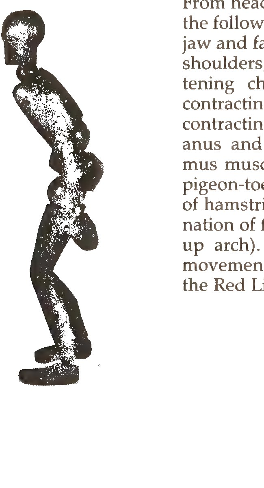
Hình 17: Phản xạ Đèn Đỏ
Từ đầu đến chân, phản xạ Đèn Đỏ bao gồm các cử động sau: nhắm mắt, căng hàm và mặt, kéo cổ về phía trước, nhấc vai lên, gập khuỷu tay, nắm chặt nắm tay, làm phẳng ngực, căng cơ bụng, co cơ hoành và nín thở, co đáy chậu (kể cả các cơ thắt hậu môn và niệu đạo), co các cơ mông nhỏ để xoay đùi vào trong (chân hướng vào nhau), khép đùi, co các cơ gân sau đùi để gập gối, gập và lật bàn chân vào trong (mỗi bàn chân nhấc lên và hướng vào trong, nâng vòm chân lên). Phản hồi cảm giác của tất cả các cử động này tạo nên cảm giác chủ quan của phản xạ Đèn Đỏ: sợ hãi.
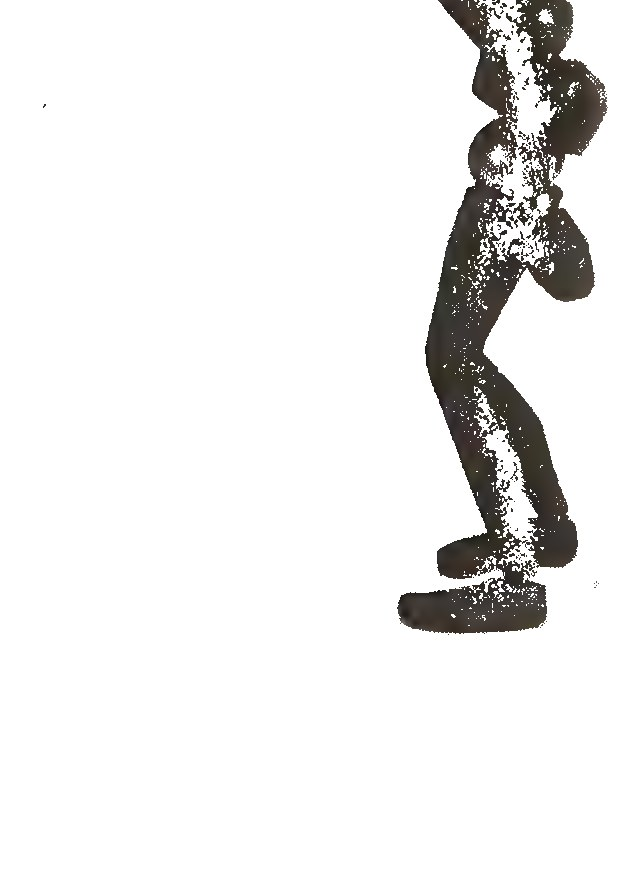
Hình 18: Phản xạ Đèn Xanh
Từ đầu đến chân, phản xạ Đèn Xanh bao gồm các cử động sau: mở mắt, hàm và mặt, kéo cổ về phía sau, kéo vai xuống dưới, duỗi khuỷu tay, mở bàn tay, nâng ngực lên, kéo dài cơ bụng, thư giãn cơ hoành và giải phóng hơi thở, thư giãn các cơ thắt hậu môn và niệu đạo ở đáy chậu, co các cơ mông lớn để duỗi đùi, co các cơ mông trung để xoay đùi ra ngoài (chân dáng vịt), dạng đùi, co các cơ duỗi đùi để làm thẳng gối đến mức duỗi quá mức, duỗi và xoay bàn chân ra ngoài. Phản hồi cảm giác của tất cả các cử động này tạo nên cảm giác chủ quan của phản xạ Đèn Xanh: nỗ lực.
Nhưng sự cân bằng lý tưởng kiểu bập bênh giữa co cơ chủ động và thư giãn cơ đối kháng lại không phải là điều thường phát triển khi chúng ta già đi. Khi con người trẻ trưởng thành, nhiều tình huống đe dọa và mời gọi khác nhau sẽ kích hoạt phản xạ Đèn Đỏ và phản xạ Đèn Xanh nhiều lần. Khi những lần lặp lại này tích lũy dần, mỗi khuôn mẫu phản xạ dần trở thành thói quen. Lúc đầu chỉ ở mức độ nhỏ, nhưng nếu tần suất và cường độ tăng lên, các sự co cơ trở nên ăn sâu. Dần dần, phản xạ Đèn Đỏ và phản xạ Đèn Xanh can thiệp vào nhau. Khi một bên co một phần, bên kia không thể co hoàn toàn.
Đó là tổng áp lực thần kinh–cơ, một trạng thái bất động của cơ bắp do sự tích tụ dần dần của các sự co cơ đối kháng mạn tính.
Tư thế già nua trong Hình 19c là sự cộng tổng của hai phản xạ đối kháng (Hình 19a và 19b). Đó là một tư thế rất quen thuộc, thấy được ở hàng triệu cơ thể già nua, và nó cho thấy rõ hai phản xạ tương hỗ đã thành thói quen như thế nào thành một sự thỏa hiệp căng thẳng giữa hai khuôn mẫu. Sự co mạnh mẽ của các cơ cột sống trong phản xạ Đèn Xanh tiếp tục kéo lưng dưới và cổ thành một đường cong. Nhưng sức kéo cũng mạnh không kém của các sự co cơ bụng và vai trong phản xạ Đèn Đỏ lại nghiêng toàn bộ thân mình về phía trước, làm tròn lưng và vai và đẩy đầu ra phía trước.
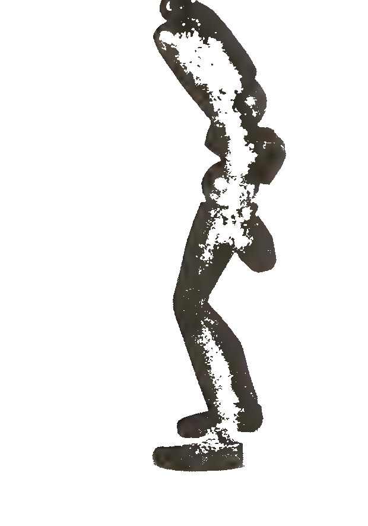
Hình 19a: Phản xạ Đèn Đỏ
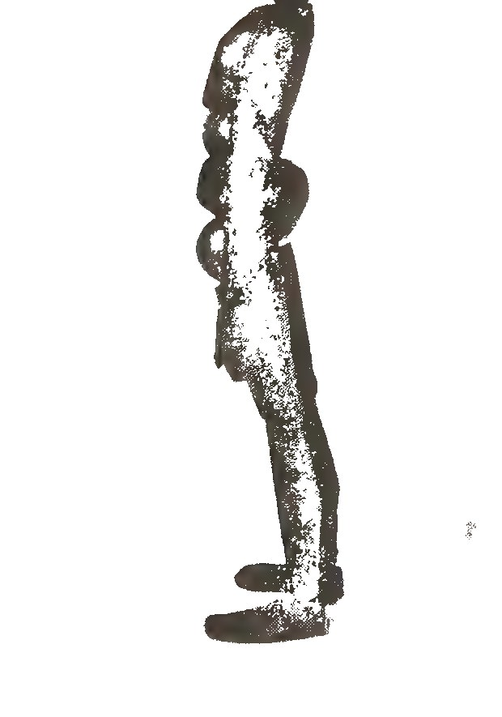
Hình 19b: Phản xạ Đèn Xanh

Hình 19c: Tư thế già nua
Cả ba tư thế đều được trình bày ở dạng cực đoan để chúng ta nhận ra chúng rõ ràng. Tuy nhiên, trên thực tế, vì cơ thể con người rất đa dạng, nên các tư thế này xuất hiện trong vô số kết hợp. Đôi khi phản xạ Đèn Đỏ chiếm ưu thế hơn nhiều, tạo ra một tư thế già nua khom lưng hơn hẳn. Hoặc phản xạ Đèn Xanh có thể chiếm ưu thế, làm phóng đại các đường cong của lưng dưới, lồng ngực và cổ. Dù kết hợp thế nào, sự cạnh tranh giữa hai phản xạ dần làm biến dạng cơ thể theo hướng của tư thế già nua. Dù điều này xảy ra trong quá trình lão hóa điển hình của con người, chính tổng của các phản ứng đã thành thói quen trước áp lực thần kinh–cơ là nguyên nhân của các bệnh lý được thảo luận trong những đoạn sau.
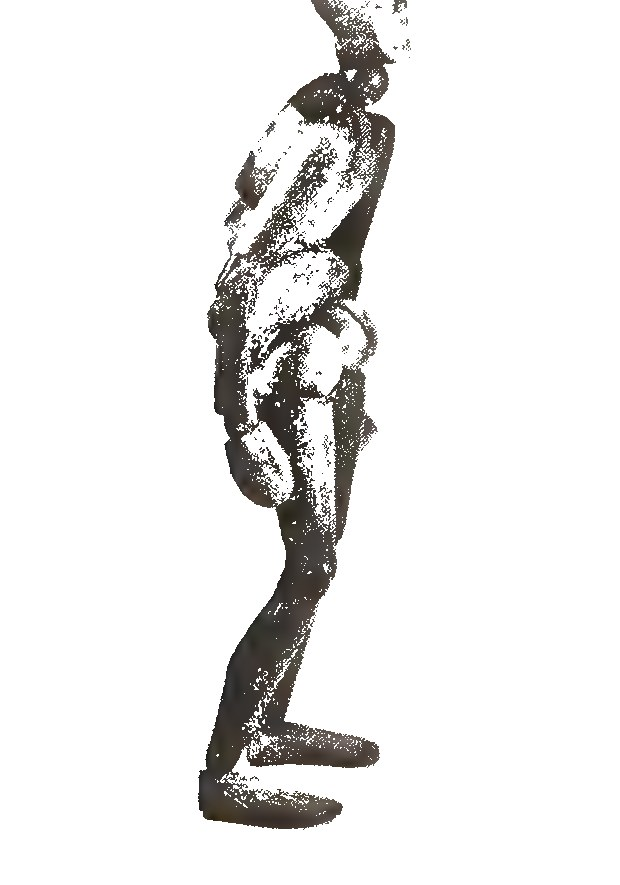
Hình 20a: Tư thế già nua với sự chiếm ưu thế của phản xạ Đèn Đỏ

Hình 20b: Tư thế già nua với sự chiếm ưu thế của phản xạ Đèn Xanh
1. Cử động cứng và hạn chế.
Khi phản xạ Đèn Đỏ và phản xạ Đèn Xanh khép lại gần nhau, bộ xương con người bị giam cầm trong chính hệ cơ bắp của nó. Như đã lưu ý trước đó, chính các cơ quanh trung tâm trọng lực của cơ thể là những tác nhân trung tâm của cả hai phản xạ. Khi chúng đồng thời kéo xương chậu và hông lên về phía thân mình, nhưng lại kéo thân mình và đai vai xuống về phía xương chậu, mọi cử động đều trở nên hạn chế. Sự vận động xoay tự do giữa xương chậu và thân mình bị hạn chế. Điều này tự động
hạn chế việc đi lại. Xương chậu không đung đưa nữa, và hai tay mất đi sự đung đưa đáp trả lại sự xoay của xương chậu. Thay vì tay phải đưa về phía trước cùng với chân trái (Hình 21a), nó bắt đầu đưa về phía trước cùng với chân phải. Thân mình đã trở nên cứng đơ, như một khối duy nhất (Hình 21b).
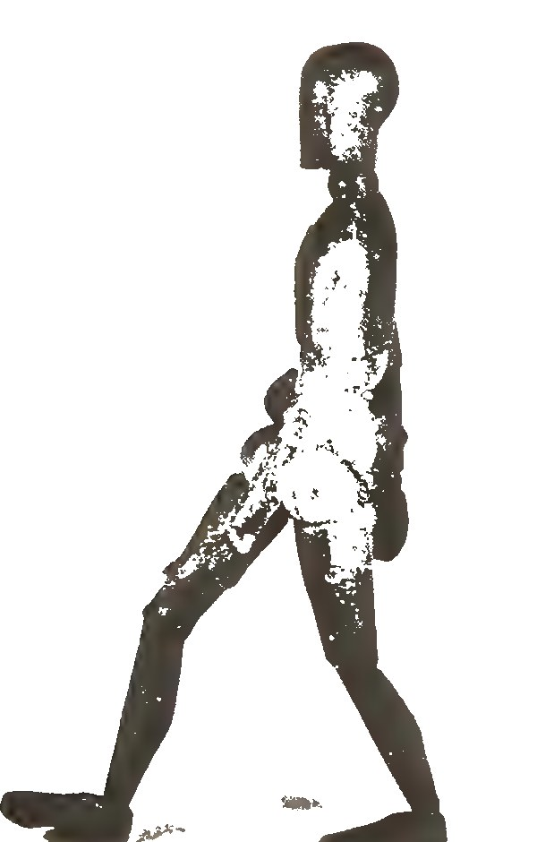
Hình 21a: Đi lại với sự đung đưa đáp trả

Hình 21b: Đi lại với thân mình cứng đơ
Cả hai cánh tay phía trên thân mình và hai chân phía dưới xương chậu cũng bị hạn chế tương tự, và cái đầu cũng vậy. Khi tư thế già nua phát triển, trở nên không thể quay đầu trọn vòng, chẳng hạn để nhìn phía sau khi bạn cố đỗ xe. Đai vai bị kéo xuống dưới, khiến hai tay không thể với tới và xoay được. Phụ nữ gặp khó khăn khi mặc áo ngực, và người chơi gôn gặp khó khăn khi vung gậy trọn vẹn. Trở nên khó khăn khi xoay gối vào trong và ra ngoài một cách tự do. Nhảy múa trở thành một nỗ lực quá sức. Rất khó giữ thăng bằng, và nỗi sợ ngã phát sinh, lần lượt khiến người ta trở nên thận trọng và cứng nhắc hơn trong cử động.
2. Đau mạn tính.
Sự co cứng mạn tính của hệ cơ bắp cơ thể gây ra cơn đau âm ỉ mạn tính ở chính những cơ đó. Chúng trở nên đau nhức, đôi khi thực sự đau. Vì phản ứng Landau sớm liên tục được kích hoạt trong phản xạ Đèn Xanh, nên sự khó chịu ở các cơ vùng lưng dưới và xương chậu sẽ dao động từ cơn đau âm ỉ đến cơn đau nhức rõ rệt, tùy theo
mức độ hoạt động gây stress. Hơn nữa, sự hạn chế của các khớp vai và hông sẽ gây ra các mức độ khó chịu khác nhau, tùy theo loại hoạt động thường ngày đã tham gia. Chẳng hạn, nhân viên đánh máy sẽ bị đau nhức vai và cổ; nhân viên bưu điện sẽ bị đau nhức mông và hông. Khi tư thế già nua đã tiến triển xa, và phần thân trung tâm trở nên khá cứng đơ, cơn đau sẽ bắt đầu ở các chi. Chính cơn đau này—chẳng hạn ở khuỷu tay và bàn tay, hoặc ở gối và bàn chân—mà các bác sĩ thường nhầm là viêm khớp, dây thần kinh bị chèn ép, hội chứng ống cổ tay, v.v.
3. Mệt mỏi mạn tính.
Bởi vì các sự co chồng chéo của hai phản xạ đồng thời kích hoạt toàn bộ hệ thống cơ của cơ thể, nên kết quả là một sự tiêu hao năng lượng khổng lồ. Một trong những than phiền phổ biến nhất của người cao tuổi là họ luôn mệt. “Xin hãy làm gì đó để cho tôi thêm năng lượng!” là một lời kêu cứu mà tôi đã nghe hàng trăm lần. Nhưng những người này không thiếu năng lượng. Đó không phải là vấn đề của họ. Vấn đề của họ là, một cách không tự nguyện và vô ý thức, họ đang tiêu hao một lượng lớn năng lượng liên tục. Những sự co mạn tính này tiếp diễn không suy giảm khi họ nằm xuống, ngay cả trong lúc ngủ. Khi họ thức dậy vào buổi sáng, họ ngạc nhiên nhận ra rằng không chỉ cơ họ đau nhức mà họ còn mệt nữa. Một số trở nên mệt mỏi đến mức cần phải nghỉ ngơi trong vòng một hoặc hai giờ sau khi thức dậy.
Đôi khi cảm giác chủ quan không phải là mệt mỏi mà là yếu đuối. Tôi thường đọc các báo cáo y khoa nói rằng cơ của một bệnh nhân cao tuổi đã trở nên “yếu.” Điều này thường là không đúng. Nếu các bác sĩ chịu khó sờ nắn các cơ bị ảnh hưởng, họ sẽ phát hiện rằng chúng đang bị giữ cứng trong một sự co trương lực không tự nguyện. Thực tế, chúng không yếu mà khỏe, do sự co liên tục. Thường thì chúng trở nên khá to và mạnh mẽ vì sự kéo mạn tính đó.
4. Thở nông mạn tính.
Tư thế già nua, bằng cách kết hợp các sự co của phản ứng rút lui và phản ứng hành động, kéo xuống toàn bộ lồng ngực, cả trước và sau, làm bất động ngực. Chúng ta đã thấy điều này gây ra hơi thở nông và nhanh của thở quá mức cùng những tác động đáng tiếc của nó đối với chức năng tim mạch. Khi lượng oxy hít vào trở nên cực thấp, kết quả thường là trầm cảm, uể oải và mất sự sắc bén của trí óc.
5. Hình ảnh bản thân tiêu cực.
Khi các cá nhân đến một giai đoạn của cuộc đời mà ở đó (1) họ không còn làm được những gì họ từng làm, (2) họ luôn đau, (3) họ mệt và không có năng lượng, và (4) nguồn oxy của họ bị hạn chế, những cá nhân này thường phát triển một hình ảnh bản thân tiêu cực. Điều này có thể xảy ra nếu, bất chấp mọi nỗ lực, họ không thể đảo ngược sự mất mát các chức năng thời trẻ của mình, và nếu họ liên tục được nói rằng, “Đó là hệ quả tất yếu của lão hóa.” Tình trạng này có những hậu quả tai hại riêng của nó, bởi vì, theo quy luật somatic, những gì bạn kỳ vọng thường là những gì bạn nhận được. Điều này sẽ được thảo luận trong Chương 12.
6. Huyết áp cao mạn tính và “Cái Kẹp Tối”.
Có lẽ nguyên nhân chính của tử vong do các bệnh ở giai đoạn cuối đời là xơ vữa động mạch, còn gọi là “sự cứng lại của các động mạch.” Tình trạng này là gốc rễ của cả bệnh mạch vành và bệnh tim mạch, trong đó bệnh sau bao gồm đột quỵ và vỡ phình động mạch. Quan điểm khoa học của các nhà nghiên cứu lão học là huyết áp cao, kết hợp với sự cứng lại của động mạch làm hạn chế dòng máu, chính là nguyên nhân gây ra những sự việc này, và rằng tình trạng này là kết quả của một quá trình sinh học được lập trình di truyền. Nói cách khác, quan điểm y khoa là xơ vữa động mạch tăng huyết áp là “hệ quả tất yếu của lão hóa.”
Nhưng rất có thể không phải như vậy, và tôi nói điều này vì hai lý do, trong đó một lý do tôi đã đề cập trong thảo luận về phản xạ Đèn Đỏ: Khi phản xạ Đèn Đỏ hạn chế hơi thở và do đó kích hoạt thở quá mức, nó cũng áp chế nhịp tim và huyết áp thay đổi bình thường của loạn nhịp xoang. Điều này có nghĩa là hai điều xảy ra: (1) Sự chiếm ưu thế của hệ thần kinh giao cảm đối với chức năng tim mạch khiến thành cơ trơn của các ống mạch co lại; và (2) sự thay đổi lên xuống của huyết áp không còn xảy ra nữa, nên thành mạch không được giữ mềm dẻo và vì thế không thích ứng được với những thay đổi của huyết áp.
Lý do kia để sửa đổi quan điểm hiện hành về tính tất yếu của xơ vữa động mạch tăng huyết áp liên quan đến những tác động đã biết của sự co cơ tĩnh—còn gọi là co cơ đẳng trương. Có hai cách mà các cơ có thể hoạt động: tĩnh hoặc động. Khi bạn vắt nước từ một quả cam, các ngón tay khép lại quanh quả cam; cử động của các ngón tay này là một sự co động. Khi bạn bóp một quả bóng chày, các ngón tay không cử động, dù các cơ đang co; đó là sự co tĩnh. Sự co tĩnh của cơ là điều xảy ra trong bài tập đẳng trương, từng được phổ biến qua chương trình phát triển cơ bắp của Charles Atlas. Đó là sự co của một nhóm cơ chống lại một nhóm khác, như khi bạn ép lòng bàn tay hai bên lại với nhau khiến cơ ngực co lại—hai bàn tay không cử động, nhưng các cơ thì có.
Nhưng có một vấn đề với hình thức tập luyện này: nó gây ra sự tăng vọt mạnh về huyết áp.
Đối với trái tim bình thường, bài tập đẳng trương đặt ra một áp lực đặc thù. Khác với bài tập động, trong đó cung lượng tim tăng mạnh mà thường không thay đổi huyết áp trung bình, trong bài tập đẳng trương cung lượng tim chỉ tăng nhẹ nhưng huyết áp trung bình lại tăng mạnh. Điều này dẫn đến sự tăng đột ngột hậu tải lên tim.
Sự tăng hậu tải liên quan đến bài tập đẳng trương đã được chứng minh là gây ra nhiều triệu chứng của suy tim sung huyết ở nhiều người có cơ tim bị bệnh.
Người ta đã biết rõ huyết áp có thể tăng tới 50 phần trăm sau khi co cơ đẳng trương. Những nguy hiểm do co cơ tĩnh gây ra không chỉ giới hạn ở tim; còn có nguy cơ đột quỵ và vỡ phình động mạch. J. S.
Petrofsky, người đã dành hẳn một tập sách để xem lại các nghiên cứu trong lĩnh vực này, kết luận quan điểm của mình về tác động của bài tập đẳng trương bằng lời cảnh báo rằng “rõ ràng hình thức tập luyện này sẽ nguy hiểm cho bệnh nhân cao tuổi bị tăng huyết áp.”
Nếu chúng ta suy ngẫm về sự va chạm giữa phản xạ Đèn Đỏ và phản xạ Đèn Xanh trong tư thế già nua và các sự co đối kháng tĩnh của chúng, chúng ta chợt nhận ra tính nguy hiểm chết người tiềm ẩn của tư thế già nua. Hai nhóm cơ chính của cơ thể đang đối kháng nhau một cách không tự nguyện trong một sự co tĩnh, đẳng trương—một Cái Kẹp Tối gây ra huyết áp cao mạn tính. Như đã đề cập ở trên, xơ vữa động mạch tăng huyết áp là gốc rễ của bệnh tim mạch, một nguyên nhân tử vong chính ở giai đoạn cuối đời. Hơn nữa, người cao tuổi thường bị huyết áp cao. Ghép hai dữ kiện này lại với nhau, chúng ta có một nguyên nhân của xơ vữa động mạch tăng huyết áp: tư thế già nua xảy ra do sự thành thói quen không bị ngăn cản của phản xạ Đèn Đỏ và phản xạ Đèn Xanh. Nếu những phản xạ này xảy ra đủ thường xuyên và đủ mạnh, chúng có thể trở nên thành thói quen, phai dần từ ý thức tự nguyện sang chứng quên cảm giác–vận động (SMA)—và Cái Kẹp Tối chiếm quyền kiểm soát.
Sáu bệnh lý này là tổng áp lực thần kinh–cơ trong cuộc đời của mọi con người. Chúng là kết quả của những phản xạ hoàn toàn bình thường và không thể gây hại cho ta, trừ khi chúng ta ngừng nhận biết sự xuất hiện của chúng và để chúng trở nên quen thuộc đến mức trở nên vô ý thức và thành thói quen. Sáu bệnh lý này, vì thế, có thể tránh được: chúng không “tất yếu,” nghĩa là những tác động chính của lão hóa vừa có thể tránh được vừa có thể khắc phục được.
Tôi nghĩ thật đáng sợ khi coi tuổi già là một căn bệnh. Cũng đáng sợ không kém khi cho rằng một cuộc đời dài là một quá trình bệnh lý với những hệ quả tất yếu. Sáu bệnh lý này liên quan đến lão hóa điển hình không cấu thành một căn bệnh; chúng là một hội chứng, được mô tả tốt nhất là “hội chứng lão hóa.” Điều này có nghĩa là chúng là những dấu hiệu và triệu chứng đi kèm của một quá trình không lành mạnh cần được quan tâm và đảo ngược.
Con người không hề bất lực chút nào. Chúng ta có thể tránh, hoặc xua tan, những tác động của hai phản ứng thần kinh–cơ trước stress. Chúng ta không thể tránh bản thân các phản ứng, vì chúng được cài đặt trong gen của ta. Nhưng ta có thể nhận biết chúng. Chúng ta không phải lúc nào cũng tránh được những tình huống khiến chúng xảy ra, nhưng ta có thể kiểm soát phản ứng của mình trước chúng. Ở động vật, phản ứng rút lui và phản ứng hành động là các phản xạ có điều kiện; hãy nhớ đến con chó của Pavlov, đã tiết nước bọt khi nghe tiếng chuông. Chúng cũng có thể trở thành phản xạ có điều kiện ở ta, nhưng chỉ khi ta nghĩ mình chẳng khác gì con chó của Pavlov.
Pavlov và nhiều nhà sinh lý học khác đã “một cách khoa học” nhìn nhận con người như chỉ là một loài động vật khác. Quan điểm somatic, tuy nhiên, lại khác sâu sắc. Theo somatic học, con người không chỉ là một loài động vật khác—một phiên bản phức tạp hơn của con chuột thí nghiệm.
Một con người là một thực thể có tự nhận biết, có khả năng học hỏi để đạt được sự tự nhận biết lớn hơn và sự tự kiểm soát lớn hơn. Một khi chúng ta
nhận ra sức mạnh của sự tự nhận biết, chúng ta biết rằng ta có thể tự cứu mình khỏi những thế lực không thể tránh khỏi của stress. Việc không thừa nhận sự thật và ích lợi của ý thức con người, thực chất, là tự kết án mình phải sống và chết như những con chó.
Tôi không nghĩ rằng việc khoa học nói chung, hay y học nói riêng, có thừa nhận sức mạnh thực sự của sự tự nhận biết con người là quan trọng chút nào. Bằng chính định nghĩa của mình về con người là động vật, khoa học đã loại trừ việc thừa nhận điều đó. Tôi cho rằng, tuy nhiên, điều tối quan trọng là các cá nhân—bạn và tôi—phải thừa nhận nó và đưa nó vào sử dụng. Không chỉ chúng ta sẽ tránh được những bệnh lý có thể tránh được có thể xảy ra trong một cuộc đời dài, mà chúng ta còn xác nhận với chính mình sức mạnh của sự tự chịu trách nhiệm và quyền tự chủ của con người—một sức mạnh có ý nghĩa sâu xa hơn nhiều.
Đoạn xen: Cây Cung Của Thợ Bắn Và Nguy Cơ Của “Cái Bụng Chặt”
Khi một người không thể hết nấc, ai cũng có một cách chữa khác nhau: “Trùm túi giấy lên đầu và hít lại không khí vừa thở ra.” “Uống nước ngược đầu.” “Nín thở cho đến khi không thể nín được nữa.” Đôi khi những cách này có tác dụng. Thường thì không.
Tình hình hoàn toàn giống như khi bạn bị đau lưng. Bạn bè cũng như các chuyên gia y tế có đủ loại phương pháp để đề nghị. Đôi khi chúng có tác dụng. Thường thì không. “Lưng bạn yếu quá; bạn phải làm cho nó mạnh lên.” “Lưng bạn căng quá; bạn phải kéo giãn nó; chạm vào ngón chân.” “Đĩa đệm của bạn bị thoát vị; bạn cần phẫu thuật.” “Đĩa đệm của bạn bị phình ra; bạn cần một cái nẹp lưng.” “Việc bạn cần làm chỉ là ngồi với lưng cong.” “Việc bạn cần làm chỉ là ngồi với lưng phẳng.” “Rất đơn giản; khi lưng quá căng, nghĩa là cơ bụng đã trở nên yếu và chùng nhão; hãy siết chặt cái bụng lại; thế là xong vấn đề.” Hầu như ai cũng có vấn đề về lưng, nhưng họ không thể tự giúp mình, vì họ không hiểu đã hỏng cái gì. Đó là lý do các “giải pháp” của họ không hiệu quả. Tình huống sẽ có vẻ buồn cười nếu không có quá nhiều đau đớn và khổ sở liên quan đến nó.
Trong 99 phần trăm các trường hợp đau lưng dưới, cơn đau nằm ở các cơ; kết nối cột sống và lồng ngực với mặt sau của xương chậu. Cơn đau sẽ nằm ở lưng dưới hoặc xương chậu, hoặc cả hai, đôi khi ở cả hai bên và đôi khi chỉ ở một bên. Các cơ đau vì một lý do duy nhất: co quá mức, do phản xạ Đèn Xanh gây ra.
Ngay cả một người có lưng hoạt động thoải mái cũng có thể bị đau lưng dưới nếu người đó dành 10 giờ ngoài đồng để đào khoai hoặc hái bông. Các cơ duỗi sẽ kiệt sức vì liên tục nâng thân mình lên. Nhưng một người cũng có thể ngồi trên ghế cả ngày làm việc tại bàn hoặc bàn đánh máy và bị cùng cơn đau đó nếu các cơ duỗi liên tục bị co bởi một phản xạ Đèn Xanh đã thành thói quen. Các cơ cột sống ở lưng dưới sẽ rất
căng chắc và sẽ kéo lưng dưới thành một vòng cung. Cái lưng cong đau đớn hành hạ hầu hết người lớn trong xã hội chúng ta giống như cái cung của người bắn cung. Các cơ ở phía sau cột sống giống như dây cung. Khi dây cung không căng, chỉ có một độ cong nhẹ (Hình 22a), nhưng khi dây cung được căng lên, cái cung bị uốn cong (Hình 22b).
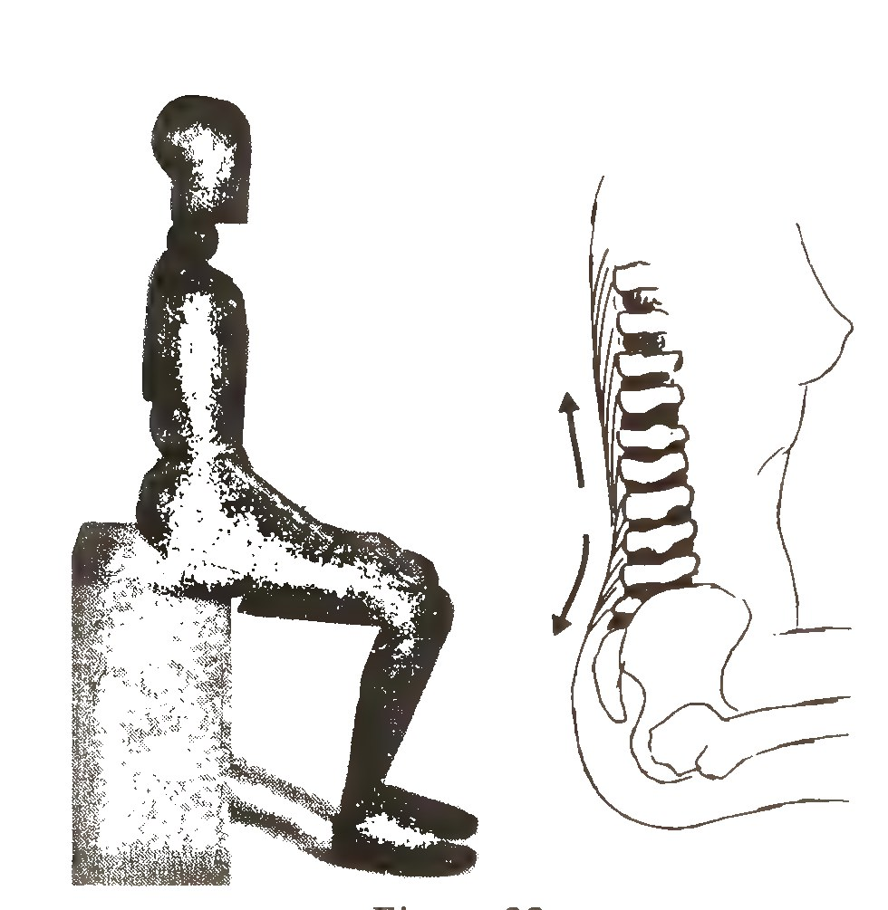
Hình 22a: Cột sống thư giãn
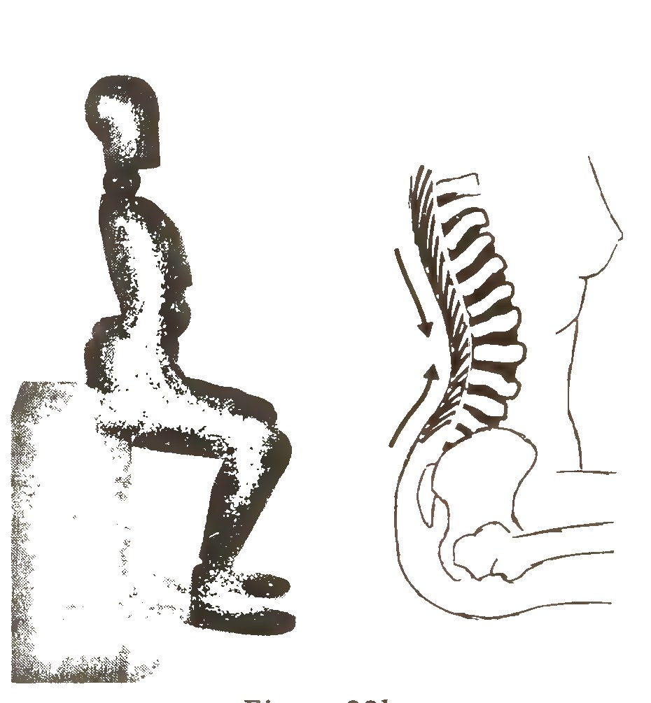
Hình 22b: Cột sống hình cung tên
Khi các cơ duỗi của lưng bị co mạn tính, tư thế của phần lưng dưới bị uốn cong về phía trước thành một vòng cung, làm bụng nhô ra phía trước và giảm chiều cao của thân mình. Cột sống ngắn lại, vì một đường cong ngắn hơn một đường thẳng. Vòng cung này ép các phần phía sau của đốt sống xuống vào các đoạn sau của đĩa đệm xốp, vốn co giãn như quả bóng golf, nên bị nén ép làm chít chặt đoạn sau, khiến nó phình ra vào trong ống sống (Hình 22b). Vì tia X không cho thấy mô cơ (sợi dây cung căng) mà chỉ cho thấy đốt sống và đĩa đệm dày (cái cung), nên các bác sĩ X quang thường nhầm sự phình ra của đĩa đệm là một sự sụp (thoát vị hoặc vỡ). Như vậy, họ giả định sai rằng cấu trúc đốt sống đã “bị hỏng.”
Hình ảnh sai lầm về một cái lưng bị hỏng ám ảnh cách suy nghĩ của mọi người về vấn đề phổ biến này. “Lao động gãy lưng” diễn tả sự nhầm lẫn này, cũng như lời than phiền phổ biến không kém, “Lưng tôi bị tuột.” Ngoại trừ các trường hợp gãy xương và tai nạn nghiêm trọng, lưng người rất hiếm khi “gãy” hay “tuột.” Tuy nhiên, chúng thực sự bị uốn cong đau đớn thành hình cái cung tên, với cơn đau thường nằm ở các cơ lưng luôn mệt mỏi, chứ không phải ở đĩa đệm hay dây thần kinh, như người ta thường tin. Nếu các dây thần kinh cảm giác ở lưng dưới dưới đốt sống thắt lưng thứ tư và thứ năm
bị chèn ép do co quá mức, cơn đau sẽ được cảm nhận, không phải ở lưng, mà ở xương chậu và chân ở bên bị chèn. Đó là những cơn đau tọa, một ví dụ trầm trọng hơn của cùng sự chèn ép tạm thời của các đĩa đệm thành hình cung tên.
Vì cái cung tên cong lưng dưới vào trong, nó tự động cong bụng ra ngoài. “Dù tôi có ăn kiêng bao nhiêu, tôi không thể hết cái bụng nhô ra này!” là lời nhận xét của nhiều khách hàng trung niên. Dù sự nhô ra này là hệ quả không thể tránh được của các cơ lưng bị co mạn tính, vẫn có một niềm tin mù quáng trong một số chuyên gia y tế rằng lưng và bụng cong về phía trước vì cơ bụng đã yếu đi. Việc có “cái bụng chặt” là một nỗi ám ảnh của nhiều đàn ông, và họ sẽ tham gia những buổi dài tập gập bụng và nâng chân để khắc phục tình hình. Nhưng chẳng có gì thay đổi, vì cơ bụng vốn không hề yếu. Thay vào đó, các cơ lưng dưới bị co quá mức—chúng “quá mạnh.”
Đường cong điển hình ở giữa cơ thể, vì thế, không phải do “lưng yếu” cũng không phải do “bụng yếu”—cũng không phải do một sự hỏng hóc cấu trúc cần được sửa chữa, nẹp đỡ, hoặc băng bó. Nó do một sự co không tự nguyện mạn tính của các cơ lưng, gây ra bởi một phản xạ Đèn Xanh liên tục được kích hoạt. Vấn đề nằm ở não, nơi phản xạ đã thành thói quen. Khi phản xạ này được thuần phục, cái lưng cong, cái bụng nhô ra, các đĩa đệm bị nén đều biến mất—và cơn đau chấm dứt. Nhưng chứng quên cảm giác–vận động khiến ta quên cảm giác thế nào là có một cái lưng thư giãn, không bị biến dạng. Sau nhiều năm chịu đựng hậu quả của một cột sống cong và ngắn lại, cảm giác về “thẳng” của một người bị bóp méo.
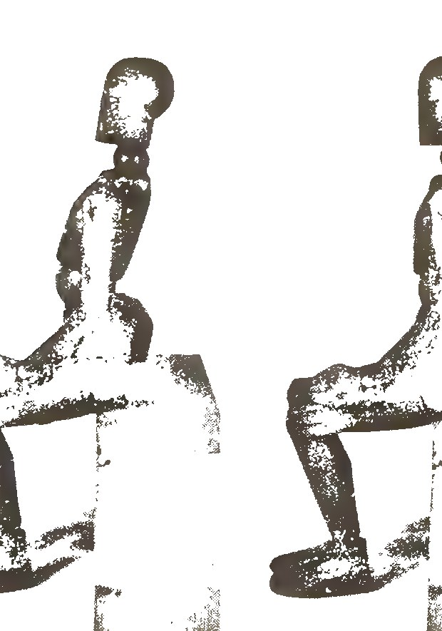
Hình 23a: Hình ảnh cơ thể bị bóp méo — Lưng cong có vẻ thẳng
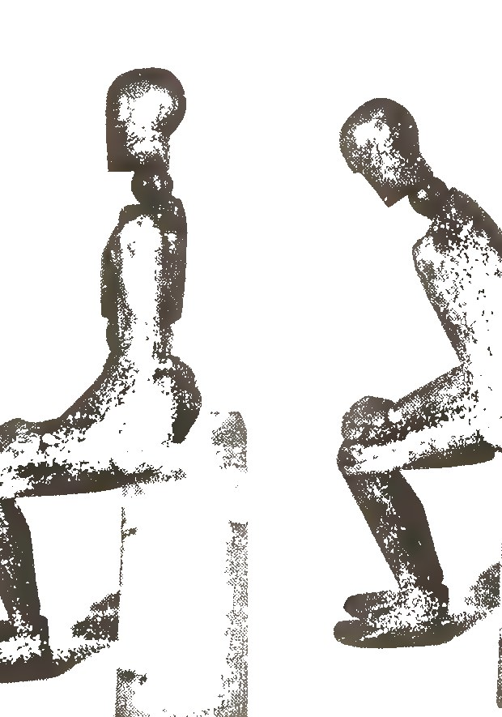
Hình 23b: Hình ảnh cơ thể bị bóp méo — Lưng thẳng có vẻ “khom xuống”
Trong mười năm qua, tôi chưa từng gặp một khách hàng nào có lưng cong đau đớn mà khi học cách thả lỏng các cơ đó lại không nói, ‘Nhưng cái này có vẻ không thẳng. Nó có vẻ khom về phía trước! Nếu tôi muốn ngồi thẳng, tôi phải giữ lưng mình như thế này...’ Rồi họ sẽ co và uốn lưng dưới vào đường cong cũ, đẩy bụng ra phía trước và kéo đầu về phía sau trung tâm trọng lực. Trong Hình 23a và 23b, bạn thấy hiện tượng quan trọng—và cũng hấp dẫn—này về một hình ảnh cơ thể bị bóp méo. Trong Hình 23a, bạn thấy hình ảnh cơ thể bị bóp méo (đường chấm) của một phản xạ Đèn Xanh mạn tính điển hình: đường cong về phía sau của thân mình có vẻ “thẳng,” nên khi một người mới học cách thư giãn lại về một cột sống thẳng, nó có vẻ “khom” (xem Hình 23b). Cần vài tuần để quen với việc có một cái lưng cao và không bị bóp méo. Điều then chốt là phải ghi nhớ điều này khi bạn bắt đầu thư giãn các cơ lưng trong hai Bài tập Somatic đầu tiên.
Chương 11 — Chấn Thương: Vai Trò Của Tai Nạn
Khi Cơ Thể Nghiêng
Một câu hỏi tôi luôn hỏi khách hàng là họ có từng bị gãy xương, tai nạn nghiêm trọng, phẫu thuật, hoặc bất kỳ nguyên nhân nào khác phải nhập viện hay không. Một điều khác tôi luôn làm là nhìn thẳng vào người đó để xem họ có nghiêng sang một bên hay không. Đôi khi tôi yêu cầu người đó đi lại, để xem có dấu hiệu khập khễnh nào không. Cả câu hỏi lẫn quan sát đều nhắm đến cùng một mục tiêu: xác định xem đã có chấn thương nào chưa.
Những tác động dần dần của phản xạ Đèn Đỏ và phản xạ Đèn Xanh đã thành thói quen lên cơ thể dễ thấy nhất từ bên hông: tức là lưng cong và bụng nhô ra của tư thế cung tên, hoặc phần thân trên khom của ông lão. Nhưng những tác động đột ngột của chấn thương lại dễ thấy nhất khi nhìn thẳng từ phía trước hoặc phía sau: tức là sự nghiêng ngang của thân mình. Stress kéo dài ảnh hưởng đến cơ thể ở cả hai bên như nhau, nhưng nó không gây nghiêng. Nhưng chấn thương chỉ ảnh hưởng đến cơ thể ở phía xảy ra tai nạn, khiến các cơ co giật và cong cơ thể về một bên.
Phản xạ chấn thương là một phản ứng của hệ thống cảm giác–vận động nhằm phòng vệ trước cơn đau. Đó là một phản xạ bảo vệ phổ biến, quen thuộc rõ rệt như tư thế nín thở của phản xạ Đèn Đỏ hay cái lưng uốn cong của phản xạ Đèn Xanh. Khi chúng ta bị ong đốt hoặc bị kim tiêm châm, ta giật mình—đó là phản xạ chấn thương. Nếu ai đó cầm điếu thuốc đang cháy hoặc pháo hoa lại quá gần ta, ta đưa bộ phận cơ thể bị đe dọa ra xa khỏi nguy hiểm và co người lại—đó là phản xạ chấn thương. Nếu cơ thể ta bị thương, sự co người của cơ nhằm giữ một khuôn mẫu bảo vệ chặt chẽ quanh điểm bị thương—đó cũng là phản xạ chấn thương.
Những loại phản xạ chấn thương này có thể xảy ra ở bất kỳ bộ phận nào của cơ thể—trên hoặc dưới, trước hoặc sau, bên trái hoặc bên phải. Chúng có thể xảy ra ở phía trước cơ thể, cộng thêm vào tư thế co cụm của phản xạ Đèn Đỏ, như đôi khi xảy ra sau phẫu thuật tim. Chúng có thể xảy ra ở phía sau cơ thể, cộng thêm vào cái lưng cong căng của phản xạ Đèn Xanh, như đôi khi xảy ra sau phẫu thuật cột sống. Nhưng trừ khi tai nạn nằm ở trung tâm cơ thể, sự co co giật của phản xạ chấn thương sẽ hiện rõ nhất ở một bên cơ thể, thường ảnh hưởng đến sự êm ái của bước đi và cảm giác thăng bằng.
Khi có vẹo cột sống, điều đó có nghĩa là đã xảy ra chấn thương. Các bác sĩ chỉnh hình thường bỏ qua chấn thương như một yếu tố trong bệnh vẹo cột sống của trẻ, đôi khi đưa ra giả thuyết kỳ lạ rằng nguyên nhân là di truyền, rằng một bên cơ thể phát triển nhanh hơn bên kia! Trong một tỷ lệ nhỏ xíu của các trường hợp, điều này thực sự có thể xảy ra, nhưng nói chung những dị tật di truyền như vậy xảy ra cùng với các dấu hiệu dị tật khác—điều hiếm khi xảy ra với vẹo cột sống.
Vẹo cột sống có thể là một đường cong đơn giản như một chữ C dài, hoặc có thể là một đường cong kép như chữ S (Hình 24a và 24b). Trong trường hợp sau, cột sống dưới cong theo một hướng và cột sống ngực cong theo hướng ngược lại. Nguồn gốc của điều này thường luôn là như sau: Một tai nạn xảy ra ở một bên cơ thể, khiến các cơ của xương chậu và cột sống thắt lưng co chặt hơn ở một bên, nhưng phản xạ dựng lại thẳng của hệ thống thăng bằng tự động kéo đầu và thân trên về hướng ngược lại để cân bằng sự nghiêng dưới. Trong Hình 24a và 24b, bạn thấy tác động của sự co cơ phản xạ mà người đó đã mất kiểm soát; tức là chứng quên cảm giác–vận động (SMA) đã xảy ra. Dù đường cong là đơn giản hay hình chữ S, nguyên nhân thường vẫn là như nhau: chấn thương ở một bên cơ thể, gây co cơ phản xạ.

Hình 24a: Vẹo cột sống đơn giản với đường cong hình chữ C
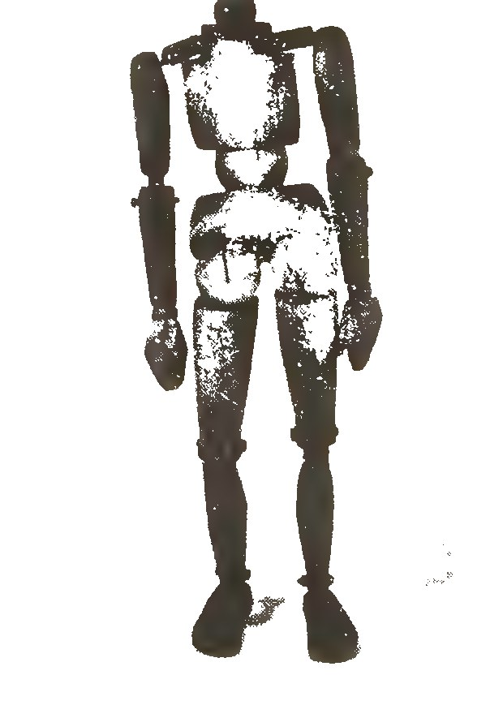
Hình 24b: Vẹo cột sống với đường cong hình chữ S
Phản xạ chấn thương có thể được kích hoạt bởi bất kỳ tổn thương nghiêm trọng nào đến cơ thể. Trong các bệnh án của Phần 1, Barney, người nghiêng hẳn sang phải, đã gãy đùi trái trong một tai nạn ô tô ba năm trước; vai phải “đông cứng” của Louise và
sự nghiêng sang phải đã xảy ra sau khi cô ngã và gãy xương cánh tay trên; Harley đã ngã từ xe tải, làm thương gối trái. Sau đó anh khập khễnh, nghiêng sang trái.
Phản xạ chấn thương có thể được kích hoạt bởi phẫu thuật: Một phản ứng co giật co cụm sẽ xảy ra ở các cơ quanh vị trí phẫu thuật. Phụ nữ cắt bỏ vú có thể bị cứng và đau nhức mạn tính ở vai và phần trên của lồng ngực. Đàn ông phẫu thuật tim có thể bị đau nhức căng ở ngực. Người phẫu thuật thận và đặt ống thông đôi khi bị co thắt cơ không kiểm soát được ở bụng dưới và đùi trên, nơi đặt ống thông. Những ví dụ dạng này thì vô kể.
Cũng thường gặp không kém là các phản xạ chấn thương ở một bên cơ thể sau một cú ngã mạnh vào hông, hoặc sau khi trẹo chân hoặc gãy chân. Việc không thể đặt trọng lượng lên chân bị thương gây ra sự dồn trọng lượng tự động sang chân kia. Đây không phải là một hành động tự nguyện; đó là một phản xạ để tránh cơn đau. Người ta không thể không “chiều chuộng” chân bị thương. Thợ may cũng như bác sĩ chỉnh hình thường nói với khách hàng rằng một chân của họ ngắn hơn chân kia. Trong hàng trăm người được nói như vậy, tôi chưa từng gặp một người nào mà chân thực sự ngắn hơn; trong mọi trường hợp, các cơ ở trung tâm cơ thể bị co mạn tính, kéo hông lên ở bên đó—giống như “bộ hạ cánh bị co lại” của Harley. Có nhiều loại phản xạ chấn thương cũng như có nhiều cách con người làm mình bị thương, từ thô bạo đến tinh vi, từ một cú vặn cổ kiểu roi ngựa đến một căn bệnh gây liệt.
Sự bất cân xứng giữa hai bên phổ biến đến mức chúng ta thấy nó liên tục nhưng không nhận ra. Thực tế, cột sống cong đến mức “bình thường” nên ít bác sĩ nhận ra rằng những người bị nghiêng sang một bên do tai nạn sẽ có nguy cơ chèn ép một hoặc cả hai dây thần kinh tọa nếu lưng dưới của họ bị cong dần thêm bởi phản xạ Đèn Xanh.
Đau tọa do áp lực của đĩa đệm lên các dây thần kinh tọa nằm ngay giữa đốt sống thắt lưng thứ tư và thứ năm và giữa đốt sống thắt lưng thứ năm và đốt sống cùng thứ nhất. Chúng là các dây thần kinh cảm giác, kéo dài qua xương chậu, xuống đùi và bắp chân, kết thúc ở bàn chân. Dây thứ nhất đi xuống bên cạnh chân, kết thúc ở ngón chân cái; dây thứ hai đi xuống phía sau chân tới gót chân, kết thúc ở ngón chân út. Dây thần kinh nào bị chèn, cơn đau sẽ cảm nhận theo đường đó. Nếu sự chèn vừa phải, cơn đau chỉ cảm nhận ở xương chậu và hông. Nếu áp lực nặng, cơn đau như một sợi dây nóng chạy suốt xuống đến bàn chân. Đó là một cơn đau thần kinh với cảm giác khác với đau cơ, và nó có thể gây suy nhược đau đớn khi nặng.
Ngoại trừ những trường hợp rõ ràng của tai nạn nghiêm trọng và gãy ép, đau tọa là một bệnh thích nghi tương đối phổ biến. Giống như mọi bệnh của sự thích nghi, nó liên quan trực tiếp đến lượng stress và chấn thương đã xảy ra trong cuộc đời của người đó. Chúng ta sống càng lâu, càng có nhiều cơ hội trải qua stress và chấn thương; vì thế, đau tọa thường được liên với các bệnh của lão hóa. Nhưng nó có thể xảy ra ở bất kỳ tuổi nào. Và với tư cách là một bệnh của sự thích nghi, đau tọa có thể
được tránh hoặc khắc phục. Việc dạy người ta cách tránh hoặc thoát khỏi tình trạng đau tọa đã là một trong những khía cạnh thú vị hơn trong công việc của tôi với tư cách là một người giáo dục somatic. Tôi thường được tìm đến bởi những người bị đau tọa nặng, những người muốn tránh phẫu thuật bằng mọi giá.
Một người thợ làm bánh ở tuổi đầu bốn mươi khập khễnh bước vào văn phòng tôi với những cơn đau tọa dữ dội chạy xuống chân trái tới ngón chân cái. Anh sợ cơn đau, nhưng còn sợ hơn là ca phẫu thuật lưng được coi là “cần thiết.” Sau vài buổi, anh lấy lại được cảm giác và sự kiểm soát vận động của các cơ thắt lưng và thân trái. Cơn đau sau đó biến mất, đầu tiên ở chân, rồi ở lưng. Đĩa đệm liên đốt sống được cho là “vỡ” hóa ra chỉ bị phình ra do áp lực như kẹp của sự co không tự nguyện ở các cơ lưng dưới. Với các sự co giờ nằm dưới sự kiểm soát tự nguyện của anh, các đốt sống trở về vị trí bình thường. Để mãi mãi kỷ niệm việc lưng mình hoàn toàn lành lặn, giờ anh làm một màn trình diễn lớn khi nâng những bao bột nặng 100 pound để đổ vào máy trộn bột. Anh đã làm việc đó được ba năm.
Trong một trường hợp khác, tôi làm việc với một cao bồi đã phải rút khỏi các cuộc thi rodeo vì đau tọa mạn tính. Mười ngày sau buổi cuối cùng trong ba buổi huấn luyện lại của chúng tôi, anh đã có mặt tại Cow Palace của San Francisco, thuần ngựa và cưỡi bò tại cuộc thi Grand National.
Chính khả năng gần như kỳ diệu của ý thức con người và hệ thần kinh trung ương trong việc học hỏi và thích nghi là chủ đề của cuốn sách này. Chúng ta có khả năng vượt xa những gì ta nghĩ về mình. Khi chúng ta tìm hiểu ngày càng nhiều về cách các chức năng của não kiểm soát, duy trì, sửa chữa và bảo vệ cơ thể ta, ta càng thêm trân trọng khả năng kỳ diệu này. Chúng ta ít phụ thuộc và ít bất lực hơn nhiều so với những gì ta nghĩ; nghĩa là, ta chịu trách nhiệm và tự quản lý nhiều hơn nhiều so với những gì ta biết.
Đoạn xen: Giữ Vẻ Quyến Rũ Và Sắc Sảo
Một huyền thoại phổ biến về lão hóa là sau những năm tháng đầu của tuổi trẻ, chúng ta bắt đầu mất dần cả năng lực tình dục lẫn năng lực trí óc. Nhưng điều đó không phải là những gì thực sự xảy ra.
Tuy nhiên, có một phần sự thật trong huyền thoại về sự suy giảm năng lực tình dục, và nó liên quan đến đàn ông và tần suất cao của sự cực khoái có thể có khi họ được bốn năm vào tuổi vị thành niên. Sự bùng nổ ban đầu của tình dục này giảm dần, vào cuối giai đoạn thiếu niên, xuống một trạng thái tương đối ổn định, tiếp tục ở mức ổn định đó đến mức ở tuổi năm mươi trở lên, 98 phần trăm đàn ông vẫn còn hoạt động tình dục.
Hiểu biết của chúng ta về tình dục thời kỳ đầu đến từ các báo cáo đột phá của Alfred C. Kinsey cách đây khoảng ba thập kỷ. Nhưng cuộc khảo sát của Kinsey chỉ bao gồm những người đến 65 tuổi, và số người được lấy mẫu ở mức 50 tuổi trở lên thì
rất ít. Thông tin bị thiếu này đã được bổ sung phong phú vào năm 1984 với việc công bố báo cáo của Consumers Union, Love, Sex, and Aging (Tình dục, Giới tính và Lão hóa), bao phủ độ tuổi từ năm mươi đến tám mươi. Báo cáo này với 4.246 người trả lời đã bao phủ mẫu người cao tuổi lớn nhất từng được tập hợp cho một nghiên cứu về tình dục.
Điều báo cáo này cho chúng ta biết là sự suy giảm năng lực tình dục ở những năm về sau là rất ít: Tần suất có thể không bằng của một người cuối tuổi thiếu niên, nhưng nếu chúng ta đọc kỹ những lời nhận xét cá nhân trong báo cáo, thì sự thỏa mãn rõ ràng lớn hơn. Dường như người lớn tuổi cần ít lần lặp lại hơn để làm đúng.
Sự đáp ứng tình dục của phụ nữ đạt đến độ chín muộn muộn hơn đáng kể so với đàn ông, tức là vào cuối tuổi hai mươi và đầu tuổi ba mươi. Tần suất trung bình của hoạt động tình dục nữ vẫn khá ổn định cho đến tuổi sáu mươi. Trong tất cả phụ nữ ở tuổi năm mươi được lấy mẫu trong báo cáo của Consumers Union, 93 phần trăm còn hoạt động tình dục. Khi ghép điều này với 98 phần trăm đàn ông 50 tuổi còn hoạt động tình dục được lấy mẫu, ta có một bức tranh về con người ở cột mốc nửa thế kỷ mà tình dục của họ không tuân theo huyền thoại về lão hóa.
Xét đến những khó chịu và hạn chế cơ bắp đã biết của người bình thường sau một đời stress và chấn thương do tai nạn, thì đây là những con số đáng kinh ngạc. Cũng đáng kinh ngạc không kém là 91 phần trăm đàn ông ở tuổi sáu mươi còn hoạt động tình dục, và 81 phần trăm phụ nữ. (Hãy nhớ rằng tỷ lệ giảm này bao gồm nhiều góa phụ.) Chắc chắn đến thời điểm người đàn ông hay phụ nữ bình thường bước vào tuổi bảy mươi, họ hẳn đã kiệt sức về tình dục. Hoàn toàn không phải: 79 phần trăm tất cả đàn ông và 65 phần trăm tất cả phụ nữ được khảo sát vẫn còn hoạt động tình dục.
Vì thế có một sự suy giảm tình dục khi con người già đi, nhưng chỉ là một sự suy giảm nhỏ. Và nếu con người có thể học cách ngăn chặn những tác động tích lũy của stress và chấn thương trong hệ thần kinh của mình, thì có thể gần như không có sự suy giảm nào cả.
Ấn tượng nhất là báo cáo của Consumers Union về những người ở tuổi tám mươi. Khoảng một nửa số đàn ông và phụ nữ này vẫn còn hoạt động tình dục, và đa số vẫn đánh giá trải nghiệm tình dục là “rất thú vị.” Khi được hỏi bà có điều gì nói với người trẻ về tình yêu và các mối quan hệ tình dục, một phụ nữ 83 tuổi ở San Diego trả lời, “Tôi muốn nói rằng quan hệ tình dục có thể tiếp diễn vô hạn định.” Một người đàn ông góa vợ 68 tuổi tóm lại bằng lời này: “Nói gọn lại, tôi làm ít đi mà thích thú hơn... .”
Huyền thoại về lão hóa và tình dục có một sự tương đồng trong những giả định sai lầm về lão hóa và năng lực trí óc. Khi các bài kiểm tra trí thông minh Binet lần đầu được sử dụng tại Hoa Kỳ, người ta tin rằng sự phát triển trí tuệ, song song với sự phát triển tình dục, đạt đỉnh ở tuổi 16. Trong những năm 1920, một số nhà nghiên cứu nghĩ rằng đỉnh đó có thể còn sớm hơn, vào khoảng 13 tuổi. Sau những đỉnh đó, người ta cho rằng không có sự phát triển trí tuệ nào nữa xảy ra. (Đây có lẽ là nguồn gốc của huyền thoại phổ biến.) Nhưng các bài kiểm tra Wechsler của những năm 1930 nhanh chóng cho thấy các kết quả của bài kiểm tra Binet là không đúng. Theo các bài kiểm tra sau này, nhiều người lớn dường như trở nên thông minh hơn khi họ già đi. Và thang đo Wechsler phát hiện ra một tình tiết thú vị: Các loại chức năng trí tuệ khác nhau có thời điểm và tốc độ đạt đỉnh và suy giảm khác nhau.
Điều này càng phức tạp thêm khi phát hiện ra rằng một số người lớn không hề suy giảm chút nào.
Tất cả chúng ta đều quen với cách một số người cao tuổi nói, “Tôi không sắc bén như trước nữa,” hay “Tôi không còn đầu óc cho chuyện đó nữa,” cũng như chúng ta biết một số người già bị rối loạn trí nhớ của bệnh Alzheimer. Với sự thay đổi nhanh chóng của mỗi thế hệ trong thế kỷ hai mươi, chúng ta cũng quen với cách thế hệ trẻ dường như trở nên thông minh hơn thế hệ cũ. Nhưng điều này là do sự khác biệt về tuổi hay do một điều hoàn toàn riêng biệt: sự khác biệt về văn hóa và giáo dục?
Không có cách nào trả lời dứt khoát câu hỏi này cho đến khi một nhiệm vụ khoa học khó khăn có thể được thực hiện: tiến hành một “nghiên cứu dọc,” đo lường năng lực trí tuệ của một nhóm người duy nhất trong suốt giai đoạn trưởng thành muộn của họ. Theo dõi một nhóm lớn người và kiểm tra lại họ trong suốt 20 đến 30 năm là một nhiệm vụ khổng lồ, và chỉ có một vài nghiên cứu như vậy đã được hoàn thành. Tám nghiên cứu được công bố trong một báo cáo nghiên cứu đặc biệt—Longitudinal Studies of Adult Psychological Development (Các Nghiên Cứu Dọc Về Sự Phát Triển Tâm Lý Người Lớn). Biên tập viên của nó là K. Warner Schaie, người mà nghiên cứu dọc Seattle kéo dài 21 năm của chính ông là xương sống của cuốn sách này.
Nghiên cứu của Schaie bắt đầu với 1.656 đối tượng trong độ tuổi từ 25 đến 67, được kiểm tra vào các năm 1956, 1963, 1970 và 1977. Nhóm này được kiểm tra và kiểm tra lại về sự tăng trưởng hoặc suy giảm của các năng lực trí tuệ khác nhau. Trở nên rõ ràng là sự phát triển trí tuệ không đạt đỉnh ở tuổi 16. Các năng lực trí tuệ khác nhau mất những khoảng thời gian khác nhau để chín muồi. Chẳng hạn, khả năng tư duy với con số không đạt đỉnh cho đến tuổi 32; khả năng lập luận đạt đỉnh ở tuổi 39; khả năng nói và trôi chảy với từ ngữ không đạt đỉnh cho đến tuổi 46; và sự hiểu biết nghĩa của lời nói không đạt đến đà phát triển cho đến tuổi 53. Rõ ràng lão hóa không phải là một giai đoạn suy giảm mà là một giai đoạn cải thiện và phát triển. Đó là một phát hiện gây sửng sốt.
Tại sao không phải tất cả những người được kiểm tra đều cho thấy sự cải thiện liên tục như nhau? Tại sao một số suy giảm, trong khi những người khác tiếp tục phát triển? Sau khi sàng lọc các khả năng khác nhau, Schaie kết luận rằng những người có “phong cách tính cách linh hoạt” có khả năng tiếp tục hoạt động ở mức năng lực cao khi họ già đi hơn. Năng lực trí tuệ phản ánh cách chúng ta đã sống cuộc đời mình đến mức, như Schaie nói, thường thì chỉ đến tuổi 81 người ta mới có thể cho thấy người cao tuổi trung bình rơi xuống dưới mức trung bình của hiệu suất ở người trẻ.
Ngoài phong cách tính cách linh hoạt, Schaie còn chỉ ra hai điều kiện khác để duy trì năng lực trí óc cao: thứ nhất, một hoàn cảnh cá nhân thuận lợi, ít stress hơn; và thứ hai, không bị viêm khớp và bệnh tim mạch. Cuối cùng, Schaie xác nhận mạnh mẽ các luận điểm chung của cuốn sách này khi ông nói, “Tôi thấy mình đang kết luận rằng nguyên tắc dùng thì còn, không dùng thì mất không chỉ áp dụng cho việc duy trì tính dẻo của cơ bắp, mà còn cho việc duy trì lối sống linh hoạt và một mức độ hoạt động trí tuệ cao tương ứng.”
Chương 12 — Kỳ Vọng: Vai Trò Của Thái Độ Tinh Thần
“Kỳ vọng” là một trong những từ quan trọng nhất trong tiếng Anh. Tầm quan trọng của nó liên quan đến đặc điểm không thể tránh khỏi nhất của sự tồn tại con người: thời gian.
Chúng ta sống trong thời gian, nghĩa là chúng ta sống với sự thay đổi liên tục: Phút này nhường chỗ cho phút sau; ngày này nhường chỗ cho ngày sau; và năm này nhường chỗ cho năm sau. Sống và lão hóa là những sự kiện đồng nhất, bởi vì con người sống trong thời gian, cuộc sống của họ thay đổi từ thời gian hiện tại sang thời gian tương lai. Ở ranh giới sắc bén của sự thay đổi đó chính là kỳ vọng.
Kỳ vọng là thứ đưa chúng ta từ hiện tại vào tương lai. Với tư cách đó, nó giống như mũi tàu len lỏi tiến về phía trước. Hướng mà mũi tàu hướng tới quyết định hướng mà con tàu sẽ đi. Mũi tàu dẫn dắt sự chuyển động của con tàu. Nếu mũi tàu hướng lên, con tàu sẽ đi theo cùng hướng đó: lên trên. Nếu mũi tàu hướng xuống, con tàu sẽ đi xuống. Quỹ đạo cuộc đời chúng ta đi theo kỳ vọng của mình cũng như con tàu đi theo hướng của mũi tàu.
Cụm từ “một lời tiên tri tự ứng nghiệm” có nghĩa là điều chúng ta kỳ vọng sẽ xảy ra thường hóa ra chính là điều thực sự xảy ra. Kỳ vọng không chỉ là một sự dự đoán về tương lai, nó còn trực tiếp góp phần tạo ra tương lai đó. Vai trò chủ động mà kỳ vọng đóng giữ ở đây là then chốt đối với sự phúc lợi của chúng ta. Hãy xem xét hiệu ứng giả dược (placebo). Từ kỳ lạ này có nguồn gốc Latinh. Nó có nghĩa là “tôi sẽ làm hài lòng,” và nó được mượn từ nghi thức phụng vụ của Giáo hội Công giáo, trong đó linh mục nói, “tôi sẽ làm hài lòng Chúa . . .” Về sau, nó được dùng rộng rãi hơn cho bất kỳ nỗ lực nào nhằm tâng vu hoặc làm hài lòng người khác. Đến thế kỷ mười chín, các bác sĩ dùng nó để chỉ bất kỳ chất vô hiệu nào được đưa ra như “thuốc,” không phải để chữa bệnh, mà chỉ để làm hài lòng bệnh nhân. Tuy nhiên, không lâu sau, các bác sĩ bắt đầu nhận thấy một điều lạ lùng. Những chất này, vốn được cho là không có tác dụng gì, thực tế lại thành công nếu bác sĩ dỗ dành bệnh nhân tin rằng chúng sẽ có tác dụng. Nếu bệnh nhân kỳ vọng rằng viên đường sẽ giúp ích, thì nó đã giúp ích. Đó chính là hiệu ứng giả dược.
Những người trong ngành y có xu hướng nghĩ rằng các kỹ thuật của họ là tất cả những gì bệnh nhân cần. Nhưng hiệu ứng giả dược mâu thuẫn với điều đó. F. J. Evans đã tiến hành
một loạt nghiên cứu được kiểm soát chặt chẽ về giảm đau, so sánh tác dụng của morphine với tác dụng của một viên giả dược “vô giá trị.” Kết quả thật kinh ngạc: Giả dược có hiệu quả bằng 56 phần trăm một liều morphine. Điều gì có thể gây ra tác dụng giảm đau mạnh mẽ đến vậy? Chỉ có một thứ: kỳ vọng.
Kết quả gần như giống hệt đã thu được khi so sánh tác dụng của giả dược với tác dụng của aspirin (54 phần trăm), codeine (56 phần trăm), và Darvon (45 phần trăm). Thật phi thường khi biết rằng hiệu ứng giả dược là không đổi. Bất kể loại thuốc giảm đau nào, hiệu quả của giả dược luôn tỷ lệ thuận.
Nhưng, khi thông tin tiếp tục dồn về, các bác sĩ nhận ra rằng hiệu ứng giả dược hoàn toàn không bị giới hạn trong việc giảm đau; nó được tìm thấy trong các nghiên cứu về sự tiết của tuyến thượng thận, đau thắt ngực, hen suyễn, số lượng tế bào máu, huyết áp, ung thư, cảm lạnh thông thường, phản xạ ho, tiểu đường, nôn mửa, sốt, sự tiết và nhu động của dạ dày, đau đầu, mất ngủ, bệnh đa xơ cứng, thuốc tránh thai đường uống, bệnh Parkinson, sự giãn và co của đồng tử, hô hấp, viêm khớp dạng thấp, say sóng, loét, vắc-xin, chức năng vận mạch, và mụn cóc.* Một danh sách như vậy là một xác nhận khổng lồ cho quan điểm somatic—rằng ý thức con người là một phần không thể tách rời trong sự tự điều chỉnh của cơ thể con người.
Ảnh hưởng mà kỳ vọng có trên con người nhất quán và phổ biến đến mức ngành dược phẩm tự động tính đến nó khi tiến hành thử nghiệm thuốc. Trong phòng thí nghiệm, có một sắp xếp “mù đôi.” Cả người thử nghiệm lẫn đối tượng thử nghiệm đều không biết đâu là thuốc thật và đâu là giả dược. Vì vậy, Evans kết luận: “Giả dược nên được xem là một can thiệp điều trị mạnh mẽ tự thân nó, một tác nhân hoạt động mà các tác dụng tích cực hay tiêu cực của nó có thể được đánh giá độc lập và mà cơ chế tác động của nó đáng được nghiên cứu độc lập.”
Không chỉ thấy hiệu ứng giả dược trong lĩnh vực dược lý học, chúng còn cạnh tranh cả với phẫu thuật. Nghiên cứu y học kinh điển của H. Beecher, “Phẫu thuật như một giả dược,”* kể lại cách phẫu thuật giả dược được dùng để giảm đau cho bệnh nhân đau thắt ngực. Cuộc phẫu thuật thông thường bao gồm rạch da và buộc tách động mạch vú. Nhưng một số bác sĩ phẫu thuật hoài nghi, nên họ chia thành hai nhóm, một nhóm rạch và buộc động mạch vú, nhóm kia chỉ rạch rồi không làm gì khác. Kết quả thật đáng chú ý. Nhóm chỉ rạch và không làm gì khác báo cáo rằng 100 phần trăm bệnh nhân của họ cho thấy khả năng vận động tăng lên và nhu cầu thuốc giảm đau, nitroglycerine, giảm đi. Cùng nhóm bệnh nhân này, khi được kiểm tra sáu tuần sau, rồi sáu tháng sau, vẫn cho thấy những cải thiện đáng chú ý đó. Nhóm kia chỉ cho thấy 76 phần trăm cải thiện.
Hiệu ứng giả dược cũng thấy rõ trong thực hành phản hồi sinh học và trong liệu pháp tâm thần. Lo âu, phù, nhịp tim nhanh, co mạch, ám ảnh sợ hãi, và trầm cảm đều đã được giảm nhẹ bằng cách áp dụng giả dược. Rõ ràng kỳ vọng là một yếu tố trong mọi bệnh lý của con người.
Bởi vì giả dược rất phổ biến trong y học lâm sàng, một ngành khoa học gọi là tâm thần kinh miễn dịch học đã xuất hiện. Lĩnh vực nghiên cứu đầy hứa hẹn này giả định
một điều mà không lâu trước đây còn được cho là không thể: rằng hệ miễn dịch không bị cô lập trong chức năng của nó, mà có một mối quan hệ làm việc với hệ thần kinh trung ương. Ngoài ra, các cảm xúc, thái độ, và các trạng thái có ý thức khác kích hoạt một số chất dẫn truyền thần kinh, lần lượt ảnh hưởng đến hệ miễn dịch—do đó có tên gọi của ngành khoa học non trẻ này, tâm thần kinh miễn dịch học.
Luận điểm làm việc của tâm thần kinh miễn dịch học là một trạng thái ý thức, chẳng hạn như một kỳ vọng, có thể gây ra những thay đổi ở cả hệ thần kinh trung ương lẫn hệ miễn dịch. Về cơ bản, đó chính là quan điểm somatic: rằng thái độ và niềm tin chúng ta có về cơ thể và sức khỏe của mình ảnh hưởng sống còn đến trạng thái hiện tại của cơ thể và sức khỏe chúng ta. Nếu chúng ta kỳ vọng cơ thể mình dẻo dai và khỏe mạnh, thì chúng sẽ có xu hướng duy trì như vậy. Mặt khác, kỳ vọng có thể dựa trên huyền thoại về lão hóa; tức là, một niềm tin vào sự rạn nứt cấu trúc và mất mát chức năng không thể tránh khỏi. Trong trường hợp đó, sự rạn nứt và mất mát cuối cùng sẽ xảy ra. Lời tiên tri trở nên tự ứng nghiệm: Điều chúng ta kỳ vọng sẽ xảy ra thì đã xảy ra.
Nếu ở một độ tuổi nhất định và cảm thấy trong cơ thể mình những khó chịu nào đó, cách chúng ta giải thích chúng trở nên then chốt. Nếu chúng ta coi đó là dấu hiệu của bệnh nghiêm trọng và sự rạn nứt được kỳ vọng ở độ tuổi này trong cuộc đời, thì chúng ta đang chấp nhận và đầu hàng trước một cái chết được giả định. Việc dự báo bệnh lý, về mặt chức năng, tương đương với việc mong muốn nó. Điều này giải phóng những phản ứng nguy hiểm trong não và trong hệ miễn dịch, nguy hiểm vì dường như chỉ riêng cảm giác “đầu hàng” trước một căn bệnh đã làm bất động khả năng tự chữa lành của chúng ta.
Nếu chúng ta theo thói quen co rút lại khi đối diện với những khó chịu của cơ thể, kỳ vọng điều tồi tệ nhất, thì chúng ta đang liên tục củng cố sự khó chịu đó thành một tình trạng vĩnh viễn, rồi tình trạng này trở nên khó cải thiện. Giáo sư Ian Wickramasekera là một nhà khoa học nghiên cứu y học. Trong phân tích tổng quát của ông về giả dược như một phản ứng có điều kiện, ông nói như sau về khía cạnh này của kỳ vọng tiêu cực:
Phân tích này có thể đặc biệt liên quan đến các bệnh mạn tính và các rối loạn chức năng như đau lưng dưới, tiểu đường, rối loạn tim mạch, rối loạn cơ xương, và ung thư, trong đó sự củng cố kéo dài và gián đoạn của quá trình bệnh không có điều kiện, chấn thương, hoặc rối loạn chức năng làm tăng khả năng xuất hiện các tác dụng có điều kiện tiêu cực duy trì căn bệnh. Trong những trường hợp như vậy, sự kích hoạt gián đoạn mạn tính của các cơ chế bệnh bằng những nguyên nhân lý-hóa không có điều kiện có thể dẫn đến những phản ứng dự báo ghê răng ngày càng mạnh mẽ hơn, ức chế hệ vận động ngay cả khi kích thích không có điều kiện không hoạt động. Đây là một sự thật đã được xác lập rõ ràng rằng sự củng cố gián đoạn bằng các kích thích không có điều kiện sẽ làm cho một phản ứng thích nghi kém trở nên khó cải thiện ở mức tối đa.
Tuyên bố này làm rõ rằng huyền thoại về lão hóa không chỉ là một niềm tin về các bệnh của tuổi già; nó còn có thể là một nguyên nhân chủ động của những căn bệnh đó. Vì vậy, bằng cách đáp ứng với những khó chịu của cơ thể bằng nhận biết thông minh và các biện pháp đối phó tích cực, chúng ta có thể trực tiếp ngăn chặn một “quá trình bệnh, chấn thương, hoặc rối loạn chức năng” như vậy trở thành một tình trạng vĩnh viễn.
Tóm lại, nếu chúng ta nhận biết thông minh về cơ thể mình, và nếu chúng ta dùng các biện pháp đối phó tích cực như các Bài tập Somatic để cải thiện sự tự điều chỉnh của cơ thể, thì những “hậu quả không thể tránh khỏi của lão hóa” được giả định đó, nhìn chung, sẽ không xảy ra.
Đoạn Xen: Học Cách Uống Nước Từ Giếng
Từ age (tuổi) nghĩa rất đơn giản là “một khoảng thời gian tồn tại.” Nó là một trong những từ hấp dẫn hơn trong tiếng Anh, vì nó phức tạp hơn đáng kể so với âm thanh của nó. Trước hết, nó có một nguồn gốc từ nguyên kỳ lạ. Gốc Latinh của nó là aetus. Dạng của nó, aticus, có nghĩa là “thuộc về” hoặc “riêng của,” thường được dùng làm đuôi cho nhiều từ: ví dụ, silvaticus, “của rừng” (silva), và viaticus, “của con đường” (via). Về sau, aticus tiến hóa thành hậu tố tiếng Pháp, age, và silvaticus du nhập vào tiếng Anh thành “savage” còn viaticus thành “voyage.”
Age trở thành một hậu tố phổ biến trong nhiều từ tiếng Anh: language, village, marriage, postage, và nhiều từ khác.
Hơn nữa, dù “age” chỉ đơn giản nghĩa là “một khoảng thời gian tồn tại,” nó lại ám chỉ rộng hơn cái đặc trưng cho một khoảng thời gian tồn tại. Nó đặc biệt thú vị khi trở thành một động từ—to age—bởi khi đó nó nghĩa là “trở nên già đi.”
Chúng ta nên hỏi, “trở nên già đi” nghĩa là gì? “Già,” trong gốc Latinh của nó, alo, và trong dạng Germanic cổ của nó, alt, nghĩa—khá bất ngờ—là “nuôi dưỡng” và “nuôi lớn.” Nói chung hơn, alo nghĩa là làm mạnh thêm, tăng thêm, và thúc đẩy. Nó nghĩa là trở nên cao hơn và trở nên sâu hơn. Vì vậy, theo nghĩa gốc của nó, “to age,” và việc trở nên già hơn, nghĩa là “trưởng thành.” Xét đến từ nguyên của “old,” thật hấp dẫn khi lưu ý rằng “già đi” đã dần mang nghĩa chính trái ngược với nghĩa gốc của “old”: tức là, “old” đã mang nghĩa mòn mỏi, xuống cấp, thối rữa, đổ nát, và không còn hữu ích.
Vì vậy, khi đi sâu vào ý nghĩa của từ giản đơn mà kỳ lạ “age,” chúng ta bắt gặp một sự mơ hồ cơ bản: “To age” nghĩa là hoặc là lớn lên, tăng thêm, và trở nên cả cao hơn lẫn sâu hơn, hoặc là suy giảm, thối rữa, mòn mỏi, và trở nên già yếu và bị loại bỏ.
Thật kích thích suy nghĩ rằng một từ cơ bản đối với đời người như “aging” lại có thể mang một trong hai khả năng đối lập: tăng trưởng hoặc thoái hóa. Điều đó gợi ý rằng cái đặc trưng cho khoảng thời gian tồn tại của một đời người không được lập trình sẵn cũng không thể đoán trước. Nó ngầm nói rằng hướng đi của đời người không cố định mà mở.
Sự mơ hồ cơ bản này phản ánh một cái nhìn sâu sắc bền bỉ của con người vào sự mơ hồ của lão hóa: Một đời người có thể mở ra theo hướng tăng trưởng và sức mạnh ngày càng lớn, hoặc cũng có thể mở ra theo hướng thối rữa và thoái hóa liên tục.
Từ những tầng sâu của ngôn ngữ chúng ta nảy sinh gợi ý quyến rũ rằng lão hóa có thể nghĩa là tăng trưởng chứ không phải thối rữa. Gợi ý ngôn ngữ này được đan cài chặt chẽ với các gốc từ nguyên của “aging,” gần như giống như biểu hiện của
một “vô ý thức tập thể” của giống loài chúng ta—một cái nhìn tập thể vào những khả năng chân thực của đời người. Chính cái nhìn này đã nằm rực rỡ trong lòng ngôn ngữ của chúng ta suốt hàng thiên niên kỷ, chờ được khám phá và xác nhận trọn vẹn.
Chúng ta nay đã biết đủ về kỳ vọng và cách nó huy động cơ thể mình để nhận ra rằng, khi nghĩ về lão hóa như một quá trình, điều then chốt là phải phân biệt giữa hai nghĩa đối lập của “to age”—tức là, lớn lên, hoặc thối rữa. Nếu chúng ta nghĩ những năm sắp tới của đời mình là một quá trình tiến bộ và củng cố liên tục, rất có khả năng chúng ta sẽ chính là như vậy. Và cũng rất có khả năng rằng một kỳ vọng không ngừng, hằng ngày về sự mòn mỏi và già yếu sẽ là một lời tiên tri tự ứng nghiệm.
Kỳ vọng là cạnh dẫn đầu của một hệ thống niềm tin, và nó có đặc điểm kỳ lạ là tự biện minh cho chính nó. Với tư cách là cạnh dẫn đầu, nó định trước tương lai của chúng ta. Nó lập trình những gì sẽ đến, đến mức 60 năm sau một người mỉm cười và khẳng định sự tiến bộ của cuộc đời mình, nói, “Đây chính là điều tôi đã kỳ vọng”; nhưng một người khác, người cũng nói, “Đây chính là điều tôi đã kỳ vọng,” lại nhăn mặt trước sự già yếu mà tự mình dự báo. Cả hai đều nhận được điều họ kỳ vọng. Họ không thể tưởng tượng nó xảy ra theo cách khác.
Thời gian là loại tiền tệ được cuộc sống tiêu dùng, vì thế chúng ta không thể chờ 60 năm mà lưỡng lự không quyết định phải kỳ vọng điều gì. Sáu mươi năm sau sẽ là quá muộn.
Chúng ta thấy trong tình huống này một sự thật phi thường về đời người: Việc chúng ta sẽ lớn lên hay thoái hóa trong suốt cuộc đời là một câu hỏi không phải về sự thật đã biết mà về khả năng được kỳ vọng. Thời gian, với tư cách là tiền tệ của sự sống, luôn là tương lai; nó chưa được tiêu dùng. Cách chúng ta kỳ vọng nó được tiêu dùng định trước kế hoạch cho sự chi tiêu đó. Một khi nhận ra rằng sự đầu tư chúng ta thực hiện trong đời mình cũng giống như bất kỳ khoản đầu tư nào khác, chúng ta có thể hình thành một thái độ rất khác đối với những khả năng mà chúng ta kỳ vọng cho những năm sắp tới.
Tôi không nghĩ là không đúng khi nói rằng những gì chúng ta đầu tư vào cuộc sống quyết định mức độ chúng ta nhận lại được từ nó. Đó là câu hỏi về việc chúng ta có nghĩ rằng cuộc đời mình ít nhất cũng quan trọng như một khoản đầu tư, chẳng hạn như bất động sản hoặc cổ phiếu hay không. Theo nhận xét của tôi, nhiều người không đánh giá cao tương lai thân thể cá nhân của mình bằng tương lai của của cải vật chất. Không nghi ngờ gì, họ nhận được phần thưởng của mình, chính là “điều họ đã kỳ vọng.” Mở rộng đôi chút một nhận xét nổi tiếng về tình huống này: ‘Vì lợi ích gì mà một người được cả thế giới, mà lại mất linh hồn—và thân thể—của chính mình?’
Nhưng cuộc sống không nhất thiết phải diễn ra theo cách đó. Chúng ta nay đã biết đủ về kỳ vọng và cách nó huy động cơ thể mình để từ đó chủ động chọn kỳ vọng rằng tâm hồn và thân thể chúng ta—những “soma” của chúng ta—sẽ “tăng thêm,” “tiến triển,” trở nên “sâu hơn và cao hơn”—một phần vì chúng được “nuôi dưỡng” và “nuôi lớn” bằng kỳ vọng hạnh phúc đó.
Người biết rằng sự tồn tại của mình đang lớn lên là người thường có sức mạnh và sức chịu đựng để vượt qua những thất bại, căng thẳng, và chấn thương xảy ra trong mỗi và mọi cuộc đời. Người như vậy biết rằng những cơn đau và rối loạn chức năng không thể tránh khỏi xảy ra trong cơ thể không phải là “những dấu hiệu không thể tránh khỏi
của sự thoái hóa,” mà là những điều chỉnh điển hình mà mọi cơ thể trải qua trong việc tự điều chỉnh và thích nghi lại cho tương lai.
Người biết lão hóa là một quá trình tăng trưởng liên tục là người có sức mạnh liên tục để vượt qua các căn bệnh, thoát khỏi sự khó chịu, và chiến thắng những thất bại tồi tệ nhất. Không chấp nhận thất bại, không đầu hàng trước thất bại, không bỏ cuộc, chính là uống từ giếng nguồn dinh dưỡng phong phú nhất của sự sống: sự khôn ngoan rằng, trong chiều sâu của nó, cuộc sống luôn luôn cứu chuộc và trẻ hóa.
Niềm Tự Hào Nơi Tuổi Già
Một tác động của huyền thoại về lão hóa là nó khiến chúng ta khinh thường tuổi già và tôn sùng tuổi trẻ. Thờ phượng tuổi trẻ là mặt trái của sự căm thù tuổi già đang tiến đến. Đáng tiếc là thái độ này dường như ngày càng trở nên phổ biến, gần như trực tiếp trái ngược với sự bùng nổ đột ngột gần đây của dân số già trong xã hội chúng ta.
Phải chăng hiện nay có nhiều người hơn nhìn những năm tháng đang khép lại của mình như một điều gì đó đe dọa và thảm khốc? Và phải chăng họ một cách tuyệt vọng khao khát một trạng thái tuổi trẻ không thể trở lại? Sự khao khát đó có tuyệt vọng đến mức họ sẵn sàng làm bất cứ điều gì để có ít nhất là vẻ bề ngoài của tuổi trẻ, che giấu những dấu hiệu đáng xấu hổ của tuổi già để sao cho, ít nhất là bề ngoài, họ dường như bác bỏ sự thật không thể tránh khỏi về da và tóc già đi?
Hãy để tôi nói điều này một cách nhấn mạnh nhất có thể: Khinh thường sự thật của lão hóa không chỉ là khinh thường sự sống, mà còn là thể hiện sự ngu dốt đáng thương về bản chất của sự sống.
Tuổi trẻ không phải là một trạng thái cần được bảo tồn mà là một trạng thái cần được vượt qua. Tuổi trẻ có sức mạnh, nhưng nó không có kỹ năng, mà về lâu dài kỹ năng mới là sức mạnh mạnh mẽ nhất. Tuổi trẻ có tốc độ, nhưng nó không có hiệu quả, mà về lâu dài hiệu quả mới là cách duy nhất để đạt được mục tiêu. Tuổi trẻ nhanh nhẹn, nhưng nó không cân nhắc, và sự cân nhắc là cách duy nhất để đưa ra quyết định đúng đắn. Tuổi trẻ có năng lượng và trí thông minh, nhưng nó không có sự phán đoán cần thiết để sử dụng tốt nhất năng lượng và trí thông minh đó. Cuối cùng, sự phán đoán cân nhắc là người bảo đảm duy nhất cho hành vi thông minh. Tuổi trẻ có vẻ đẹp của sự ban tặng di truyền, nhưng nó không có vẻ đẹp của thành tựu thực sự. Tuổi trẻ có ánh sáng của lời hứa, nhưng nó không có sự rạng rỡ của thành quả. Tuổi trẻ là thời gian của việc gieo mầm và canh tác, nhưng nó không phải là thời gian của việc kết trái và thu hoạch. Tuổi trẻ là trạng thái của sự ngu dốt và ngây thơ, nhưng nó không phải là trạng thái của tri thức và sự khôn ngoan. Tuổi trẻ là trạng thái của sự trống rỗng chờ được lấp đầy, trạng thái của khả năng chờ được hiện thực hóa, trạng thái của khởi đầu chờ được vượt qua.
Tóm lại, tuổi trẻ là một trạng thái cần được bỏ lại phía sau khi chúng ta trở nên cao hơn, sâu hơn, và đầy đủ hơn. Trừ khi chúng ta hiểu rằng sự sống và lão hóa là một quá trình tăng trưởng và tiến bộ, chúng ta sẽ không bao giờ biết được những nguyên lý đầu tiên của cuộc sống. Chúng ta cũng sẽ không hiểu tuổi trẻ thực sự là về gì: một khao khát bùng nổ được trở nên cao hơn, sâu hơn, đầy đủ hơn, và vượt qua chính mình. Chính là bằng cách đánh mất khao khát này mà chúng ta
quên đi những nguyên lý đầu tiên của cuộc sống và bắt đầu thờ phượng một hình ảnh giả tạo và nông nàn về sự trẻ trung.
Giống loài con người, được trang bị một bộ não mà thiên tài của nó là khả năng học hỏi và thích nghi không giới hạn, là một loài được thiết kế về mặt di truyền để già đi bằng cách lớn lên. Không kỳ vọng được lớn lên là hiểu sai ý nghĩa của việc làm người. Không làm vậy là thất bại trong sứ mệnh do Thần trao để sống một cuộc đời trọn vẹn nhân bản. Kỳ vọng điều ngược lại, thực tế, là phạm tội chống lại sự sống và lời hứa sinh học của nó.
Khi chúng ta tiến tới một thời điểm mới trong lịch sử, nơi một phần tư dân số sẽ từ 65 tuổi trở lên, chúng ta phải nhắc nhở và giáo dục lại chính mình về toàn bộ những khả năng chứa đựng trong suốt vòng đời con người. Trong sự thờ phượng tuổi trẻ, và trong cuộc chạy đua điên cuồng nhằm làm giả đi tuổi của mình, chúng ta đã mù quáng phớt lờ một số ngày càng nhiều khám phá có thể biến sự sống và lão hóa thành một quá trình tăng trưởng, thành tựu, thỏa mãn, và niềm vui liên tục. Mối quan tâm chính của tôi là trình bày thông tin khoa học và thực tiễn về những khám phá có thể giải thoát chúng ta khỏi nỗi sợ lão hóa. Nỗi sợ lão hóa là sản phẩm của sự ngu dốt, và sự ngu dốt này không còn có thể biện minh được, cũng như huyền thoại về lão hóa không thể biện minh được.
Nghiên cứu trong phòng thí nghiệm và lâm sàng được xem xét ở phần trước và các Bài tập Somatic trình bày ở Phần 3 là những công cụ mà chúng ta có thể bắt đầu đảo ngược những mê tín truyền thống của mình về lão hóa. Sự đảo ngược này có thể xảy ra, không phải với nhiều bác sĩ hơn, nhiều bệnh viện hơn, và nhiều viện dưỡng lão hơn, mà với nhiều cá nhân có ý thức tự nhận biết, tự điều chỉnh hơn, những người đã tự giáo dục mình về các cách kiểm soát quá trình cuộc đời chính mình.
Trong giai đoạn chuyển dịch dân số mang tính kỷ nguyên hướng lên này, điều chúng ta cần không phải là nhiều công nghệ “cứng” hơn. Đó là những công nghệ “mềm” mới, chẳng hạn như những gì chúng ta đã thảo luận. Các công nghệ mềm là những công nghệ somatic dạy chúng ta kiểm soát nội tại đời sống sinh lý và tâm lý của chính mình. Các Bài tập Somatic—vốn không được đọc bằng “tâm trí” mà được học qua cả cơ thể lẫn tâm trí—là một công nghệ mềm.
Đây là thời đại của “phần mềm,” nơi các “chương trình” dành cho máy móc quan trọng hơn chính những cỗ máy. Máy tính hoàn toàn vô dụng nếu thiếu chương trình. Chính chương trình đúng trong ngôn ngữ máy tính đúng mới mở khóa phép màu của quá trình điều khiển học. Cũng theo cách chính xác đó, chính phương pháp đúng và sự hiểu đúng về thực hành somatic là chìa khóa để mở khóa phép màu của hệ thần kinh trung ương con người, và để giữ nó luôn mở trong suốt cuộc đời một người.
Không chỉ có thể vượt qua và tránh được tác động của chứng quên cảm giác–vận động (SMA), mà còn có thể có một cơ thể và một cuộc đời là những nguồn bền bỉ của năng suất, sự thỏa mãn, và niềm tự hào. Tôi tin rằng, hơn bất cứ điều gì khác, chính niềm tự hào nơi tuổi già phải được khôi phục trong cuộc sống chúng ta—để vui vẻ với việc lão hóa, để nếm vị lời hứa của nó và tận hưởng sự mở ra của nó. Mọi con người nên tự rèn luyện mình trong việc nhìn về lão hóa như một lời hứa cần được ứng nghiệm. Nếu
chúng ta muốn học được điều gì đó từ tuổi trẻ, thì chính là điều này—bởi vì tinh túy cháy bỏng của sự trẻ trung là nhìn về lão hóa như một lời hứa hấp dẫn về hạnh phúc và sự viên mãn.
Đây là thái độ của tuổi trẻ mà chúng ta phải giữ từ lúc sinh ra qua tuổi trưởng thành và đến khi qua đời, vì nó là một thái độ kỳ vọng tích cực: kỳ vọng điều tốt nhất cho cuộc đời mình và có những kỹ năng somatic cơ bản để bảo đảm kỳ vọng đó. Một thái độ và những kỹ năng như vậy có thể tạo nên một dân số già rất khác. Tôi tin chắc rằng sự kiện lão học phi thường nhất sẽ không phải là sự thay đổi độ tuổi của dân số, mà là sự thay đổi về thái độ và thành tựu của người già.
Tôi hình dung một khả năng hoàn toàn thực tế về một dân số già đang xuất hiện với các kỹ năng, hiệu quả, sự cân nhắc, việc sử dụng năng lượng khôn ngoan, sự phán đoán cân nhắc, và những năng lực thực sự để đạt được và hoàn thành, trở thành phần quan trọng nhất của dân số. Dù chỉ suy ngẫm thoáng qua cũng cho thấy điều này là hiển nhiên: rằng phần dân số nhiều kinh nghiệm, khéo léo, và học thức nhất phải là nguồn của sự lãnh đạo đáng tin cậy nhất và những năng lực ấn tượng nhất. Và tôi quả quyết rằng, với những phương tiện để tránh căn bệnh cổ xưa là chứng quên cảm giác–vận động (SMA), và với một kỳ vọng tích cực tạo nên niềm tự hào nơi tuổi già, sự kiện này rất có khả năng sẽ xảy ra. Năng lực khổng lồ của bộ não con người gần như bảo đảm rằng sự thay đổi về chất lượng của đời người trưởng thành như vậy có thể xảy ra, một khi con người làm chủ được các kỹ năng cá nhân, thích nghi để kiểm soát các quá trình nội tại của đời mình.
Nói rằng lão hóa là một cuộc phiêu lưu cũng giống như nói rằng sự sống là một cuộc phiêu lưu. Thật vậy, mỗi đời người riêng lẻ là cuộc phiêu lưu vĩ đại nhất. Cùng nhau, họ là một phần của cuộc phiêu lưu lớn hơn, một đời sống cộng đồng đang tiến hóa trên một hành tinh xanh lam và xanh lục khi nó xoay vòng lộ trình của mình qua một vũ trụ vô hạn. Giống loài con người đang thay đổi. Vào thời điểm hiện tại, sự thay đổi này đang tăng tốc, và được nạp đầy sự hồi hộp của nguy hiểm và lời hứa. Đó là cảm giác khi những dòng chảy của tương lai gom sức và đẩy ta lao về phía trước vào tương lai.
Chúng ta phải đi qua thời đại vĩ đại của sự thay đổi này, kỳ vọng rằng nó sẽ tốt đẹp, và mong muốn rằng nó sẽ tốt đẹp. Chúng ta phải tạo dựng tương lai của mình theo cách chúng ta muốn nó trở thành. Đó là mục đích của tự do con người. Và, trong quá trình đó, chúng ta có thể khám phá ra rằng huyền thoại về lão hóa đã được thay thế bằng một huyền thoại khác, rực rỡ hơn. Nếu đúng là, trong những tầng sâu nhất của trái tim con người, chúng ta đều sống theo những huyền thoại, thì chúng ta có thể thấy rằng, từ tro tàn của huyền thoại cũ, một huyền thoại mới về lão hóa đang trỗi dậy: rằng sự sống là một quá trình tăng trưởng và mở rộng liên tục.
Chương 13 — Làm Thế Nào Để Đạt Lợi Ích Tối Đa Từ Các Bài Tập Somatic
Điều quan trọng nhất bạn cần nhớ là các Bài tập Somatic thay đổi hệ cơ bắp của bạn bằng cách thay đổi hệ thần kinh trung ương của bạn. Nếu bạn không nhớ sự thật quan trọng này, hiệu quả của chúng sẽ bị giảm đi đối với bạn.
Bạn sẽ nhận được lợi ích tối đa từ tám mô hình vận động tạo nên các Bài tập Somatic nếu bạn làm như sau:
- Học bản chất của chứng quên cảm giác–vận động (SMA), cách nó xảy ra trong não bạn, và nơi nó xảy ra trong cơ thể bạn, bằng cách đọc và ôn lại Phần 2. Hiểu về não và cơ thể của bạn cũng như cách chúng bị ảnh hưởng bởi căng thẳng và chấn thương là điều cần thiết để lợi ích của các Bài tập Somatic được bền lâu. Với hầu hết mọi người, tác dụng ban đầu của các mô hình vận động này “cảm giác như” phép màu khi cơ thể họ thư giãn và lấy lại sự dẻo dai. Nhưng “phép màu” thực sự đến từ việc học cách duy trì sự dẻo dai của bạn và cách tiếp tục phát triển nó. Khi độ nhạy bén và sự kiểm soát nội tại của bạn tăng lên, hãy thỉnh thoảng nhìn lại thông tin chứa trong các phần khác nhau của Somatic học. Bạn sẽ khám phá ra rằng một số đoạn và chương nhất định mang ngày càng nhiều ý nghĩa khi bạn hiểu rõ cơ thể mình hơn. Và bạn càng hiểu về cơ thể mình, bạn càng có thể khám phá thêm về chính mình qua các bài tập này.
- Trong khi thực hiện các Bài tập Somatic, nhiệm vụ chính của bạn là tập trung sự chú ý vào các cảm giác nội tại của vận động. Những mô hình vận động này làm nổi bật những vùng cơ thể thường bị ảnh hưởng nhất bởi chứng quên cảm giác–vận động (SMA). Khi bạn thực hiện các bài tập, hãy tập trung phát triển một nhận biết cảm giác cẩn thận về các cử động ở những vùng cơ thể này như một cách trực tiếp để duy trì quyền kiểm soát chúng. Về mục đích này, hướng dẫn về cách thực hiện từng cử động riêng lẻ ngay lập tức được theo sau bởi hướng dẫn về cách cảm nhận từng cử động. Bằng cách này, bạn sẽ biết cần tìm gì trong những cảm giác phản hồi mà các mô hình vận động này gợi ra.
- Lý tưởng nhất, bạn nên thực hiện các Bài tập Somatic khi nằm trên một tấm thảm hoặc chiếu, mặc quần áo lỏng, và tránh xa mọi sự phân tâm. Một tấm thảm hoặc chiếu mang lại sự thoải mái trong khi cung cấp một chỗ đỡ vững chắc cho cơ thể bạn. Điều này giúp bạn thực hiện cử động chính xác hơn và cảm nhận nó chính xác hơn. Những người mà vận động hoặc sức mạnh bị hạn chế cực độ có thể thực hiện các Bài tập Somatic trên giường. Nệm cứng đến đâu, bài tập sẽ hiệu quả đến đó, và họ nên chuyển sang thảm hoặc chiếu càng sớm càng tốt. Mục đích của các Bài tập Somatic là nới lỏng cơ thể bạn khỏi những cơ bị co thắt, vì vậy không có ý nghĩa gì khi mặc quần áo chật chội trong lúc bạn thực hiện chúng. Mặt khác, không cần thiết phải có dụng cụ thể thao. Bạn không được yêu cầu ra mồ hôi khi làm các Bài tập Somatic. Cuối cùng, bạn nên tránh những khu vực trong nhà nơi bạn sẽ bị ngắt quãng hoặc phân tâm. Bạn sẽ cần tập trung vào các mô hình vận động và cảm giác của chúng bên trong cơ thể. Vì vậy, việc ở trong một căn phòng có tivi đang mở, hay thậm chí có nhạc đang phát, sẽ cản trở việc học của bạn. Bạn có thể nghĩ rằng một chiếc gương sẽ giúp bạn định vị cơ thể đúng cách, nhưng thực tế, nó có thể lừa bạn. Quan trọng hơn là cảm nhận các cử động qua hệ thống cảm giác–vận động của bạn hơn là qua mắt bạn. Một cách để duy trì sự tập trung là nhờ người khác đọc to hướng dẫn các Bài tập Somatic cho bạn nghe khi bạn thực hiện, để bạn không phải dừng lại để đọc từng hướng dẫn. Nếu bạn có máy ghi âm, hãy ghi các bài học vào băng với tốc độ phù hợp để chúng luôn sẵn có.
- Luôn cử động chậm. Bằng cách cử động chậm, bạn cho não mình cơ hội nhận ra mọi thứ đang xảy ra trong cơ thể khi bạn cử động. Phim quay chậm là thiết yếu trong huấn luyện thể thao vì nó cho phép vận động viên nghiên cứu chi tiết của một cử động hoặc một pha thi đấu. Cũng vậy với việc tập trung sự chú ý vào các cảm giác nội tại của chính cử động của bạn: Bạn càng chậm, bạn càng cảm nhận được. Hơn nữa, dù bạn sẽ trải nghiệm những thay đổi của cơ thể gần như ngay từ đầu bài tập đầu tiên, đừng chuyển sang bài tiếp theo cho đến khi tâm trí bạn hoàn toàn rõ ràng về những gì bạn đang làm và cho đến khi bạn có thể làm nó một cách dễ dàng và thoải mái. Tốt nhất là lặp lại mỗi bài học ít nhất một lần trước khi chuyển sang bài tiếp theo. Các Bài tập Somatic được lập trình theo các cấp độ tiến triển, nên việc học thành công phụ thuộc vào việc đã làm chủ các cử động ở các cấp độ trước. Bằng cách này, sự làm chủ của bạn vững chắc và có thể trở thành một phần trong khuôn mẫu cử động thường xuyên của bạn.
- Luôn cử động nhẹ nhàng và với nỗ lực ít nhất có thể. Điều này, một lần nữa, là để não bạn có thể nhận được phản hồi cảm giác chính xác và không bị xáo trộn từ các bài tập. Khi bạn trải nghiệm nỗ lực và căng sức quá mức—như thường xảy ra khi tập thể dục dụng cụ—thì não bạn bị xáo trộn bởi phản hồi cảm giác không liên quan đến những gì bạn đang học lại để kiểm soát. Tốt hơn là bạn cảm thấy mình đang làm “quá ít” hơn là mạo hiểm làm quá nhiều và làm suy yếu quá trình học somatic.
- Đừng ép bất kỳ cử động nào. Các Bài tập Somatic giúp bạn duy trì độ nhạy và sự kiểm soát, nhưng, cho đến khi não bạn học được cách cử động các cơ của mình, không một lượng sức mạnh hay nỗ lực nào có thể giải phóng các sự co cơ không tự nguyện trong cơ thể bạn. Việc ấn vào cơ bắp của bạn đến từ truyền thống cũ của huấn luyện thể chất, vốn luôn thất bại trong việc giải thoát sự kìm kẹp của chứng quên cảm giác–vận động (SMA). Nếu bạn cố gắng dùng ý chí ép một cơ đang co lại không tự nguyện, bạn sẽ gây ra một sự kháng cự bằng và ngược chiều của cơ đó. Nó sẽ co chặt hơn nữa, cuối cùng đến mức co giật. Hãy nhớ: Nếu bạn muốn tháo một nút thắt, bạn phải nhìn kỹ sợi dây rồi nhẹ nhàng gỡ sự rối ra. Giật mạnh sợi dây sẽ chỉ làm nút thắt chặt hơn.
- Các Bài tập Somatic không gây đau. Các mô hình vận động của những bài tập này là những cử động bình thường của hệ cơ xương. Nếu bạn thực hiện chúng chậm và nhẹ nhàng, chúng hoàn toàn vô hại. Việc làm mình đau trong khi tập là không cần thiết, có hại, và, đương nhiên, chẳng vui vẻ gì. Thường thì những người có cơ căng và đau nhức làm tình hình tệ hơn bằng cách căng cơ lại còn hơn nữa một cách phòng vệ để khỏi phải cử động chúng chút nào. Hãy nhớ rằng sự sống là vận động, và không ai tránh được việc cử động. Chẳng hạn, hành động thở tự động mang một áp lực liên tục đổi chiều lên cột sống của bạn. Vì vận động là không thể tránh, chúng ta nên chắc chắn rằng mình cử động theo những hướng ít gây hại nhất về mặt giải phẫu và thần kinh—đó là cách các Bài tập Somatic được thiết kế. Những người đã đang chịu chứng quên cảm giác–vận động (SMA), đặc biệt là những người có cơ lưng dưới co rút nặng, đôi khi sẽ cảm thấy đau nhức khi những cơ đó bắt đầu dài ra. Điều đó là được mong đợi; và một khi cơ họ dài ra, cơn đau nhức sẽ biến mất. Ngay cả những cơ lưng dưới rất đau cũng trở nên dễ chịu sau khoảng ba ngày tập Bài tập Somatic, một khi chúng đã thư giãn đến độ dài tự nhiên và máu đã lưu thông qua các sợi cơ. Vì vậy, nếu bạn cảm thấy hơi đau khi tập, hãy cử động nhẹ nhàng và chậm, không bao giờ ép cử động của mình, và ghi nhớ rằng đây là hướng cử động bình thường mà bạn đang cố gắng thiết lập lại. Luôn có những tình huống bất thường mà các mô hình vận động cơ xương bình thường là không thể do một trở ngại có thể quan sát được. Trong những trường hợp đó, bạn nên tìm lời khuyên y khoa và làm theo lời đó. Các bác sĩ thường đồng ý rằng các Bài tập Somatic vô hại về mặt giải phẫu khi được thực hiện đúng cách.
- Hãy kiên trì, kiên nhẫn, và tích cực. Các Bài tập Somatic thay đổi cơ thể bạn bằng cách dạy não bạn. Việc học của bạn tăng trưởng ổn định và vững chắc. Bạn phải kiên trì—quyết tâm trong việc thực hành các mô hình vận động này. Bạn phải kiên nhẫn—không tìm kiếm một “cách chữa nhanh chóng” cho cơ thể mình, mà tìm một sự thay đổi chân chính, bền lâu trong sự thoải mái, tầm vận động, tư thế, và chức năng tổng quát của bạn. Quan trọng nhất, bạn phải tích cực trong kỳ vọng của mình, hình dung và hướng tới sự cải thiện mà bạn biết hệ somatic của mình có khả năng đạt được.
Đoạn Xen: “Cú Giãn Mèo” Hằng Ngày
Sau khi bạn đã làm chủ được sự kiểm soát cơ thể, bạn sẽ đến một giai đoạn mới của các Bài tập Somatic: duy trì sự kiểm soát cảm giác–vận động của bạn. Bạn phải bảo tồn những gì mình đã học như một khía cạnh bình thường và vĩnh viễn của thói quen cơ thể, không để mất mát hay xói mòn do những căng thẳng hằng ngày mà bạn có thể phải chịu.
Trong khi giai đoạn học đòi hỏi sự chú ý kiên nhẫn, giai đoạn duy trì chỉ cần một thời gian ngắn mỗi ngày để củng cố những gì bạn đã học. Tất cả những gì cần có là một sự lặp lại ngắn gọn các mô hình vận động cơ bản của bạn, để nhắc nhở các đường dẫn cảm giác–vận động trong não bạn cách thực hiện chúng. Vì vậy, “Cú Giãn Mèo” Hằng Ngày của bạn gồm những cử động quan trọng nhất từ các Bài tập Somatic của bạn.
Tôi thường được hỏi, “Tôi phải tiếp tục làm những cử động duy trì này bao lâu?” Câu trả lời của tôi là, “Một con mèo phải tiếp tục giãn mình bao nhiêu năm sau khi nó thức dậy?” Câu trả lời cho mèo cũng giống như cho con người: ít nhất một lần một ngày, tốt nhất là ngay sau khi thức dậy.
Bởi vì cơ và mô liên kết của mèo co lại khi nó ngủ, sau khi thức dậy nó giãn chúng trở lại độ dài trước đó. Hầu hết động vật giãn người khi thức để duy trì toàn bộ tầm kiểm soát cơ bắp của chúng. Cơ và não của chúng ta cũng không khác gì của các loài động vật khác trong điểm này.
Vì vậy, những cử động duy trì của bạn không nên được nghĩ đến như “các bài tập,” cũng như một con mèo không nghĩ về chúng như vậy—chúng là cách tự nhiên để chuẩn bị cho cơ thể bạn cảm thấy dễ chịu suốt cả ngày.
Thực hiện “Cú Giãn Mèo” Hằng Ngày của bạn trong năm phút mỗi ngày ngay sau khi thức là đủ để củng cố những gì não bạn đã học, để bạn sẽ không bao giờ bị chứng quên cảm giác–vận động (SMA). Nhiều người thích làm cùng một chuỗi động tác trong năm phút vào buổi tối ngay trước khi đi ngủ. Cách đó giúp họ đi vào giấc ngủ với các mô hình vận động vừa được củng cố trong não, và giúp họ ngủ ngon hơn.
Nếu ngày của bạn căng thẳng, làm cơ bạn căng và mỏi, bạn sẽ thấy rằng một “Cú Giãn Mèo” tự động giải tỏa sự căng thẳng của bạn.
Nếu bạn gặp một sự kiện chấn thương—một tai nạn, ca phẫu thuật, hoặc một trải nghiệm cá nhân đau buồn—nên trở lại chương trình cơ bản của các Bài tập Somatic. Hãy đi qua từng bài học một cách cẩn thận, từng bài một, để chắc chắn bạn vượt qua mọi sự co thắt không tự nguyện do chấn thương của mình gây ra. Rồi trở lại với “Cú Giãn Mèo” của bạn mỗi ngày.
“Cú Giãn Mèo” Hằng Ngày
Như tất cả các Bài tập Somatic, những cử động duy trì này nên được thực hiện chậm, nhẹ nhàng, và với nhận biết tối đa. Hãy làm chúng một cách thoải mái, giống như mèo, để chúng mang lại cho bạn niềm vui.
- Nằm ngửa, vòm và làm phẳng lưng dưới của bạn, hít vào khi đi lên và thở ra khi đi xuống. Lặp lại năm lần trong ba mươi giây. Bài Học Một: 1.B.
- Nằm ngửa với hai tay đan chéo sau đầu, nâng đầu lên trong khi thở ra và làm phẳng lưng bạn. Hạ đầu xuống trong khi hít vào và vòm lưng lên. Lặp lại năm lần trong ba mươi giây. Bài Học Một: 5.A.
- Nằm sấp với má trái đặt trên mu bàn tay phải, nâng đầu, bàn tay, và khuỷu tay phải lên trong khi đồng thời nâng chân trái lên. Làm điều này hai lần, rồi làm điều tương tự cho phía bên kia của cơ thể. Hít vào chậm khi nâng lên; thở ra chậm khi hạ xuống. Việc này sẽ mất khoảng ba mươi giây. Bài Học Một: 2.E và 3.E.
- Nằm ngửa với đầu gối trái được giữ bằng tay trái, nâng đầu và khuỷu tay phải về phía đầu gối trái trong khi thở ra và làm phẳng lưng bạn. Khi đầu bạn hạ xuống, hít vào, vòm lưng lên. Lặp lại ba lần. Làm điều tương tự cho phía bên kia của cơ thể ba lần. Việc này sẽ mất khoảng sáu mươi giây. Bài Học Hai: 3.A và 4.A.
- Nằm ngửa, lăn hai tay theo hướng ngược nhau trên sàn, luân phiên hạ đầu gối xuống mỗi lần về phía cánh tay đang lăn xuống sàn. Quay đầu theo hướng ngược với đầu gối để tạo một cú xoay cột sống trọn vẹn. Cử động chậm và lười nhác, để tận hưởng sự giãn. Lặp lại sáu lần trong ba mươi giây. Bài Học Bốn: 8.A.
- Nằm ngửa, xoay bàn chân, chân, và hông phải của bạn vào và ra năm lần, chú ý nâng và vòm từng bên lưng lên luân phiên mà không nâng vai. Làm điều tương tự với bên trái của bạn. Cử động cả hai chân cùng lúc ở các tư thế chân vòng kiềng/chân vòng trong luân phiên năm lần, rồi đưa cả hai lại gần nhau trong các động tác như trượt tuyết năm lần. Việc này sẽ mất khoảng sáu mươi giây. Bài Học Năm: 3.A, 6.A, 7.A, và 7.B.
- Ngồi với tay phải đặt trên vai trái và cả hai đầu gối cong hướng sang trái, xoay thân mình sang trái ba lần. Giữ thân mình bất động ở mức xoay tối đa sang trái, quay đầu sang phải và trở lại ba lần. Quay cả đầu lẫn thân mình theo các hướng luân phiên ba lần để tạo cú xoay cột sống trọn vẹn. Vẫn giữ thân mình sang trái, nâng mặt lên trần nhà trong khi hạ mắt xuống sàn và ngược lại ba lần. Làm điều tương tự cho phía bên kia của cơ thể. Việc này sẽ mất khoảng sáu mươi giây. Bài Học Sáu: 1.A và 1.B cho cả hai bên; 3.A cho cả hai bên; và 4.A và 4.B cho cả hai bên.
Chương 14 — Các Bài Tập Somatic!
BÀI HỌC 1: Kiểm Soát Các Cơ Duỗi Của Lưng
Kiểu vận động đầu tiên liên quan đến các cơ ở lưng, vốn được kích hoạt bởi phản xạ Đèn Xanh. Khi phản xạ này đã thành thói quen, nó gây ra căn bệnh phổ biến nhất trong các xã hội công nghiệp hóa: đau lưng dưới. Vì bạn mới bắt đầu khám phá vùng thường xuyên đau nhức và ê ẩm này, hãy khởi đầu bằng những cử động nhỏ, thận trọng, được thực hiện chậm rãi và chú tâm. Cuối cùng, hãy lặp lại bài học thêm một lần nữa để chắc chắn rằng bạn hiểu các kiểu vận động và có thể thực hiện chúng với nhận biết và thoải mái.
1. TƯ THẾ
Nằm ngửa, đầu gối cong và bàn chân đặt gần mông.
A. CHUYỂN ĐỘNG
Ấn xương chậu xuống sàn vài lần, rồi bắt đầu ấn xương cụt xuống mạnh hơn phần còn lại của xương chậu. Điều này sẽ làm lưng dưới cong lên ở đường thắt lưng.
CẢM NHẬN
Đưa một bàn tay dưới phần lưng dưới để cảm nhận cách các cơ co lại ở hai bên cột sống khi bạn uốn cong.
B. CHUYỂN ĐỘNG
Giờ hít vào khi bạn uốn cong lưng dưới và thở ra khi bạn làm phẳng
Hãy nhớ: Luôn di chuyển chậm rãi, nhẹ nhàng và không ép buộc cử động.
lưng dưới xuống sàn. Dần dần tăng phạm vi của cử động này bằng cách ấn xương cụt xuống mạnh hơn để nâng lưng dưới cao hơn, rồi ấn lưng dưới xuống mạnh hơn, làm xương cụt nhấc lên nhẹ. (Thực hiện cử động này chậm rãi và nhẹ nhàng khoảng 20 lần.)
2. TƯ THẾ
Lật sấp người, đặt má trái lên mu bàn tay phải, với bàn tay trái nằm dọc theo cơ thể.
A. CHUYỂN ĐỘNG
Nhấc khuỷu tay phải lên chậm 3 lần.
CẢM NHẬN
Hãy cố cảm nhận những cơ nào ở vai đang co lại.
B. CHUYỂN ĐỘNG
Nhấc đầu lên chậm để nhìn qua vai phải 3 lần.
CẢM NHẬN
Nhận biết sự co lại của các cơ từ vai dọc theo bên phải cột sống đến xương chậu.
C. CHUYỂN ĐỘNG
Đồng thời nhấc khuỷu tay, bàn tay và đầu để nhìn qua vai phải 3 lần.
CẢM NHẬN
Nhận biết cách sự co cơ giờ đã lan rộng qua vùng vai, dọc cột sống vào mông trái, vốn co lại như thể để nhấc chân trái lên.
Hãy nhớ: Luôn tập trung sự chú ý vào các cảm giác bên trong của cử động.
D. CHUYỂN ĐỘNG
Giờ đảo ngược cử động này bằng cách nhấc chân trái lên khỏi sàn một vài inch, 3 lần.
CẢM NHẬN
Nhận biết cách não bộ của bạn cân bằng trọng lượng của chân trái bằng cách tự động co các cơ ở cột sống bên phải và ở vai.
E. CHUYỂN ĐỘNG
Thực hiện cả hai cử động cùng lúc: Hít vào chậm, nhấc cả chân trái lẫn bàn tay–khuỷu tay và đầu bên phải lên, 3 lần.
3. TƯ THẾ
Giờ quay đầu sang trái, đặt má phải lên mu bàn tay trái, với bàn tay phải nằm dọc theo cơ thể.
CHUYỂN ĐỘNG
Giống như ở trên, tức là:
A. Nhấc khuỷu tay trái lên 3 lần.
B. Nhấc đầu để nhìn qua vai 3 lần.
C. Nhấc đầu, bàn tay và vai để nhìn qua vai trái 3 lần.
D. Nhấc chân phải lên khỏi sàn một vài inch, 3 lần.
E. Thực hiện cả hai cử động cùng lúc: Hít vào chậm, nhấc cả chân phải lẫn bàn tay–khuỷu tay và đầu bên trái lên, 3 lần.
4. TƯ THẾ
Đặt bàn tay trái lên mu bàn tay phải, rồi đặt giữa trán lên mu bàn tay trái.
Hãy nhớ: Luôn di chuyển chậm rãi, nhẹ nhàng và không ép buộc cử động.
A. CHUYỂN ĐỘNG
Hít vào và nhấc đầu cùng mắt lên chậm về phía trần nhà 3 lần.
CẢM NHẬN
Cảm nhận cách các cơ co lại dọc theo hai bên cột sống xuống đến mông. Bạn đang cảm nhận tư thế lưng võng điển hình với bụng nhô ra trước và đầu bị kéo về sau, mà hầu hết người lớn nhầm là “thẳng”. Đây là phản xạ Đèn Xanh bị méo, khiến hầu hết người lớn bị đau lưng mạn tính. Trong năm cử động tiếp theo, hãy nhận biết các vùng co cơ khác nhau ở cổ, vai, lưng, mông và các cơ gân kèo (hamstring) của chân.
CÁC CỬ ĐỘNG
B. Hít vào, nhấc chân phải lên một vài inch, rồi hạ xuống khi bạn thở ra. 3 lần.
C. Hít vào, nhấc chân trái lên một vài inch, rồi hạ xuống khi bạn thở ra. 3 lần.
D. Hít vào, nhấc chân phải và đầu cùng lúc, rồi hạ xuống khi bạn thở ra. 3 lần.
E. Hít vào, nhấc chân trái và đầu cùng lúc, rồi hạ xuống khi bạn thở ra. 3 lần.
F. Hít vào, chỉ nhấc nhẹ cả hai chân và đầu lên một lần duy nhất.
5. TƯ THẾ
Lăn người trở lại nằm ngửa, đầu gối cong, bàn chân gần mông. Đan các ngón tay của hai bàn tay lại với nhau
Hãy nhớ: Luôn tập trung sự chú ý vào các cảm giác bên trong của cử động.
và đặt chúng dưới đáy đầu.
CHUYỂN ĐỘNG
Hít vào, uốn cong lưng dưới (nhớ rằng khi bạn làm vậy, xương cụt ấn xuống khi đường thắt lưng nhô lên); rồi thở ra, làm phẳng lưng dưới xuống sàn khi bạn nhấc đầu lên. Lặp lại 6 lần.
CHUYỂN ĐỘNG
Thư giãn ngay, duỗi tay và chân ra trên sàn.
CẢM NHẬN
Hãy cố cảm nhận lưng bạn thấy thế nào khi nằm trong tư thế thư giãn này. Cảm nhận nó từ bên trong cơ thể, rồi luồn bàn tay phẳng dưới lưng dưới để xem lưng dưới có nằm phẳng hơn trên sàn không.
BÀI “CĂNG DUỖI MÈO” HÀNG NGÀY
Bạn đã học được bốn phần của Bài “Căng Duỗi Mèo” Hàng Ngày, mà bạn sẽ thực hiện sau này như một phần của thói quen duy trì. Xin lưu ý rằng các cử động bạn đã làm ở 1.B. và 5.A. là hai phần đầu của “Căng Duỗi Mèo”. Tiếp theo là các cử động ở 2.E. và 3.E.
Hãy nhớ: Luôn tập trung sự chú ý vào các cảm giác bên trong của cử động.
BÀI HỌC 2: Kiểm Soát Các Cơ Gập Của Bụng
Bài học này dạy những nguyên tắc cơ bản trong việc kiểm soát phản xạ Đèn Đỏ, vốn làm co các cơ ở phía trước cơ thể. Học cách kiểm soát những cơ này đi đôi với việc kiểm soát nhóm cơ đối lập của chúng: các cơ duỗi của lưng.
Các cơ gập kéo theo hướng ngược lại với các cơ duỗi — một nhóm là cơ chủ động (agonist), nhóm kia là cơ đối kháng (antagonist). Khi cả hai cùng kéo một lúc, chúng ép chặt toàn bộ thân mình trong cái gọi là “Cái Kẹp Tối” — một tình trạng liên quan trực tiếp đến thở nông và sự bóp méo nhịp tim cùng huyết áp.
Khi bạn hoàn thành cử động nhấc đầu về phía đầu gối phải trong khi dùng bàn tay phải, hãy nhận biết sự khác biệt trong cách xương chậu bên phải và bả vai phải nằm lên thảm. Trong suốt bài học, bạn sẽ được yêu cầu chú ý đến phản hồi cảm giác của mình; việc này cũng quan trọng để học như sự cải thiện trong kiểm soát cơ. Việc học cảm giác đi cùng với việc học vận động.
Cuối bài học, điều cần thiết là bạn phải thực hiện Huấn Luyện Hình Ảnh Cơ Thể. Nó sẽ cho bạn thấy chứng quên cảm giác–vận động (SMA) tạo ra một hình ảnh cơ thể bị méo như thế nào: tức là, dù bạn có thể tin rằng mình đang ngồi “thẳng”, thực tế bạn có thể đang ngồi với lưng võng. Và khi các cơ lưng đã buông lỏng đủ để bạn ngồi thẳng thật sự, ban đầu bạn sẽ thấy mình như bị khom về phía trước! Tại thời điểm này, bạn sẽ nhận ra rằng, bắt đầu từ Bài Hai, cơ thể bạn đang thực sự tổ chức lại tư thế của mình.
1. TƯ THẾ
Nằm ngửa, đầu gối cong, bàn chân gần mông. Đặt bàn tay trái lên xương mu và bàn tay phải lên nửa dưới của ngực. (Lưu ý: Cơ bụng kéo dài từ xương mu đến giữa ngực.)
A. CHUYỂN ĐỘNG
Hít vào, nhấc lưng dưới lên chậm khi xương chậu lăn xuống đến xương cụt; rồi thở ra, làm phẳng lưng dưới. Lặp lại 6 lần.
Hãy nhớ: Luôn di chuyển chậm rãi, nhẹ nhàng và không ép buộc cử động.
CẢM NHẬN
Dùng tay cảm nhận cách cơ bụng co lại khi bạn làm phẳng lưng dưới. Các cảm xúc sợ hãi và lo lắng cũng khiến cơ bụng co lại — đó chính là phản xạ Đèn Đỏ.
B. CHUYỂN ĐỘNG
Đặt bàn tay phải dưới đầu, rồi hít vào, uốn cong lưng như trước; sau đó thở ra, co cơ bụng để làm phẳng lưng dưới xuống sàn trong khi nhấc đầu lên bằng bàn tay phải. Lặp lại 6 lần.
CẢM NHẬN
Dùng bàn tay trái nhận biết cách cơ bụng co còn mạnh hơn khi bạn nhấc đầu lên.
C. CHUYỂN ĐỘNG
Giờ nâng đầu gối phải lên và giữ nó ở trước bằng bàn tay trái. Tiếp tục kiểu vận động như ở trên, nhưng giờ, khi bạn thở ra, làm phẳng lưng và nhấc đầu, hãy kéo đầu gối phải về phía khuỷu tay và hướng khuỷu tay phải về phía đầu gối phải, 6 lần.
CẢM NHẬN
Nhận biết rằng bạn càng hạ lưng xuống sàn, việc đưa khuỷu tay đến đầu gối càng dễ. Giờ bạn đang buông lỏng các cơ lưng xa hơn nữa.
Duỗi tay và chân ra, thư giãn, nhận biết cảm giác dọc thân mình từ vai phải đến hông phải.
Hãy nhớ: Luôn tập trung sự chú ý vào các cảm giác bên trong của cử động.
2. TƯ THẾ
Nằm ngửa, đầu gối cong, bàn chân gần mông.
A. CHUYỂN ĐỘNG
Bắt đầu lại kiểu vận động hít vào chậm, nhấc lưng dưới lên, rồi thở ra trong khi làm phẳng lưng dưới.
B. CHUYỂN ĐỘNG
Đặt bàn tay trái dưới đầu và giữ mặt trước của đầu gối trái trên không bằng bàn tay phải. Giờ, khi bạn hạ lưng xuống và thở ra, đồng thời nhấc đầu và khuỷu tay về phía đầu gối trái, trong khi kéo đầu gối trái về phía khuỷu tay trái. 6 lần.
CẢM NHẬN
Nhận biết rằng bạn càng hạ phần lưng dưới xuống, mặt và khuỷu tay càng đến gần đầu gối. Các cơ lưng của bạn đang bắt đầu buông lỏng hơn nữa.
Dừng lại, duỗi tay và chân ra để nghỉ.
3. TƯ THẾ
Nằm ngửa với đầu gối cong, đặt bàn tay phải dưới đầu. Rồi nhấc đầu gối trái lên và giữ nó bằng bàn tay trái.
A. CHUYỂN ĐỘNG
Hít vào, nhấc lưng dưới lên chậm; rồi, khi bạn thở ra, làm phẳng lưng và nhấc đầu cùng khuỷu tay phải về phía đầu gối trái. Đồng thời kéo đầu gối trái về phía khuỷu tay phải và khuôn mặt. 6 lần.
CẢM NHẬN
Nhận biết cách đầu và khuỷu tay phải hơi hướng sang trái. Cũng cảm nhận rằng bạn càng làm lưng cong xuống sàn, khuỷu tay càng đến gần đầu gối. Các cơ lưng đang buông lỏng hơn nữa và trở nên dẻo hơn: tức là, bạn đang nhớ lại cách giành lại quyền kiểm soát tự nguyện đối với các cơ lưng.
Hãy nhớ: Luôn di chuyển chậm rãi, nhẹ nhàng và không ép buộc cử động.
4. TƯ THẾ
Đặt bàn tay trái dưới đầu, rồi nhấc đầu gối phải lên và giữ nó bằng bàn tay phải.
A. CHUYỂN ĐỘNG
Hít vào, uốn cong lưng dưới; rồi, khi bạn thở ra, nhấc đầu và khuỷu tay trái về phía đầu gối phải, trong khi kéo đầu gối về phía khuỷu tay trái và khuôn mặt. 6 lần.
5. TƯ THẾ
Đan cả hai bàn tay lại và đặt chúng dưới đáy đầu.
A. CHUYỂN ĐỘNG
Hít vào, uốn cong lưng dưới, rồi thở ra, làm phẳng lưng khi bạn nhấc đầu lên. 3 lần.
6. TƯ THẾ
Giữ tay dưới đầu, nhấc cả hai đầu gối lên, để chúng thăng bằng trên bụng.
A. CHUYỂN ĐỘNG
Hít vào, uốn lưng dưới lên; rồi thở ra, làm phẳng lưng khi bàn tay nhấc đầu và cả hai khuỷu tay về phía cả hai đầu gối. Cố đưa đầu gối về phía khuỷu tay. Duỗi chân ra với hai tay dọc theo cơ thể và nghỉ.
Hãy nhớ: Luôn tập trung sự chú ý vào các cảm giác bên trong của cử động.
CẢM NHẬN
Nhận biết cảm giác bên trong cơ thể bạn từ giữa ngực xuống xương mu và ở vùng giữa hai chân. Khi bạn hít vào nhẹ nhàng, hãy để bụng dưới nhô lên tự do với sự thư giãn hoàn toàn, để hơi thở của bạn trở nên sâu và đầy đủ.
HUẤN LUYỆN HÌNH ẢNH CƠ THỂ
Sau khi lặp lại Bài Hai và có khả năng buông lỏng và làm phẳng lưng dưới hơn, hãy thực hiện cùng cử động này khi bạn đang ngồi. Nếu bạn đã bị đau lưng dưới mạn tính nhiều năm, bạn sẽ có lưng võng với các cơ co chặt dọc theo hai bên cột sống dưới.
Nếu đó là tình trạng mạn tính của bạn, bạn sẽ khám phá — thông qua Huấn Luyện Hình Ảnh Cơ Thể — cách chứng quên cảm giác–vận động đã khiến bạn quên mất ý nghĩa của việc lưng dưới được thư giãn và thẳng đứng hơn, với trọng lượng đặt lên các đốt sống.
Vì SMA tạo ra hình ảnh cơ thể bị méo, khi lưng bạn được thư giãn và phẳng, và khi đầu bạn nằm ngay trên trọng tâm cơ thể, bạn sẽ thấy mình nghiêng quá về phía trước, như thể đang khom. Bởi vì bạn đã giữ lưng quá lâu trong một tư thế không tự nhiên (và khó chịu!), nó đã trở nên có cảm giác “bình thường” khi ở như vậy — dù bạn vẫn bị đau tái đi tái lại với lưng võng và sự co cơ thắt lưng.

Hình 25a: Hình ảnh cơ thể bị méo — Lưng thẳng thì có vẻ “khom”

Hình 25b: Lưng võng thì có vẻ thẳng
Hãy nhớ: Luôn di chuyển chậm rãi, nhẹ nhàng và không ép buộc cử động.
Vì vậy, giờ khi lưng bạn bắt đầu thư giãn và phần thân trên có thể trở lại tư thế tự nhiên, không căng thẳng, hãy nhận biết cảm giác “bất thường” của nó lúc đầu. Đây chỉ là trải nghiệm thoáng qua sẽ biến mất trong khoảng một tuần khi tư thế thư giãn bắt đầu có cảm giác bình thường.
Điều cần thiết là bạn phải xử lý trực tiếp hình ảnh cơ thể bị méo do SMA gây ra. Nếu không, việc học cách buông lỏng các cơ lưng dưới bị giữ căng mạn tính sẽ không tự thân dẫn đến sự thay đổi lâu dài trong cảm giác thoải mái, chiều cao, hay cách bạn ngồi quen thuộc.
Tôi yêu cầu các khách hàng của mình tập thư giãn và làm phẳng lưng dưới khi ngồi, nhắm mắt trên một chiếc ghế quay nghiêng sang một bên so với gương. Khi họ cảm nhận bên trong rằng lưng đã thư giãn, họ sẽ — trong tư thế ngồi — cảm thấy bất thường là “khom về phía trước”.
Nhưng rồi, khi tôi yêu cầu họ mở mắt và nhìn hình ảnh của mình trong gương, họ ngạc nhiên khi thấy lưng vừa cao vừa thẳng đứng — và bụng thì phẳng.
Hãy sử dụng kỹ thuật gương này. Đó là một ví dụ đơn giản và hấp dẫn về phản hồi sinh học (biofeedback).
Khi cảm giác bên trong về vị trí lưng và cảm giác thị giác về vị trí lưng cuối cùng điều chỉnh lẫn nhau, cách ngồi của bạn sẽ thay đổi vĩnh viễn. Bạn sẽ có thể ngồi hàng giờ mà không đau nhức hay mệt mỏi, vì các đốt sống sẽ là một cột trụ thẳng đứng nâng đỡ thân mình — đúng như những gì chiếc gương cho thấy. Đó chỉ là vấn đề làm quen với một hình ảnh cơ thể mới.
Và hơn thế nữa, bạn sẽ cao hơn. Tại sao? Vì một đường thẳng thì dài hơn một đường cong!
BÀI “CĂNG DUỖI MÈO” HÀNG NGÀY
Xin lưu ý rằng giờ bạn đã học thêm hai phần của thói quen “Căng Duỗi Mèo” Hàng Ngày: 3.A. và 4.A.
Hãy nhớ: Luôn tập trung sự chú ý vào các cảm giác bên trong của cử động.
BÀI HỌC 3: Kiểm Soát Các Cơ Ở Vùng Eo
Nếu bạn có eo ngắn, những kiểu vận động này sẽ giúp bạn có eo dài hơn rõ rệt. Nếu thân mình bạn có xu hướng nghiêng sang một bên, Bài Ba sẽ đưa bạn về hướng thẳng đứng hơn.
Khi bạn hoàn thành các cử động ở bên phải, hãy nhạy cảm với cảm giác dài ra đã xuất hiện ở bên này. Bạn cũng có thể nhận thấy có nhiều vận động hơn ở vùng eo khi bạn hít vào. Bạn đang bồi dưỡng sự tự nhận biết somatic lớn hơn, và khả năng cảm giác này giúp bạn có thể tự theo dõi tốt hơn những gì đang xảy ra trong cơ thể.
1. TƯ THẾ
Nằm nghiêng sang trái, đầu gối gập chồng lên nhau tạo với cơ thể một góc vuông. Duỗi cánh tay trái trên sàn để tai trái có thể tựa lên đó như một cái gối. Vòng bàn tay phải qua đỉnh đầu, áp lòng bàn tay phải vào tai trái.
A. CHUYỂN ĐỘNG
Hít vào và, dùng cánh tay phải, nhấc đầu lên không trung rất chậm. Rồi thở ra, để đầu hạ xuống chậm. 3 lần.
B. CHUYỂN ĐỘNG
Hít vào và nhấc rất chậm cẳng chân phải cùng bàn chân lên, lăn (nhưng không nhấc) đùi phải. Rồi thở ra, để bàn chân hạ xuống chậm. Hãy tưởng tượng rằng bạn đang nhấc hông phải lên để chạm vào nách phải. 3 lần.
C. CHUYỂN ĐỘNG
Hít vào và nhấc rất chậm cả đầu lẫn bàn chân phải lên không trung. Rồi thở ra, để cả hai hạ xuống cùng lúc. Hãy tưởng tượng rằng bạn đang nhấc nách phải lên để đặt lên hông phải. 3 lần.
Hãy nhớ: Luôn di chuyển chậm rãi, nhẹ nhàng và không ép buộc cử động.
Nằm ngửa và nghỉ một phút, với hai tay dọc theo cơ thể và hai bàn chân hơi tách ra.
CẢM NHẬN
Khi bạn nghỉ, hãy cảm nhận bên trong cơ thể xem vùng giữa thấy thế nào. Bạn có nhận thấy sự khác biệt nào giữa bên trái và bên phải không?
2. TƯ THẾ
Lật sang bên phải, đầu gối gập chồng lên nhau tạo góc vuông với cơ thể. Duỗi cánh tay phải trên sàn để tai phải có thể tựa lên đó như cái gối. Vòng cánh tay trái qua đỉnh đầu, áp lòng bàn tay vào tai phải.
A. CHUYỂN ĐỘNG
Hít vào và, dùng cánh tay trái, nhấc đầu lên không trung rất chậm, cao vừa đủ thoải mái. 3 lần. Có dễ nhấc lên hơn bên phải không? Hay khó hơn?
B. CHUYỂN ĐỘNG
Hít vào và nhấc bàn chân trái lên không trung rất chậm, cao vừa đủ thoải mái. Để đùi lăn nhưng không nhấc nó lên. Hông trái của bạn sẽ co lại và nhấc về phía vai trái. Thở ra, để bàn chân hạ xuống chậm. 3 lần.
C. CHUYỂN ĐỘNG
Hít vào và nhấc rất chậm cả đầu lẫn bàn chân trái lên không trung cao vừa đủ thoải mái. Rồi thở ra, để chúng hạ xuống chậm. Hãy tưởng tượng rằng bạn đang đưa hông trái lên để lấp vào chỗ lõm của nách trái. 3 lần.
Hãy nhớ: Luôn tập trung sự chú ý vào các cảm giác bên trong của cử động.
Lật ngửa ra và nghỉ, với hai tay dọc theo cơ thể và hai bàn chân hơi tách ra.
3. TƯ THẾ
Nằm ngửa, xếp hai bàn chân rộng hơn khớp hông một chút. Rồi duỗi cả hai cánh tay thẳng lên qua đỉnh đầu áp lên thảm, xếp chúng rộng hơn vai. Cơ thể bạn sẽ như một chữ X lớn nằm trên thảm, với một đường thẳng từ cánh tay phải xuống chân trái và từ cánh tay trái xuống chân phải.
A. CHUYỂN ĐỘNG
Duỗi dài chân phải chậm, kéo gót chân dọc theo sàn.
B. CHUYỂN ĐỘNG
Thư giãn chân phải, duỗi dài cánh tay trái lên qua đầu một cách chậm rãi, trượt nó dọc theo thảm. Lặp lại cử động chân–tay này 10 lần.
CẢM NHẬN
Nhận biết cách eo và lồng ngực ở hai bên thay đổi qua lại khi bạn luân phiên duỗi chân phải và cánh tay trái. Cảm nhận rằng khả năng vươn tới của bạn phụ thuộc vào mức độ tự do bạn có thể cử động eo và lồng ngực. Bạn có thể thấy rằng eo bị co chặt tự động hạn chế cử động của chân khi đi bộ và của tay khi vươn tới.
Dừng lại và thư giãn, để bạn so sánh cảm giác ở chân phải với chân trái, và cảm giác ở cánh tay trái cùng lồng ngực với bên phải.
Hãy nhớ: Luôn di chuyển chậm rãi, nhẹ nhàng và không ép buộc cử động.
C. CHUYỂN ĐỘNG
Duỗi dài chân trái chậm, kéo gót chân dọc theo sàn.
D. CHUYỂN ĐỘNG
Thư giãn chân trái, duỗi dài cánh tay phải lên qua đầu chậm, trượt nó dọc theo thảm. Lặp lại cử động chân–tay này 10 lần.
Thư giãn, và nhận biết cảm giác giống nhau rõ rệt hơn giữa hai bên.
E. CHUYỂN ĐỘNG
Giờ ghép bốn hướng vận động này lại với nhau một cách tròn trịa: Duỗi cánh tay trái lên, rồi thư giãn. Duỗi chân phải xuống, rồi thư giãn. Duỗi chân trái xuống, rồi thư giãn. Duỗi cánh tay phải lên, rồi thư giãn. Duỗi cánh tay trái lên, rồi thư giãn. Rồi chân phải, rồi chân trái, rồi cánh tay phải, cứ thế. Lặp lại chu kỳ 4 điểm này 10 lần. Dừng lại và thư giãn.
Giờ bạn đã học được sự kiểm soát và nhận biết lớn hơn đối với các cơ ở hai bên cơ thể, ngoài những gì bạn đã học trước đó về phía sau và phía trước cơ thể. Điều này chuẩn bị cho bạn bài học tiếp theo, trong đó sử dụng tất cả những cơ này bằng cách xoay cơ thể.
Hãy nhớ: Luôn tập trung sự chú ý vào các cảm giác bên trong của cử động.
BÀI HỌC 4: Kiểm Soát Các Cơ Liên Quan Đến Việc Xoay Thân
Bài tập Somatic này tận dụng trọn vẹn sự nhạy bén và khả năng kiểm soát ngày càng tăng mà bạn đã đạt được ở cả ba vùng của trung tâm cơ thể: các cơ duỗi của lưng, các cơ gập của bụng và các cơ bên của vùng eo.
Trong chuyển động xoắn ốc bạn sẽ thực hiện ở bài học này, các đường cảm giác–vận động của bạn có thể đồng thời trải nghiệm sự kéo dài của cả ba nhóm cơ. Không chỉ xương chậu giờ bắt đầu cử động tự do hơn, mà toàn bộ cột sống và lồng ngực cũng vậy. Bạn sẽ nhận thấy rằng, khi bạn giành được quyền kiểm soát những vùng này, cơ thể bắt đầu tự tái định hình. Ví dụ, khi ngực bạn được buông thoát khỏi tác động ép xuống của phản xạ Đèn Đỏ, nó nhấc lên và mở rộng.
Ở giai đoạn này của quá trình huấn luyện thần kinh–cơ, bạn sẽ bắt đầu nhận ra những kiểu vận động này giống với những gì một con mèo làm khi nó vươn duỗi. Bạn sẽ nhận thấy niềm vui đặc biệt được cảm nhận khi thân mình duỗi ra tự do hơn.
Bài học này kết thúc bằng một cử động tổng kết dễ thực hiện, liên quan đến việc xoay ngược chiều của cánh tay và chân. Sau này, bạn có thể đưa cử động này vào thói quen “Căng Duỗi Mèo” Hàng Ngày. Đây là một cú xoắn ốc toàn diện, cho phép thân mình duỗi ra đến chiều dài tối đa. Lưu ý rằng khi đầu gối được thả sang một bên và đầu quay sang phía đối diện, toàn bộ cơ thể được xoắn lại, đúng như cách một chiếc khăn lau bị xoắn ốc khi chúng ta vắt nó, xoay một đầu theo chiều kim đồng hồ và đầu kia ngược chiều kim đồng hồ. Như bạn sẽ học ở Bài Tám, việc làm chủ cú xoắn này là then chốt để có bước đi nhẹ nhàng.
1. TƯ THẾ
Nằm ngửa, đầu gối cong và bàn chân gần mông.
A. CHUYỂN ĐỘNG
Vắt chân trái qua chân phải hoàn toàn. Hít vào; rồi, khi bạn thở ra, để cả hai chân nghiêng chậm sang trái theo hướng tự nhiên của chúng. Rồi hít vào và nhấc chậm trở lại tư thế thẳng đứng; rồi thở ra một lần nữa và để chân nghiêng chậm sang trái trở lại. Lặp lại cử động này 10 lần. Đảm bảo vai phải của bạn vẫn nằm trên sàn và không nhấc lên khi chân rơi sang trái.
Hãy nhớ: Luôn di chuyển chậm rãi, nhẹ nhàng và không ép buộc cử động.
Duỗi tay và chân ra và nghỉ.
CẢM NHẬN
So sánh cảm giác ở hông và chân phải với bên trái. Xem lồng ngực bên phải có cảm giác mở hơn bên trái không.
2. TƯ THẾ
Vẫn nằm ngửa với đầu gối cong, đưa cả hai bàn tay lên không, khuỷu tay thẳng và lòng bàn tay ép chặt vào nhau. Hai cánh tay sẽ tạo hình dạng của một đỉnh tháp cao. Khi thực hiện cử động tiếp theo, hãy chắc chắn rằng khuỷu tay không bị cong và lòng bàn tay không trượt. Đầu gối giữ nguyên tư thế thẳng đứng.
A. CHUYỂN ĐỘNG
Hít vào. Rồi, khi bạn thở ra, nghiêng cánh tay chậm sang phải vừa đủ thoải mái — đồng thời quay mắt và đầu sang phải. Rồi hít vào và nhấc cánh tay chậm trở lại thẳng đứng; rồi thở ra và nghiêng cánh tay xuống sang phải trở lại, lặp lại cử động này 5 lần.
Duỗi tay và chân ra và nghỉ.
B. CHUYỂN ĐỘNG
Giờ, một lần nữa, vắt đầu gối trái qua đầu gối phải (hai tay vẫn nằm xuống bên sườn) và thở ra, để chân nghiêng xuống sang trái. Quay đầu sang phải khi bạn làm vậy, và vươn cánh tay lên trên thảm qua đầu, duỗi ra khi đầu gối rơi xuống. Hít vào, nhấc chân thẳng đứng, rồi thở ra, thả chân xuống sang trái trở lại khi bạn quay đầu và duỗi tay, lặp lại 5 lần.
Hãy nhớ: Luôn tập trung sự chú ý vào các cảm giác bên trong của cử động.
CẢM NHẬN
Lần hai này có dễ thả chân xuống hơn không? Chân có vẻ đi xa hơn không? Hãy nghĩ về cách phần thân trên của bạn đã xoay sang phải và phần thân dưới sang trái: Cơ thể bạn đang tạo thành một vòng xoắn ốc, và cơ thể bạn đang dài ra.
3. TƯ THẾ
Nằm ngửa, hai tay bên sườn và đầu gối cong, nhưng lần này vắt chân phải qua chân trái.
A. CHUYỂN ĐỘNG
Thở ra, để chân nghiêng chậm xuống sang phải, rồi hít vào, đưa chân trở lại thẳng đứng. Rồi thở ra lần nữa, để chân rơi sang phải trở lại. Mỗi lần, quay đầu sang trái và duỗi cánh tay trái lên trên thảm qua đầu. Lặp lại 10 lần.
CẢM NHẬN
Bằng cách quay đầu, các đốt sống cổ của bạn xoay sang trái, giúp các đốt sống và xương sườn ở giữa thân mình giãn ra và tạo thành cú xoắn ốc.
4. TƯ THẾ
Giữ cả hai bàn tay thẳng lên trên không, khuỷu tay thẳng và lòng bàn tay ép chặt vào nhau, tạo thành một đỉnh tháp. Đầu gối cong và giữ thẳng đứng.
A. CHUYỂN ĐỘNG
Thở ra, nghiêng cánh tay chậm sang trái. Hít vào, đưa cánh tay trở lại thẳng đứng. Đảm bảo khuỷu tay và bàn tay giữ nguyên vị trí. Lặp lại 5 lần.
Hãy nhớ: Luôn di chuyển chậm rãi, nhẹ nhàng và không ép buộc cử động.
5. TƯ THẾ
Một lần nữa, vắt chân phải qua chân trái.
A. CHUYỂN ĐỘNG
Thở ra, nghiêng chân chậm sang phải, trong khi quay đầu sang trái và duỗi cánh tay trái lên trên thảm. 5 lần.
CẢM NHẬN
Nhận biết sự thanh thoát như mèo của cử động duỗi này. Hãy làm cho nó dễ chịu nhất có thể, khi bạn nhớ lại niềm vui khi duỗi người hồi còn nhỏ.
6. TƯ THẾ
Để chân phải vẫn vắt qua chân trái trong khi giữ cả hai bàn tay ở tư thế đỉnh tháp.
A. CHUYỂN ĐỘNG
Thở ra, để cánh tay và đầu nghiêng một nửa sang trái, trước khi thả chân nghiêng sang phải. (Cánh tay đi trước vì nửa trên của cơ thể nhẹ hơn nhiều so với nửa dưới.) Rồi hít vào, đưa cả hai cánh tay và chân chậm trở lại thẳng đứng. Lặp lại 5 lần.
CẢM NHẬN
Nhận biết cú xoắn ốc toàn diện của cơ thể — như thể hai bàn tay khổng lồ đang nhẹ nhàng xoắn phần dưới cơ thể theo một hướng và phần trên theo hướng kia, như vắt nước ra khỏi chiếc khăn lau.
Hãy nhớ: Luôn tập trung sự chú ý vào các cảm giác bên trong của cử động.
7. TƯ THẾ
Vắt chân trái qua chân phải, trong khi giữ hai tay ở tư thế đỉnh tháp.
A. CHUYỂN ĐỘNG
Thở ra, để cánh tay và đầu nghiêng một nửa sang phải, trước khi thả chân nghiêng sang trái. Rồi hít vào, đưa cánh tay và chân trở lại thẳng đứng, 5 lần.
Mở chân ra và thư giãn trong một lát.
Giờ bạn có thể ghép tất cả những điều này lại trong một kiểu vận động thú vị:
8. TƯ THẾ
Giữ đầu gối cong, nhưng duỗi cả hai cánh tay sang hai bên.
A. CHUYỂN ĐỘNG
Lăn cánh tay trái lên trên mặt sàn (lăn — đừng trượt — cánh tay) cho đến khi vai bắt đầu ấn xuống sàn, trong khi đồng thời lăn cánh tay phải xuống mặt sàn (lăn — không trượt) cho đến khi vai bắt đầu nhấc lên khỏi sàn... Rồi làm ngược lại, bằng cách lăn cánh tay trái xuống sàn và cánh tay phải lên. Làm chậm và nhẹ nhàng vài lần cho đến khi bạn nắm được cảm giác.
Giờ lăn cánh tay phải xuống và cánh tay trái lên trong khi đồng thời để cả hai chân rơi sang phải. Rồi làm ngược lại: Khi cánh tay phải lăn trở lên và cánh tay trái lăn xuống, thả chân sang trái. Tiếp tục cử động này chậm rãi, qua lại, để đầu cùng tham gia vào cử động bằng cách lăn sang trái khi đầu gối rơi sang phải và lăn sang phải khi đầu gối rơi sang trái. Lặp lại 10 đến 20 lần.
Hãy nhớ: Luôn di chuyển chậm rãi, nhẹ nhàng và không ép buộc cử động.
CẢM NHẬN
Nhận biết cách toàn bộ cơ thể xoắn, duỗi và dài ra. Hãy cố làm cho cử động này dễ chịu nhất có thể — như một đứa trẻ, duỗi người lười nhác. Hoặc như một con mèo. Dừng lại và nghỉ.
HUẤN LUYỆN HÌNH ẢNH CƠ THỂ
Các chấn thương do tai nạn khiến nhiều người bị vẹo cột sống, tức là nghiêng sang một bên, với đường cong của cột sống. Vì trong hầu hết các trường hợp, đường cong này do các cơ cột sống và thân mình bị co căng mạn tính ở bên đó gây ra, việc giành lại quyền kiểm soát những cơ này giúp có thể chỉnh được đường cong.
Để kiểm tra xem bạn có bị vẹo cột sống không, hãy đứng trước gương, nhắm mắt và nghiêng người nhẹ sang một bên; rồi trở lại “cái cảm giác là thẳng đứng”, với mắt vẫn nhắm. Sau đó mở mắt nhìn vào gương để xem hình ảnh trong gương có khớp với “cái cảm giác là thẳng đứng” không. Đầu có thẳng đứng không? Hai vai có nằm ngang không? Hai tay bạn có buông xuống cùng một mức không?
Nếu bạn thấy mình đang nghiêng, thì bạn có bằng chứng rõ ràng rằng hình ảnh cơ thể (“cái cảm giác là thẳng đứng”) bị méo và cảm giác thăng bằng của bạn đã bị rối loạn.
Để chỉnh hình ảnh cơ thể bị méo này, hãy làm theo quy trình sau: Với mắt nhắm, nghiêng sang phải, rồi trở lại “cái cảm giác là thẳng đứng”. Nếu, khi bạn mở mắt, bạn bị lệch thăng bằng, hãy lập tức nhắm mắt lại và cố chỉnh sự mất thăng bằng thuần túy bằng cách cảm nhận sự thăng bằng “trong bóng tối”. Khi bạn tin rằng mình đã chỉnh được, hãy mở mắt lại nhưng đừng cử động. Lần này bạn đã lấy lại thăng bằng chưa? Nếu chưa, hãy nhắm mắt lại và chỉnh tư thế cho đến khi bạn nghĩ là đã thăng bằng. Rồi, không cử động, mở mắt và kiểm tra lại. Nếu vẫn chưa thăng bằng, hãy lặp lại cho đến khi cuối cùng bạn thấy thăng bằng.
Quan trọng: Trong bất kỳ trường hợp nào, bạn không được cố chỉnh thăng bằng khi đang mở mắt — nếu không, hệ thống cảm giác–vận động sẽ không học được gì và tư thế của bạn sẽ không thay đổi.
Hãy nhớ: Luôn tập trung sự chú ý vào các cảm giác bên trong của cử động.
Sau khi lấy được thăng bằng đúng với mắt nhắm, hãy lặp lại quy trình tương tự, chỉ khác là lần này bạn nhắm mắt và nghiêng sang trái. Rồi, khi đã thăng bằng, làm lại một lần nữa sang phải. Rồi lại một lần nữa sang trái. Đó là đủ cho một ngày tập.
Ngày hôm sau, đi lại quy trình đó một lần nữa, và bạn sẽ khám phá rằng mình đang trở nên ngày càng chính xác và ổn định. Sau khoảng một tuần, bạn sẽ thấy rằng khi “trong bóng tối”, bạn biết chính xác đầu và cơ thể mình đang ở đâu trong không gian. Tại thời điểm đó, việc chỉnh vẹo cột sống sẽ hoàn tất, với điều kiện là bạn cũng đã làm chủ được các cử động buông lỏng cơ của bốn Bài tập Somatic đầu tiên.
Cuối cùng, hình ảnh cơ thể của bạn sẽ được điều chỉnh và quyền kiểm soát cơ được khôi phục. Hình ảnh bên trong và hình ảnh gương bên ngoài sẽ giống hệt nhau. Đây là một ví dụ kinh điển về tự huấn luyện phản hồi sinh học — một phương pháp khoa học đã được khẳng định vững chắc để học cách kiểm soát các chức năng của cơ thể.
BÀI “CĂNG DUỖI MÈO” HÀNG NGÀY
Trong bài học này, kiểu vận động 8.A. giờ được thêm vào thói quen “Căng Duỗi Mèo” của bạn.
Hãy nhớ: Luôn tập trung sự chú ý vào các cảm giác bên trong của cử động.
BÀI HỌC 5: Kiểm Soát Các Cơ Của Khớp Hông Và Chân
Bài học này giúp bạn hiểu tại sao các Bài tập Somatic phải được thực hiện không vội vã và tiến triển dần để thực sự có kết quả. Bạn sẽ khám phá, ngay trong cơ thể mình, cách việc buông lỏng các cơ trước tiên ở trung tâm trọng lực giúp giải phóng cử động của hông, chân và bàn chân.
Bạn cũng sẽ thấy rõ cách chứng quên cảm giác–vận động, bằng cách gây co thắt các cơ giữa xương chậu và thân mình, dẫn đến sự cứng nhắc nói chung trong vận động, đặc trưng cho điều bị nhầm là đặc điểm không thể tránh khỏi của tuổi già.
Giờ bạn sẽ bắt đầu giải phóng các cơ, không chỉ để đi bộ, mà cho mọi cử động của chân. Nhiều người mà đã nhiều năm không đi bộ đường dài hay nhảy múa khám phá rằng khả năng và niềm vui khi thực hiện những hoạt động này một lần nữa trở thành năng lực bình thường của cơ thể họ.
1. TƯ THẾ
Nằm ngửa, hai chân duỗi ra trên sàn, nhưng đầu gối phải hơi cong và nghiêng sang bên phải.
A. CHUYỂN ĐỘNG
Xoay bàn chân phải vào trong, hướng gan bàn chân vào trong, và tiếp tục xoay cho đến khi nó dẫn cẳng chân nhấc lên nhẹ khỏi sàn. Đầu gối phải sẽ rơi xuống bên phải khi bàn chân thực hiện động tác “múc” hướng lên và hơi sang trái. Đưa bàn chân trở lại sàn và lặp lại 10 lần.
CẢM NHẬN
Nhận biết cách hành động xoay vào trong và nhấc bàn chân không chỉ làm đầu gối rơi xuống, mà còn làm bên trái của lưng dài ra, nhấc bên trái của xương chậu lên. Bạn sẽ khám phá rằng bạn càng kéo dài lưng và nhấc bên trái xương chậu lên, bạn càng có thể nhấc bàn chân lên cao, trong khi đầu gối rơi xuống.
Hãy nhớ: Luôn di chuyển chậm rãi, nhẹ nhàng và không ép buộc cử động.
2. TƯ THẾ
Giờ trượt bàn chân phải sang bên phải, trong khi để đầu gối phải rơi vào trong sang trái.
A. CHUYỂN ĐỘNG
Xoay bàn chân phải ra ngoài, hướng gan bàn chân ra ngoài và nhấc bàn chân lên trên và hơi sang phải, trong khi để đầu gối rơi xuống thêm về phía trong. Rồi đưa bàn chân về sàn và lặp lại 10 lần.
CẢM NHẬN
Nhận biết hông phải đang làm gì và cách bên phải của lưng kéo dài ra để nhấc bên phải của xương chậu lên. Khi bạn lặp lại cử động xoay bàn chân phải lên trên này, đầu gối rơi xuống và xương chậu bên phải nhấc lên, hãy nhận biết cách cử động của bạn lan dài lên đến ngực và cả cổ. Hãy thuận theo cử động này bằng cách để đầu nhẹ nhàng lăn sang phải khi bạn xoay bàn chân ra ngoài, và xem điều đó có làm cử động dễ dàng hơn không. Thật vậy, giờ nó có vẻ gần như thanh thoát.
Dừng lại, duỗi chân ra và nghỉ, nhận biết chân phải của bạn cảm giác khác thế nào so với chân trái.
Giờ ghép hai cử động này lại với nhau:
3. TƯ THẾ
Để cả hai chân thẳng ở tư thế khởi đầu này.
A. CHUYỂN ĐỘNG
Đầu tiên, xoay bàn chân phải vào trong, nhấc nó lên và vào trong khi đầu gối phải rơi ra ngoài và lưng trái nhấc lên. Thứ hai, duỗi thẳng chân, rồi xoay bàn chân phải ra ngoài, nhấc nó lên và ra ngoài khi đầu gối phải rơi vào trong và lưng phải nhấc lên. Rồi duỗi thẳng chân và xoay bàn chân vào trong lại. Lặp lại 10 lần, rất chậm.
Hãy nhớ: Luôn tập trung sự chú ý vào các cảm giác bên trong của cử động.
CẢM NHẬN
Nhận biết cách toàn bộ cơ thể, đến tận cổ, sẽ đi theo cử động của mắt cá chân này. Cơ thể bạn đang trở nên dẻo và bắt đầu cử động dẻo hơn như một khối thống nhất. Đó là cảm giác của sự phối hợp hiệp đồng (synergy).
Dừng lại, duỗi chân ra và nghỉ.
CẢM NHẬN
Nhận biết bạn có “nhiều” chân hơn ở bên phải đến mức nào so với cảm giác bên trái.
4. TƯ THẾ
Nằm ngửa với hai chân duỗi ra trên sàn, nhưng lần này đầu gối trái hơi cong và nghiêng sang bên trái.
A. CHUYỂN ĐỘNG
Xoay bàn chân trái vào trong, hướng gan bàn chân vào trong, và tiếp tục xoay cho đến khi nó dẫn cẳng chân nhấc lên nhẹ khỏi sàn. Đầu gối trái sẽ rơi xuống bên trái khi bàn chân thực hiện động tác “múc” hướng lên và hơi sang phải. Đưa bàn chân về sàn. Lặp lại 10 lần.
CẢM NHẬN
Nhận biết cách hành động xoay vào trong và nhấc bàn chân không chỉ làm đầu gối rơi xuống, mà còn làm bên phải của lưng kéo dài ra, nhấc bên phải của xương chậu lên.
Hãy nhớ: Luôn di chuyển chậm rãi, nhẹ nhàng và không ép buộc cử động.
Bạn sẽ khám phá rằng bạn càng kéo dài lưng và nhấc bên phải xương chậu lên, bạn càng có thể nhấc bàn chân lên trong khi đầu gối rơi xuống.
5. TƯ THẾ
Giờ trượt bàn chân trái sang bên trái, trong khi để đầu gối trái rơi vào trong sang phải.
A. CHUYỂN ĐỘNG
Xoay bàn chân trái ra ngoài, hướng gan bàn chân ra ngoài và nhấc bàn chân lên trên và hơi sang trái, trong khi để đầu gối rơi xuống thêm về phía trong. Rồi đưa bàn chân về sàn và lặp lại 10 lần.
CẢM NHẬN
Nhận biết hông trái đang làm gì và cách bên trái của lưng kéo dài ra để nhấc bên trái của xương chậu lên. Khi bạn lặp lại cử động xoay bàn chân trái lên trên này, đầu gối rơi xuống và xương chậu trái nhấc lên, hãy nhận biết cách cử động của bạn lan dài lên đến ngực, thậm chí cả cổ. Hãy thuận theo cử động này bằng cách để đầu nhẹ nhàng lăn sang trái khi bạn xoay bàn chân ra ngoài, và xem điều đó có làm cử động dễ dàng và thanh thoát hơn không.
Dừng lại, duỗi chân ra và nghỉ, nhận biết chân trái đã bắt đầu cảm giác thay đổi chưa.
Giờ ghép hai cử động này lại với nhau:
Hãy nhớ: Luôn tập trung sự chú ý vào các cảm giác bên trong của cử động.
6. TƯ THẾ
Để cả hai chân thẳng ngay từ đầu.
A. CHUYỂN ĐỘNG
Đầu tiên xoay bàn chân trái vào trong, nhấc nó lên và vào trong khi đầu gối trái rơi ra ngoài và lưng trái nhấc lên. Thứ hai, duỗi thẳng chân, rồi xoay bàn chân trái ra ngoài, nhấc nó lên và ra ngoài khi đầu gối trái rơi vào trong và lưng trái nhấc lên. Rồi duỗi thẳng chân và xoay bàn chân vào trong lại. Lặp lại 10 lần, rất chậm.
CẢM NHẬN
Một lần nữa, nhận biết cách toàn bộ cơ thể đến tận cổ sẽ đi theo cử động của mắt cá chân này. Hãy thư giãn cổ và ngực, và đầu bạn sẽ tự động quay sang phải rồi sang trái khi bạn xoay bàn chân vào trong rồi ra ngoài.
Dừng lại, duỗi chân ra và nghỉ.
CẢM NHẬN
Nhận biết chân trái đã bắt kịp chân phải về cảm giác đầy đặn và sống động.
Giờ dùng cả hai chân cùng lúc:
7. TƯ THẾ
Tiếp tục nằm ngửa với hai chân duỗi ra trên sàn.
A. CHUYỂN ĐỘNG
Xoay cả hai bàn chân vào trong cùng lúc, để đầu gối rơi ra ngoài ở tư thế “chân vòng kiềng”; rồi duỗi thẳng chân, và xoay cả hai bàn chân ra ngoài, và đầu gối sẽ rơi vào trong ở tư thế “đầu gối chạm nhau”. Đi qua lại 10 lần.
Hãy nhớ: Luôn di chuyển chậm rãi, nhẹ nhàng và không ép buộc cử động.
CẢM NHẬN
Nhận biết rằng khi bạn ở tư thế “chân vòng kiềng”, lưng dưới có xu hướng cong lên thành lưng võng. Khi bạn ở tư thế “đầu gối chạm nhau”, lưng dưới có xu hướng phẳng xuống.
Dừng lại và nghỉ.
B. CHUYỂN ĐỘNG
Giữ hai chân sát nhau, xoay bàn chân phải vào trong trong khi xoay bàn chân trái ra ngoài (đầu gối sẽ rơi sang phải). Duỗi thẳng chân, rồi xoay bàn chân phải ra ngoài trong khi xoay bàn chân trái vào trong. (Giữ đầu gối lại với nhau khi chúng rơi sang trái.) Đi qua lại 10 lần.
CẢM NHẬN
Đây là kiểu vận động của môn trượt tuyết: Gan bàn chân giữ song song, trong khi hông và lưng xoay sang trái và sang phải. Nhận biết sự dẻo của cơ thể bạn khi đi qua lại.
Dừng lại, duỗi ra và thư giãn.
CẢM NHẬN
Nhận biết chân bạn giờ sống động đến mức nào. Từ góc nhìn của hệ thống cảm giác–vận động, bạn có “nhiều” chân hơn ở cả hai bên so với trước đây. Và nhận biết sự sống động đó lan lên thế nào vào toàn bộ cơ thể, giờ thư giãn hơn bao giờ hết.
BÀI “CĂNG DUỖI MÈO” HÀNG NGÀY
Bài học này thêm các kiểu vận động sau vào thói quen “Căng Duỗi Mèo” của bạn: 3.A. và 6.A.; rồi 7.A. (các tư thế “chân vòng kiềng” và “đầu gối chạm nhau”) và 7.B. (các cử động “trượt tuyết”).
Hãy nhớ: Luôn tập trung sự chú ý vào các cảm giác bên trong của cử động.
BÀI HỌC 6: Kiểm Soát Các Cơ Ở Cổ Và Vai
Bài tập Somatic hấp dẫn này, được sáng tạo bởi thầy tôi, Tiến sĩ Moshe Feldenkrais, cho phép bạn khám phá cách hành động chú ý đến cử động của các bộ phận khác nhau trong cơ thể giải phóng những bộ phận đó để cử động dễ dàng hơn. Khó có thể tìm được ví dụ nào hay hơn về cách nhận biết cảm giác có thể đánh thức quyền kiểm soát vận động.
Trong bài học này, bạn cũng sẽ khám phá rằng, trong khi các bài tập thể chất truyền thống làm cơ khỏe hơn, thì các Bài tập Somatic làm cho não thông minh hơn trong việc cảm nhận và kiểm soát các cơ. Chính sự thay đổi bên trong về chức năng não bộ làm cho sự thay đổi bên ngoài về chức năng cơ bắp trở nên có thể.
Khi bạn hoàn thành việc học kiểu xoay sang trái này, hãy lặp lại kiểu đó ở bên phải, để cả hai bán cầu của não được lập trình lại hoàn toàn.
1. TƯ THẾ
Ngồi trên sàn với cả hai đầu gối cong và nghiêng sang trái xuống sàn. Đặt gan bàn chân trái vào đùi chân phải. Duỗi cánh tay trái xuống sàn bên sườn, chỉ tựa nhẹ vào đó. Giữ thân mình thẳng, đừng nghiêng trọng lượng quá xa về sau. Giờ cuối cùng, đặt lòng bàn tay phải lên vai trái.
A. CHUYỂN ĐỘNG
Rất chậm, xoay toàn bộ thân mình sang trái, quay mắt, đầu, vai, khuỷu tay và thân mình xa vừa đủ thoải mái. Khi đã đến giới hạn xoay, hãy đảo ngược cử động và trở lại phía trước. Lặp lại 5 lần, rồi đặt tay xuống nghỉ một lát.
Hãy nhớ: Luôn di chuyển chậm rãi, nhẹ nhàng và không ép buộc cử động.
B. CHUYỂN ĐỘNG
Một lần nữa xoay toàn bộ thân mình sang trái, lần này dừng khi bạn đến giới hạn xoay. Giữ nguyên tư thế này, và ghi nhận chính xác hướng mũi bạn đang chỉ bằng cách nhớ một điểm cụ thể trên tường. (Đừng quên điểm đó, vì bạn sẽ kiểm tra lại sau để đánh giá tiến bộ của mình.)
Giờ, giữ thân mình ở tư thế đã xoay, chỉ quay riêng đầu sang phải rồi lại sang trái, 5 lần. Sau 5 lần lặp, trở lại giữa và đưa tay xuống đùi, ngồi nghỉ. Đừng tựa quá nặng lên cánh tay trái.
C. CHUYỂN ĐỘNG
Một lần nữa đặt bàn tay phải lên vai trái và xoay đầu cùng thân mình trọn vẹn sang trái, dừng khi đến giới hạn. Giữ nguyên ở đó. Lần này chỉ di chuyển mắt sang phải rồi trở lại, 5 lần. Trở lại giữa, đặt tay xuống và nghỉ.
CẢM NHẬN
Khi bạn chỉ di chuyển riêng mắt sang phải, bạn có nhận thấy bất kỳ sự run rẩy nào ở các cơ cổ, như thể chúng đang cố cử động không? Điều đó đến từ thói quen đã học được là chúng ta thường cử động đầu và mắt cùng nhau. Với một số người, lúc đầu rất khó ngăn cản cử động nhẹ này ở cổ.
Hãy nhớ: Luôn tập trung sự chú ý vào các cảm giác bên trong của cử động.
Về sau, nó sẽ biến mất khi bạn luyện tập.
D. CHUYỂN ĐỘNG
Giờ hãy làm một bài kiểm tra, bằng cách nhắm mắt, đặt bàn tay phải lên vai, và một lần nữa xoay mắt, đầu, vai và thân mình sang trái 5 lần, mỗi lần đi đến giới hạn xoay. Ở lần thứ năm, dừng ở giới hạn, mở mắt, và kiểm tra xem mũi bạn có đang chỉ vào một điểm trên tường xa hơn điểm kiểm tra ban đầu không. Nếu bạn xoay xa hơn, hãy nhớ rằng đó không phải do ép cơ, mà do trở nên nhận biết bên trong rõ hơn về các chức năng khác nhau của chúng.
E. CHUYỂN ĐỘNG
Một lần nữa đặt bàn tay phải lên vai trái và xoay chậm đến giới hạn mới của bạn 10 lần.
CẢM NHẬN
Trong khi làm vậy, hãy nhận biết hông phải của bạn đang làm gì: Nó cố nhấc lên mỗi lần bạn quay sang trái, rồi hạ xuống khi bạn trở lại giữa. Hãy để nhận biết của bạn giúp hông phải làm điều nó muốn: để nó nhấc lên cao tùy ý, và bạn sẽ thấy điều đó cải thiện cử động như thế nào.
Ở lần xoay cuối, dừng lại và kiểm tra điểm trên tường để xem giờ bạn đã xoay xa hơn sang trái chưa.
Dừng lại, duỗi người nằm ngửa, và nghỉ trọn một phút. Khi nghỉ, bạn có thể nhẹ nhàng lăn đầu qua lại vài lần để xem nó có lăn dễ hơn sang trái so với sang phải không.
Hãy nhớ: Luôn di chuyển chậm rãi, nhẹ nhàng và không ép buộc cử động.
2. TƯ THẾ
Trở lại tư thế cũ, ngồi trên sàn với đầu gối cong thả xuống bên trái, gan bàn chân trái áp vào đùi phải, trong khi tựa nhẹ vào cánh tay trái duỗi ra.
Giờ đặt bàn tay phải lên đỉnh đầu, nắm nhẹ lấy sọ. Thư giãn hoàn toàn cổ, để cử động được thực hiện thuần túy bởi bàn tay phải.
A. CHUYỂN ĐỘNG
Chậm và nhẹ, kéo đầu về phía vai phải, rồi đẩy đầu theo hướng ngược lại về phía vai trái. Tiếp tục làm như vậy, lặp lại 10 lần.
CẢM NHẬN
Khi đầu nghiêng sang phải, hãy nhận biết cách các xương sườn bên phải ép lại và các xương sườn bên trái mở ra. Khi đầu nghiêng sang trái, các xương sườn bên trái ép lại, trong khi bên phải mở ra. Lồng ngực như một chiếc đàn accordion! Hãy để cử động xương sườn luân phiên này xảy ra tự do, và đầu sẽ bắt đầu nghiêng xa hơn — không phải bằng lực lớn hơn, mà bằng nhận biết lớn hơn. Cũng cảm nhận rằng eo bên phải ngắn lại và xương chậu bên phải chịu nhiều trọng lượng hơn khi đầu đi sang phải. Điều tương tự xảy ra ở bên trái khi bạn nghiêng sang trái.
Hãy nhớ: Luôn tập trung sự chú ý vào các cảm giác bên trong của cử động.
Một lần nữa, hãy để cử động này xảy ra tự do, và đầu sẽ nghiêng xuống thậm chí gần vai hơn.
Dừng lại và nghỉ một lát, với tay đặt trên chân.
B. CHUYỂN ĐỘNG
Giờ làm lại bài kiểm tra bằng cách nhắm mắt khi đặt bàn tay phải lên vai trái và xoay trọn vẹn sang trái — lần này nhận biết cử động của lồng ngực, vùng eo và hông phải. Ở lần xoay thứ năm, dừng ở giới hạn tối đa và mở mắt, kiểm tra điểm ban đầu trên tường. Giờ bạn đã xoay xa hơn chưa? Bạn có thể thấy cách học một nhận biết cảm giác mới giúp chúng ta học những khả năng vận động mới.
Dừng lại, duỗi người nằm ngửa, và nghỉ trọn một phút.
3. TƯ THẾ
Ngồi trên sàn, trở lại tư thế như trước, chỉ khác là giờ bạn đưa bàn tay phải sang bên trái, để nó nằm trên sàn cạnh bàn tay trái.
A. CHUYỂN ĐỘNG
Xoay chậm mắt, đầu và thân mình sang trái, cảm nhận có bao nhiêu cử động ở xương sườn, vùng eo và hông. Lặp lại 5 lần.
Ở lần xoay thứ năm, dừng ở cú xoay tối đa sang trái, và giữ nguyên ở đó. Giờ chỉ đưa riêng đầu trở lại giữa bên phải, để má phải gần như chạm vai phải, và giữ nguyên trong một lát. Đây là tư thế khởi đầu của bạn.
Hãy nhớ: Luôn di chuyển chậm rãi, nhẹ nhàng và không ép buộc cử động.
Giờ, đồng thời, đưa thân mình trở lại giữa bên phải khi bạn xoay đầu sang trái, má trái gần như chạm vào vai trái và mắt bạn nhìn qua vai trái. Rồi, đồng thời, đảo ngược cử động này, đưa thân mình trở lại bên trái khi bạn xoay đầu về giữa bên phải. Ban đầu hãy đi rất chậm, cho đến khi sự phối hợp bắt đầu trở nên mượt mà. Lặp lại 10 lần.
Sau đó trở về giữa, và nghỉ một lát.
B. CHUYỂN ĐỘNG
Giờ hãy làm lại một bài kiểm tra, bằng cách nhắm mắt và đặt bàn tay phải lên vai trái: Xoay chậm sang trái và trở lại 5 lần. Ở lần xoay thứ năm, dừng ở giới hạn của bạn, mở mắt để kiểm tra xem cú xoay của bạn có còn xa hơn điểm ban đầu trên tường không.
Nghỉ một lát, với tay đặt trên chân.
C. CHUYỂN ĐỘNG
Với bàn tay phải đặt cạnh bàn tay trái, xoay sang trái, ra đến giới hạn tối đa của bạn, và giữ nguyên ở đó. Giờ chỉ di chuyển riêng mắt sang phải (đầu không cử động). Dừng một lát: Đây là tư thế khởi đầu của bạn.
Giờ, đồng thời, đưa đầu, vai và thân mình trở lại giữa bên phải trong khi bạn đưa mắt chậm sang tận cùng bên trái. Đi qua lại rất chậm, cho đến khi sự giật cục ban đầu của cử động này được mượt mà. Lặp lại 10 lần.
Hãy nhớ: Luôn tập trung sự chú ý vào các cảm giác bên trong của cử động.
CẢM NHẬN
Lúc đầu bạn sẽ nhận thấy sự khó khăn của sự phối hợp này—mắt giật cục, và đầu muốn đi theo mắt. Điều đó là do thói quen luôn quay mắt và đầu cùng một hướng. Khi cử động được mượt mà, các cơ cổ của bạn sẽ không còn nằm dưới sự chuyên chế vô ý thức của đôi mắt nữa.
Dừng lại, duỗi người nằm ngửa, và nghỉ trọn một phút.
4. TƯ THẾ
Trở lại tư thế ngồi, với đầu gối nghiêng sang trái và bàn tay phải đặt cạnh bàn tay trái.
A. CHUYỂN ĐỘNG
Xoay trọn vẹn sang trái 5 lần và, ở lần xoay thứ năm, dừng ở giới hạn của bạn.
Rồi, chậm rãi nhấc mặt lên hướng trần nhà, rồi hạ xuống hướng sàn 5 lần.
B. CHUYỂN ĐỘNG
Dừng lại, với đầu hạ xuống, rồi chỉ nhấc riêng mắt lên hướng trần nhà. Giờ, đồng thời, nhấc đầu lên trong khi bạn để mắt rơi xuống, rồi hạ đầu xuống trong khi mắt nhấc lên. Lặp lại 5 lần.
CẢM NHẬN
Một lần nữa, bạn sẽ trải nghiệm sự giật cục ban đầu của mắt và sự do dự của đầu. Bạn đang tạo ra một chương trình mới trong phần cảm giác–vận động của não, vì vậy bạn phải đi
Hãy nhớ: Luôn di chuyển chậm rãi, nhẹ nhàng và không ép buộc cử động.
rất chậm và chú ý cẩn thận. Rất có thể bạn sẽ thấy tự hào về bản thân khi đã làm chủ được sự phối hợp này.
Dừng lại và nghỉ một lát.
C. CHUYỂN ĐỘNG
Đây là bài kiểm tra cuối cùng. Ngồi như lúc ban đầu, với hai chân nghiêng sang trái, bàn tay trái đặt trên sàn bên sườn, và bàn tay phải đặt trên vai, hãy nhắm mắt và xoay tròn sang trái 5 lần, cảm nhận mọi thứ bạn đã học cách cảm nhận và dùng toàn bộ cơ thể, để đạt được cú xoay tối đa.
Ở lần xoay thứ năm, dừng ở giới hạn của bạn, mở mắt, và kiểm tra lần cuối xem mũi bạn có đang chỉ vượt xa hơn điểm ban đầu trên tường không.
Dừng lại, duỗi người nằm ngửa và nghỉ.
Sau khi đã nghỉ ít nhất vài phút (hoặc, có thể, đợi đến ngày hôm sau), hãy lặp lại chính những cử động này ở tư thế đảo ngược: tức là, với đầu gối cong và thả sang phải xuống sàn, bàn tay phải đặt trên sàn bên sườn, và bàn tay trái đặt trên vai phải—như minh họa.
BÀI "CĂNG DUỖI MÈO" HÀNG NGÀY
Bài học này chứa các kiểu vận động cuối cùng của thói quen "Căng Duỗi Mèo" hằng ngày của bạn: Làm 1.A. và 1.B. sang trái, tiếp theo là 3.A. (hoặc, tốt hơn, là 3.C. khi các cử động mắt ngược hướng trở nên dễ hơn), kết thúc bằng 4.A. và 4.B. Rồi lấy tư thế đảo ngược, làm cùng một trình tự sang bên phải.
Hãy nhớ: Luôn tập trung sự chú ý vào các cảm giác bên trong của cử động.
BÀI HỌC 7: Cải Thiện Hơi Thở
Một khi đã đạt được nhận biết và kiểm soát lớn hơn ở các cơ trung tâm của cơ thể và ở thân trên, thì lúc đó có thể học nghệ thuật thở sâu hơn—tức là thở bằng cơ hoành (diaphragmatic breathing).
Đây là một Bài tập Somatic có tầm quan trọng sinh lý lớn. Nó nên được làm chủ cùng với kiến thức về các tác động bệnh lý của phản xạ Đèn Đỏ lên cả hơi thở lẫn chức năng tim, như đã mô tả trong Phần 2.
Dù chuỗi kiểu vận động này quá dài để trở thành một phần của thói quen "Căng Duỗi Mèo" hằng ngày, bạn vẫn nên lặp lại chúng thỉnh thoảng.
Bài tập này là một cứu cánh. Mỗi lần bạn đi qua nó, bạn sẽ khám phá ra một sự cải thiện trong hơi thở của mình; tức là, bạn sẽ hít vào nhiều không khí hơn với ít nỗ lực hơn.
Mỗi tư thế bạn lấy trong bài học này—nằm ngửa, nằm nghiêng, và nằm sấp—đều có phản hồi cảm giác riêng biệt và đòi hỏi một kiểu kiểm soát vận động hơi khác mỗi lần. Điều đó là vì mỗi tư thế ở một quan hệ khác với trọng lực.
1. TƯ THẾ
Nằm ngửa, đầu gối cong và bàn chân kéo gần mông. Giữ hai bàn chân hơi tách nhau và hai cánh tay dọc theo cơ thể.
A. CHUYỂN ĐỘNG
Hít vào qua mũi và nhấc đường thắt lưng lên khi xương cụt nghiêng nhẹ xuống dưới. (Nhớ lại: Đây là điều bạn đã làm trong Bài Học Một.) Rồi, thở ra, ấn đường thắt lưng xuống để chạm vào sàn. Lặp lại chậm và nhẹ nhàng 15 lần.
CẢM NHẬN
Hãy nhận biết cử động lên-xuống của cơ hoành. Nó nằm ở viền dưới của lồng ngực, từ trước ra sau và từ bên này sang bên kia.
Hãy nhớ: Luôn di chuyển chậm rãi, nhẹ nhàng và không ép buộc cử động.
Cơ hoành trải rộng khắp toàn bộ vùng này, ngăn cách hoàn toàn khoang ngực với khoang bụng.
Khi bạn thở ra, cơ bất thường này thư giãn đi lên vào vòm của khoang ngực, cong như một chiếc ô, trong khi độ đàn hồi của nó đẩy không khí đã dùng ra khỏi phổi. Khi bạn hít vào, cơ hoành co lại, làm hình dạng chiếc ô sụp xuống.
Cử động xuống như cái bơm này tạo ra một chân không một phần, hút không khí tươi vào phổi. Nhưng hãy nhận biết kỹ điều này: Khi cơ hoành co xuống, hít vào, nó phải đẩy các nội tạng của bụng dưới xuống và ra ngoài, làm bụng dưới phình ra nhẹ như một quả bóng. Đừng kháng cự sự phình tự nhiên này của bụng dưới. Bạn càng thư giãn cơ bụng, để bụng phình ra, thì lượng không khí hút vào phổi càng lớn.
Trong hơi thở sâu, thư giãn, không phải ngực trên nhấc lên, mà chỉ có bụng.
Nếu, vì bất kỳ lý do gì, bạn giữ cơ bụng căng chặt để ngăn bụng phình ra, bạn sẽ chặn đứng sự đi xuống như cái bơm của cơ hoành, gây ra thở nông.
Vì vậy, hãy thư giãn bụng khi bạn hít vào và để nó phình ra. Nó sẽ tự co lại bằng độ đàn hồi của chính nó, và bạn sẽ không tạo ra một cái bụng to.
"Bụng căng chặt" thì chết người: Chúng gây thở nông và tăng nhịp tim cùng huyết áp. Khi
Hãy nhớ: Luôn tập trung sự chú ý vào các cảm giác bên trong của cử động.
bạn thực hiện 15 hơi thở này, hãy để quả bóng của bụng phình cao hơn với mỗi lần hít vào, và phẳng hơn, hõm hơn với mỗi lần thở ra.
CÁI BƠM
B. CHUYỂN ĐỘNG
Giờ hít vào và, với bụng tròn đầy như quả bóng, dừng lại, nín thở và khóa hơi lại. Rồi, đột ngột, làm phẳng lưng và bụng, ép quả bóng không khí đó đi lên vào ngực, làm ngực phình lên. (Cẩn thận: Đừng để không khí thoát ra qua mũi hoặc miệng!) Rồi làm phẳng ngực, đẩy quả bóng không khí trở xuống vào bụng, đồng thời uốn cong lưng trở lại.
Tiếp tục cử động lên-xuống như cái bơm này cho đến khi bạn cần hít một hơi. Hãy thực hiện cử động mạnh mẽ và dứt khoát như một piston chuyển động lên và xuống.
Dừng lại và nghỉ một lát.
CẢM NHẬN
Trong lúc bạn nghỉ, thở bình thường, bạn có cảm thấy nhiều chỗ hơn cho hơi thở ở bụng và lồng ngực không? Thân mình có vẻ bớt căng chặt không? Mọi thứ trong thân mình có cử động dễ dàng và mềm mại hơn khi bạn thở không?
C. CHUYỂN ĐỘNG
Lặp lại kiểu thở như cái bơm này thêm 2 lần nữa, chắc chắn rằng bạn không để không khí thoát ra khi làm phẳng lưng, ép không khí lên vào ngực, hoặc khi làm phẳng ngực, ép không khí trở xuống vào bụng tròn, uốn cong.
Hãy nhớ: Luôn di chuyển chậm rãi, nhẹ nhàng và không ép buộc cử động.
D. CHUYỂN ĐỘNG
Giờ đảo ngược kiểu này, bằng cách hít trước vào ngực (lưng giữ phẳng); rồi bắn quả bóng không khí từ ngực xuống vào bụng và lưng uốn cong; rồi bắn nó trở lên, lại xuống, và cứ thế, cho đến khi bạn phải hít một hơi mới. Làm điều này 2 lần.
Dừng lại và nghỉ.
2. TƯ THẾ
Lật người nằm sấp, với đầu quay sang phải, và má trái đặt lên mu bàn tay phải. Để cánh tay trái duỗi thẳng xuống dọc theo cơ thể.
A. CHUYỂN ĐỘNG
Giữ thân mình lỏng lẻo và thư giãn, hít sâu vào bụng, để nó phình ra xuống dưới áp vào sàn; nín thở, khóa hơi lại, rồi bắn quả bóng không khí lên vào ngực, rồi lại xuống bụng, và cứ thế, cho đến khi bạn cần hít một hơi mới. Lặp lại thêm một lần, lần này hít trước vào ngực.
3. TƯ THẾ
Đổi sang đầu quay sang trái, má phải tựa lên mu bàn tay trái. Để cánh tay phải duỗi thẳng xuống dọc theo cơ thể.
A. CHUYỂN ĐỘNG
Lặp lại cùng một kiểu, một lần bắt đầu bằng hít vào bụng và một lần bằng ngực.
Hãy nhớ: Luôn tập trung sự chú ý vào các cảm giác bên trong của cử động.
CẢM NHẬN
Bạn có cảm nhận được sự giãn ra và mở ra ở mặt sau của các xương sườn và ở lưng dưới không?
4. TƯ THẾ
Lăn sang bên trái, với cánh tay phải nằm ngang qua hông phải và cánh tay trái duỗi lên trên sàn, để làm đệm cho tai trái. Giữ đầu gối cong và chồng lên nhau.
A. CHUYỂN ĐỘNG
Hít vào bụng, uốn cong lưng và làm bụng phình lên; rồi bắn quả bóng không khí đó lên vào ngực, làm phẳng lưng. Rồi, đưa quả bóng không khí trở xuống bụng lại. Hãy làm cử động này chính xác và như piston. Lặp lại thêm một lần, hít trước vào ngực.
CẢM NHẬN
Khi bạn kết thúc hai cử động, hãy dừng lại và xem bạn có cảm nhận được nhiều chỗ thở hơn ở bên phải của lồng ngực và vùng eo không. Bên phải có cử động tự do hơn không? (Nhớ rằng: Các xương sườn bên trái của bạn đang ép vào sàn, nên áp lực của không khí bị dồn lên vào lồng ngực bên phải.)
5. TƯ THẾ
Lật người sang bên phải, xếp lại tay và chân như trước.
Hãy nhớ: Luôn di chuyển chậm rãi, nhẹ nhàng và không ép buộc cử động.
A. CHUYỂN ĐỘNG
Lặp lại cùng hai hơi thở như cái bơm.
CẢM NHẬN
Bạn có cảm thấy nhiều chỗ hơn ở bên trái không? Cử động dễ dàng hơn khi bạn thở không?
Dừng lại, lật nằm ngửa, và nghỉ.
CÁI BƠM CHÉO
6. TƯ THẾ
Nằm ngửa, đầu gối cong và nhấc lên, bàn chân kéo gần mông.
A. CHUYỂN ĐỘNG
Thắt chặt lồng ngực bên trái lại, để lồng ngực bên phải mở rộng ra. Rồi, hít sâu chỉ vào ngực bên phải, giữ lưng phẳng. Khi ngực bên phải của bạn đầy lên như quả bóng, hãy đẩy quả bóng không khí xuống vào bụng bên trái! Bạn làm được mà. Khi bạn làm bụng bên trái phình ra, lưng sẽ uốn cong và bên trái của xương chậu sẽ nghiêng xuống một chút.
Rồi, đẩy quả bóng không khí trở lên vào ngực bên phải, làm phẳng lưng và thắt chặt lồng ngực bên trái; rồi lại đẩy nó xuống. Giữ thân mình thật lỏng lẻo và dẻo dai khi bạn thực hiện cử động bất thường này. Nó sẽ trở nên dễ hơn.
Dừng lại và nghỉ trước khi lặp lại cử động này thêm một lần. Cố làm nó mượt mà hơn ở lần thứ hai.
Hãy nhớ: Luôn tập trung sự chú ý vào các cảm giác bên trong của cử động.
7. TƯ THẾ
Vẫn nằm ngửa, hãy làm kiểu chéo ngược lại, chuẩn bị cho nó bằng cách thắt chặt lồng ngực bên phải để mở bên trái ra và làm phẳng lưng dưới.
A. CHUYỂN ĐỘNG
Hít sâu lên vào ngực bên trái, làm phổi trái đầy lên như quả bóng; rồi, nín thở và bắn quả bóng không khí xuống vào bên phải của bụng. Lưng sẽ uốn cong, và bên phải của xương chậu sẽ hạ xuống một chút. Tiếp tục cử động như piston này, cho đến khi bạn phải hít một hơi mới. Nghỉ một lát trước khi lặp lại thêm một lần.
8. TƯ THẾ
Cứ nằm ngửa với ngực thư giãn ở cả hai bên.
A. CHUYỂN ĐỘNG
Kết thúc bài học bằng cách hít sâu và chậm vào cả hai bên ngực. Rồi, nín thở, trong khi bạn bắn quả bóng không khí xuống vào cả hai bên bụng; rồi lại lên, lại xuống, và cứ thế, cho đến khi bạn phải hít một hơi mới.
Dừng lại và nghỉ.
CẢM NHẬN
Khi bạn thư giãn và thở dễ dàng, tự nhiên, hãy nhận biết toàn bộ thân mình và bụng bạn mềm hơn, đầy đặn hơn và lỏng lẻo hơn đến mức nào. Cảm nhận cử động đi xuống của cơ bụng, khi nó xuống đến
Hãy nhớ: Luôn di chuyển chậm rãi, nhẹ nhàng và không ép buộc cử động.
vùng bụng dưới, nhẹ nhàng nâng và làm bụng phình lên trong hơi thở sâu trọn vẹn.
Cũng nhận biết cảm giác yên tĩnh của sự bình tĩnh và thư giãn giờ đã hiện diện trong cơ thể bạn.
Hãy nhớ: Luôn tập trung sự chú ý vào các cảm giác bên trong của cử động.
BÀI HỌC 8: Cải Thiện Việc Đi Bộ
Nếu các cơ ở trung tâm của cơ thể dần trở nên cứng lại, khả năng đi bộ sẽ dần suy giảm. Xương chậu không xoay theo chiều ngang khi bạn bước về phía trước; nó cũng không đi lên xuống khi trọng lượng rời khỏi và dồn lên chân; thân mình cũng không xoắn, để cánh tay và vai phải đi về phía trước khi hông và chân trái đi về phía trước (kiểu đi bộ đối bên).
Khi sự cứng này ở trung tâm cơ thể tăng lên, và khi một người quen với khả năng suy giảm trong việc cử động xương chậu và thân mình, thì nghệ thuật đi bộ bị lãng quên. Chứng quên cảm giác–vận động (SMA) xảy ra, và người ta không thể không đi bộ như một "người già."
Điều bạn sẽ học trong Bài tập Somatic này vô cùng quan trọng đối với sự tồn tại của con người: Con người là sinh vật duy nhất trên trái đất đi bằng hai chân, với hai cánh tay đung đưa tự do để giữ thăng bằng. Đó là lý do bạn sẽ thấy vô cùng thỏa mãn khi trải nghiệm cử động tròn tuyệt đẹp của hông diễn ra trong bước đi êm ái, không nỗ lực.
Trong bảy bài học trước, bạn đã học được nhận biết và kiểm soát lớn hơn đối với toàn bộ hệ cơ của cơ thể, và điều đó giờ cho phép bạn học kiểu đi bộ hiệu quả, "được bôi dầu trơn tru." Đạt được kiểu hiệu quả này sẽ là món quà tốt nghiệp bạn tự tặng cho mình khi hoàn thành các Bài tập Somatic.
1. TƯ THẾ
Nằm ngửa, hai cánh tay dọc theo cơ thể, hai chân duỗi thẳng trên sàn. Để hai bàn chân hơi tách nhau, khoảng bằng chiều rộng của hai khớp hông.
CHIỀU THẲNG ĐỨNG CỦA VIỆC ĐI BỘ
A. CHUYỂN ĐỘNG
Chậm rãi kéo dài chân phải bằng cách trượt gót chân phải xuống trên sàn. (Nhận biết rằng hông trái của bạn đi lên khi bạn làm vậy.) Rồi, chậm rãi kéo dài chân trái bằng cách trượt gót chân trái xuống trên sàn. (Và lần này, hông phải đi lên.) Rồi, lại kéo dài chân phải, rồi chân trái, và cứ thế. Lặp lại điều này 20 lần.
Hãy nhớ: Luôn di chuyển chậm rãi, nhẹ nhàng và không ép buộc cử động.
CẢM NHẬN
Khi bạn làm cử động luân phiên này, hãy tưởng tượng bạn đang chạy trong chuyển động chậm: Khi một chân dài ra trong một bước mới, chân kia ngắn lại khi chạm đất và nhận lấy trọng lượng của cơ thể.
Nhận biết cột sống dưới cong sang trái và sang phải như thế nào để đáp ứng với bàn chân chạm vào mặt đất tưởng tượng: Cột sống lõm vào ở bên trái khi hông trái nhấc lên; rồi, khi hông phải đi lên, cột sống lõm ở bên phải.
Cảm nhận các cơ lớn và các đốt sống của lưng dưới điều chỉnh như thế nào để nhận lấy trọng lượng của cử động đi lên của chân, khi bàn chân chạm đất. Cử động lên-xuống này là khía cạnh bắc-nam của sự di chuyển bằng hai chân. Đó là chiều thẳng đứng của việc đi và chạy.
Dừng lại và nghỉ một lát.
CHIỀU NGANG CỦA VIỆC ĐI BỘ
2. TƯ THẾ
Cong đầu gối và xòe bàn chân cùng đầu gối rộng đến mức thoải mái. Chắc chắn rằng hông, eo, lưng và lồng ngực của bạn thư giãn và dẻo dai.
A. CHUYỂN ĐỘNG
Để đầu gối phải rơi sang trái, rơi xuống vào khoảng trống do chân kia để lại. Rồi đưa đầu gối trở lại vị trí thẳng đứng và lặp lại, chắc chắn rằng bên phải của lưng bạn nhấc lên để cho hông phải nhấc lên. Bằng cách này, đầu gối sẽ đến gần sàn hơn. Lặp lại 5 lần.
Hãy nhớ: Luôn tập trung sự chú ý vào các cảm giác bên trong của cử động.
B. CHUYỂN ĐỘNG
Giờ để đầu gối trái rơi vào trong sang phải, rơi về phía sàn. Để bên trái của lưng dài ra, nên hông trái sẽ nhấc lên. Lặp lại 5 lần.
C. CHUYỂN ĐỘNG
Giờ luân phiên cử động đó giữa chân phải và chân trái. Lặp lại 5 lần.
CẢM NHẬN
Khi bạn làm cử động luân phiên này, hãy nhận biết xương chậu lăn sang trái và sang phải trên sàn như một cái thùng, trong khi lưng dài ra và nhấc lên ở các bên luân phiên của xương chậu.
Dùng toàn bộ thân mình để giúp nâng xương chậu cao nhất có thể ở mỗi bên. Hãy tạo một cử động lăn lớn của xương chậu—thân mình đang lăn nhưng vai bạn vẫn nằm phẳng trên sàn.
Hãy nhớ hành động quan trọng này của việc kéo dài và nâng toàn bộ một bên thân mình khi bạn thực hiện kiểu vận động sau.
3. TƯ THẾ
Vẫn nằm ngửa với đầu gối còn cong, nhưng lần này giữ chúng song song với nhau.
A. CHUYỂN ĐỘNG
Nâng bên phải của xương chậu lên, bằng cách kéo dài bên phải của lưng, eo và lồng ngực. Rồi, không cử động bàn chân, đẩy đùi thẳng về phía trước. Đây là một cử động đi bộ: Xương chậu đang xoay về phía trước, khi chân phải đi
Hãy nhớ: Luôn di chuyển chậm rãi, nhẹ nhàng và không ép buộc cử động.
về phía trước để bước một bước. Đẩy đùi và đầu gối về phía trước, nâng xương chậu phải, 5 lần.
B. CHUYỂN ĐỘNG
Rồi dừng lại, và làm cử động đó 5 lần với đầu gối trái.
C. CHUYỂN ĐỘNG
Giờ luân phiên cùng một cử động giữa hai chân 10 lần.
CẢM NHẬN
Nhận biết rằng đây vẫn là cử động của xương chậu và thân mình mà bạn đang làm trước đó, chỉ khác là giờ đầu gối hướng thẳng về phía trước thay vì rơi xuống và vào trong.
Bạn sẽ khám phá ra rằng bạn càng kéo dài và nâng lưng, đầu gối càng đi xa về phía trước. Nếu bạn đang đứng, bạn sẽ đung đưa hông để bước một bước lớn về phía trước. Đó là chiều ngang của việc đi và chạy.
KẾT HỢP CÁC CỬ ĐỘNG THẲNG ĐỨNG VÀ NGANG CỦA HÔNG
4. TƯ THẾ
Duỗi thẳng đầu gối trái trên sàn, để đầu gối phải còn cong.
A. CHUYỂN ĐỘNG
Đẩy đùi phải thẳng về phía trước, đồng thời kéo hông trái lên, bằng cách co eo trái và rút ngắn chân trái. Thư giãn, rồi cứ lặp lại cử động này, cho đến khi nó trở nên dễ làm. Rồi bạn sẽ sẵn sàng cho cử động hoàn chỉnh:
Hãy nhớ: Luôn tập trung sự chú ý vào các cảm giác bên trong của cử động.
Đẩy đùi phải về phía trước, rút ngắn chân trái. Rồi chậm rãi duỗi thẳng chân phải nằm phẳng trên sàn, trong khi giờ bạn cong đầu gối trái, đẩy đùi trái về phía trước. Đồng thời, rút ngắn chân phải bằng cách co eo phải và kéo chân phải lên.
CẢM NHẬN
Dừng lại và làm rõ xem bạn đang làm gì: Đây là sự phóng đại của cử động đi bộ! Đặc biệt nhận biết rằng hông phải tạo một vòng tròn chậm bằng cách nhấc lên, đi về phía trước, rơi xuống và trượt về sau. Rồi hông trái tạo vòng tròn giống vậy.
B. CHUYỂN ĐỘNG
Tiếp tục làm kiểu đi bộ của hông và chân này rất chậm 20 lần. Một chân cong và đẩy về phía trước trong khi chân kia đồng thời duỗi thẳng và kéo lên. Hãy làm cử động mượt mà và đều đặn.
CẢM NHẬN
Hãy tưởng tượng rằng chân duỗi thẳng đang kéo lên là đang chạm đất, khiến hông nhấc lên nhờ lực đẩy lên của trọng lượng; rồi hãy tưởng tượng điều tương tự khi chân kia kéo lên.
Hãy từ từ làm điều này, giả vờ rằng bạn là một người khổng lồ, đi bộ trong chuyển động chậm.
Giờ bạn đã kết hợp các cử động thẳng đứng và ngang của hông, làm cả hai cùng cử động theo kiểu vòng tròn. Hãy nhớ rằng quả bóng của khớp hông bạn tròn hoàn hảo. Nó được thiết kế để đi một vòng tròn hoàn hảo, một khi lưng
Hãy nhớ: Luôn di chuyển chậm rãi, nhẹ nhàng và không ép buộc cử động.
và thân mình bạn đủ dẻo dai để cho phép hông làm vậy.
5. TƯ THẾ
Giờ đứng dậy, với hai bàn chân đặt ngay dưới hai khớp hông.
A. CHUYỂN ĐỘNG
Giữ đầu gối phải thẳng, trong khi để đầu gối trái cong, điều này sẽ làm hông trái của bạn hạ xuống và hông phải trượt một phần sang bên. Toàn bộ trọng lượng của bạn đang dồn lên chân phải khi bạn làm vậy.
B. CHUYỂN ĐỘNG
Giờ làm ngược lại: Duỗi thẳng đầu gối trái, thư giãn đầu gối phải để nó cong. Điều này sẽ làm hông phải của bạn hạ xuống và hông trái trượt sang trái. Toàn bộ trọng lượng của bạn giờ đã được chuyển sang chân trái.
C. CHUYỂN ĐỘNG
Một lần nữa, duỗi thẳng đầu gối phải, để đầu gối trái thư giãn và cong; rồi duỗi thẳng đầu gối trái, để đầu gối phải thư giãn và cong. Tiếp tục cử động chuyển trọng lượng này mượt mà và đều đặn 20 lần.
CẢM NHẬN
Nhận biết sự xoay vòng của hông trong cử động trọn vẹn của bước đi hiệu quả. Chân thẳng, bằng cách giữ trọng lượng của bạn, sẽ tự nhiên trượt ra ngoài và lên, làm cột sống dưới cong vào ở bên đó. Giữ cột sống dẻo dai, để sự tham gia của nó vào cử động được dễ dàng và mượt mà.
Hãy nhớ: Luôn tập trung sự chú ý vào các cảm giác bên trong của cử động.
Đừng xấu hổ khi cử động hông tự do. Lúc đầu, cử động này cảm giác tự do đến mức ngượng ngùng, nhưng nếu bạn nhìn mình trong gương khi làm, bạn sẽ thấy nó không bị phóng đại, mà thực sự là thanh thoát. Nếu cử động tự do, hiệu quả này lúc đầu có vẻ phóng đại, thì đó là vì bạn đã quên cảm giác của bước đi hiệu quả. Bạn sẽ sớm quen với nó, và trong bước đi bình thường của mình sẽ có đúng lượng cử động tự nhiên phù hợp với cấu trúc xương của bạn.
D. CHUYỂN ĐỘNG
Dừng lại với trọng lượng dồn trên chân trái và đưa đầu gối phải về phía trước. Rồi, trượt bàn chân phải về phía trước trên sàn, bước một bước nhỏ. Khi làm vậy, hãy để trọng lượng chuyển sang đầu gối phải đã duỗi thẳng, cho hông phải thư giãn, trượt ra ngoài sang bên. Đầu gối trái giờ cong. Đưa nó về phía trước, trượt bàn chân trái về phía trước trên sàn, để bước một bước nhỏ. Đầu gối trái duỗi thẳng khi nhận lấy trọng lượng, và hông trái sẽ trượt ra ngoài một chút.
CẢM NHẬN
Nếu đầu gối thẳng, bạn có thể dồn toàn bộ trọng lượng lên chân đó. Và, ngay khi bạn làm vậy, hông sẽ đáp trả bằng cách trượt ra ngoài sang bên. Để nó trượt hết cỡ, cho đến khi nó dừng lại. Các dây chằng và cơ của hông sẽ giữ toàn bộ trọng lượng của bạn mà không cần nỗ lực từ phía bạn. Hãy dồn toàn bộ trọng lượng lên chỗ đỡ vững chắc này.
Khi bạn bắt đầu tận dụng sự khóa tự động này của khớp gối và khớp hông
Hãy nhớ: Luôn di chuyển chậm rãi, nhẹ nhàng và không ép buộc cử động.
bạn sẽ nhận thấy nỗ lực của việc đi bộ được giảm rất nhiều—việc đi bộ trở nên dễ dàng, vì bạn đang dùng cấu trúc xương và dây chằng để giữ trọng lượng, thay vì các cơ co lại ngoài ý thức.
Hãy luyện cử động này cho đến khi nó mượt như dáng đi của một con sư tử: Xương chậu và hông cử động tự do khi trọng lượng chuyển từ bên này sang bên kia, nhưng đầu và thân trên vẫn giữ yên ổn và cân bằng.
E. CHUYỂN ĐỘNG
Giờ nhấn mạnh cú đung đưa ngang của hông bằng cách dừng lại, với trọng lượng dồn trên chân trái đã duỗi thẳng, rồi đưa bên phải của xương chậu về phía trước bằng cách kéo dài và xoay lưng—đúng như bạn đã làm trên sàn lúc nãy. Giờ, với xương chậu đã đưa về phía trước, hãy để đầu gối và bàn chân phải cũng đi thẳng về phía trước, trọng lượng thư giãn dồn xuống chân thẳng đó và hông phải đi ra sang bên. Tiếp theo, đưa xương chậu bên trái về phía trước, với đầu gối và bàn chân trái đi thẳng về trước để bước một bước, rồi đầu gối trái duỗi thẳng để nhận trọng lượng, và cứ thế.
CẢM NHẬN
Hãy chắc chắn rằng, khi hông và chân phải của bạn đi về phía trước, bạn không vô ý đưa vai phải về phía trước. Thay vào đó, hãy kéo vai phải nhẹ ra sau, khi hông phải đi về phía trước. Khi hông trái đi về phía trước, hãy kéo vai
Hãy nhớ: Luôn tập trung sự chú ý vào các cảm giác bên trong của cử động.
trái ra sau. Khi bạn làm vậy, bạn sẽ cảm thấy một sự xoắn dẻo dai diễn ra ở giữa thân mình. Đó là cảm giác của kiểu đi bộ đối bên—đó là cảm giác của bước đi tự do, trẻ trung!
Bạn cũng sẽ nhận thấy cử động thư giãn của hông này loại bỏ cú sốc khi bàn chân chạm sàn: tức là, không có sự "chống lại trọng lực" từ phía bàn chân, mắt cá, đầu gối, hông hay xương chậu—chúng có thể nhận lấy trọng lượng, vì nó được hấp thụ và đệm lại bởi các cử động như lò xo của các đốt sống và cơ lớn ở lưng dưới, khi chúng xoay sang trái và sang phải.
Giới thiệu
- 1. Lake, Bernard. “Functional Integration: A Literal Position Statement.” Somatics 4 (2), Spring–Summer 1983, p. 13.
- 2. Các nhà nghiên cứu về lão học cuối cùng cũng bắt đầu nhận ra rằng con người già đi theo những cách rất khác nhau: "Lão hóa thông thường" tiến tới tình trạng suy yếu, nhưng một số người "lão hóa thành công" và duy trì chức năng của họ không suy giảm. Xem John W. Rowe và Robert L. Kahn, “Human Aging: Usual and successful.” Science 237 (10 tháng 7, 1987), tr. 143–.
Chương 2
- 1. Barlow, Wilfred. The Alexander Technique. New York: Knopf, 1973, p. 110.
- 2. Basmajian, J. V. Muscles Alive: Their Functions Revealed by Electromyography. Baltimore: Williams & Wilkins, 1979.
- 3. Budzynski, Thomas H. “Brain lateralization and rescripting.” Somatics 3(2) (Spring, 1981) pp. 4 ff.
Chương 4
- 1. Kapandji, I. A. The Physiology of the Joints, Vol. III, The Trunk and Vertebral Column. New York: Churchill Livingstone, 1974, pp. 118–119.
- 2. MacLean, Paul. “Studies in the limbic system (visceral brain) and their bearing on psychological problems.” In Wittkower and Cleghorn (Eds.), Research Developments in Psychosomatic Medicine. Philadelphia: Lippincott, 1954, pp. 101–125.
Chương 6
- 1. Palmore, E. (Ed.). Normal Aging, Vol. II, Reports from the Duke Longitudinal Studies. Durham, N. C.: Duke University Press, 1974.
- 2. DeVries, H. A. “Physiological effects of an exercise training regimen upon men aged 52–88.” Journal of Gerontology 24(1970), pp. 325–336; and DeVries, H. A., and Adams, G. N. “Effect of the type of exercise upon the work of the heart in older men.” Journal of Sports Medicine 17(1977), pp. 41–46.
- 3. Barry, A. J., Daly, J. W., Pruett, E. D., Steinmetz, J. R., Page, H. F., Birkhead, N. C., and Rodahl, K. “The effects of physical conditioning on older individuals. I. Work capacity, circulatory-respiratory function, and work electrocardiogram.” Journal of Gerontology 21(1966), pp. 182–191.
- 4. Bassey, E. J. “Age, inactivity and some physiological responses to exercises.” Gerontology, 24(1978), pp. 66–77.
- 5. Gore, I. Y. “Physical activity and aging—A survey of Soviet literature.” Gerontologica Clinica 14(1972), pp. 65–85.
- 6. Smith, E. L., and Reddan, W. “Proceedings—Physical activity—A modality for bone accretion in the aged.” American Journal of Roentgenology, 126(1976), p. 1297.
- 7. Erickson, D. J. “Exercise for the older adult.” The Physician and Sports Medicine (October 1978), pp. 99–107.
- 8. Mortimer, James A., Pirozzolo, Francis J., and Matetta, Gabe J. The Aging Motor System. New York: Praeger, 1982, p. 9.
- 9. Ibid., pp. 8–9.
- 10. Ibid., p. 84.
- 11. Ibid., p. 6.
Thông tin xuất bản & bản quyền
Nguyên tác: Somatics: Reawakening the Mind's Control of Movement, Flexibility, and Health — Thomas Hanna, MIT Press, 1988. Bản dịch tiếng Việt này được thực hiện cho thư viện TaichiNOW / TaichiKB, phục vụ học tập và tra cứu; mọi quyền của nguyên tác thuộc về tác giả và nhà xuất bản.